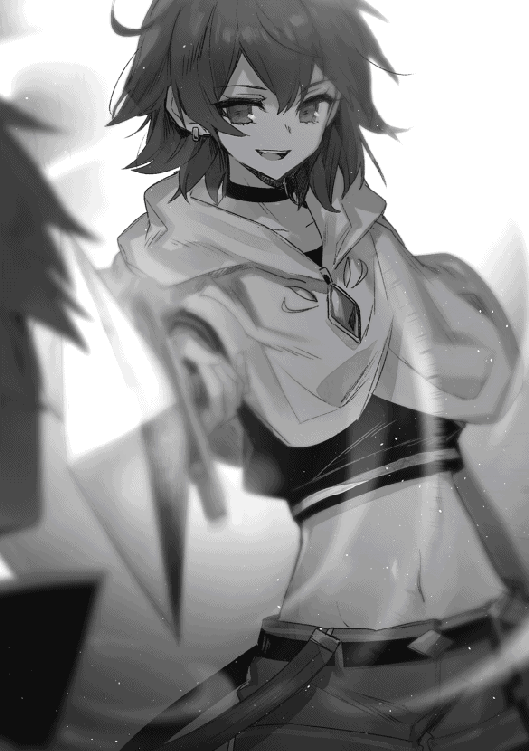

| 出来損ないと呼ばれた元英雄は、実家から追放されたので好き勝手に生きることにした【電子書籍限定書き下ろしSS付き】 | |
| 紅月シン | |
| TOブックス (2018) | |
「貴様をヴェストフェルト公爵家より追放する――」神の恩恵『ギフト』を得られず、出来損ないと呼ばれた少年・アレン。無一文で捨てられた彼の正体は――前世の記憶と力を持つ「元英雄」だった!? 今世こそは平穏に生きたい彼は、追放されたのをいいことに待ちに待った自由気ままな旅を開始する！ しかし道中、元婚約者の暗殺未遂に遭遇したり、女勇者と龍退治に赴くことになったり、果ては、友人であるエルフの鍛冶師が行方不明にと......次々厄介事が浮上。その裏には、決別したはずの元実家の黒い影があり......？ 「こんなはずじゃなかったんだけどなぁ......(遠い目)」ほのぼのライフに憧れる元英雄の気ままなヒーロー譚、開幕！
目次
イラスト／ちょこ庵
デザイン／舘山一大
追放
「──今日この時を以て、貴様を我がヴェストフェルト公爵家より追放する。いいな？」
男の上げたその声は、広間によく響いた。
特に張り上げたわけでもないのに隅々にまで響き渡ったのは、決してその部屋に人の気配が乏しいからだけではあるまい。
──ヴェストフェルト公爵家。
大陸の中央に広い版図を広げるアドアステラ王国の中でも武を司る家の当主の声は、ただそれだけでよく響くのである。
だがその言葉に重い響きがあったのは、彼の言葉に端を発するある状況ゆえであった。
部屋に存在している人影は、三つ。
一つは当主のものであり、その髪と同じ色を持つ藍の瞳を細めながら、眼下を眺めている。
もう一つはその傍らにあるが、最後の一つは彼らの足元で跪き俯いている少年のものだ。
彼らはまるでその少年を断罪しているかのようであった......いや、あるいは本当にそのつもりなのかもしれない。
当主の声音には一切の感情が込められておらず、少年に向けられたその目はまるで路傍の石ころでも見ているかのようだ。
中肉中背に、群青色の髪。
俯いているその顔は影となり、周囲からうかがうことは出来ないものの、その肩が小さく震えていることだけは見て取れる。
そしてそれを見て、あざけるような......否、あざけりそのものの声が男の隣から発された。
「はっ......まあ当然だな。むしろ今まで追放されなかったことをありがたく思ってくれていいぐらいなんだからな。なあ──『出来損ない』？」
出来損ない、という呼び名は、間違いなく少年に向けられたものであった。
しかしそんな呼び方をされながらも、少年は俯いたまま顔を上げることはない。
ただジッとその場で、肩を震わせるだけだ。
「ふんっ......言い返しもしない、か。最後ぐらい何か面白い反応をしてくれるかと期待したんだが、結局最後まで期待はずれだったな。まあやはり所詮は出来損ない、か」
そう言って当主の隣に立つ男──否、それもまた少年だ──は眼下で跪き、俯いている少年の姿に鼻を鳴らすと、当主へと視線を向けた。
蔑んだような表情はその一瞬でなくなり......そうなると、少年と当主の顔が驚くほど似通っていることに気付く。
だがそれは当然だ。
その二人......いや、その場にいる三人は、血の繋がった親子なのだから。
血縁上は弟にあたる少年は、血縁上は兄にあたる少年の姿をほんの僅かに眺め、顔をしかめながら父に対して口を開く。
「しかしそれにしても、少々決断するのが遅かったのではありませんか、父上？」
「そう言ってくれるな。万が一にも有用な『ギフト』を手に入れるようなことがあれば、お前の助けにもなったであろう？」
「それは確かにそうなのですが......結果はご覧の有様ではありませんか」
「あくまでもそれは結果論だ。お前は少し性急にことを運び過ぎる。我が公爵家を継ぐ以上は、いつまでもそのままでは困るぞ？ お前は、そこの出来損ないとは違うのだからな」
「......そうですね。申し訳ありません、父上」
そうして頭を下げながらも、少年の口の端は吊り上がっていた。
眼下に視線を向けるその姿は、まるで宝物を自慢する子供のようだ。
ただしそこには傲慢さも見え隠れしており、お前が手にすることの出来ない宝物を自分は持っているのだと、見せ付けているようでもあった。
「ところで、父上、ついにそこの出来損ないを追放するとのことですが、具体的にはどうするのですか？ いえ、もちろん僕は理解しているのですが......ほら、そこの出来損ないは、僕達と比べ『賢さ』が低いですから」
「ふむ......確かに、しっかりと言葉にせねば伝わらぬか。とはいえ、そう難しいことでもない。今後、我が家にアレン・ヴェストフェルトなどという人物はいない......いや、最初からいなかった、ということになるだけなのだからな」
少年──アレンは、その言葉にもやはり、顔を上げることはなかった。
俯いたまま、やはりほんの僅かに肩を震わせるだけだ。
それを眺めながら、アレンの弟であった少年は、嗜虐的な笑みを浮かべる。
「ほぅ？ 父上は随分とお優しいのですね？ このような我が家の恥、てっきり『処分』してしまうのかと思いましたが」
「確かにそれも考えたがな。まさか『レベル』が上がらないだけではなく、『ギフト』を手に入れることすら出来ないとは、さすがに予想外であったからな」
「まったくですね。いくらなんでも限度というものがあるでしょう。......こんなゴミに僕と同じ血が流れてるなんて、ゾッとしない話ですよ」
「お前はまだマシだ。俺などコレのせいで、俺の血は呪われている、などと言われたこともあったのだからな。お前がいてくれたからよかったようなものの......実はアイツがどこかから拾ってきたのではないかと何度考えたことか」
「ああ、それは確かに有り得る話ですね。僕もおぼろげにしか覚えていませんが、それでも母上がお優しかったことははっきりと覚えていますから。......それにしても、ではやはり『処分』してしまった方がいいのでは？」
処分、という言葉を強調して発しているその姿は、明らかに楽しんでいた。
しかし父親である男はそれをたしなめることはなく、その顔を苦々しげに歪めたのも別の理由によるものだ。
「......そうしたいのは山々だったのだがな。こやつが出来損ないだと分かる前、王女と婚約させていたことがあっただろう？」
「確かにありましたね。身の程知らずにも、出来損ないと分かってからもしばらくは婚約状態が続いていたということを覚えていますが......まさか王族が、この者に慈悲を見せた、と？」
「王女の方はそうだったのかもしれんが、王の方は違うだろう。いなかったことになるとはいえ、処分されるような者と娘が婚約していた、などということにはしたくないのだろうな」
「結局は変わらないような気もしますが......父上がそう決めたのでしたら、それが正しいのでしょうね。......ふんっ、運のいいことだな、出来損ない」
運がいいと言いながらも、少年の顔はまったくそうは言っていなかった。
そこに浮かんでいたものは、忌々しい、とでも言いたげなものだ。
だがすぐに、何かに気付いたかのように、そこには再び嗜虐的な笑みが浮かんでいた。
「いや、そうとも言い切れないか。何せ貴様はもうこの家の人間ではないんだからな。まさか今まで自分が使っていたものをそのまま持っていけるなどと思っていたわけじゃないだろうな？ 貴様は無一文のままここから放り出されるということだ。......ははっ、貴様は果たしていつまで生きていられるだろうな？」
「......いや、さすがに無一文のまま放り出すのはまずかろう」
「......父上？ まさか、何かを与えるというのですか？」
そう言った少年の顔は、愕然といったものであり──。
「ああ。無一文で放り出した結果、治安を乱されては敵わんからな。そうだな......貴様の私物であったものの中から一つだけ持っていくのを許可するとしよう」
しかしその言葉を聞き、すぐに少年の表情は一転する。
得心がいったと言わんばかりに、楽しげな笑みを浮かべた。
「ははっ......なるほど、さすがは父上、太っ腹ですね。おい出来損ない、聞いたか!? 父上に感謝しておけよ！ はっ......そして精々役に立つものを持っていくんだな......！」
少年がそんなことを言った理由は単純である。
出来損ないと呼ばれているアレンに大したものが与えられているはずがなく、その中の一つを持っていったところでどうしようもないということを知っていたからだ。
「さて......ここまで懇切丁寧に説明されれば、貴様とて理解出来ただろう。故に、もう一度だけ口にするとしようか。──今日この時を以て、貴様を我がヴェストフェルト公爵家より追放する。......いいな？」
一応確認の形は取っているものの、それは明らかに確定事項であり、命令であった。
アレンには最初から、頷く以外に道はないのだ。
──もっとも、拒否出来たところで、アレンは頷いていただろうが。
あるいは、それでもここで、拒否されるとはまるで考えていないだろう二人の前で拒否してみせれば、今までの意趣返し程度にはなるのかもしれないが、それをアレンが実行することはない。
さすがにそれは、『年上の人間』がやることではないだろうと、考えているからだ。
故に。
「......分かりました。今までお世話になりました」
アレンは最後まで俯いたままで、それだけを答えたのであった。
元英雄、気楽に辺境の地を目指す
──アドアステラ王国ヴェストフェルト公爵領ノックス。
アドアステラ王国の中でも南端に位置するヴェストフェルト公爵領の中で最も栄えているその街の中を、ローブを目深に被った人影がひっそりと歩いていた。
賑わっている中にあってその姿に人々からの注意が向かないのは、ここではそういった者は珍しくもないからである。
他国の国境に近いことや辺境と呼ばれる地がすぐ傍に広がっていることもあり、様々な事情持ちが流れてくるのだ。
しかしそういった者達の末路は大抵が同じである。
ここにも自分達の居場所がないことに気付くと、早々に街を後にすることになるのだ。
そしてローブ姿の人物もまた、そうであった。
街の外へと向いて進んでいき、そのまま城門をくぐり抜ける。
そうして一度も振り返ることなく、歩き続け──。
「んー......まさか本当に処分しに来ると思ってたわけじゃないけど、何もないってのは予想外だったかなぁ。絶対何かしらのことはしてくると思ったけど......まあ、何をしてこないっていうんならそれに越したことはないか。それなら好き勝手やるだけだしね」
と、不意に呟くと共に、一度だけ振り返った。
だが僅かに目を細めるも、すぐに前方へと向き直る。
おもむろにローブのフードが払われ、中から現れたのは少年の顔であった。
少年──アレンの顔は、心底晴れ晴れとしたものだ。
つい先ほど実家から追放されたばかりだというのに、その姿からはそんな雰囲気はまるで感じられない。
そう、アレンが実家から追放されたのは、本当につい先ほどなのだ。
その足でこうして街の外にまで出てきて晴れ晴れとしているなど、先日十五歳を迎えたばかりの少年とは思えない姿である。
とはいえ、それも当然だ。
厳密な意味で言えば、アレンは十五歳ではない──前世の記憶を持っているからである。
──転生者。
そう呼ばれる存在であり、アレンが妙に晴れ晴れとした様子なのもそのせいだ。
何故ならば、誤解を承知で言うのであれば、アレンはずっとあの屋敷を出て行きたいと思っていたからである。
アレンは前世では、英雄と呼ばれる存在であった。
文字通りの意味で世界を救った英雄だ。
しかし英雄だからといって華々しい生活だったというわけではない。
むしろ血みどろの日々だった方が多かったし、権謀術数的な意味でもドロドロとしたものによく巻き込まれていた。
暗殺者に命を狙われるのは日常茶飯事で、心穏やかにいられた時間などほぼ存在しなかったと言っても過言ではないだろう。
しまいには折角世界を救ったというのに、人々から向けられたのは恐怖だ。
さすがに嫌になってしまい、アレンはその世界を去ることに決めたのである。
幸いにもと言うべきか、アレンにはその伝手と手段があった。
アレンの英雄としての力は、その世界の女神から与えられたものだったからだ。
世界を救うこととなったのも女神から役目を与えられたからであり、役目を果たした結果、アレンには何でも願いを叶えることの出来る権利が女神から与えられた。
かくしてアレンの願いは正しく叶えられ、こうして転生することが叶った、というわけである。
転移ではなく転生だったのは、どうせならば一からやり直したいと思ったからだ。
だがアレンの願い通りだったのは、そこまでであった。
「僕はあくまでも、平穏な暮らしを求めてこの世界に来たはずなんだけどなぁ......」
だというのに、何の因果か転生した先は公爵家だったのだ。
その時点で平穏な生活からは縁遠そうなのに、さらにアレンは気がつけば神童などと呼ばれるようになっていた。
そう、今でこそ出来損ないなどと呼ばれているアレンだが、かつては神童と呼ばれていたのだ。
それが、アレンが前世の記憶を持っていたからとかであったのならば、自業自得とも言えようが──。
「『レベル』や『ステータス』のせいだとか、当時はどんな嫌がらせかと思ったなぁ」
この世界は、神々と精霊に愛された世界と言われている。
その理由が、『レベル』と『ステータス』、そして『ギフト』だ。
『レベル』と『ステータス』は精霊から与えられ、『ギフト』は神々から与えられる。
故に、神々と精霊に愛された世界、というわけだ。
この話は一般教養と言って良い程度にはこの世界で広く知られていて、この世界の人々の宗教観にも強く影響している。
この世界には、宗教と呼べるものは一つしか存在していない。
所謂多神教ではあるものの、神からの恩恵というものを直接感じる事が出来るからか、複数の宗教が発生しなかったのである。
そして恩恵を感じるがゆえに、当然のようにこの世界の人々の信仰心は厚い。
もっとも、盲目的に信じているというよりは、自然なこととして受け入れている、といった方が近いだろう。
日々の糧を得られることを神に感謝することはあっても、狂信的に神のために何かをしようとするようなことはしない、というわけである。
少なくともアレンは、この世界ではそんな者達を見たことはなかった。
まあ、見た事がないというだけなので、『教会』あたりにはそういった者達もいるのかもしれないが。
『教会』とアレンはあまり関わり合いがなかったが、設立理由などを考えればいてもおかしくはない。
ちなみに『教会』とは、建物の名称ではなく、この世界で宗教を管理する組織の総称だ。
教皇と呼ばれる者を頂点とするが、実質的な権限はその下に就いている、この国に居を構える大司教が握っている......いや、それは今は関係のない話か。
要するに、宗教関係のことを一手に引き受けている組織が存在しているということだ。
当然のようにそこに所属している者達は信仰心が特に厚い者達なので、狂信者のような者達がいたとしても、不思議はない。
ただ、アレン自身に限って言えば、信仰心は薄い方だ。
ほぼないと言っても過言ではない。
何せ言い方は少しアレなことになってしまうが、前世のアレンは神に良いように使われたようなものなのだ。
納得してやったことなので、恨んでこそないものの、かといって信仰する気にもなれないのである。
神ではなく、手伝ってくれた者に対してならば話は別なのだが......ともあれ。
そんな世界ではあるが......いや、そんな世界であるからこそ、この世界では『レベル』『ステータス』『ギフト』の三つが絶対視されている。
その理由は単純で、基本的にその三つが『絶対的』なものだからだ。
『ステータス』とは、個人の能力を客観的に数値化したものであり、『力』、『素早さ』、『賢さ』、『器用さ』、『体力』、『魔力』、『運』の七つの項目に分けられている。
先に述べた通り、これらの数値は絶対、つまり『力』が１の者が２の者に力比べで勝つことは有り得ない。
たった１の差なれども、そこには圧倒的な差が存在しており、覆すことは原則的には不可能なのだ。
生まれた時のステータスは大体０から２の間であることが多いが、０というのは能力がないというわけではなく、１に満たないということである。
この数値が高ければ高いほどにその能力が高いということで、生まれた時に３あれば間違いなくその分野では天賦の才があると言われるほどだ。
各ステータスの値は一生変わらないというわけではないが、変わるタイミングというのは決まっている。
それが、『レベル』が上がる時だ。
『レベル』は魂の位階とも呼ばれるもので、これは様々な経験を積むことによって上がる。
そしてレベルが上がる時にそれまで積んできた経験に応じて各ステータスも上がるが、レベル自体は簡単に上がるものではない。
レベルは基本的に生まれた時は０で、レベルを一つ上げるには最低でも一年は必要とされ、必要な年月はレベルが上がるごとに増していく。
人によってレベルの上がりやすさや上限は変わり、鍛錬に二十年の月日をかけてもレベルが一つも上がらなかった、という話もあるほどだ。
また、レベルが上がる際に上昇するステータスの量も、劇的に上がるということはほぼない。
才能のある分野のみを重点的に鍛えたところで２上がるか否かというところだ。
３上がることはほぼないと言っていい。
尚、ステータスもレベルも、生まれた時に精霊から与えられるものではあるが、慣例的に五歳の誕生日に『鑑定』と手段を使うことで測られることになっている。
これはあまりに早く才能の有無が分かってしまうと成長に悪影響があるとされているからだ。
そのため、レベルを上げるための努力も必然的にそれから行われるようになるわけだが、先に述べたようにレベルというのは非常に上がりづらい。
１になるのに最低一年とは言ったが、平均すれば五年はかかるのが普通であり、２になるには平均で十年は必要だ。
逆に成人を迎える十五の時にレベルが３あればほぼ間違いなく天才と呼ばれるし、４あれば神童と呼ばれることだろう。
ついでに言うならば、鑑定時の各ステータスの値で一つでも５を超えるものがあるのならば、これまた天才と呼ばれたりする。
そして。
アレンは五歳のステータス鑑定の時に既にレベルは１であり、全てのステータスが５であった。
改めて言うまでもなく有り得ないことであり、故にアレンは当時神童などと呼ばれ、持てはやされまくる羽目に陥ってしまったのである。
「......ま、それも五年で済んだんだから、よかったって言うべきなんだろうね」
そう、神童と謳われたのもアレンが十歳になるまでであった。
十歳の誕生日を迎えても、アレンのレベルは１のまま変わる事がなかったからだ。
一歳年下の弟などは既に２に上がっていたというのに、だ。
そうしてアレンはある意味では無事、神童などとは呼ばれなくなり、父親から出来損ないと呼ばれ、弟からは蔑みの目で見られるようになった、というわけだ。
正直その時点で追放されてもおかしくはなかったというかアレンとしては是非とも追放して欲しかったのだが、そうならなかった理由が『ギフト』だ。
『ギフト』は神々から与えられる恩恵であり、時にはステータス上での不利すらも覆すことのある強大な力である。
原則的に不可能なステータスの差もギフト次第では覆すことが出来るのだ。
とはいえ、どんなギフトを与えられるかは千差万別であり、あくまでもその可能性があるというだけでもある。
基本的にギフトによって与えられる恩恵というのは、ある意味で非常に限定的なのだ。
たとえば、『剣豪』というギフトを授かればそれまでに一度も剣を握った事がなくとも一流の剣士のように剣を振るう事が出来るようになるし、『怪力無双』というギフトを授かれば『力』が０であろうとも自身の何倍もあるような岩を軽々と片手で持ち上げられるようになる。
あるいは『魔物使い』というギフトを授かれば魔物と意思疎通が出来るようになったりするし、『天眼通』というギフトを授かれば相手のレベルやステータス、それにギフトを見抜けるようになる、などだ。
しかしどんなものであろうとも、神々からの贈り物に相応しい恩恵を得る事が出来るのは確かである。
そしてこのギフトは、ステータスとは異なり、生まれた時に与えられるものではない。
祝福の儀という儀式を行なう必要があるのだ。
祝福の儀とは成人を迎えた者が行うものであり、成人となったことを祝う儀式でもある。
基本的には成人を迎えた者は全員が行うが、この辺は国によって多少の違いはあるらしい。
神々から恩恵を与えられる儀式であるのだから、当然のように教会が無償で取り仕切っているのだが、中には寄付という名目で金銭が必要となる国もあるとのことだ。
そのせいでその寄付が払えず、祝福の儀を受けられない者もいるらしいのである。
幸いにもと言うべきか、この国ではそういうことはないため、寒村の出の子供であろうとも平等に受ける事が可能だ。
その理由は大司教がいるからだの、大司教がこの国の民を贔屓をしているからだの言われてはいるものの、真相は不明である。
もっとも、それがどんな組織であろうとも、人が運営している以上は金が必要なのは当然のことだ。
なので寄付という形で金を集めるのは不思議でも何でもなく、むしろ不思議なのは何故この国ではそれがないのかということの方だろう。
大司教がいるから、などという理由で全員を無料にしてしまえるほどこの国は小さくはないのだから、それなりの理由があるのだろうが......まあ、アレンが気にすることではあるまい。
ともあれ、そうして先日成人を迎えたアレンもその祝福の儀を受けたのだが......結果は前述の通りである。
「そうして無価値となった僕は、こうしてついに放逐されるに至った、と......んー、こうして改めて思い返してみると、今世の僕も結構アレだなぁ......」
だがそれも今日までだ。
先ほどから言っているように、この状況はアレンにとってむしろ望むところなのである。
あの時特に抵抗らしい抵抗をしなかったのもそのためだ。
というかそもそも俯きながら震えていたのは、屈辱に耐えるためではない。
うっかり笑みを浮かべてしまわないように、耐えていたのだ。
公爵家に生を受けてしまって早十五年。
別に出来損ないなどと呼ばれることはどうでもよかったし、そう呼ばれるたびに、ならばとっとと追い出してくれないかな、などと思っていたわけだが、これでようやく平穏を目指せるようになった。
晴れ晴れしい気分にもなろうというものである。
不安はまったくないし、目指す先も決めていた。
「辺境の地、か......さてさて、一体どんな場所なんだろうねえ」
──辺境の地。
それが、アレンが目指す場所であった。
正直な話、そこまで詳しいことを知っているわけではないのだが、辺境というぐらいなのだからきっと騒動や不穏な出来事などからは程遠いに違いない。
きっと今度こそ平穏な生活を送ることが出来るだろう。
そんな期待を胸に抱きながら、アレンは一路東へと歩みを進めるのであった。
元英雄、厄介事を見かける
「──それにしても、本当によかったのですか？ あの出来損ないを処分してしまわなくて」
不意に部屋の中に響いた声に、男──クレイグ・ヴェストフェルトは手元から顔を上げると、声のした方向へと視線を向けた。
そこにいたのは、自身の唯一の息子である少年──ブレット・ヴェストフェルトだ。
こちらの様子を伺うようにジッと見つめており、クレイグはその真意を探るように目を僅かに細める。
だがそんなクレイグの様子に気付いているのかいないのか、ブレットは構わずさらに口を開いた。
「今までのことを恨みに思っていて、我が家の不利益となるようなことを企んでいるかもしれませんよ？ まあ今まで僕達が何を言っても反攻的な目一つ向けてこなかったのですから、アレにそんな度胸があるとも──」
「──ブレット」
言葉の途中で、被せるように名を呼ばれ、ブレットはビクリと肩を震わせた。
決して強い調子だったわけではない。
だが、まるであの出来損ないを庇っているようにも思えたからだ。
まさかあの父に限ってそんなことはないとは思いつつも──。
「......だから、幾度も言っているだろう。お前は少し性急過ぎる、とな」
「それは、つまり......父上には何か考えがある、ということでしょうか？ あの出来損ないに、使い道がある、と？」
自分で言っておきながら、ブレットはまさかと思った。
アレがどれだけ使えないかは、父の方がよく分かっているはずだ。
レベルがまったく上がらないなどといえば、使えないどころの話ではない。
しかもギフトも与えられなかったとなれば、果たしてどんな使い道があるというのか。
と、そこまで考えたところで、ブレットはふとあることに気付いた。
「......まさか父上、アレがギフトを与えられなかったことに対し利用価値を？ 確かに上手く利用すれば神の──」
「──ブレット」
「──っ」
先ほどと違い、今度は強い調子の言葉であった。
さすがにブレットはそれで自分の失言に気付き慌てて口を閉ざすが、そもそも失言しかけた時点で問題である。
とはいえ、ブレットは大人びている──否、大人びたように見せているものの、まだ成人すらしていないのだ。
多少の失敗をしてしまうのはむしろ当然である。
だからクレイグはゆっくりと、諭すような口調で口を開いた。
「確かにお前の言おうとしていたようなことを考えたことはあるが、それよりももっとあの出来損ないが役立つことがある」
「それは、一体......？」
「そうだな、たとえばだが......そう、たとえば、この街の近くで高貴な身分の人物が無残な姿で発見されたり行方不明になったとしよう。そしてその街では最近身元が不確かな人物がうろついていたという証言があった。さてこの場合、お前はこの事件の最も有力な犯人は誰だと考える？」
一瞬ブレットは何を言いたいのか分からない、といった顔を見せたものの、すぐに理解の色を浮かべた。
この街には確かに様々な事情持ちが流れてくるが、さすがに身元が不確かということはない。
にもかかわらずそんな人物がいたというのならば......というわけだ。
納得と共に、その口元に歪んだ笑みが浮かぶ。
「......なるほど、そういうことですか。そこまで考えが至っておらず、申し訳ありませんでした」
「なに、お前はまだ若い。あの出来損ないと違って未来があるのだから、今のうちに沢山間違うといい」
「はっ、ありがとうございます......ですが、すぐに役に立ってみせますから」
「ああ、期待しているとしよう」
それは心底からの言葉であった。
何せ今回の計画には、ブレットの力が必要不可欠なのだ。
期待していないわけがない。
「......ところで、一つ気になったのですが」
「どうした？」
「いえ......本当にあの出来損ないが巻き込まれた場合はどうするのですか？」
「予定位置的に考えてそれは有り得んだろうが......何らかの理由によりそんなことが起こったところで、それはそれで構うまい？ 何故か死体が一つ消えるだけなのだからな。レベル１の出来損ない程度では、万が一にも邪魔など出来まいしな」
「......確かに、それもそうですね」
今度こそ完全に納得いったのか、ブレットは自らの作業へと戻っていった。
今は色々とやらねばならないことがあるのだ。
クレイグもまた手元へと視線を戻し......だがふと、その目を細める。
今の会話で思い出したというわけではないが、ちょうど頃合のはずであった。
上手いっていればそろそろ全て終わっているはずだろう。
さてどうなっただろうかと、クレイグその口元に暗い笑みを浮かべるのであった。
†
ふと誰かに呼ばれた気がして、アレンは後ろを振り返った。
だが当然のようにその方角には誰もおらず、首を傾げる。
「んー......？ 気のせい、か......ちょっと久しぶり過ぎてはしゃぎすぎちゃったせいかな？」
そう呟き苦笑を浮かべると、アレンは足を止め周囲を見渡した。
ノックスを後にしてから、一時間と少し。
そこにあったのは、だだっ広いだけの平原であった。
人影どころか、遠くに街の姿すらも見えない。
遠くにあるのは地平線だけであり、しかしそれも当然であった。
ここ一時間ほど、アレンはちょっと『本気』で走り回っていたからだ。
いや、あまりの解放感についテンションが上がってしまったからなのだが......割とあっという間だったような気もするも、何だかんだで十五年という日々は短くなかった、ということなのかもしれない。
「ま、ともあれ、と......少し冷静になれたところで、少し真面目に今後のことを考えようかね」
というのも、ぶっちゃけアレンは具体的に何かを考えていたわけではないのだ。
辺境の地を目指す、ということを決めていたものの、決めていたことは本当にそれだけ。
辺境の地で何をするのかということ以前に、辺境の地の何処に向かうのか、ということすらも決めてはいなかったのである。
そもそも辺境の地とは、あくまでも俗称だ。
文字通りの意味で辺境に位置していることは確かではあるも、もう少し具体的に言うと、それはヴェストフェルト公爵領の東側に広がっている一帯である。
そしてもう少しだけ突っ込んで言うと、ヴェストフェルト公爵家が所有しているものの、ろくに管理出来ていない場所のことであった。
ヴェストフェルト公爵領がアドアステラ王国の南端に位置しているということは既に述べた通りだが、つまりはヴェストフェルト公爵家は辺境伯としての役目も兼ねているのだ。
国境を守っているということだが、何故公爵家がそんなことをしているのかと言えば、単純にヴェストフェルト家がこの国の中で最も武力に秀でているからである。
それが事実であるのは、ここまでアレンが一度も魔物と遭遇していないことからも分かる通りだ。
前世の世界にもいたが、この世界にも魔物というものは存在している。
世界のどこにでもいてどれだけ狩ったところで尽きることがないとまで言われている魔物ではあるが、これまでアレンが魔物に遭遇することがなかったのは、避けていたからでもなければ、偶然でもない。
いくら魔物と言えども生物である以上は減らした分だけ減るのが道理であり、つまりはそれだけ魔物が狩られているからであった。
四大公爵家が一角、ヴェストフェルト公爵家は、王国の中でも武を司る家と言われるほどだ。
王国の中でも最大の武を有しているとまで言われているのは伊達ではなく、訓練と称して街の周囲の魔物を狩り尽くすのは日常茶飯事である。
あまりにもやりすぎるために、主に魔物を狩ることで生計を立てている冒険者が寄ってこないほどで、嘘か真か冒険者ギルドから文句を言われたことがある、などという話も聞いたことがあった。
ともあれ、そんな家であるからこそ、アドアステラ王国の中で最も危険と言われている南を任されているのだが、それは同時に土地を管理しきれていない理由でもある。
ぶっちゃけてしまえば、あまりにも有している土地が広すぎて管理の手が届かないのだ。
他の家に任せようにも、最も危険などと言われているような南の土地を持ちたい貴族などいるわけがなく、それが現状の無法状態に繋がっていた。
あとは単純に、武に傾倒しすぎていて領地経営がそもそも苦手、ということもあるのだが──。
「......ま、だからこそ辺境の地なんて呼ばれてる場所があるってことを考えれば、僕としては感謝すべきなんだろうけどね」
辺境の地は管理されていない土地ではあるが、管理されていないからこそ集まる人達というのも存在する。アレンが目指しているのもそんな場所だった......とはいえ、そういった場所は総じてその存在を普通外部には知らせないものだ。
勝手に住んでいるわけだから当然で、ゆえにアレンはその場所を知っているわけではなかった。
つまり、どこにあるのかはこれから探すのだ。
行き当たりばったりとも言う。
だが問題はないだろう。
仮に魔物と遭遇するようなことがあったところで、そんなものはどうとでもなる。
むしろ食料調達の手間が省けるので、是非とも来て欲しいぐらいだ。
どうせ実家からは追放された身。
何をしたところで誰も心配などは──。
「あー......そういえば、一人、いや二人だけそんな物好きがいた、かな？」
ふと、その人達の顔を思い浮かべる。
出来損ないと呼ばれ誰からも蔑まれるような状況であったアレンだが、そんな中でもずっと変わらず接してくれた人達がいたのだ。
その一人に至っては、アレンが出来損ないと呼ばれるようになって、ただ一人それはおかしいと口にした人でもあった。
正直アレンは別に気にしてなどはいなかったのだが......それでも、少しだけ救われたような気がしたのは事実だ。
「とはいえ、まあ最後に会ったのは五年も前のことだしね......さすがにこっちのことなんて気にしてないかな？」
下手をすればこんなことを考えること自体がただの自意識過剰だな、などと思い、苦笑を浮かべる。
それから、さて、と呟き意識を切り替え──。
「まあとりあえず適当に............歩いてみようとした、んだけどなぁ......。下手に『視』ちゃったのが仇になったかぁ」
繰り返すが、周囲には人影一つない平原が広がっている。
しかしアレンは、魔物のようなものに追いかけられている馬車、という光景を『視て』しまっていた。
それはここから影も形も掴めない程度には遠く離れた場所でのことだが、今現在起こっている出来事でもある。
そしてアレンは残念なことに、それを知って見過ごせるような性格をしていなかった。
「ま、寝覚めの悪いことになるよりはマシってことで」
平穏な暮らしからちょっとだけ離れるが、本当に少しだけだ。
この程度ならば問題はあるまい。
そうして、さて、ともう一度呟くと、アレンはその場から勢いよく駆け出したのであった。
襲撃
こんなことになるとは思ってもいなかった、などと言ってしまえば、嘘になるだろう。
少なくとも、可能性の話であれば十分に予見できたことだ。
しかしそれでもやはり、どうしてこんなことに、と思わざるを得なかった。
襲撃されることは予想出来ても、同行してくれていた騎士が三人ともまとめてやられてしまうなど、予測出来るわけがないのだ。
だがそのことを悔いることは出来なかった。
彼女にはその権利がない。
こうしてここまで来てしまった以上は、後悔する事など許されてはいないのだ。
彼女に許されているのは、彼女が向かっている先で果たそうとしている事案──彼女の役目で、果たさねばならない義務を無事に成功させるための、最低限必要な事柄に対してだけに限られていた。
「──っ」
と、足元からの衝撃により、身体が軽く跳ねた。
思わず反射的に外の景色へと視線を向けてしまうが、そこには先ほどから変わらない平原が広がっているだけだ。
おそらくは石か何かを踏んでしまったのだろう。
しかしそれでも速度が緩む気配がないのは、そうしなければならないからだ。
状況が悪いだろうことは、言われるまでもなく分かっている。
今も必死でこの馬車を走らせている自分の護衛騎士が何も言わないのは、その余裕がないからでもあるのだろうが、自分を不安にさせないためもあるのだろう。
だがそれが分かったところで、彼女に出来ることは何もなかった。
助けを叫んだところで、こんな場所では誰も助けになど来てくれはしないだろう。
......いや、あるいはここでなかったとしても、それは変わらなかったのかもしれない。
命の危機にある今、助けに来るとなればその人にも同様の危険が及ぶ。
命を賭してまで助けてくれるような心当たりなど、今も必死に馬車を走らせてくれている護衛騎士以外、今の彼女には存在しなかった。
だから、たとえここが王都であろうと、他のどこであろうとも、結局は──。
「......いえ、もしかしたら、彼でしたら──」
そこまでを考えて、しかし彼女は口元に自嘲の笑みを浮かべた。
それはあまりにも都合がよすぎる考えだったからだ。
彼がこんな場所にいるわけがない、ということもそうだが──。
「......あの時何も出来なかったわたしが、彼に助けてもらえるわけがありませんものね」
後悔と自嘲を混ぜたような、そんな呟きを零しながら、一瞬だけ後方へと視線を向ける。
構造上の問題で、視界には何も映りはしなかったが......確かに迫りつつあるその気配を感じ取り、リーズ・アドアステラは自らの腕を強く握り締めたのであった。
†
必死に馬車を駆りながら、ベアトリス・アレリードは思わず舌打ちを漏らしていた。
このままでは馬を潰してしまうだろうということと、そこまでしても迫ってきている相手を振り切れないということにだ。
むしろ少しずつ差は縮まってきており、このままではそう遠くないうちに追いつかれてしまうだろう。
「っ......こうなったら私が出るしかないか......？ いや、だが......」
後方へと視線を向け、その姿を確認すると共に唇を噛む。
どう想像を巡らせてみたところで、自分が『それ』に勝てるイメージは微塵も湧かなかった。
『それ』は、狼のような形をした何かであった。
狼だと断定しないのも、魔物だと言わないのにも理由がある。
そのどちらでもないことは分かっているからだ。
一度ベアトリス達は『それ』と刃を交えている。
厳密にはベアトリスは戦ってはいないのだが......同行していたベアトリスの同僚の騎士達が既に挑み、敗れているのだ。
ベアトリスよりも強い、王国の中でも上位の力を誇っていた三人がまとめて、である。
彼らに戦力で劣るベアトリスが勝てるイメージが湧かないのは当たり前のことであった。
そもそも今回ベアトリスが同行したのは、戦うためではないのだ。
ギフトのこともあり、ベアトリスは守ることの方が向いているからである。
──『騎士』。
ベアトリスのギフトであり、守備側に寄った身体能力強化系のギフトだ。
ただしその本質は契約と盟約にあり、主を定めた時にこそ初めてその真価を発揮する。
主を定めていない時にはステータスの器用さと体力の値に対して一割程度の増加しかもたらさないが、主を定めることで増加率は二割にまで増加するのだ。
さらには主の危機に応じてその倍率は高まり、命の危機にある時には実に二倍にまで達する。
もちろんそんなことはない方がいいに決まっているのだが、万が一のことを考えればこれほど有用なものはあるまい。
ベアトリスが今回同行したのも、その万が一のためであった。
あくまでもベアトリスは基本的には盾としての役目が主であり、剣としての役目は同行した他の三人のものであったのだ。
しかしその剣達が失われてしまった以上は、最早そんなことは言っていられない。
ベアトリスが何とかするしかなく......だがそこで先ほどの問題にぶち当たる。
このまま戦いを挑んだところで、犬死する未来しか見えなかった。
別にこの際死んでしまうこと自体は恐ろしくも何ともない。
しかしこうして主を危険に晒した挙句、役目もろくに果たせずに死んでしまうことだけが恐ろしかった。
あるいは、主と共に挑みギフトの効果を最大限に発揮することが出来るのならば、ほんの少しだけ勝ち目があるのかもしれない。
だがそれは主に仕える騎士の考えではないだろう。
そんな賭けで主の命を危険に晒すくらいならば潔く死を迎える。
とはいえ、潔い死を望むこと自体もベアトリスの自己満足でしかない。
となれば──。
「残る手段は一つだけ、か」
呟くと共に、後ろを振り返る。
後方の様子を確認していると見せかけて、一瞬だけ主の姿を確認した。
馬車の中で小さくなっているその姿は、歳相応の少女のものにしか見えない。
まだ成人を迎えたばかりであることを考えれば、それが当然なのだ。
しかもおそらくは、何か余計なことを──これは自分のせいだとかそういったことを、考えてしまっているに違いない。
ベアトリスが彼女に仕えてから、もう十年だ。
その程度のことが分からないわけがない。
そしてだからこそ、ベアトリスは覚悟を決めた。
主の為に命を捨てる覚悟は、主を定めたその時に終わらせている。
ゆえに今した覚悟は、これから主を自らの手で不確定な未来へと突き落としてしまうことに対してのものだ。
ここを生き延びても、一人きりとなってしまった彼女がその後も無事でいられるとは限らない。
その後であっさり死んでしまう可能性だってある。
だがベアトリスは、主である彼女を信じていた。
縮こまって余計なことを考えてしまっていても、その瞳の中に強い光が宿っていることを知っている。
だからきっと、大丈夫だ。
覚悟を決めきった身体に、自然と力が入る。
そしてそうと決めてしまえば、後は早かった。
激走する馬の手綱から手を離し、立ち上がる。
そのまま御者台の外へと、身を躍らせた。
「──っ!?」
一瞬、真横を通り過ぎていった馬車から主の驚いたような顔が見えたが、彼女のことだからすぐにこちらの意図は察してくれるだろう。
これ以外に方法はない、ということも。
手綱を放したからといって、馬が止まるということはない。
これまでと同じような激走は続かず、それどころか方向すらもろくに定まらないだろうが、幸いにしてここは平原が続いている。
馬を駆る技能のない主でも、遠くに移動するだけのことならば可能だろう。
ただしその先がどうなるかは分からないが、それに関してはもう信じると決めた後である。
そうしてベアトリスが地面に降り立ったのと、『それ』が追いついてきたのはほぼ同時であった。
ベアトリスが考えた作戦は、単純にして明快。
このまま主が逃げ切るまで持ちこたえるというだけだ。
主がこの場におらずとも、ベアトリスが防御方面に秀でていることは変わらない。
本当に逃げ切るまで持ちこたえる事が出来ると思っているわけではないが、最低でも瞬殺されるということはないはずだ。
僅かにでも時間を稼ぎ、少しでも主の生き残る可能性が上がるのであればそれで十分である。
そんなことを考えながら、ベアトリスは左手の盾を前面に構え、剣を持った右手を引く。
防御主体に構えつつ、油断なくその姿を見据えた。
その形状はやはり、狼のものだ。
ただしこうして改めて眺めてみるとよく分かるが、狼そのものでは有り得ない。
明らかに生物ではないからだ。
精巧に作られてはいるが、おそらくその身体は土で作られている。
ゴーレムの一種といったところだろう。
もっともそれ自体は最初に遭遇し戦闘になった際、同僚の一人がそれの身体を斬り裂いた時から分かっていたことだ。
確実に首を落としたにもかかわらず直後に元通りとなったのである。
明らかに生物に可能なことではなく、斬り裂いた同僚は一瞬だけ気を抜いたところを狙われ、お返しとばかりに首を噛み千切られた。
残りの二人がどうやられたのかを、実のところベアトリスは知らない。
その時点で主を馬車に押し込み、自身は御者台へと乗り込むと、そのまま走り去ったからである。
本能的にまずいと悟ったからで、それが正しかったことは現状の示す通りだ。
故にベアトリスが相手の出方を見ているのは、相手がどういう攻撃をするのかが分かっていないからでもあった。
時間を稼ぐという意味も兼ねて、まずは様子を見るのは当然のことだろう。
何せ一人やられた時点で残りの二人は油断など微塵もしていなかったはずなのだから。
「......？」
だがそこでベアトリスの脳裏に疑問が過ったのは、相手もまたベアトリスの様子を見ているらしいことに気付いたからであった。
少なくともあの時この相手は、即座にこちらに襲い掛かってきたはずだ。
あの場に残った二人があの後この相手に脅威を感じさせるほどの力を示したというのであれば、それを基準としてこちらの様子を伺う事があってもおかしくないのかもしれないが......それでもやはり、少し不自然に思う。
何故なら、ゴーレムとは単純な命令しか聞くことが出来ないはずなのだ。
だというのに、この相手は自律行動しているようにか見えない。
となると、ゴーレムに似た何かということになるが......いや、それはどうでもいいことか。
問題なのは、何故様子を見ているのかということだ──。
「......っ!?」
瞬間ベアトリスが背後を振り返ったのは、耳に悲鳴のようなものが届いたからであった。
だがそれは、人のものではない。
馬──見間違えでなければ、視線の先、大分離れた場所にまで移動した馬車に繋がられている二頭の馬が、地面から伸びてきている何かに貫かれ悶えていた。
そしてその動きによって、馬車がゆっくりと横向きに倒れていく。
その光景をベアトリスは一体何がという思いと共に眺め──同時に、盾を握る腕に力を込めていた。
直後に腕へと伝わった衝撃に、やはりかと思う。
方法は分からないが、きっとこの相手がやったのだろうと思い......ずきりと、腕から感じた痛みに思考が吹き飛んだ。
「......は？」
反射的に盾を構えた腕に視線を向ければ、そこにはあるはずのものがなかった。
構えていたはずの盾が消失──否、切り裂かれて地面へと落下していたのである。
「......馬鹿な、ミスリル製の盾だぞ......？」
主を守るために、国王から授かった品だ。
それがこんなにあっさりと切り裂かれるわけがなく......そしてその呆然とした一瞬が、致命的な隙であった。
身体の一部が失われる感覚と共に、足から力が抜けその場に倒れこむ。
「が、はっ......！」
倒れてしまったため見えないが、おそらくは下腹部の三分の一程度が食い千切られた。
間違いなく致命傷であり、何よりもまずいのが痛みを感じないということだ。
それは既に身体が生きることを放棄してしまった証左に他ならない。
しかしそれでも、ベアトリスは諦めなかった。
諦めるわけにはいかなかった。
これでは本当にただの犬死にだ。
せめて一矢でも報いて少しでも時間を稼がなければ死んでも死にきれ──。
「──っ」
必死になって上げた視界に映ったのは、それが前足を振り上げた瞬間であった。
ミスリル製の盾をも切り裂いた爪が、無慈悲に振り下ろされる。
迫り来る死を、ベアトリスはただ呆然と眺めることしか出来ず──だが、結果死が訪れることはなかった。
その直前で、死をもたらす存在が吹き飛ばされたからだ。
そして。
「──あれ、ベアトリスさん？」
疑問に思うよりも先に、この場にいるはずのない、聞き覚えのある声が耳に届いた。
元英雄、英雄の力を振るう
地面に倒れ伏している見知った姿の人物に、アレンは思わず首を傾げていた。
彼女はこんなところにいるはずのない人物だったからである。
彼女──ベアトリスは王族直属の近衛騎士であり、王族の一人に仕えている人物だ。
そしてその王族はこんな場所に来るはずがないため、ベアトリスもまたこんなところにいるはずがないのだが──。
「......アレン、様？ 何故こんなところに......？」
「いや、それはどっちかっていうと僕側の台詞なんだけど......あと、以前にも言ったけど、僕を様付けで呼ぶ必要はないよ？ そもそも以前とは違って僕は完全にそういう立場でもなくなったしね」
「......？ それは、どういう──っ」
「っと、色々と聞きたいことはあるし、言いたいこともあるけど、今はそれどころじゃなさそうかな？ ......二重の意味で」
倒れ伏していてもベアトリスの腹部から血が流れていることはよく分かるし、先ほど蹴り飛ばした狼のような何かも健在のようだ。
どちらも放っておくわけにはいくまい。
とはいえ、同時に対処出来るほど両方とも楽なことではなさそうだ。
この場合どちらを優先すべきかと言えば、やはりベアトリスの方ではあるのだが──。
「んー......ベアトリスさん、何とかもう少しだけ死ぬの我慢出来る？ 可能ならあと数分ぐらい頑張ってくれると嬉しいんだけど」
「......ふっ、この状況で私にかける言葉がそれか。貴殿は相変わらずのようだな......」
敢えて軽い言葉を使ってはみたものの、それで笑みを返してくるあたりベアトリスも相変わらずのようだ。
さすがは『彼女』の護衛を任されるだけはあるといったところか。
「......まあ、正直かなり厳しいが、あと数分程度ならば耐えてみせよう。だが......大丈夫なのか？」
その大丈夫かという言葉には色々な意味が込められていたのだろう。
ベアトリスはアレンが出来損ないと呼ばれていることも、そう呼ばれている理由も知っている。
対してベアトリスは王国最強の一角であるレベル９だ。
本人は上には上がいると言ってはばからないし、実際攻撃においてはその通りではあるが、その分守ることに関してならば王国で一、二位を争うほどだと聞いている。
そんなベアトリスが呆気なくやられてしまったのだ。
先ほどベアトリスがやられた場面はアレンも目にしていたので、それが不意打ちのせいだということは分かっているものの、相手が並ならばそのまま防げたに違いない。
つまりは、彼女を負かした『アレ』は並の相手ではないということである。
ならば心配するのは当然であり......だがアレンはただ肩をすくめてみせる。
それから返答代わりとばかりに、無造作に足を踏み出した。
続く言葉がなかったのはこちらに対しての信頼故か、あるいは単純にその余裕がないのか。
確かめなかったのは、その時間すらも惜しかったからである。
ベアトリスはアレンの事情を知りながらも普通に接してくれる数少ない人物の一人なのだ。
亡くすには惜しすぎるし、何よりもそれは『彼女』が悲しむ。
それはアレンの望むところではなかった。
そんなことを考えながら前方を眺めれば、彼我の距離は十メートルといったところであった。
先ほどの動きを見る限りでは、あの相手ならば一瞬で距離を詰められそうなものだが、動きもしないのはこちらの様子を窺っているからか。
しかしそれに付き合う義理はなく、構わずアレンは歩を進める。
だが時間がないからといって......否、だからこそ、情報収集は大切だ。
一切の油断もなく一瞬で終わらせるために、アレンはそれを『視た』。
──全知の権能：天の瞳。
瞬間、視界に映し出されるのは、狼の形状をしたそれの全情報だ。
現在の体長に体重、正式な名称に愛称に製作者、レベルにステータスに攻撃手段に弱点、他にも様々な情報が得られたが、必要のないものは破棄する。
そうして全てを把握し──それが飛び掛ってきたのは、直後のことであった。
おそらくは視られたことに気付いたのだろうが、生憎と遅すぎる。
それの正式名称が魔導生命体クレイウルフだということも、ゴーレムに似た性質を持っているということも既に分かっているのだ。
弱点もゴーレムと同じであり、体内のどこかにある核を砕けば自壊する。
その場所もまた把握しているし、この状況で最も面倒だったのは即座に逃走に移られた場合であった。
しかし向こうから向かってきてくれた以上はそれを考える必要はなく──。
「っ......アレン様......！」
と、後方から聞こえた声に、アレンは苦笑を浮かべた。
だから様付けはいらないと言っているのに。
口調だけは何とかなったのに、呼び方だけは頑なに変えようとしないところは本当に頑固だ。
まあそれはともかくとして......ベアトリスが声を張り上げた理由は分かっていた。
それは、警告である。
後方の死角となっている地面から、鋭く尖った槍のようなものがアレンに向かって勢いよく伸びているのだ。
アレンはそれが見えているわけではない。
ただ、予測出来ていたというだけだ。
先ほど馬がそれに刺し貫かれていたのを目にしたし、何よりもアレンはあのクレイウルフが地面に対し干渉することで土を操作出来ることを知っていた。
だがそれはつまり、飛び掛ってきたのは半ば罠だということである。
目の前のクレイウルフに注視すれば槍に死角から貫かれ、かといって槍に気付いてもタイミング的に両方に対処するのは厳しい。
先ほどの馬車への攻撃もそうだが、割と頭を使うタイプであるようだ。
──もっとも。
「ま、意味はないわけだけど」
──剣の権能：百花繚乱。
秒を待たずに煌いたのは、百の剣閃。
眼前のクレイウルフも、死角から迫っていた土の槍も、その影に隠れて迫っていた第二の槍も、瞬きをする間もなく諸共両断した。
「......っ!?」
瞬間、後方から驚愕の気配が伝わり、再び苦笑を浮かべる。
まあ、彼女達に見せたことはなかったので、驚くのは当然だろうが。
アレンのレベルは確かに１のままである。
ギフトも手に入れることは出来なかった。
だが。
アレンが前世から引き継いだのは、実は記憶だけではないのである。
そう、アレンは前世の頃の──英雄と呼ばれていた頃の力を使えるのであった。
今使った技も、土くれとなったクレイウルフを『視た』のも、そのうちの一つである。
前世で得た力は今まで誰にも話さず、見せたこともないものであったが、それはアレンが望んでいたのが平穏な生活だったからだ。
知られれば明らかに状況が悪化する未来しか見えないのに、何故教えなければならないのかという話である。
しかし家から追放された以上はもう誰の目も憚る必要はないし、今は間違いなく使うべき場面でもあった。
だから躊躇しなかったという、それだけのことである。
アレンは確かにレベルが上がらず、ギフトすらも授かることはなかった。
だがそれでもアレンには、その全てを覆すことの出来る力があるのだ。
もっともアレンがその力を振るうのは、自分の目指す平穏な暮らしのためだけではあるが......故に、アレンは今も死の淵にいるベアトリスの元へと急ぎ戻るのであった。
元英雄、驚きの目で見られる
目の前で起こった出来事に、ベアトリスは自分がおかれた状況を忘れるほどの驚愕を覚えていた。
アレンのレベルが１のままずっと変わる事がないということは、本人からも含め何度も耳にしたことだ。
最後に会ってから五年が経っているが、その間にレベルが上がったという話も聞いていない。
周囲は出来損ないなどと呼んではいたものの、仮にも公爵家の嫡男である。
もしも何かあったのならば伝え聞かないわけがなく、ならば今も１のまま変わっていないのだろう。
だが今ベアトリスが目にした光景は、到底レベル１で引き起こせるようなものではなかった。
何せ、ベアトリスですら何が起こったのか分からなかったのだ。
分かったのは、アレンに襲い掛かった狼のようなモノとアレンの死角から放たれていた攻撃が全てバラバラになったことだけである。
ただ、その様子からすればアレンが何かをやったのは間違いないだろう。
しかし、ベアトリスはこれでも、王国最強の一角とも呼ばれるレベル９だ。
攻撃こそ自信はないものの、防御に関してならば実際誰にも負ける気はしない。
そして防御において最も重要となるのは、目だ。
──即ち認識であり、相手の攻撃が認識出来ないようでは防げるわけがなく......そんなベアトリスに捉えきれなかったのである。
有り得ることではなかった。
だが同時に、ベアトリスは頭のどこかで納得している自分がいることも自覚していた。
アレンならばこんなことが出来ても不思議ではないと、何となくそんなことも思っていたのだ。
ベアトリスがアレンと初めて会ったのは、今から十年ほど前のことである。
騎士団学校を出てから四年、同じだけの時間を騎士団の一員として過ごし、近衛として抜擢され、主を定めた直後のことだ。
それは確かどこぞの貴族の誕生日パーティーか何かに呼ばれた時であった。
主役となるはずのその貴族よりも遥かに人に囲まれて目立っていた二人の姿をしっかりと覚えている。
当時神童と呼ばれていたアレンと、アレンとはまた別の意味で神童扱いを受けていた、ベアトリスが主と定めた少女であった。
二人が言葉を交わすようになったのは、ある種の必然なのだろう。
特別扱いをされる同い年の少年少女であり、しかも二人の家格は十分釣り合う。
本人達の心情的にも、大人達の都合的にも、そうならない理由がなかったのだ。
その時ベアトリスは護衛として同行しており、二人が言葉を交わしたその場所にも居合わせていた。
交わされたのはただの雑談で、互いに大変だねとか、そういったものだ。
しかしベアトリスはそんなアレンを眺め、正直なところ少し妙に感じていた。
変な意味ではなく、どことなく捉えづらかった、といったところか。
最も適切な言葉を探すのであれば、本当に子供なのかといった疑問だ。
自らの主も歳の割には大分早熟ではあったが、それどころではなく、また大人っぽいなどという言葉で言い表せるようなものでもなかった。
とかく、妙、としか言いようがなかったのだ。
その後何度もアレンとは主と共に顔を合わせることになるが、その印象は薄まるどころかさらに濃くなっていく一方であった。
特に、神童と言われていたアレンの評価が徐々に落ち、出来損ないなどと呼ばれるようになった頃には、より明確に感じていたと言っていい。
アレンとは逆に主の評価が上がる一方だったにもかかわらず、アレンの態度が変わることがなかったからだ。
むしろこちらの方が不自然に気を使ってしまっていたぐらいである。
今から五年ほど前からアレンは公の場には現れなくなってしまったため、最後に会ったのは主である彼女の私的な誕生日パーティーの場であったが......最後までその印象が変わることはなかった。
そんな印象が今も強く残っているからか、自分が負けてしまった相手にアレンがあっさりと勝利を収めても、頭のどこかであのアレンならばそんなこともあるのだろうなと思ったのだ。
そしてベアトリスはアレンのそんな姿に安堵も覚えていた。
何故アレンがこんな場所にいるのかは分からないし、アレンが一体何をしたのかも分からない。
しかしレベルが１のままであろうことを考えれば、ギフトを使って何かをしたのだろうと考えるのが自然である。
ということはそれは余程強力なギフトなはずであり、ならばもう彼が冷遇されることはないはずだ。
基本的に顔を合わせていたのは主ではあったが、同じ場にいるとなれば自然とベアトリスも会話を交わすようになる。
アレンとは歳が倍近く離れているが、歳が離れた弟のようにも、友人のようにも思っていたのだ。
友人の生活環境が改善されたとなれば、それを喜び安心しないわけがあるまい。
それに、アレンならば主のことを任せられる。
安堵の中には、そういう意味も含まれていた。
だからベアトリスは一つ息を吐き出し......身体から力を抜いた。
ここまでは何とか耐えていたものの、さすがに限界だったのだ。
受けた傷はそもそも致命傷であったし、血も流しすぎた。
もはや顔を持ち上げることすら億劫だ。
しかしベアトリスの心は、穏やかなままであった。
アレンには面倒をかけるとは思うが、心残りという意味ならばもう何もない。
そうしてベアトリスは、重くなっていく瞼に逆らわず、目を閉じ──。
†
──理の権能：魔導・ヒーリングライト。
手をかざすと同時、ベアトリスの身体が強烈な光に包まれた。
特に光は下腹部に多く集まっており、その光景にアレンは安堵の息を吐き出す。
さすがに少しというか、大分焦ったが、この様子ならば大丈夫だろう。
この光は生命力を強化するものであるため、死んでしまった人や手遅れな人に使っても効果がない。
逆に言えばこうして光るのであれば助かるということだ。
光は最後まで下腹部周辺に残っていたが、やがてそれも消え失せる。
と、その瞬間ベアトリスが勢いよく跳ね起きた。
全身をペタペタと触り、特に下腹部を重点的に確認し、そこに傷跡すら残っていないことを理解すると、その顔に驚愕の表情を浮かべる。
何故ならば──。
「馬鹿な......魔術であろうと魔法であろうとギフトであろうと、傷を癒すことの出来る力などというものは、存在しないはずだ」
それは事実だ。
この世界には魔術も魔法もあるが、傷を癒すための術式というものは存在していない。
負った傷を癒すには、基本的に自然治癒に任せるしかないのだ。
ただ一つの例外が、錬金術師の作り出すポーションである。
欠損した四肢の再生などは不可能ではあるが、ポーションと呼ばれる薬液を飲むことで、重度の傷でも即座の回復が可能だ。
しかしポーションを作り出すには相応の時間と対価が必要である。
しかも錬金術師になるには専用のギフトが必要であるため、絶対数が少ない。
必然的にポーションは非常に高価な代物となってしまい、アレンですら実物は数えるほどしか見た事がないほどであった。
錬金術師のギフト以外では、どんなものであろうともポーションは作れず、ましてや直接傷を癒すギフトなどは存在自体が有り得ない──ということになっている。
だが近年王国の中では、一つの噂が流れていた。
それは貧しき者の家へと赴き、傷や病を手をかざしただけで治してしまうという、『聖女』と呼ばれる者の話だ。
出没する場所は王都から離れた寒村が多いという話だが、その正体は不明である。
聖女に救われたという話は聞くのだが、肝心の聖女の正体となると誰も語ろうとしないからだ。
分かっているのは女だということだけで、だから幼い少女だとも、妙齢の美女だとも、あるいは腰の折れ曲がった老女だとも言われている。
そして王国は今その聖女を探そうとやっきになっているという話だ。
まあ人の傷を癒す力などないと言われている中で唐突に現れた存在である。
どれだけ有用なのかは言うまでもないだろうし、そうなるのはある意味当然だ。
ちなみに当たり前だが、それはアレンのことではない。
アレンが人の傷を癒すことが出来るのは、単に前世の世界では普通に魔法などで出来たことだったから、というだけであるし......とはいえ、聖女と同じことが出来るということは事実でもある。
そんなアレンに、ベアトリスが困惑と疑惑の混じった顔を向けるのは当然だった。
アレンを聖女だと疑っている──というわけではないだろう。
噂とは性別が違う、という以前の問題だ。
聖女が最初に現れたのは、三年ほど前と言われている。
その力がギフトによるものならば、先日成人を迎えたばかりのアレンであるわけがないのだ。
もちろんアレンの力はギフトではないので、三年前だろうとやろうと思えば出来ただろうが、普通は前世の記憶を持っていてさらには前世の力まで持ち越してきているなどと考えることはできまい。
それに、ベアトリスがアレンのことを聖女だと疑わないだろう理由は、もう一つある。
こっちに関しては正直未だ推測の域を出てはいないのだが──。
「──ところで、助けに行かなくていいの？ 多分あそこに乗ってるのは『彼女』なんでしょ？」
「──っ!?」
しかし、そういったことは一先ず脇に置き、肩をすくめながらそう言った瞬間であった。
脇目も振らず、ベアトリスは横転している馬車へと向けて走っていったのだ。
とはいえそれも当然だろう。
アレンの予想通りであれば、あそこにいるのはベアトリスの主だ。
主の安全を確保するのは騎士にとっての最優先事項であり、その前には、些細な疑問などは後回しにされて然るべきなのである。
「......ま、ベアトリスさん以外の人は多分些細だとは思わないだろうけど」
だが何よりも主を優先するからこそ、アレンは彼女のことを信頼しているのだ。
会うのは五年ぶりとなるが、変わっていないようで本当に何よりである。
そんなことを思いながら、アレンもまたゆっくりと馬車へと向かう。
横転した馬車のすぐ傍ではベアトリスが何かを叫びながら慌てている様子だったが、おそらくは横転した際の衝撃で扉が変にひしゃげて開かないのだろう。
どうにか出来ないか周囲を見て回っているようだが──。
「あ、壊した」
どうやら力ずくで解決することにしたらしい。
吹き飛ばされた扉を気にする様子もなく、ベアトリスが馬車の中へと手を差し伸べた。
そうして中から姿を見せたのは、一人の少女だ。
日の光に照らされた銀の髪にアレンは眩しそうに目を細め、直後に少女の顔がこちらに向いた。
瞬間金色の瞳が見開かれ、アレンは肩をすくめてみせる。
予想通りと言うべきか、顔見知りであった。
「や、リーズ。久しぶり」
「......アレン君、なんですか......？」
リーズ・アドアステラ。
アドアステラ王国第一王女にして、アレンの元婚約者であった。
元英雄、元婚約者と再会する
正直なところ、リーズは馬車が横転した時点で死を覚悟していた。
死んでもいいと思っていたわけではない。
リーズは王族だ。
ベアトリスの意図していたことは即座に理解出来たし、そこに思うところがあっても生き延びなければならないということも分かってはいた。
だがそれはあくまで、生き延びることが出来ればの話である。
唯一の脱出手段である扉は横転した際の衝撃でひしゃげてしまったらしく、押しても引いてもビクともしない。
リーズのレベルは一応２ではあったが、力が０であるため素手では壊すことも不可能だ。
そしてここでジッとしていれば助かる可能性はほぼゼロであった。
ベアトリスがあの狼のようなモノと戦って勝てるのであれば、最初からそうしているだろう。
逃げる以外に生き延びるすべはないのに、その逃げるすべが封じられてしまったのだ。
死を覚悟するには十分過ぎる状況であった。
死にたくはない。
結局何一つ果たす事が出来ずに、こんなところで死んでいいはずがない。
何よりも、ただ単純に、リーズは死にたくなかった。
それでも王族としての教育を受けてきたリーズは、泣き叫ぶことも出来ない。
ジッと膝を抱えて、おそらくはそう遠くないうちに来るであろう自らの死を待つことだけが、リーズに出来る全てであった。
そんな時、ふと頭に彼のことが過ったのは、先ほど彼のことを考えていたからなのかもしれない。
本当に調子のいいことだと自嘲し......でも──。
「最後に、もう一度だけでも──」
「──リーズ様......！」
「っ......ベアトリス......？」
聞こえないはずの声が聞こえた気がして、リーズは反射的に顔を上げた。
視線の先の扉がガチャガチャと動き、激しく揺れ、吹き飛び、そこから顔を見せたのは、間違いなくベアトリスだ。
状況がまるで分からずに、困惑したままではあったが、ベアトリスに腕を掴まれるとそのまま外に引っ張り出される。
そしてそこで、困惑は全て吹き飛んだ。
代わりにやってきたのは驚愕で......正直なところ、自分は本当は既に死んでいるのではないかと思ったほどである。
だってあまりにも、都合がよすぎたから。
視線の先にいたのが彼だということには、すぐに気付いた。
あの頃よりも背は伸びて、大人っぽくなってはいたけれど、その程度で見間違うわけがない。
その顔にあの頃と変わらぬ笑みを浮かべながら、かつての婚約者であるアレンはそこに立っていたのであった。
†
「その......アレン君が、どうしてここに？」
そう言ってこちらを見つめてくるリーズの瞳の中には、純粋な疑問だけがあった。
こちらを嘲ったりするようなものは微塵も含まれておらず、どうやら彼女も相変わらずらしい。
そう、彼女もまた、アレンの事情を知りながらも普通に接してくれていた人物の一人だ。
あるいは最初の一人であり、ある意味唯一の人物でもあるのだが、とりあえずそれはいいだろう。
ともあれそんなリーズの姿を見てアレンが真っ先に感じたことは、実は意外さであった。
当時既に成人していたベアトリスの態度が変わっていないのはそれほど意外ではないが、最後にアレンがリーズと会ったのはリーズが十歳の頃である。
その後周囲から色々と話を聞く機会もあっただろうし、何せ多感な時期だ。
影響を受けないわけがなく......だが少なくともアレンの目には、彼女は何一つ変わっては見えなかった。
もちろん会ったばかりだから、そう装っているだけの可能性もある。
先に述べたように彼女は王族だ。
アレンの知らない間にそんな芸当が可能になっていたところで不思議はない。
だがこれでもアレンは前世では英雄と呼ばれ、今世では公爵家の嫡男であった。
数え切れないほどの貴族と顔を合わせており、そういった仮面は見抜ける自信がある。
そしてそんなアレンから見て、リーズからそういった欺瞞はまるで感じられなかった。
容姿こそ当時から見たら大人びてはいるものの、その内側はあの頃のままであるように感じられる。
そのことを嬉しく思わないと言えば嘘になるだろうし......不意に悪戯心が頭をもたげたのも、きっとそのせいだ。
「どうしてここに、か......そうだね、まあ、リーズを助けるために、かな？」
「──え!?」
「これでも元婚約者だからね。君が危機に陥れば助けに来るさ」
「え、あ、あのっ......それはっ、そのっ、どういう......って、むぅ～」
こちらの言葉に慌てた様子を見せていたリーズだが、途中で一転して拗ねたように唇を尖らせたのは、アレンの口元に浮かんだ笑みに気付いたからだろう。
当然と言うべきか、今のは半ば冗談である。
助けに来たのは事実だが、リーズ達だということに気付いたのは助けに向かった後なのだから。
そもそもリーズが聞きたかったのはそういうことではないのだろうし──。
「アレン君、またわたしをからかいましたねっ」
「からかうとは心外だなぁ。確かに事実には反してるけど、そう思ってることは事実なのに」
「で、ですからそういうっ」
「はいはい、久しぶりに会った君達がイチャつきたい気持ちも分かるが、今は先にやるべきことがあるだろう？」
──と、会話の途中に挟まれたベアトリスの言葉に、リーズは慌てたように視線を向けた。
「イ、イチャっ......!? ちっ、違いますっ、わたし達は別にそういうつもりじゃっ」
「あれ、違ったの？ 僕はてっきりそういうつもりなのかと思ってたんだけど──」
「──こら」
呆れが混ざったようなベアトリスの声に、アレンは口を閉ざすと肩をすくめた。
それからリーズを見やれば、顔を真っ赤に染めており、なるほどどうやら少々やりすぎてしまったようだと悟る。
王族なのにこういったことに免疫がないというか、どうやらこちらも相変わらずのようだった。
それを見て口元に自嘲とも苦笑ともつかないものをアレンが浮かべたのは、まるで昔に戻ったみたいだと一瞬思ってしまったからだ。
しかしすぐに懐かしさを振り払うと、意識を切り替える。
確かに先にやるべきことがあったからだ。
「まあ確かにとりあえず先に互いの状況を確認すべきではあるね」
繰り返すことになるが、リーズは王族だ。
しかも、王位継承権は第五位。
王位継承権を持っている王族は今のところ十人であることを考えれば、高くはないが決して低くもなく、少なくとも気軽に外を歩いていいような立場の人間ではない。
そして一番の問題は、彼女がここにいることをアレンが知らなかったことである。
ここは既に辺境の地と呼ばれるような場所ではあるが、公爵領の内側であることに違いはない。
アレンはつい先日公爵家を追放されたし、それまでも冷遇と言っていいような扱いをされてはいたものの、王族が領内に来るとなればその情報が届かないわけがないのだ。
さらに言うならば、場所も場所で問題がある。
今言ったように、ここは既に辺境の地。
偶然迷い込むような場所でなければ、王族が来るような場所でもない。
つまりは何か事情があるのは確実で、案の定二人は一瞬身体を硬くした。
とはいえ──。
「でもそれよりもまずは、この馬車を何とかすべきかな？ ここからどこに向かうにしても、ベアトリスさんはともかく、リーズを歩かせるわけにはいかないだろうし」
「それはその通りだが......もはやどうにもならなくないか？」
「そう、ですね......馬車そのものはまだ使えるとは思いますが......」
そう言って二人が視線を向けたのは、横転した馬車の前方だ。
二人が何を言いたいのかは分かる。
引っ張る存在がいなければどうしようもない、ということだろう。
だが。
「んー、見てみないと分からないけど、多分どうにかなると思うよ？」
「......え？」
アレンの言葉に疑問の声を上げたのはリーズだけであったが、ベアトリスも目を見開き、まさか、とでも言いたげな表情を浮かべていた。
何故そんな顔をベアトリスがしたのかは、アレンは何となく察してはいたものの、敢えて何も言わずに馬車の前方へと向かう。
そこにあったのは予想通りの光景であり、息も絶え絶えといった様子の馬が二頭、横たわっていた。
しかし、死んではいない。
未だ死なずに済んでいるのは、クレイウルフが敢えて急所を避けて攻撃したからだろう。
馬を殺せば馬車は止まるが、それよりも馬に暴れさせて横転させた方がよりベアトリスの注意を奪える、ということだ。
ともあれ、死んでいないのであれば何とかなる。
──理の権能：魔導・ヒーリングライト。
手をかざした瞬間、ベアトリスの時と同じように二頭の馬の全身が光りだした。
あとからやってきた二人がその光景を見て息を呑んだのが分かったが、気にせず続ける。
やがて光が収まった時には、心なしか不思議そうな顔をした馬が、元気な様子でそこにいた。
ゆっくりと立ち上がる二頭の姿を、アレンは満足げに眺め......直後に後ろから聞こえてきたのは、呻き声にも似た声だ。
「............ありえん。ポーションを使ってすら、人類以外の傷を癒すことは出来ないはずだ」
「は、はい......人以外の傷を癒すなんて、それこそ......」
「──『聖女』でも不可能？」
「......っ!?」
瞬間、弾かれたように二つの視線がアレンの顔へと突き刺さった。
リーズは驚愕と共に身体をこわばらせ、ベアトリスは僅かに剣呑な気配をそこに宿らせている。
そんな二人の、特にベアトリスの反応にアレンは苦笑を浮かべた。
どうしてそんな反応を示したのか、アレンは大体のところで予測出来ている。
だからこそ、ちょっと迂闊すぎると思ったのだ。
別に今のアレンの言葉はそれほど不自然でもなかったはずである。
そこでそんな反応をしたら何かありますと言っているようなものだ。
もっとも、アレンに他意がなかったと言ってしまえば嘘になるが。
予測出来ていたとはいえ確信が持てていたわけではないので、ちょっと確認のために口を挟んでみたのだ。そこでの反応で見極めようと思っていたのだが、ここまで露骨に反応されてしまうのは逆に予想外である。
しかし本当にそれだけのつもりだったので、無意味に二人と敵対とかするつもりはなく、さてどうしたものかと考え──。
「あ、そうそう、そういえば話は変わるんだけど、実は僕って今日付けで公爵家を追放されてたりするんだけど......二人とも知ってた？」
「......え？」
「......は？」
その言葉を放った瞬間、緊張感をみなぎらせていた二人の雰囲気が一瞬にして霧散した。
そして呆然とも唖然とも取れる表情を二人が揃って浮かべたのを眺めながら、アレンは再度苦笑を浮かべる。
どうやら思った以上に効果のある言葉だったようだと思いつつ、肩をすくめるのであった。
濁った瞳
「......何だと？ 貴様、もう一度言ってみろ......！」
部屋に、怒声が響いた。
それを向けられた男は反射的に身を震わせると、身を縮こまらせる。
男はあくまで報告をしただけであって自身に非はないのだが、そう言って聞くような相手ではない。
それが分かっているからこそ、男は余計なことは言わず黙っているのだ。
それに、下手に反論してしまえば、殺されかねない。
冗談ではなく本気でそう思えるからこそ、男は俯いたまま先ほどの言葉を繰り返した。
「......はっ。錬金術師殿は、失敗した、とおっしゃっていました」
「貴様......！」
これは本当に、このまま殺されるかもしれない。
自身に向けられた明確な殺意に、男はこの場から逃げ出すか否かを頭の中で真剣に検討し始め......だが、直後にその必要はなくなった。
その場にいたもう一人の人物が、口を開いたからである。
「──ブレット」
「......っ、ですが父上......！」
「お前の苛立ちはよく分かるが、その者に罪はあるまい。使用人の数を無駄に減らすつもりか？」
「......っ、申し訳ありません。......ちっ、報告は分かった。それだけか？」
「はっ、以上です」
「分かった、下がっていいぞ......！」
そう言われたものの、男は顔を上げるとちらりと当主の方へと視線を向けた。
そもそも今回男が報告に来たのは当主の方へであって、子息の方ではないのである。
子息に下がって良いと言われたところで、実際に下がることは出来ない。
とはいえ、ここで言葉に出してしまえば、子息の不興を買ってしまうのは間違いないだろう。
今の様子から考えれば、本当に殺されかねない。
だが当主もさすがにこちらの逡巡を分かっているのか、目配せで下がるよう告げてくる。
それに安堵しそっと息を吐き出すと、頭を下げ男は部屋を後にした。
扉をそっと閉め、廊下を歩き出し......しばらく歩いたところで、ようやくとばかりに大きな溜息を吐き出す。
「やれやれ......この調子では、この家はもう長くないのかもしれませんね」
そうして呟かれた言葉は、誰かに聞かれればただでは済まないだろうし、子息どころか当主に聞かれても命はないかもしれない。
しかしついそんなぼやきを口にしたくなるぐらいには、今この屋敷の中の雰囲気は最悪だった。
昔はよかった、と言うと年寄りのようではあるが、実際にその通りなのだから仕方がない。
少なくとも十年ほど前は今よりも遥かにマシであったし、むしろ一月──否、一日前と比べてすらそう言えるだろう。
では何故そんなことになっているのかと言えば、理由など一つしかあるまい。
この家の嫡男......いや、嫡男であったアレンがいなくなってしまったからだ。
特に今や唯一の子息となってしまったブレットなどは増長しているにも程がある。
アレンがいた頃は、ブレットはまだあそこまでではなかったのだ。
ブレットはアレンのことを出来損ないなどと呼んではいたものの、おそらく本当は怯えていたのではないかと思う。
いつも泰然としているアレンに、いつか自分の居場所を奪われるのではないか、と。
そして実際にアレンがこの家に残っていたまま、次代に当主の座が受け継がれるとなった場合......きっと大半の使用人はアレンの方に付いたことだろう。
どちらが当主に相応しいのか、などということは一介の使用人でしかない男には分からない。
だがどちらに当主となって欲しいかで言えば、間違いなくアレンであった。
端的に結論を言ってしまえば、屋敷の者達は、アレンのことを出来損ないなどと思ってはいなかったのだ。
そもそもアレンが出来損ないと呼ばれているのはレベルが１から上がらなかったからだが、そんなことを言い出したら屋敷の人間のほとんどは出来損ない未満だし、市民の多くも同様だろう。
この世界の人間の多くは、レベルが０のまま上がることはないからである。
この辺は多分アレンも理解していないことなのだが、レベルを上げようとするのは、貴族か豪商、あるいは兵士や冒険者ぐらいなのだ。
多くの市民にとっては、レベルを上げている暇などはないからである。
働かなければ生きてはいけないし、レベルというのは働いているだけで上がるようなものでもない。
兵士や冒険者のレベルが上がるのは、あくまでも魔物と戦うという市民にとってみれば自殺と大差ないことを続けているからだ。
一般市民に真似できることではない。
これは子供に関しても同様だ。
子供というのは立派な労働力の一つであり、遊ばせておく余裕など大半の家にはないのである。
特別な修練を積む事が可能なのは、暇も金もある貴族か豪商くらいであった。
結局のところ、多くの市民にとっては不可能でしかないのである。
レベルやステータスが絶対視されているのは市民の中でも変わらないが、それは主に自分の才能の方向性を知るためでしかなく、貴族や兵士達が使っている意味とは大分異なっているのだ。
そのせいもあって、市民達が特別に思っているのは、どちらかと言えばギフトの方だろう。
しかしそれも自分の将来に関わってくるから、というだけに過ぎず、アレンがギフトを授からなかったからといっても蔑むようなことではない。
正直だから、そのせいでアレンを追放したと言われた時には、多くの使用人の頭の上に沢山の疑問符が浮かんだものである。
それにアレンは、使用人によくしてくれていた。
貴族だというのに驕らず威張らず、むしろこちらによく気を使ってくれたものだ。
あまりに気を使いすぎて自分で出来ることは自分でやってしまうという、使用人泣かせなところもあったものの......それも愛嬌で済む範囲だろう。
少なくとも、機嫌が悪いあまり使用人を殺そうとする人物とは比べる方が失礼なほどである。
もっとも、それを言っても詮無きことだ。
既にアレンは追放されてしまったのである。
そうして今までの鬱憤を晴らすがごとくブレットが暴れ始め......それが数日程度で済むのならばまだいいが、何となくそうはならないという予感があった。
だが使用人は別にこの屋敷に縛られているわけではない。
こんな状態が続くのであれば、きっと少なくない人間が辞めるだろう。
それでもいなくなった分は補充すればいいだけなので、屋敷の維持程度ならば可能かもしれないが......さて、古参の人間がろくな引継ぎもせずに次々と辞めてしまったら、それも果たして可能だろうか。
長くないとは、そういう意味であった。
「ですが、ご子息様はともかく、ご当主様がそのことを理解していないとは思えませんが......」
しかし現状、クレイグは稀にそれとなくいさめはするものの、基本的にはブレットの行動を黙認しているように見える。
ということは、大半の使用人が辞めてしまっても問題ないと思っているのか──。
「あるいは、問題があっても構わないと思っているか、ですか......？」
だがそこまでを考え、男は首を横に振った。
クレイグが何を考えているのかなど、どうせ男には分からないことだ。
分かっていることは、一つ。
「さて......私はいつお暇させていただきましょうかね......」
これから先の身の振り方を考えながら、男──この屋敷の執事長であるサイラス・クランツは廊下を歩いていくのであった。
†
「くそっ、あいつ僕のこと馬鹿にした目で見てやがった......！ 後で覚えてろよ......!? っ......い、いや、今はそれどころじゃないか......ち、父上、それでどうするのですか......？ まさかの失敗とのことですが......」
怯えたような目で自分のことを見てくるブレットへと、クレイグはなるべく穏やかに見えそうな顔を向けた。
発した言葉も意図して柔らかくしており──。
「......いや、気にする必要はない。失敗したところで、何の問題もないからな」
「っ......そ、そうなのですか？ ですが、これであの『聖女』は......」
「なに、これが最も手っ取り早い手段だっただけで、他の手段はきちんと考えてある。お前は何も心配する必要はない」
「そ、そうですか......」
そう言ってほっと安堵の息を吐き出すブレットのことを、クレイグは変わらず穏やかな目で見つめる。
そうしなければ、自らの怒りを隠せそうになかったからだ。
ブレットへと言ったことは嘘ではない。
失敗はしたが次善の策は考えてあるし、これからの展開でいくらでも修正は利くだろう。
だがここで聖女を始末出来ていれば、それが最良であったこともまた確かなのだ。
そうして計画通りに進んでいれば今頃は次の段階に進められていたものを......まったく以て忌々しい。
思わず舌打ちしそうになる程度にはクレイグの機嫌は悪く、それを表に出そうとしないのは、単に公爵家当主としての矜持と息子の前で威厳を保つためでしかなかった。
「それで父上、次はどうするのですか？」
「そうだな......いや、すぐに動く必要はない」
「......よろしいのですか？ 確か事前に聞いていた話ですと、今回のことが上手くいっていればすぐ次に動く予定だったはずですが......」
「それはあくまでも聖女を始末出来ていればの話だ。その場合は即座に動く必要があったが、出来なかった以上は逆に次は慎重に動く必要があるからな」
「っ......申し訳ありません」
別にブレットのことを責める意図があったわけではないのだが、敢えて訂正することはしなかった。
俯き震える姿に暗い愉悦を覚えながら、それを穏やかさという仮面で覆い隠す。
それに気付かないブレットは、悔しさに震えながらも、そういえば、と口を開く。
「ところで、あの錬金術師はどういたしますか？ やはり処分でしょうか？」
そうすれば自分の失態がなかったことになる、とでも言いたげなブレットの様子に、クレイグは小さく息を吐き出した。
あの出来損ないをようやく追放出来た解放感からか、ブレットは事あるごとに何でもかんでも処分しようとするものの、さすがに執事長や錬金術師を処分されては困る。
執事長を処分したとなれば最低限屋敷を維持していくことすら困難になってしまうだろう。
何せこの屋敷は無駄にでかい。
既に二人しか住んでいないというのに、使用人はその十倍以上必要なほどなのである。
クレイグとしては本当に無駄だとしか思えないのだが、邸宅の大きさが公爵家の権力の大きさの判断材料となってしまっている以上は、仕方がない。
いずれ捨てる屋敷とはいえ、せめてその時まではもってくれなくては困るのだ。
だがクレイグは、敢えてブレッドを注意しなかった。
とはいえ、本当に処分されても困るので言い含めてはおく。
「まあ待て。やつにはまだ使い道がある。それに、実験という意味ならばそれなりに役立っただろう？」
「それは......確かに。おかげで僕もこの力への理解が深まりましたし......」
「ああ。ある意味今回最も重要だったのはそれだ。ならば今回のことはある意味では成功と言ってもいいだろう」
「そ、そうでしょうか......？」
「そうだ。そして今回のことはあくまで演習のようなものであり、お前が真にやらなければならないことはこの後にこそある。そうだろう？」
「は、はい......そうか、そうですよね......ああ、そうだ。僕は、あの出来損ないとは違うんだ......その時にこそ......！」
「ああ、期待しているぞ？」
そう言いながらも、クレイグが向けていたのは冷たい目であった。
だがそれを誤魔化すように、虚空を眺める。
そうして、何故今回失敗したのか、ということに思考を向けた。
失敗は有り得ないはずであった。
次善策を考えていたのはあくまでも念のためであり、失敗しないように入念な準備を重ねていたのだ。
戦力的にも万が一などは起こり得ず、確実に聖女を処分出来るはずであった。
もちろん自分で直接手を下したわけではないため、あの錬金術師がヘマをした可能性はあったものの、それに関しても十分考慮には入れていたのだ。
成功は約束されていたようなものであり、だが現実には失敗した。
ということは、明らかに計算外の何かが起こった......何者かに邪魔をされた可能性が高く──。
「ふんっ......何者かは知らんが、俺の邪魔をしておいてただで済むと思うなよ......」
「......父上？」
「......いや、何でもない。ただの独り言だ、気にするな」
思わず漏れてしまった言葉を誤魔化しつつ、一つ咳払いをする。
予想外のことが起こったためか、少し感情を表に出しすぎてしまったようだ。
復讐を果たすためには、感情のままに動くだけでは駄目なのである。
それでは、また奪われてしまう。
全てを利用し出し抜くためには、何よりも冷静さが必要なのだ。
そうしてブレットに戻した顔には、再び仮面が被せられていた。
「ともかく、聖女の対処に動くのはしばらく後だ。そもそも、今は『もう一つ』の方が大詰めだったであろう？ それを考えれば、失敗したのはよかったのかもしれん」
「......確かに、あっちもあっちで大事になるでしょうからね」
「ああ。『将軍』が既にいない以上、その時にはおそらく我が家が動くことになるだろう。茶番ではあるが、手を抜くわけにもいかんからな」
「はい、分かっています」
「そしてそれにさえ成功してしまえば、正直後はどうとでもなる。──あの忌々しい勇者さえどうにか出来れば、な」
心底忌々しげに呟きながら、クレイグは視線を彼方へと向ける。
その先にいる誰かを睨みつけるかのごとく、暗く濁った瞳を細めるのであった。
元英雄、自分の現状を説明する
「......まさかそんなことになっていたとはな。あのステータス偏重主義の馬鹿共め。見る目がなさすぎるにも程があるだろう」
腰から伝ってくる振動を感じながらそんな言葉を耳にし、アレンは思わず苦笑を漏らした。
決して褒められた言葉遣いではないし、どころか吐き捨てるような口調だが、そこには真っ直ぐな怒りがある。
自分のために怒ってくれているのだということが分かり、少しだけくすぐったい気分になった。
「......ごめんなさい、アレン君」
と、不意の謝罪に視線を向けると、その先にあったのは俯き唇をかみ締めているリーズの姿だ。
しかしアレンはそれに首を傾げる。
「んー、何で謝られたのかが分からないんだけど......？ まさかリーズが働きかけて僕を公爵家から追放させたってわけじゃないでしょ？」
「......いえ、もしかしたらそうなのかもしれません」
「へ......？」
冗談で言ったことだったので、まさか肯定されるとは思わず、軽く目を見開く。
だがそれが事実ではないことぐらいは、リーズの顔を見ていれば分かる。
そこには様々な感情が詰まっていたが、おそらく最も強いのは後悔であった。
「......わたしが、もっと強く言っておけばよかったんです。アレン君は出来損ないなんかじゃないって。もっとちゃんと、皆に伝えていれば......そうすれば......」
そうやって自責の念に囚われているリーズを眺めながら、ふとアレンは口元を緩めた。
それは馬鹿にしているわけではなく、どちらかと言えば安堵からのものだ。
その姿はあの時の、アレンが出来損ないと呼ばれ始めた頃、たった一人だけそれはおかしいと口にしてくれた時の姿と、同じであったから。
そう、改めて言うまでもないかもしれないが、以前に述べた物好きの一人とは、リーズのことなのである。
彼女が本当に変わっていないことを知って、つい口元が緩んでしまった、というわけだ。
ちなみにもう一人の物好きはこれまた言うまでもなくベアトリスではあるが、ベアトリスはあの時口をつぐんでいたために、文句を言ってくれたのはリーズ一人だけなのである。
ベアトリスの性格を考えればベアトリスもそこに加わりそうではあるも、ベアトリスはあくまでも騎士であり、しかもリーズを主とした護衛だ。
下手なことを口にするわけにはいかなかったのだろう。
ベアトリスが不満を持っていたのは分かっていたし、アレンも仕方のないことだと分かっていた。
分かっていたからこそ特にそれに関しては何とも思ってはいないのだが、だからこそ余計に、リーズがその時言ってくれたことが、胸に響いたのかもしれない。
しかし、故に──。
「いや......リーズは十分やってくれてたよ。あの時一人だけ異議を唱えてくれて僕は嬉しかったし、何よりも救われた気になれた。だからリーズは精一杯やってくれてたし、自分を責める必要はない」
そう言ってアレンは、リーズの頭をゆっくりと撫でた。
そういえばあの頃もよくこんなことをしていたな、などと思いながら、さらに口を開く。
「ま、それに正直なところ、現状はむしろ僕の望む通りだしね。公爵家の嫡男なんてやってられなかったし......もしもリーズのせいで僕があの家を追放されたって言うのなら、僕はリーズに感謝しないといけないかもね？ 僕をあの家から追放してくれてありがとう、って」
「......ふふっ、何ですか、それは......ですが、ありがとうございます」
「どういたしまして」
そうして顔を見合わせると、互いに笑い合う。
家を追放されて礼を言うなど、まったく馬鹿げた話だ。
しかしそれがよかった。
あの家にいたままでは、きっと出来なかったことだろうから。
「ふむ......とりあえず、アレン様......いや、アレン殿は今の状況に満足しているし、特に何をしようと考えているわけでもない、ということか」
「ま、そういうことかな。というか、だからこそこうして同行してるわけだしね」
パシパシと尻の下にあるものを叩き示すと、それもそうだなとベアトリスが苦笑を浮かべながら、手綱を軽く引く。
それによって流れていた景色の速度が少しだけゆっくりになり、伝わってきていた振動も僅かに小さくなった。
アレン達のいる場所は、御者台の上だ。
つまりアレン達は馬車で移動している最中ということであった。
そうなった経緯は主に二つある。
一つ目は、アレンの事情を真面目に説明しようと思うとそれなりに時間がかかるということ。
二つ目は、じっくり話をするのに適した場所が周囲になかったということだ。
それを解決するため......というと多少語弊が生じるが、ともあれそのための手段が馬車での移動だったのである。
時間を無駄にしない上に移動中の暇潰しになる。
ついでに説明も出来るということで、そうしない理由の方がなかった。
説明しないという選択を選ぶぐらいならばそもそも家を追放されたということを話さなかったし、リーズ達はどうやら辺境の地に存在しているとある村に用があるようなのだ。
辺境の地であろうとも人が集まれば集落になるのは道理であり、その中の一つということらしい。
アレンが具体的に向かう場所を決めていなかったというのは既に語った通りなので、これ幸いと、とりあえずその村まで同行することにしたのだ。
ちなみに三人揃って馬車の外にいるのは、単純に中と外とでは会話がしづらいからである。
本来御者台は座れて二人という程度の大きさなのだが、リーズが小柄なこともあり何とか座れたのだ。
尚、馬車は横転した際に多少損壊してしまっており、特に片方の扉はベアトリスが壊したため無残なことになっていた。
そのまま走れないということはなかったが──。
「......それにしても、アレン君のギフトは本当に凄いですよね」
そう言いながらぺしぺしとリーズが御者台を叩いているのは、その部分が損壊していた場所だからだろう。
しかし今はその名残すら残ってはいない。
アレンが直したからであった。
「うむ、まったくだな。人以外の生物だけではなく、馬車まで直せるようなギフトなど、果たしてどれほどの価値があるか分かったものではない」
「そこまで大した代物じゃないんだけどね」
苦笑しながら肩をすくめる。
とはいえ、全てを話したわけではないのだからそう思うのも当然なのかもしれないが。
そう、アレンはベアトリス達に見せた力を全てギフトということにしたのだ。
厳密には、アレンがそう言ったわけではなく、二人がそう思考するようにそれとなく言葉で誘導したのではあるが......大差はあるまい。
そうしたのは、単純に説明が面倒だったからである。
それが最も当たり障りなく二人に納得させやすいし、少なくとも唐突に前世で英雄だった、など言い出すよりはマシだろう。
「それは謙遜なのか、あるいは自身の価値を正確に把握していないだけなのか......どちらにせよ、私の言葉に世辞はない。正確に把握していないというのならば、今すぐ認識を改めるべきだ」
「そうですね......少なくともこのことを知られてしまえば、ヴェストフェルト家はどんな手を使ってでもアレン君を連れ戻そうとすると思います」
「まあ、そこら辺は大丈夫だよ。分かってるからこそ嘘を吐いたんだからね」
「嘘......と言えるのかは、何とも言えないところだがな。貴殿から言い出したことではないのだろう？」
「まあね」
「とはいえ、大司教様に言われたことですから......わたしでも信じてしまうと思います。大司教様よりも上のランクのギフトを授かることがあるなど、誰一人として予測出来た方はいないでしょうし」
ギフトを授かるには祝福の儀というものを行う必要がある、というのは既に語った通りだが、ギフトは神から与えられるものであるため、その儀式を行うのは神官と決まっている。
そしてどんなギフトを授かったのかを儀式の中で神官が確認するのだ。
というよりも、こう言うべきか。
誰がどんなギフトを持っているかを判別出来るギフトを持っている者が神官になれるのだ、と。
ついでに言うのであれば、ギフトにはランクというものが存在している。
１から５までに分かれ、数値が高いものほどより強力とされる。
ただしそれを調べるには、酷く面倒な手段を取らなければならない。
前述のギフトを調べるギフトの効果が、自分のギフトのランク以下のギフトの有無しか調べる事が出来ないからだ。
つまりはギフトを調べる事が出来たらそれはその神官の持つギフト以下のランクということになるが、具体的にどのランクなのかは、ランクの違う神官を複数人用意して、調べる事が出来なくなるまで続けなければならないのである。
言うまでもなく手間であるため、通常はわざわざ調べることをしない。
だがそれは時に、祝福の儀を行っても、ギフトを授かったかどうか分からないということが発生するということでもある。
しかし、その場合は大司教に見てもらうため、問題になることはほぼない。
大司教はランク５のギフトを持っているため、調べられないギフトがないとされているからだ。
だがアレンは、その大司教が見てもギフトを持っていると認識されなかった。
それ故、アレンはギフトを授からなかったということになったのだが......アレンがギフトとしか思えない力を使えるのは事実だ。
故に二人はこう考えたのである。
アレンの授かったギフトは、ランク６なのだろうと。
これならば何一つ矛盾は発生しない。
二人がそう考えるよう誘導したのはアレンだが。
それに、一応完全に嘘というわけでもない。
ギフトが神から授かった力というのであれば、アレンの力もまた確かにギフトだからである。
これは完全に自前の力ではなく、前世の頃女神から与えられた力なのだ。
全知の権能、剣の権能、理の権能。
その三つが、アレンが与えられたものである。
そして権能とは神の力そのものなので、間違いなくギフトの中では最上位だろう。
とはいえあまりに強力すぎて人に扱えるものではないため、それぞれアレンが使えるように大分スケールダウンしてはいるのだが......ともあれ、そういうわけでアレンが嘘を吐いてるとは言い切れないのである。
もちろん、詭弁であることは承知の上だが。
「だが、だからといって息子を追放するような家はあそこぐらいだろうがな......」
「そもそも他の家だったら誤魔化せてたかも分からないしね。ぶっちゃけギフトの件はただの口実だろうし」
ベアトリスが口にしていたように、ヴェストフェルト家はステータス偏重主義と呼ばれる思想を持っている。
文字通りステータスを絶対として、ギフトはその添え物に過ぎないとする考えだ。
ただ正直言って、これは珍しい。
ギフトは神から与えられるものであるのに対し、ステータスやレベルは精霊から与えられたものだ。
最も多いのは両方を尊重する派で、どちらかと言うならば神を重んじる者の方が多いだろう。
ステータス偏重主義は時に精霊信仰などとも呼ばれるような、異端に近い考えなのだ。
しかし、アレンとしては一理あるとは思っている。
時にギフトの力によってステータスが上の者に勝つ事もあるとはいえ、それは稀だ。
ステータスを重視するというのは、合理的と言えば合理的なのである。
そしてだからこそ、レベルの上がらない役立たずは捨てるというのも合理的と言えば合理的なのだ。
もっとも、あくまでもアレンがあの家から出ることを望んでいたからこそそう思うのであって、それを他の者にも強制するのであればアレンはあっさりと意見を翻すだろうが。
「そういえば、ふと思ったんだけど、二人はそれでいいの？」
「何がですか？」
「いや、僕の力が有用だってのは二人とも知ったわけでしょ？ で、そんな人間を野に放っちゃっていいのかな、と」
「なるほど......確かにこの国のことを思えば、貴殿を何としてでもあの家に戻すべきなのだろうな。この国の一員として、この国に仕える騎士の一人として。だが私はこの国に仕える前にリーズ様に仕える騎士だからな。そのリーズ様が何を優先するかと言えば──」
「わたしは国よりも友人を優先します。きっと王族としては失格なのでしょうが......それでも、誰か一人を犠牲にして成り立つ国というのは、間違っていると思いますから」
「と、いうことだ。主がこうなのだから、当然私も友人を優先するさ」
「なるほどね......ありがとう」
仮に二人がどうにかしてアレンのことを連れ戻そうとしたところで、アレンは逃げ切れる自信がある。
だがそんなこととは関係なしに、二人はアレンに協力してくれるというのだ。
それは確かにこの国の一員としては失格だが、人としてはきっと正しい。
だからこそ、お礼を口にしたのである。
自分に協力してくれることと、人として正しくあってくれることに対して。
「どういたしまして、です」
「どういたしましてだ」
そうして三人で顔を見合わせると、何となく互いに笑い合う。
穏やかな風が通り過ぎ......本当に、あの頃に戻ったようであった。
「それにしても、友人だって言うんなら、もうちょっとスムーズに名前を呼んでほしいもんだけどね。貴殿って呼ぶことで誤魔化してるのバレバレだからね？」
アレンは既に貴族ではない。
だからベアトリスに様付けを止めるように言い、ベアトリスもそれを受け入れて今度は殿付けで呼ぶようになったのだが、どうにも中々慣れないようでつい様付けで呼んでしまうようなのだ。
本人もそれにすぐに気付き言い直すのだが、あまりに頻発するため名前で呼ばないようにしたようなのである。
「む......さすがに今までが今までだったからな。慣れるまでは勘弁してくれ」
「というか僕的にはいっそのこと呼び捨てでいいんだけどねえ」
「あ、ずるいです。それならばわたしもベアトリスに呼び捨てで呼んで欲しいです！」
「騎士に主を呼び捨てにしろ、と？ この口調にしたって、リーズ様がどうしても、というからしているというのに......」
「わたしは気にしませんよ？」
「私が気にするんだ。さすがにそれだけは勘弁してくれ......」
普段は凛々しい雰囲気のベアトリスが情けない声を上げ、そんな姿にアレン達は声を上げて笑った。
穏やかな風に、穏やかな揺れ。
久方ぶりの優しい空気に癒されながら、アレン達はのんびりと目的地へと進んでいく。
やがて、進行方向に小さな村が見えてきた。
だが。
「......あそこが目的の村でいいんだよね？ 穏やかでのんびりした村ってリーズたちから聞いてたけど、なんか物々しい雰囲気じゃない？」
「私達がそう聞いていたというだけであって、実際に来た事があるわけじゃないからな......」
「何となくですが、何かを困っているような雰囲気、といったところでしょうか......？」
三人で顔を見合わせるも、さすがに何が起こっているのかは分からない。
が、村人が数十人表に出て集まっているのが見える。
アレンが目を凝らせば、その顔には険呑そうな表情が浮かんでいるのも見え、何かが起こっていることだけは確かなようだが──。
「やれやれ......どうやら、すぐに平穏な暮らしをってわけにはいかなそうだね......」
ゆっくり近付いていく村を眺めながら、アレンは溜息と共に呟いたのであった。
元英雄、辺境の村に辿り着く
アレン達が辿り着いた村は、村というよりは本当に人が集まっただけと言った方がよさそうな小さな集落であった。
そこには寂れた雰囲気すら漂っており......だがそれも当然かもしれない。
アレンが途中ちょっと本気で走ったために屋敷を出たその日のうちに着いたものの、ここはヴェストフェルト公爵領の中心地でもあるノックスから、普通は徒歩で二十日はかかる場所にある村だ。
辺境の地にあることを考えれば、そこに流れているのは相応しい雰囲気とも言え、だが今はそこにさらに加わる形でざわめきが起きていた。
村人達が集まり、何事かを話しているのだ。
しかもその表情を見るに、間違いなく穏やかな内容ではなさそうである。
「んー......どうしたもんかね、これは？」
「ふむ......近寄ってくるなり何か行動を起こしてくれれば助かるのだが、遠巻きに眺めてくるだけ、か」
「皆さんの目の中にあるのは、困惑と期待、それと恐怖、でしょうか......？」
村に足を踏み入れても、周囲の村人達はジッとこちらを見つめているだけであった。
普通ならば何か言ってくるなりしそうなものだが......いや、そもそもの話、村人がこうして集まっているという時点でおかしいのである。
今は日中であり、村人達はそれぞれやるべきことがあるはずだ。
「ふーむ、とはいえ......あ、そういえば、二人は結局ここに何しに来たの？」
アレンはこの村にリーズ達が用事があってきたということだけは聞いていたが、具体的なことは聞いていなかった。
「それは......実は、私達も詳しいことは分かっていないんです。ただ、この村に困っている人がいるという『啓示』が出ただけですから......」
「あー......やっぱ『啓示』だったか」
まあそうでもなければわざわざこんなところには来ないだろうなと、溜息を吐き出す。
──『啓示』。
神官系のギフトによって使える力の一つであり、端的に言ってしまえば神と会話をするための力だ。
ただし実際にはそこまで使い勝手がよくはなく、ほとんど一方的に神から情報を与えられるだけだという。
それはある種の予言であり、また助言でもある。
基本的にはそれに従うことで不幸を回避する事が出来るが、逆に言えば従わなければ不幸を避けることは出来ない。
ちなみに不幸に遭遇する対象は自分とは限らない一方で、誰かが不幸に遭うと知っていてそれを見捨てることの出来る者は、最初から神官系のギフトを授からないとも言われている。
しかし一番の問題なのは、その予言が大抵の場合抽象的なことだ。
場所と時期だけはそれなりに分かりやすいらしいが、暗号めいた言葉が含まれているため、従おうと思っても従えないこともあるとか。
ともあれ、アレンはリーズのギフトによってその啓示が起こることは知っていた。
「しかしということは、どう動けばいいのかも分からないかー......啓示の内容聞いたところでどうせ理解出来ないだろうしなぁ」
「ふむ？ というか、手伝ってくれるのか？」
その言葉には応えず、ただ肩をすくめた。
確かに、アレンは都合がいいから同行するとしか言ってはいない。
そしてそもそもアレンの目的は、辺境で平穏に暮らすということである。
リーズ達を手伝うということは、トラブルに自ら首を突っ込むということと同義だが──。
「ま、友人が困ってるのを知って自分一人で平穏を享受出来るほど僕は図太くないからね。それに誰かに強制されたのならともかく、僕が勝手にやろうとしてるだけだし」
別に積極的に平穏を乱しに行くと言っているわけではないのだ。
むしろ困ってる友人を見捨てたりしたら、気になって平穏どころではなくなってしまうだろう。
だからあくまでも手伝える範囲で手伝うという、ただそれだけのことである。
「そうか......助かる」
「はい、そうですね......ありがとうございます、アレン君」
応えずに、再度肩をすくめた。
「さて、しかし本当にどうしたもんかね。まあ、騒ぎの中心っぽいところに行くのが一番手っ取り早いんだろうけど......」
「まあ、それが一番確実ではあるだろう。そして村人達の反応から察するにそれは......」
言った瞬間、ベアトリスとアレンは同じ場所を見つめていた。
それから顔を見合わせると、苦笑を浮かべる。
「ま、あそこしかないよね」
「意識的にか無意識的にかは分からないが、村人達もあそこを避けているようだからな」
「周囲と比べ、明らかに立派な家......おそらくは、村長の家、ですか」
村長が嫌われている、というのでなければ、多分誰かがあそこを訪ねているのだろう。
そしてそれは歓迎できるような相手ではないため、村人達は遠まきに眺めながらもその家に近づこうとしない、といったところか。
ただ、何となくではあるが、それがこの村を覆っている雰囲気の根本的な原因ではないようにも見えるのだが──。
「──帰れ！ お前さんに話すようなことなんか何一つとしてないわ！」
と、その村長と思われる家の扉が唐突に開いたと思ったら、誰かが転げるようにして叩き出された。
直後に勢いよく扉が閉められ、ポツンとその場に残されたのは......少年──いや、どうやら少女のようである。
おそらくは、同年代。
この世界では珍しい黒髪のその少女は、座り込んだまま、ぽつりと呟いた。
「ちぇっ......失敗しちまったか。あー、とはいえなんつーべきだったんだかなぁ......ったく、こーいうのは苦手なんだっつーのに......」
そうして少女が立ち上がり......こちらに振り向くと同時に、やっと自分が注目されていることに気付いたらしい。
だが状況を把握しているわけではないのか、髪と同じ色の瞳を数度瞬かせながら、首を傾げた。
「あん？ なんかさっきよりも人増えてねえか？ って、アンタは......」
アレン達の顔を順番に眺めていた少女がリーズの番で視線を止めた。
その顔には僅かではあるが、驚きが浮んでいる。
「知り合い？」
「......そうですね、一度だけですが、お会いした事があります」
リーズが第一王女であることを考えれば、知り合いが多いのも頷ける話だ。
アレンでさえ、会うだけならばそれなりの人数と顔を合わせている。
しかしそれでもアレンが不思議に思ったのは──若干失礼ではあるが、あの少女が王女と会えるような人物には見えなかったからだ。
粗野と言うか何と言うか、少なくとも少女の所作は貴族のそれではない。
たちが悪そうな人物には見えないが、纏っている衣服を見ても、どちらかと言えば王女とは縁のなさそうな冒険者に近いように見えた。
そうしてアレンが少女のことを観察している間に、少女がこちらへとやってくる。
だが少女はすぐ傍にまで近寄ると、リーズに視線を向けたままその首を再び傾げ──。
「あーっと......レーズンだったか？」
「そりゃまた美味しそうな名前だね」
「あー、違ったか......わり。どうにも人の名前を覚えるってのが苦手でよ」
「ああ、いるよね、そういう人。まあリーズはそれほど気にしないだろうけど......って何で僕が喋ってるの？」
何となくツッコミを入れた勢いのままに話してしまったが、顔見知りのリーズが話すべきでは、と思ってアレンが顔を向けたのと、リーズが口を開いたのはほぼ同時であった。
「──『光の標となり、闇を払え』」
「あん？ 何だそりゃ？」
「わたしに下った啓示の内容です」
「けーじ？ 大司教とかいってたじーさんみてえなこと言うんだな......」
「そうですね、似たようなものですし。ですが、ようやく意味が分かりました」
「それは幸いだけど、僕達にも分かるように説明してもらっても？ ああいや、それとも紹介してもらうのが先かな？」
「......そうですね。おそらくは、彼女が何者なのかが分かれば、アレン君にも意味が分かるかと思いますし」
そう言うとリーズは、少女の方へと掌を向け──。
「こちらは、アキラ・カザラギさん。──今代の勇者です」
そんな紹介をしたのであった。
元英雄、勇者に遭遇する
──『勇者』。
それは端的に言ってしまうのであれば、『勇者』というギフトを授かった者のことである。
ただし他のギフトと異なり、勇者のギフトを授かるのは一代に一人のみだ。
勇者のギフト持ちが生きている間は他に同様のギフトを授かる者は現れず、その者が死んで初めて次代の勇者が生まれる。
そして一代に一人だけあってか、勇者のギフトは非常に強力だ。
ギフトとしてのランクはレベル５と文句なしに最上位であり、使いこなすことが出来れば文字通りの意味で一騎当千の戦力に値すると言われている。
どの国どの場所に行ったところで確実に歓迎される存在だ。
しかし、だからといって何かを為さなければならないという義務はない。
アレンは勇者と聞くとどうしても魔王というものも同時に連想するが、特に倒すべき存在がいる、などといったわけでもないのだ。
強力な力を有してはいるが、勇者はあくまでも『勇者』というギフトを持った一個人に過ぎないのである。
しかし、義務はなくとも、勇者は自然と世の為人の為に動くと言われていた。
強大な力を有しているからこそ、何もしなくてもトラブルが向こうから飛び込んでくるとも言うが。
「......なるほど。思った以上に厄介事っぽいね」
リーズの受け取った啓示の光という言葉は、彼女を指し示していると見て間違いないだろう。
闇は何とも解釈に迷うところだが、この場合は単純に現在起こってるのだろうトラブルと考えていいはずだ。
そして標はそのまま。
道しるべとなる......要するに、勇者を助けろということである。
だが繰り返すことになるが、勇者は強大な力を有しているのだ。
おおよその場合において遅れを取ることはないはずの勇者を助ける必要があるようなトラブルが発生しているのである。
啓示が発生する時点でトラブルが起こるのはほぼ確定していたとはいえ、予想以上に厄介なことが起こっていそうであった。
「ふむ......確かに想定以上の厄介事のようだな。何よりも問題なのは、私達で役に立てるかが分からないということだが......」
「そうですね、啓示は必ずしも与えられた人物が対処出来るものだとは限りません。周囲の人々に呼びかけ、力を借りることでようやくどうにかなることも多いわけですが......」
「......つくづく他の騎士達を失ったのは痛いな」
「んー......ちなみにだけど、これとさっきのこととの間に関連性は？」
リーズ達がクレイウルフに襲われていた件について、アレンは詳しいことを聞いていない。
自分の状況を話しているうちにこの村に着いてしまったからでもあるが、仮に時間があったところで聞いていたかは何とも言えないところだろう。
二人に何らかの事情があるのは明らかであり、二人は昔と変わらずに接してくれてはいるものの、本来は王女とその護衛なのである。
あまり根掘り葉掘り聞くわけにはいかなかった。
もちろんと言うべきか、助けを求められれば話は別だ。
「......断言は出来ませんが、おそらく関係ないと思います。あのゴーレムのようなものは、どちらかと言えばわたし関係でしょうから。今回のことに介入してくることもないかと思います」
「......そっか」
しかしそう言ったリーズの様子を見る限り、どちらかと言えば関わって欲しくなさそうである。
だからアレンは頷くに留めると、視線を少女──アキラの方へと向けた。
「じゃあとりあえずはこっちだけを考えればいい、と。で、えっと......アキラって呼んでいいかな？」
「ん？ ああ、構わねえぜ。歳あんま違わないだろうしな。で、そっちは......」
「アレン。そっちも好きに呼んでくれて良いよ」
「あいよ、アレン。それで、何かオレに用でもあるのか？」
「まあね。今ここで何が起こってるのか君に聞くのが一番手っ取り早そうだし。何か知ってるんでしょ？」
「あー、知ってるっちゃあ知ってるが......何だ、そっちの話を聞いてる限りでは、手伝ってでもくれんのか？」
「んー、まあ、話の内容次第、かな？」
リーズも言っていたように、啓示を受けたからといって必ずしも問題を解決出来るとは限らない。
誰かを不幸にすまいとした結果、他の誰かが不幸になってしまう可能性もあるのだ。
その辺は冷静に判断する必要がある。
「ま、そりゃそうだな。にしても、物好きなやつらだ」
「そう？ まだ話を聞くってだけだけど？」
「見ず知らずのやつの話を、啓示だとかいうやつを根拠にして聞こうってんだろ？ なら十分物好きだろ」
「んー、まあそうなのかもね」
確かに言われてみればそうなのかもしれない。
だが誰に言われたでもなく、自分がそうしたいと思ったことなのだ。
ならば問題あるまい。
「で、話を聞かせてくれるってことでいいのかな？」
「そうだな......別に話して困るようなもんでもねえしな。......ただ」
「ただ？」
そこで一旦言葉を区切ったアキラは、ニヤリと笑みを浮かべた。
それは何か良いことを思いついたとでも言わんばかりの笑みであり──。
「一つ条件がある。オレと手合わせしやがれ」

その笑みのまま、そんなことを言ってきたのであった。
†
「......よし。さ、んじゃ始めっか」
掌に拳を軽く叩き付け、自分の中のスイッチを入れると、適当な合図と共にアキラは足を進めた。
視線の先にいるのは、自分とそう歳が変わらないだろう少年。
アレンという名の彼は、その瞳の中に呆れを滲ませながらも、自然な様子でそこに立っている。
恐れも戸惑いもないその姿に、アキラは口の端を吊り上げた。
やはり面白いと思ったのだ。
勇者と手合わせをすることになって、向かい合っても平静でいられた人物というのは、アキラは今のところ目の前の彼以外他には一人しか知らない。
大体は焦りや戸惑いや恐れ、時には恐怖などをその顔に浮かべるものだ。
しかしアレンはこちらに臆してもなければ、畏怖もない。
いや、そもそもの話、勝負を前にしているにしては自然体すぎた。
何よりまるでその他大勢の一人であるかのように扱われることはアキラにとって、初めてだったのだ。
特別勇者らしくあろうと思ってはいないが、これでもアキラは自分が勇者だという自負がある。
だが、腹が立ったわけでもない。
本当にアレンの態度は自然体で、だから興味を持ったのだ。
そして、ふと自分があることを思っていることに気付いた。
アキラは、アレンと戦ってみたいと思っていたのだ。
そのことに一番驚いたのは、実はアキラ自身である。
理由がまったく分からなかったからだ。
色々な経験を積み重ねてきた結果、アキラは相手の強さをある程度測れるようになっている。
その観測結果から言うと、アレンは大した事がないはずなのだ。
しかし同時に、アキラの勘はある矛盾を告げていた。
彼は間違いなく強い、と。
よく分からない感覚であるが、よく分からないのならば、実際に戦ってみればいいだけだ。
まあそれに一応は、相手の力量を測る真っ当な理由も存在している。
アキラが関わっている......というか、関わろうとしていることは実際かなりの厄介事だ。
半端な実力があっても邪魔にしかならないため、こちらを手伝おうと言うのならば相応の力が必要なのである。
だが、村の中には手合わせ出来るほどの広場がない。彼女達が村の外に広がる平原に立っているのは、そういう理由からであった。
ギャラリーはアレンの連れが二人。
村人達も村の外に出てはいないが、興味深げにこちらを見ているようだ。
見世物になるつもりはないものの......まあ、気にするほどのことでもない。
それよりも、とアキラは目を細める。
無造作に近寄っていっているというのに、アレンは何の反応もしない。
最初の時点で十メートル程度だった距離は、既に五メートルを切っている。
最早いつでも攻撃出来る距離だ。
それにアレンは気付いているのか、いないのか。
ろくに構えすら取っていないその姿は隙だらけにしか見えないが──。
「......まあいいか。グダグダ考えんのは性に合わねえ。っと、ああそうだ、一応先に謝っとくぜ？ 加減するつもりではいるが、やりすぎちまったらわりいな」
「自分に自信を持つのはいいことだけど、足をすくわれないようにね？」
「はっ......言うじゃねえか。なら──すくってみせな......！」
叫ぶと同時、一歩を踏み込む。
だがそこには十分な力が込められており、そのまま爆発的な加速で一気にアレンの懐へと──。
「──あ？」
瞬間、何故かアキラの視界には空が映っていた。
アレンの姿が消えたというかレベルではなく、上下左右の感覚すらなくなっており──。
「──まったく、人の話はちゃんと聞いておいた方がいいよ？ だから言ったじゃないか。足をすくわれる、って」
その言葉が耳に届いたのと同時に、背中へと衝撃が走った。
勇者の思い上がり
眼前の光景を、信じられない思いでベアトリスは眺めていた。
平然と立っているアレンと、地面に背中を叩きつけられた勇者。
きっと誰に話したところで信じては貰えないだろう光景が、そこにはあった。
しかも、これが最初ではないのである。
都合九度目。
それはアキラがアレンへと飛び掛かった回数であり、同時に攻撃直後に地面に叩きつけられた回数であった。
決して同じことを繰り返しているわけではなく、アキラがアレンへと無造作に近寄っていったのは最初の一回だけだ。
それも決してふざけていたわけではないのだろうが、それ以後は目に見えて真剣さを増した。
色々と工夫も凝らしながら挑み、しかしその全てで同じ結末にしかならない。
素手なのも二回目までであり、それからはずっと剣を使っているというのに、アレンにはかすってすらいないのだ。
必ず払い、叩き落され、次の瞬間にアキラは地面へと叩きつけられていた。
それは本当に、信じられない光景であった。
逆ならば分かる。
むしろそれは当然のことだ。
この現状こそがおかしいのである。
確かに、アレンのギフトはランク６である可能性が高いという話はした。
対して『勇者』というギフトはランク５だ。
ギフトはランクが上のものの方がより強力となっていくから、アレンのギフトの方が優れているということだって有り得るのかもしれない。
だがそれを理解した上で、ベアトリスは思うのだ。
それでもこの光景は有り得ない、と。
勇者があっさりやられるというのは、それほどのことなのである。
そしてそれは、勇者という存在のことを知っていれば知っているほど強く思うことだろう。
「......アレン君が戦うのを見るのは初めてですが......アレン君ってこんなに凄かったんですね。ベアトリスから多少聞いてはいましたが......」
「私も先ほど見たのが初めてだし、それでもまさかここまではとは、といったところだがな......正直な話、これは夢だと言われた方が信じられるかもしれない。というか、その思いはリーズ様の方が強いだろう？」
「......そうですね。先天性のギフトの一つ、『勇者』。現存している五つの中では最もバランス型に近いという話ですが、バランス型だからこそ余程力の差がなければ遅れを取ることはないはずですから」
「二年前の時点ですら、第一騎士団の騎士団長に後一歩のところまで迫ったらしいからな......」
アドアステラ王国の中でも個人の能力としてならば最強と名高い第一騎士団の騎士団長。
その騎士団長を相手に勇者が引き分けに等しいところにまで持っていけたという話を聞いたのは、二年ほど前のことだ。
勇者がギフトを授かってから一年程度しか経っていなかったこともあり、当時は随分と騒がれたものである。
何故ならば、勇者のギフトは授けられてからの経過年数に従い強力になっていくという性質を持っているからだ。
一年でそれならば今後どれだけ強くなるのかという話であり、それから二年経っていることを考えれば、今では騎士団長を圧倒出来るほどの力を有していたところで不思議はない。
というか、実際にその動きを見た限りでは、ほぼ間違いなくその通りになると言っていいだろう。
こう言ってはなんだが、彼女の動きは既に人のそれではない。
離れた場所にいてすら、時にその姿を見失ってしまうのだ。
ベアトリスが相手ならば、守備に徹したところで歯牙にもかけられないに違いない。
しかしそんな勇者が、まるで子供のように扱われているのだ。
果たしてアレンはどれだけ強いのだろうかと思うと同時に、本当にヴェストフェルト家は馬鹿なことをしたものだと改めて思う。
ここまでの実力を隠してこれたアレンにも呆れるが。
「とはいえ、これはあくまでも手合わせであって殺し合いではないからな。アキラ殿も本気ではあるまいし、本気でやったらどうなるかはまた別の話だろう。......まあ、それはアレン殿に対しても言えるのだが」
そうしてベアトリスは、何とか自分の中の常識と現状とをすり合わせ──直後、ひくりと頬を引き攣らせた。
地面に叩きつけられた回数が十を数えたところで、アキラの雰囲気が一変したのだ。
俯きながら立ち上がるその姿からは、肌を刺すような殺気が漏れ──。
「っ......まさか、それは......!? 止めてください、アキラさん......！ そんなものを受けたらさすがにアレン君でも......!?」
咄嗟に止めようとリーズが声を上げるが、アキラは止まらなかった。
ゆっくりと持ち上げられた右腕が、まるでアレンを指し示すように振り下ろされる。
そして。
「──堕ちろ、雷帝。貫け天の雷......！」
上空から降り注いだ眩い閃光がアレンのいた場所に突き刺さり、凄まじい轟音と共に爆ぜた。
──勇者：魔法・サンダーレイン。
自身の持つ攻撃手段の中で最大の威力を発揮するものを叩き付け、上がった土煙を眺めながら、アキラは目を細めた。
正直なところ、ここまでやるつもりはなかったのだ。
アキラの目的はあくまでもアレンの実力を知ることである。
こんなものを使えばそれはもう殺し合いでしかないし、そのことはアキラもよく理解していた。
だが、あるいは理解していたからこそ使わざるを得なかったのである。
何故ならば──。
「ちぇっ......これで駄目とか、アンタは化け物かなんかかよ？」
「──失敬な。さすがにあんなの直撃したらただじゃ済まないよ？ まあでも、なら直撃しなければいいってだけの話だしね」
そんなことを言いながら土煙から現れたアレンは、明らかに無傷であった。
本人の言を信じるならば何らかの手段で防いだということなのだろうが、本当にそうなのか正直怪しいところだ。
何となく直撃したところでピンピンしているような気がするし、そもそもの話、今の攻撃は上空より招来した雷を叩き込む魔法である。
見てからでは間に合わないはずの攻撃を、どうやって防ぐというのか。
「んー？ なんか僕の言葉なんか信じられないって顔してるけど、本当のことだよ？ だって僕はアキラが雷の魔法を使えるってことを『識ってた』からね」
「──っ!?」
そう言うアレンの目を見た瞬間、ぞくりと背筋を悪寒が走った。
まるで自分の全てを、自分の知らないところまで見通されているような、そんな気がしたのだ。
「ま、本当はこれマナー違反なんだけど、何となくアキラはこんな手を使ってきそうな気がしたし、何よりもアキラ強かったからね」
「......どの口でそんなことを言ってんだっつの」
油断がなかったと言った嘘になるだろう。
侮りも、きっとあった。
アレンのレベルが１だという話は村から出る際に聞いた。
自身の勘はアレンのことを強いと囁いていたものの、この世界に来てから覚え染み付いた考えは半ば自動的にレベルというもので相手の強さを判断してしまう。
それに......初めての敗北を味わった二年前のあの日。
自分を前にしても何一つ態度を変えなかった騎士団長に腹が立ち、挑み、敗れたあの時。
アキラは次こそ負けないと誓い、今日まで努力を重ねてきた。
その甲斐あってか、あれからは一度も負けることはなかったし、むしろ圧倒することも多かった。
そのせいで慢心しつつあったのかもしれないというのは、先ほど自覚したところだ。
何度もあっさりとやられておきながら自らを省みないほどアキラは愚かではない。
しかしだからこそ、先ほどのは本気であった。
本気で、殺す気で放った魔法だった。
確かに、防がれるだろうという予感はあったが......だが、だからといって悔しくないわけではないのだ。
勇者としての自負がある。
これまでに積み上げてきた全てが自分が勇者であることを示している。
なればこそ、ただの手合わせとはいえ負けるわけにはいかなかった。
結果が分かりきっていたとしても、やめるわけにはいかなかったのだ。
「──っ！」
十一度目の激突。
いい加減やめようと言われても不思議ではなかったが、言われないということは付き合ってくれるということなのだろう。
自分が相手の力量を測るはずだったのに、いつの間にかこちらが挑みかかっているこの状況に、僅かな面白味を覚えて口の端を吊り上げる。
しかしそれでも斬撃の鋭さは変わらない。
踏み込み、振るい......呆気なくいなされた。
アキラの剣術とも言えないようなものは、完全な我流だ。
『勇者』のスキル効果によって補助を受けてはいるものの、そもそも『勇者』は得物を選ばない。
槍だろうと斧だろうと弓だろうと同等の補助を与えくれるため、アキラが剣を使っているのは完全な趣味だった。
そしてだからこそ、アキラはアレンの剣の動きに一瞬だけ目を奪われる。
剣術などかじったこともないが、それでもアレンのそれが凄まじい高みにあるものだということだけは分かるのだ。
「......ははっ」
知らず、笑いが零れ落ちた。
剣で勝てず、魔法で勝てず、身体能力では勝っているはずなのに、アキラの放った攻撃は髪の毛一本掠らない。
ここまで完全にボロ負けで、なのにアキラの身体には怪我らしい怪我が一つもないことが、何よりも二人の力量の差を示していた。
こんなんで何が勇者だと思い......だが、変わらず口元に笑みが浮かぶのは、勝てないことがとてつもなく嬉しかったからだ。
もう何にでも勝てるような気がしていて、全てを知ってしまったような気がしていたが、そんなものはただの気のせいで、思い上がりでしかなかったようである。
世界は広く、遠い。
その果てに辿り着くのは、まだまだ先になりそうだった。
──この世界に来てよかった。
背中に十一度目の衝撃を受けながら、清々しい気持ちで、アキラはそんなことを思ったのであった。
元英雄、事情を知る
──頭を打ったのかドＭなのか、どちらだろうか。
唐突に笑い出したアキラを眺めながら、アレンはそんなことを思っていた。
しかしそれはともかくとして、こちらの力量を測るとのことだったし、手伝うのであれば相応の力を示す必要があるというのは一理あると思ったので、ついそれなりに本気でやってしまったのだが......どことなくすっきりしたような顔のアキラを見る限りでは、間違っていなかったようだ。
満足いく結果だったからか、欲求不満が解消されたからなのかは分からないものの......とりあえずは、機嫌が悪くなるよりはマシだろう。
と、アレンにドＭ疑惑を持たれているなどと知ってか知らずか、アキラが爽やかな顔をしながら近寄ってきた。
踏んでくれなどと言ってきたら一目散に逃げよう、などと思いながらもやってくるのを待ち──。
「いや、悪かったな。試すみたいなことして。まあ実際にはオレの身の程知らずっぷりが露呈しただけな気がするが」
「そんなことないと思うけどね」
『視た』ことで色々と分かったが、どうやらアキラがギフトを手に入れてから三年程度しか経っていないらしい。
それなのに勇者としての自覚を持ち、相応の働きをしているようなのだから、むしろ褒めるべきですらあるだろう。
多少力に溺れつつあったみたいだが、歳を考えれば珍しいことでもない。
強力なギフトを授かった者などにはよくあることだし、今回のことが多少でも見直す切っ掛けになるはずだ。
「それで、僕は合格ってことでいいのかな？」
「むしろアンタを不合格にしたらオレまで止める必要があるっつの。つーか、さっきあのじーさんとこに行った時にはオレ一人でいくつもりだったんだが......冷静になって考えてみりゃオレ一人じゃ厳しい可能性もあるしな。正直アレンが手を貸してくれるってんなら助かるぜ」
「んー......そういう言い方をするってことは、この近辺に何か強力な魔物でも出たってことかな？」
「いや......オレも詳しい話を聞こうとしたらあのじーさんに追い出されちまったから、よく分かってはいねえんだが、どうやら以前からいたみたいだぜ？」
「......突如凶暴になった、ということでしょうか？」
「どちらかと言えば、縄張りとしている場所で何かがあり、縄張りを移動することとなった結果この村に迷惑がかかるようになった、ということなのかもしれん。時折そういうトラブルは起こるからな」
見学していたリーズ達も加わり、アキラの話にそれぞれの推測を口にする。
それから正解はと視線を向ければ、全部違うとばかりに首を横に振られた。
「そういうのでもなさそうだ。その相手がいるのは、あの山だって話だからな」
「あの山......？」
アキラの指差す方向には、確かに山がある。
ただし村からは離れているし、あそこに強力な魔物がいたところでここにまで影響を及ぼすとは考え難い。
それこそ、空でも飛べば話は別だが──。
「......いや、もしかして、その魔物って？」
ふと頭にとある魔物の姿が思い浮かび、まさかと思いながらも問いかけてみると、その思考を読んだようにアキラは肩をすくめた。
「多分アレンの想像してる通りだぜ。あそこに住んでる魔物ってのは──龍だって話だ」
その言葉に、リーズ達は息を呑み、アレンは顔をしかめた。
その意味するところを理解したからである。
──龍。
それは最強の魔物の代名詞とも呼べる存在であった。
「......そうか。ここに来る道中で魔物に一度も遭遇しなかったのは、確かに少し妙だと思ってはいたが......龍に怯え他の魔物が近寄らなかった、ということか」
「みたいだね。しかもここで情報を一つ追加するけど、僕は龍のことを今初めて知った」
「そうですね、知っていたのならばわざわざ聞かないでしょうし......それにアレン君でしたら、知っていたらきっと放っておかなかったでしょうから」
「それはさすがに僕を買い被り過ぎだけどね。何か出来たとは限らないし」
ただ、確かに何かをしようとはしただろうが。
と、ベアトリスやリーズとそんなことを言っていると、今度はアキラが首を傾げ始めた。
まあ、今の話はアレンがヴェストフェルト家の人間だということを知らなければ理解出来ないことなのだから当然ではある。
だがアキラはその疑問を解消するでもなく、話を先に進めることにしたらしい。
「んん？ 何でアレンが関係すんのか分かんねえが......まあいいか。っていうか、今の話だけで事情分かったのか？」
「まあ、大体のところはね」
「はい......守護龍と生贄の話は割と有名ですから」
──厳密に言うならば、龍は魔物ではない。
幻想種と呼ばれる、魔物とは似て非なる存在だ。
では具体的に魔物と龍がどう違うのかと言えば、龍とは意思の疎通が可能だということである。
そしてとあることを約束すれば、龍は人を襲うどころか守ってくれるのだ。
龍は非常に強力な存在であるため、そこにいるだけで魔物が近寄ってこなくなる。
ある程度大きく城壁があるような街ならば魔物はそれほど怖くはないものの、ここのように小さな村では魔物の襲撃はよく起こることであり、死活問題だ。
多少の不利益を呑んででも、龍に守ってもらうことの意味はある。
たとえその結果として、生贄を要求されたとしても、だ。
「......まんまオレの聞いた話と同じだな。つーかよくあることなのかよ」
「よく聞く話ではあるけど、実際に起こったって聞いたのは今のところここが初かな？」
「そうですね......龍は強力ではありますが、その身体は有用な素材となります。話を聞くだけで一攫千金を求めて冒険者の方々が集まるでしょうし、国も軍を動かすでしょう。龍もそれを分かっていますから、今時そんなことはやらない......はずなんですが......」
「というか、アキラ殿は誰かから話を聞いたようだが......誰から聞いたのだ？ 村長からは聞けなかったのだろう？」
「あー......この近くを歩いてる時に、ちと小汚いガキを拾ってな。何でも生贄にされそうになったところを逃げ出したって話だったんだが......ま、そんで詳しい話を聞こうとしたらご覧の有様ってわけだ」
「......なるほど。それは追い出されるだろうねえ」
通常龍が狩られることが多いのは、村の人達が龍を狩れる国や冒険者達に助けを求めるからだ。
しかし、村人達が助けを求めず龍を受け入れていたら？
生贄を提供して村の安全を得ることで、ある意味で共生と呼べる関係を人知れず築けるだろう。
もっとも──。
「今回の場合は、より悪質だけどね」
「あん？ どういうことだ？ 龍が脅してるってことか？」
「いや、そうじゃないよ。脅してるってところは多分合ってるけどね。ただ、そっちじゃない。脅してるのは、本来ならば助けを差し伸べる側だよ」
徒歩で二十日というのは、決して遠すぎる距離ではない。
それこそ空を飛ぶことの出来る龍からすれば近いとすら言っていい距離であり、そんな場所にヴェストフェルト公爵が住んでいる屋敷があるのだ。
いくら辺境の地にあるとはいえ、そんな近くにある山に龍が住んでいて、気付かないわけがないのである。
だがアレンはその話を聞いた事がなかった。
これはアレンが冷遇されていたこととは無関係である。
冷遇されていたとはいえ、アレンは屋敷の中を自由に歩きまわれていたのだ。
使用人達がしている噂話などを集め、様々な情報を推測するのは容易い。
そうしても得られない情報というのは、使用人達には絶対に耳にする事が出来ないもの......即ち、公にすることの出来ないものであり、トップに握り潰されている話なのだ。
だからどれだけ嘆願したところで、それが届くことはない。
どころか、そもそも龍と公爵家との間で最初から話し合いが行われていた可能性すらある。
「いや......というか、もしかしたらこの村そのものが最初から生贄を目的として作られたのかもしれない」
「はあ......？ 公爵ってことは、偉いやつなんだろ？ んなことすんのかよ......？」
「......私は所詮一護衛だから大きなことは言えないが、偉いから清く正しいなどということはない。特にあの家ならば、確かに相応の理由さえあればその程度のことはやるだろうな」
「ですが......それでヴェストフェルト家に一体どんな利益があるんですか？ 間違いなく王家はこんなことを許しません。誰かに知られてしまえば大変なことになると分かっていながら、この周辺の平和を守るために龍と取引をするとは考えにくい気がするのですが......」
「んー......多分だけど、取引条件はそれじゃないんじゃないかな。この周辺が平和になってるのは、あくまでも結果的にであって......そうだなぁ、龍の鱗とか血とか、そういうのを継続的に要求してるとか」
「............ありえそうだな。錬金術を使えば龍の鱗で防具の強化が可能だ。そして龍の血も錬金術で加工することにより強力な増強剤となる。何よりも武を求めているあの家ならば、平気でこの程度のことはやってもおかしくはない」
「おかしくはないっていうか、やるだろうね」
言った瞬間、気遣わしげな視線をリーズが送ってきたが、それには苦笑を浮かべて返す。
既に関係がなくなった家だし、それは公平な視点から見た事実だ。
恨みに思っているからとかではなく、彼らならば普通にやるだろう。
それが、ヴェストフェルト家というものなのだ。
「......クソったれな家じゃねえか」
「まったくだね。で、アキラはその龍を倒そうとしてる、ってことでいいのかな？」
「一応そのつもりでここには来たぜ。ま、そう言ったらあの村の連中は誰一人として賛同しなかったし、あのじーさんには叩き出されたがな」
「あの村は、多分龍っていうか、公爵家の庇護下にあるってことなんだろうね。たとえ生贄にされるんだとしても、それまで平穏に過ごせるならそれで構わないって人達の集まりなのかもしれない」
というか、ざっと見た限りでは普通の人達のように見えたものの、実際には犯罪者とかなのかもしれない。
噂でしかないが、一部の犯罪者がどこか別の場所に運ばれている、という話は聞いた事がある。
証拠があるわけではないから、ヴェストフェルト家の名を貶めるための何者かの策謀なのではないかとも言われてはいたが──。
「なるほど......処刑を待つだけの身ならば、そういったことも有り得るか」
「処刑って......確かに陰気そうなやつらじゃあったが、さすがにそんな悪いことしたやつらには見えなかったぜ？」
「処刑される人達の中にも、色々な人がいるからね」
やむにやまれずに重罪を犯した人もいれば、やったこと自体は些細なのに重罪扱いされるようなこともある。
例えば、病気の家族を救うために高価な薬を盗んでしまったりとか、市民がそれと知らないまま公爵家の人間に失礼なことをしてしまったとか。
十分有り得る話であった。
「まあ下手に賛同しちゃったら次の生贄に選ばれるかも、って思考から同調圧力が生まれてる可能性もあるけど、そういったわけで、多分あそこの人達は龍から助けられることを望んじゃいない。龍が倒されちゃったら、今度こそ明日にも処刑される可能性があるからね。......君はそれでも龍を倒すの？」
「──ああ、倒すさ」
一秒の迷いもなく、アキラはそう頷いた。
その顔にも迷いなどは微塵も浮かんでいない。
「助けを求められちまったからな。だから助ける。それだけだ」
多分助けを求めたのは、拾ったという子供なのだろう。
そして迷いなくその求めに応じようとするのは多分、アキラが勇者だからではない。
迷わず求めに応じることが出来るからこそ、アキラは勇者なのだ。
「そっか。シンプルな良い答えだし、いいんじゃないかな？」
「......え、いいのか？」
「ん、何で？ 止めると思ったの？ 止めないよ？ 誰かを助ける理由なんて、それで十分だろうしね」
その結果として村の人達が不幸になってしまうのかもしれないが......きっとそうはならないだろう。
この場には勇者の他にも、不幸になるかもしれない誰かのために、こんな辺境の地にまでやってきた奇特な人がいるのだから。
意味ありげに向けた視線に、リーズはにっこりとした笑みを返してくれたのであった。
「さてそれじゃあ、張り切って龍退治と行こうか」
元英雄、龍退治を手伝う
龍を退治すると軽く言ってみたところで、実際に実行するのは言うほど簡単なことではない。
先に述べたように龍は強大な存在であり、最強の魔物とまで言われるのは伊達ではないのである。
龍を退治するのに国が兵を動かすのは、それだけの価値があるということもであるが、そうしなければ重大な被害が出るからでもあるのだ。
勇者もまた強大な力を持つ存在ではあるが、さすがに一国を相手取ることが出来るほどではあるまい。
それに龍は万を越す時を生きるとも言われており、龍は生きた月日が長いほどに強大な力を得ると聞く。
勇者一人では荷が重いとは言わないものの、素直に協力を求めてきたのは良い判断だったと言えるだろう。
ちなみにアレンも龍と戦ったことはない。
これは前世含めての話だ。
前の世界にも龍はいたことはいたし会った事もあるのだが、戦うことはなかったのである。
まあ、そもそも同じ龍という名前の存在とはいえ全てが同じとは限らないので、戦っていたとしてもその経験が役立ったとは限らないが。
何にせよ、どんな相手と戦うにしても、情報は武器となり、時としてその有無が生死を分かつ。
龍を相手にするならば、出来るだけ情報を集め、事前準備を万全とするのが当然のことだ。
と、そういった前提を全員が理解した上で、しかしアレン達が選択したのはその足で龍の元へと向かうということであった。
単純に情報収集したくとも出来ないからであった。
この状況でどこから情報を得るのかと言えば、それは村人からになる。
だが彼らは龍が倒されることを望まず、しかもアキラが龍を倒そうとしていることを知っているのだ。
どう考えても何かを教えてくれそうにはない。
それはアレン達が情報収集に回っても同じことだ。
アキラと共にアレン達が村の外に出たのを村人達は知っているのだし、村の外に出てくることこそなかったものの、村人達もアレン達の戦いは遠巻きに眺めていた。
そんなアレン達が龍のことを知ろうとやってくれば、アキラのことを手伝おうとしているのだということはバレバレだ。
間違いなく何も教えてくれないに決まっている。
というか、実際に教えてくれなかったのだが。
先にアレン達が話していたのはあくまでも推論の上に成り立った話であり、間違っていた可能性もあった。
それを探る意味でも一旦村に戻り軽く話を向けてみたのだが......結果としては、見事に黒。
元実家がクソなのは知ってはいたが、さらなるクソっぷりが確定した瞬間であった。
まあアレンがそのことに関してどうこうできることはないが、どうにか出来る人物がいるのだ。
しかるべきことはしかるべき人物にやってもらえばいいだろう。
ともあれ、そういったわけで情報は集めようとしても集めることは出来そうになく、それは準備に関しても同様だ。
何かを買い揃えようとしたところで売ってはくれまい。
それにそもそもそれ以前の問題として、あの村には龍と戦う際に役に立つような何かが存在しているのかという問題もある。
結果的とはいえ龍が周囲の安全を守ってくれている以上はあの村に戦う力は必要なく、道具に関しても置いていないだろう。
というわけで、状況的に考えてそのまま龍のところへと向かうしかなかった、ということである。
「ところでふと思い出したんだけど、そういえばアキラが保護したっていう子はどうしたの？」
と、不意にアレンがそんな疑問を口にしたのは、山の麓が見えてきたあたりでのことであった。
出来る限りの龍に関する情報を確認し合い、推測し合っていたところで、唯一にして一番情報を持っていそうな人物を思い出したのだ。
アキラが龍についてある程度知っていたのはその子から聞いたからなのだろうし、何かまだ聞いていないことがあるかもしれない。
そう思ったのだが──。
「ん？ あー、アイツか。アイツならあの村からそう遠くない場所にあった洞窟の中で寝てるはずだぞ？」
「それは一人で、ですか？」
「しゃーねーだろ？ あの村に戻すわけにはいかねえし、オレがついててやるわけにもいかねえしな」
「......子供一人ってのは危険な気もするけど、まあ周辺に魔物は出ないみたいだし、下手に連れ回すよりは安全、か」
「ふむ......それはそうかもしれないが、そもそも龍に関わらない、という選択はなかったのか？ そのまま遠くに離れれば、どこかで子供を預けられるような場所もあるだろうし、貴殿も危険な状況に身を置くこともなかっただろうに」
「......あんな村でも、あのガキにとっては故郷だかんな。あのガキの方が先に捨てられたとはいえ、故郷を見捨てて逃げたところで後で辛くなるだけだろ。それにそんなのじゃ救ったなんて言えねえしな」
「そっか......なら仕方ないね」
ああ、ならば、仕方のない話だ。
ついでに言うのであれば、どうもアキラの様子から察するに、その子供には何も言わずに出てきた節がある。
ならばこれからその子供のところに戻るのは、ちょっと間抜け過ぎるだろう。
必要最低限のことはアキラが聞いているだろうから、このまま向かうということで構うまい。
「さて......とりあえず馬車でいけるのはここまでかな？」
「だな......奴さんの気配がここまで伝わってきやがる。下手に馬車なんかで進めば、強襲受けた時に対応が遅れかねねえ」
「そもそも、これ以上は馬が怯えてしまって進めないだろう。まあ、ここならば盗まれたり襲われたりする心配はあるまいし、後は歩いて向かうだけだな」
ちなみに今更ではあるが、ここまでは馬車で移動してきた上に、全員でやってきている。
馬車を使ったのは敢えて歩く必要がなかったのと、敵対するような関係になってしまった時点であの村の近くに置いておくことは出来なかったからだ。
リーズ達が一緒に来たのも似たような理由なのだが──。
「で、本当に来るの？ ここで馬達と一緒に待っててくれてもいいっていうか、その方が良い気がするんだけど」
「......足手まといにはならないと約束します。ですから、わたしも連れて行ってください」
そう、どうやらリーズも一緒に龍のところへと向かうつもりのようなのである。
リーズが多少の護身術をたしなんでいるというのは確認済みだ。
ただやはりそれは護身術でしかない上に、龍にはとてもではないが通用するとも思えない。
とはいえ、ぶっちゃけた話、アレンとリーズ達とは一緒に旅をしているわけではないのだ。
偶然再会し、互いに利があるから同行しただけに過ぎない。
リーズが行くと言えばそれを止めることは出来なかった。
それに、一応アレンはこれでもリーズの元婚約者なのだ。
彼女が結構頑固だということは、知っていた。
「はぁ......それは、啓示？」
「......そうですね、実際に何か啓示があったわけではないのですが、行かなければならないと思っているのは事実です。そしてそれが、啓示を受けた際の感覚に似ていることも。ですが、だから行くのではありません。わたしが行きたいと思ったからこそ、行くのです」
ジッとこちらを見つめてくる瞳には、微塵の恐れも迷いもなかった。
きっと彼女の中には、言葉に出来ないながらも明確な何かがあるのだろう。
そしてそれを否定する言葉を、アレンは持っていなかった。
「......分かった。でも、決して無茶はしないこと。僕が無理だと思ったら強引にでも引かせるから、そのつもりでいてね」
「分かりました。ありがとうございます」
そう言って向けられた笑みに、アレンは溜息を零す。
彼女のことを本当に考えるのならば、恨まれることになったとしてもここに残すべきなのだろうが......まあ、いざとなればアレンが守ればいい話だろう。
龍相手とはいえ、その程度のことが出来なければ英雄などと呼ばれてはいないのだ。
「ふーん......何となくアレンの方が引っ張る側かと思ったんだが、そうでもねえのか？」
「いや、基本的にはそれで合っているぞ？ ただ、アレン殿は割と甘いからな」
「なるほど......それも何となく分かんな。つか、やっぱ二人はアレなのか？」
「元、だがな」
「色々あるってことか......相変わらずお偉いさんは面倒そうだな。あんまアレン達は気にしてなさそうだが」
「そこ、うるさいよ。というか、こんなの別に何でもないでしょ」
こちらをからかうような言葉に、アレンは肩をすくめる。
なんか気が付けば、アキラとは昔からの知り合いのごとく気軽に話せるようになっているが、それはアキラの性格ゆえだろう。
言葉遣いは多少荒くはあるものの、粗暴というわけではない。
むしろカラッとしていて話しやすい少女である。
しかも先ほどボロ負けしたというのに、それを気にしている様子もない。
魔法を使ってきたこともすぐに謝ってきたし、そもそもそれもこちらが後引く性格ではないということを見切った上でのことでもあるように見える。
総じて人の懐に入りやすい性格をしている、ということだ。
まあ、共同戦線を張るのであれば、ギスギスしているのよりも和やかであるに越したことはない。
気軽に話せるということは悪い気はしないし......もっとも、それもここまでだが。
一つ息を吐き出すと、気を引き締めた。
「さて......それじゃ、ここからが本番なわけだし、気を引き締めて行こうか。アキラ、任せたよ？」
「おう、任せやがれ」
アレンの言葉に顔を引き締めながらも、アキラの口元には強気の笑みが浮かんでいる。
これから大役をこなすというのに、特に気負っている様子もない。
さすが、といったところか。
これからアレン達は、二手に分かれて山頂を進むつもりであった。
子供の言を鵜呑みにするわけにはいかないが、龍は総じて巨大であり、足元は不安定な山場だ。
各個撃破される恐れよりも、纏めて倒されてしまうことを恐れたのである。
そしてアキラには陽動も兼ねてもらう予定だ。
龍相手にどれだけ意味があるかは分からないものの、相手の実力が未知数な以上はどれ程慎重に事を進めても慎重すぎるということはない。
もっとも、本当は陽動はアレンが務めようと思っていたのだが、アレンがやると陽動じゃなくそのまま倒しそうだから、とかいう冗談なのか本気なのか分からない言葉と共に、アキラがその役目を分捕っていったのである。
「進む道に関しては......どうやら、悩む必要はなさそうですね」
「ああ。おそらく生贄は村人が直接山に運んでいるのだろうと思っていたが......正解だったようだな」
山には舗装とまでは言えないものの、それなりに歩きやすいように整えられた道が存在していた。
これを辿っていけば龍のところにまで行けるだろう。
「んじゃ、とりあえずオレは先行くぜ？ アレン達もとっとと来いよな？ じゃないとオレ一人でぶっ倒しちまうぜ？」
そんな頼もしいことを言いながら、アキラは山を駆けて行った。
あっという間に小さくなるその背をしばし眺めたところで、アレン達も動き始める。
「それじゃ、僕達も行こうか」
「はい」
「ああ。あの勢いだと本当に一人で倒してしまいそうだからな」
龍の実力次第では本当にありえそうだと苦笑を浮かべつつ、山の裏側へと足早に回った。
さすがにこっちには歩きやすそうな道などはなかったものの、それでも比較的マシな場所を探し登りだす。
これは少し急がないと、本当に陽動どころの話ではなくなってしまうな、と思い──。
「うーん......一応この展開は考えてたと言えば考えてたんだけど、あんま当たって欲しくはなかったなぁ......」
眼前に展開された光景を前に、アレンは溜息を吐き出す。
想定した中での最悪は、龍がアキラもアレン達も無視してこの山から早々に逃げ出してしまう、というものではあったが、正直これは三番目ぐらいには悪い。
そこにあったのは、数十という数の魔物の姿であった。
「魔物......!? 龍がいるというのに、どうして......」
「......そうか。龍の庇護を受けたいと思うのは、人類だけではないということか」
魔物と人とは意思の疎通が出来ないが、それは言葉以前に価値観が違うからだ。
魔物にも知能を持つモノはいるし、魔物同士で争うということもある。
魔物が龍の元にいたところで、不思議はなかった。
不思議はなくとも、出来れば外れていて欲しい想像ではあったのだが──。
「......ま、龍と戦う前の準備運動にちょうどいいと考えようか」
「......確かに、この程度の魔物に遅れを取っていては、龍と戦うなど出来るわけがない、か」
言いながらリーズを一歩後ろに下がらせると、アレン達は剣を構え──僅かな揺れと共に、山頂のあたりから轟音が響いてきたのは、その時のことであった。
勇者と龍
最初から、威力偵察というのは考えていなかった。
龍の実力は未知数ではあったが、半端に戦いを挑んでしまうと、それによって約束を反故にしたと捉えられ龍が周囲の村などを襲う可能性があったからだ。
龍は約束をしたことは絶対に守ると言われているが、その判断基準はあくまでも龍のものでしかない。
龍は知性を持つものの、所詮人とは異なる存在なのである。
龍の基準では反故となるのだと言われてしまえば、どうしようもない。
故に、陽動と言っても、加減をしたり様子見をするという意味ではなかった。
最初から全力で、出し惜しみはなく、先手必勝の心構えで。
来るのが遅ければ自分だけで倒してしまうというのは決して冗談というわけでもなく──だから。
山頂を登りきり、斜面ではなく完全に平地となっている場所へと足を踏み入れたその瞬間、アキラは反射的に舌打ちを漏らしていた。
『──人間よ、よくぞ我が巣へと訪れた。盛大に歓迎するとしよう。そして──死ね』
もちろん、相手から問答無用で攻撃されるという可能性も考えてはいた。
いた、が──。
「クソっ、ある程度想定してはいたとはいえ、本当に問答無用で攻撃してくるたあなぁ......！」
まさか本当に出鼻を挫かれるとはと、悪態を吐きながらアキラは、視界一面が真っ赤に染まったその場から全力で飛び退いた。
自分が直前にまでいた場所が轟音と共に炎に包まれるのを横目に眺めながら、眼前......否、頭上へと視線を向ける。
青い空の真ん中に、その赤い巨体はあった。
全長は五十メートルほどか。
金色の瞳を細め、見下ろしてきているその姿は、間違いなく龍だ。
睨み付けるように見つめると、こちらを小馬鹿にするような声が頭の中に響いた。
『ふっ......何を異なことを。貴様らこそそのつもりであったのだろうに......その程度のことが我に分からぬとでも思っていたか？』
事実にあるだけに反論することは出来なかった。
しかも、と周囲を見渡しながら、ついアキラは舌打ちを漏らす。
咄嗟のことであったために避けることしか考える事が出来ずに、退路を塞がれた。
今来たばかりの道は、炎に包まれている。
他の場所からでも下りる事は出来るだろうが、相当足場が悪そうなため逃げ切れまい。
別に逃げるつもりはないものの、退路を潰されているという状況はよろしくなかった。
頬を伝う汗は、ここまで届いてくる炎の熱さのせいではなく、冷や汗だ。
やはりアレンに身の程を思い知らされておいて正解だったようである。
肌に伝わる感覚からいって、間違いなくあの龍は自分よりも格段に強い。
自分の力を過信したままここに来ていたら、さっきの一撃であっさり殺されていたかもしれなかった。
とはいえ、ここで引くというのはナシだ。
実際に引ける引けない以前の問題である。
あとはアレンに任せてしまうのが賢い選択なのかもしれない。
だが助けを求められたのは自分で、助けると決めたのも自分だ。
アレン達はあくまでも自分を手助けするためにここに来ているのだから、その自分が真っ先に逃げるわけにはいかなかった。
格上であり、地の利も向こうにあるとなれば不利どころの話ではないが、なら空から地面に叩き落してやればいいだけの話だ。
その手段は持っている。
「はっ、偉そうにしやがって......いいぜ、そっちがその気ならこっちだって問答無用だ。待ってやがれ、まずはそこから引き摺り下ろしてやるよ......！ ──堕ちろ雷帝」
──勇者：魔法・サンダー──。
右腕を振り上げ、天から雷を叩き込んでやろうとした、その瞬間のことであった。
『──くくっ......いいのか？ 巻き込むぞ？』
「あぁ？ 一体何を──」
意味深な言葉と共に、龍が真下へと顔を向けた。
その仕草はあまりにも隙だらけであり、構わず攻撃を続けようとも思ったのだが......結局アキラもそちらに視線を向けたのは、何となく嫌な予感がしたからだ。
山頂は開けており、平地とはなっていたものの、大小様々な岩が転がっていた。
だが言ってしまえばそれだけであり、特に目を引くような何かがあるわけではない。
確かにアキラの魔法は狙いが大雑把なため、あれらの岩を砕いてしまうかもしれないが、別にそれで誰が困るわけでもないだろう。
そうは思ったのだが、何故かアキラの意識はそのうちの一つに向かっていた。
それは小さく、薄汚れた岩であり──否。
「......おい、テメエ」
その正体が分かった瞬間、アキラは拳を握り締めていた。
爪が掌に食い込んだが、知ったことではない。
ボロ雑巾のように転がされているそれは、子供であった。
見知った顔だ。
洞窟で寝ているはずのあの子供であった。
しかし一瞬それと気付けなかったのも無理はない。
四肢が食いちぎられ、なくなっていたからだ。
『どうした？ 何か気にでも障ったような声だが......うん？ もしやアレの姿が気に入らなかったのか？ だがアレは我への贄だ。ならば我が好きに喰らうのは当然のことであろう？』
その時のアキラの頭は、妙に澄んでいた。
何故だとかどうやってだとか頭の中で飛び交っていた様々な声が、強烈な感情によって全て塗り潰される。
──それは、殺意だ。
「──ぶっ殺す」
別にあの子供と何があったわけではない。
ただ歩いている途中で倒れていたのを拾っただけだし、名前すら聞いてはないのだ。
事情を聞いて頭には来たし、自分を生贄として差し出した村に復讐するでもなく、誰にも助けを求めようとすらしなかった時には馬鹿なのかと思いもしたが、それだけ。
本当は助けを求められたとは言っても、それは偶々耳に入った子供の寝言でしかなかったのだが......それだけだ。
龍とは戦った事がなかったし、イライラしたからその龍を殴ってすっきりしようとか思っただけだという、本当にそれだけでしかないのである。
ああ、それだけで──それでも、本気であのクソ野郎を殺そうと思うには十分であった。
──勇者：黒刃滅塵。
瞬間アキラの周囲に浮かんだのは、無数の黒い刃だ。
勇者っぽくないから使うなと言われていたものではあったが、今の気分に最も合うものだったのだから仕方がない。
左手を持ち上げ、照準を合わせるように掌を向ける。
「──死ね」
握り締めるのと同時、黒い刃が龍へと殺到し、全てを黒で塗り潰した。
だが。
「......ちっ。さすがにこれで片付くほど甘くはねえか」
舌打ちを鳴らした直後、ガラスが砕けるような音と共に、変わらぬ姿の龍が現れる。
しかもこちらに見せ付けるようなその姿は、完全に無傷だ。
『どうした？ この我と対峙しているのだ。このような遊びではなく、もっと本気で来てくれて構わんのだぞ？』
その尊大で、嘲るような言葉に、アキラは再度舌打ちを鳴らす。
言うまでもなく本気で殺す気だったし、それに今の技を使うなと言われていたのは、あまりに強力すぎるからでもあったのだ。
力の差があるとは分かっていたが、さすがにここまでとは予想外である。
だがおかげで、少しだけ頭が冷えた。
「......一つ聞かせろ。何故あのガキを殺してねえ」
そう、あの子供は四肢を食いちぎられてはいたが、死んではいないのだ。
どころか、血が流れていないことからも分かる通り、止血までされている。
龍の巨体を考えると、まさか四肢を食っただけで満足というわけではあるまいし──。
『ふんっ......そもそも、何故我ら龍が贄などを欲しがると思う？ 我らは別に貴様らを食いたいわけではない。貴様らの顔が絶望に染まる姿を見たいだけなのだ。我らは強すぎる上に長い時を生きる故、それはちょうどいい暇潰しなのでな』
「......っ」
つまり、敢えて長く苦しめるためにあんなことをしているというわけだ。
想像以上にクソったれな理由に、唇を噛み締める。
『そうだ、折角だから貴様にもう一つ教えてやろう。我がアレをどうやって見つけたか不思議に思っているようだが、単に貴様らの後をつけただけのことよ。そも、アレが逃げ出せたのは我の手引きによるものだからな』
確かにそれは、疑問ではあったことだ。
あの村の様子からいって、誰かがこっそりと逃がしたとは考え辛い。
本人は偶然だと言っていたため、そういうこともあるのだろうと一先ず思ってはいたのだが──。
『贄を逃がしたら何が起こるだろうかという興味本位からのものであったのだが......まさかこんなことになるとはな。我が見ているとは知らずに我を倒すよう請け負うところなど笑いを堪えるのに苦労したが、中々愉快な余興だったぞ？』
「......そうか、よく分かった。やっぱり死ね、クソ野郎」
吐き捨てるように告げながら、剣を引き抜く。
それはアレンと手合わせをした際にも使用したものだが、その時とは様子が変わっていた。
アキラの意思に応えるように、その刀身が淡く光っているのだ。
しかしこちらこそが正しい姿である。
──聖剣オートクレール。
勇者のみが扱うことの出来る、勇者のための剣だ。
『ほぅ......？ 聖剣、か......なるほど、確かにあの時も勇者などと言ってはいたが、本当だったようだな』
「謝るなら今のうちだぜ？ まあ謝ったところで今更許しやしねえがな」
『くくっ......吼えるではないか、勇者程度が』
「あぁ......？」
『何かを勘違いしているようだが......勇者などは所詮一千年程度前に現れたばかりの新参者よ。万の時を生きる我に勝つつもりとは、身の程を知るがいい』
「はっ......なら、その新参者の一撃、食らってみやがれ......！」
空を飛んでいるとはいえ、攻撃が届かないわけではない。
しかも今あの龍は完全に油断していた。
それが命取りだと、アキラはその姿を睨みつけながら、地を蹴ると一直線に突っ込んだ。
本来の龍ならば簡単に撃墜出来るだろうが、やはり油断......いや、慢心しているようである。
確かにあの巨体からすれば、万が一アキラの一撃を食らったところで致命傷には程遠いのだろう。
だがアキラには、その一撃を致命に届かせるための手段があった。
──勇者：滅魔の蒼電。
アキラの右手に力がこもり、オートクレールの刀身を蒼い雷が纏う。
それこそは、人類に仇なす全てを焼き尽くす、勇者にのみ使うことを許された滅魔の蒼電である。
直撃すれば、如何に強大な龍であろうとも耐えられる道理はない。
そして。
──勇者：ファイナルストライク。
（──あの世で後悔しやがれ）
アキラは心の中でそう吐き捨てながら、全ての力を込めた腕を突き出し──。
『......それで？ 食らってみたが......それがどうかしたのか？』
「......馬鹿、な」
突き刺さるはずだった刃は、鱗に触れたところで完全に止まっていた。
蒼電は鱗の一枚も焼くことはなく、全て弾かれている。
今まで無数の敵を葬ってきた剣が、勇者の力が、まったく通用しなかった。
だが即座にその状況から次に移れたのは、直近で敗北を経験していたからなのだろう。
アレンと手合わせをしていなければ、そこで完全に固まってしまい、命を失っていたに違いない。
──もっとも。
それほど大差はないと言われてしまえば、その通りではあるが。
直後、全身に凄まじい衝撃を受けるのと共に、アキラの身体が地面へと叩きつけられた。
「がはっ......！」
まるで全身がバラバラになったかの如き衝撃であった。
口から血の塊が吐き出され......しかも、指先一つ動かす事が出来ない。
それは、身体がこれ以上アレに立ち向かうのを拒絶しているようでもあった。
『ふんっ、なんだ......一撃を受けてやったのだからこちらも返してやったというのに、やはり勇者というのはその程度か。聞いていたよりも大したことはなかったな』
何かを返したかったが、声すらまともに出なかった。
遅れてやってきた痛みでそれどころではなく、それを叫ぶことすら出来ない。
龍の瞳からは完全にこちらへの興味は失せており、だがこのまま見逃すつもりもないようだ。
その口が大きく開かれ、奥に炎の塊が見えた。
嘘だろ、こんな呆気なく、と思うが、やはり身体はピクリとも動いてくれない。
そのままその光景を眺めていることしか──。
「んー......ここで介入すると、まるでタイミング図ってたみたいに見える気がするんだけど、まあ言ってる場合でもないか。それにある意味では、間違ってもいないしね」
暢気そうな声が耳に届いた瞬間、アキラの脳裏に浮かんだ言葉は、そういえば、という半ば現実逃避気味のものであった。
正直なところ、今の今まで完全に忘れていたのだ。
それに龍の実力の程を知ってしまった以上は、さすがのアレンでも無理なのではないかと思ってしまい......だが、直後に起こったのは、そんな思考の全てを吹っ飛ばすほどの出来事であった。
「............は？」
痛みだとか何だとか、全部消し飛んだ。
ただ間抜けな声が漏れただけであり......きっと顔にも同じような表情が浮かんでいたことだろう。
しかしそんなことは、どうでもいいことであった。
『............は？』
まるでアキラの放った声をなぞったような音が、龍から聞こえる。
表情はさすがに分からなかったが、それが酷く間抜けに聞こえたことだけは確かだ。
そして同時に、仕方のないことだろうとも思う。
先ほどアキラが全力を叩き込んでもその身体には傷一つ付かなかったというのに、何故かその背から生えている一対の翼の片側が、根元から消え失せていたからである。
......いや、消え失せていた、という言い方は正しくないか。
何故ならば、龍の背から失われた翼は、自然の理に従い、地面へと落下している最中だったからだ。
それを目にし、今更その事実に気付いたかの如く、翼が失われた部分から勢いよく血が噴き出した。
『......馬鹿、な』
これまた先にアキラが放った言葉をなぞったような音が龍から聞こえるのと同時、空中でバランスを崩したその巨体が、そのまま地へと落ちた。
元英雄、龍を退治する
轟音を立て地面に墜落した龍を眺めながら、アレンは息を一つ吐き出した。
そこには幾つかの意味が込められていたが、一先ずやるべきことは一つだ。
地面に倒れ伏したままのアキラとそのすぐ近くにいる子供を横目に、後方へと声を投げる。
「ごめんリーズ、アキラ達のことお願い。ベアトリスも」
「分かっているさ。さすがに龍を目にして挑もうとするほど私は愚かではない。そもそもそれが私の役目だからな」
「............分かりました。それで、アレン君は......って、聞くまでもありませんか」
「まあ、僕はちょっとアレの相手しないといけないだろうからね」
自惚れでも何でもなく、龍の相手はアレンでなければ務まるまい。
というか、アレンでも気を抜こうものなら一瞬でやられかねない存在だ。
随分なクソ野郎なようだが、能力は高いらしい。
あるいは、だからこそクソ野郎なのかもしれないが。
「さて、と......それで、いつまで死んだフリをしてるつもりかな？ まさかそんな大根芝居でこっちの隙を突こうとしたわけじゃないよね？」
『......ふんっ、ただ自分の愚かさを悔いていただけのことよ。まさか虫けらに傷つけられるとはな......どうやらさすがに遊びが過ぎたようだ』
ゆっくりと立ち上がった龍が、そんな言葉と共にこちらを射殺さんばかりに睨みつけてくる。
それは本心からのものであるのだろうし、実際のところ正しくもある。
龍が攻撃を食らったのも、それによって地面へと落下したのも、間違いなく龍自身の油断から起こったことだからだ。
龍は随分と余裕ぶっていたものの、アレンの見た限りではアキラの攻撃が防がれたのは紙一重というところであった。
あとほんの少しでもアキラの力が上回っていたら、あの一撃は龍の鱗を貫きその身へと届いていたことだろう。
だから龍は焦り、危険と見なしたアキラを確実に殺すことにしたのだ。
あの時放とうとしていたのはおそらくブレスだろうが、明らかに他への意識に欠けていた。
そんな有様であるから、アレンが放った何の変哲もない剣閃に翼を斬り落とされたし、そこで動揺してしまったのである。
墜落したのもそのせいだ。
龍は別に翼で以て空に浮いているわけではない。
これほどの巨体をあの程度の翼で支えられるわけがなく、魔法的な手段を使っているはずだ。
つまり翼を斬られたところで空から落ちるわけがないのに、実際に龍は堕ちた。
それはそれだけ動揺していたという証だ。
ゆえに確かに龍がこうしているのは、その身から出た錆であり──。
「ま、事実であるとは言っても、正直負け惜しみ言ってるようにしか見えないよね。というか、油断してなかったらこうなってなかったとか、実際完全に負け惜しみでしかないんだけど」
『......貴様、それはつまり、実力で我を地に這わせることが出来る、と言っているのか？ 図に乗るなよ下等生物如きが......！』
龍が吼えた瞬間、凄まじい衝撃がアレンの全身を貫いた。
それは錯覚ではあるが、怒気を顕にしている龍ならば、実際瞬時に実現可能なことだろう。
腕を振るうでも尻尾を振るうでも、何なら息を吐き出すだけでも、龍がその気になればそれは立派な攻撃となる。
龍がこれだけ居丈高なのは、虚勢でも何でもなく、それだけの実力を有しているからなのだ。
そのことは、レベルやステータスを見れば明らかである。
この世界は、神々と精霊に愛された世界だ。
そう、『人』ではなく、『世界』なのである。
だから人だけではなく、魔物にも龍にも、レベルやステータスというものは存在しているのだ。
その基準等も同等であり、つまりはレベルやステータスでの比較が可能だということである。
どれだけ体格差があろうとも、『力』の値が上ならば人類が力比べで勝るということだ。
まあ厳密にはそれが可能だからこそ値が上になるのではあるが。
尚、アキラのレベルは13である。
凡人の限界が５と言われ、人類の限界が15と言われていることを考えれば、間違いなく人類の中でも最高峰だ。
勇者であることを差し引いても、未だ十五歳だというのだから末恐ろしいものである。
順調に成長していくことが出来るのならば、人類の限界すらも突き破ることが可能かもしれない。
しかしそんなアキラに圧勝していることからも分かる通り、この龍のレベルはそれよりも遥かに上だ。
──52。
それがこの龍のレベルであり、ステータスは軒並み四十を超え、『力』などは五十を超えている。
言うだけはあるということだ。
この世界において、レベルやステータスは絶対である。
一面を見るならばそれは事実であり、真実であり、通常の手段では覆すことの出来ない根源的法則の一つだ。
誰もそこから逃れることは出来ず、この世界の一員として生まれ暮らしている以上はアレンも例外ではない。
ゆえに龍の言っていることは、確かに正しいのだ。
龍が油断することなく本来の力を出し切れば、レベル１でステータスが全て５しかないアレンに勝ち目はない。
そしてアレンが『視た』レベルやステータスはあくまでも可視化されたものでしかなく、相応の実力者であればそれを見る方法がなくとも肌で感じる事が出来るだろう。
龍の発言もその上でのものであるに違いない。
だが。
「さーて......本当に図に乗ってる身の程知らずは、果たして誰なんだろうね？ 試してみる？」
『──』
その言葉に果たして龍は何を思ったのか、最早龍は何も言うことはなかった。
ただ、無造作に腕が振り抜かれ──それで十分であった。
アレンの立っていた場所を中心に半径十メートルほどが、何の前触れもなく消し飛んだのだ。
ただし。
アレンの立っていた場所を除いて、ではあるが。
──剣の権能：斬魔の太刀。
まるでそこだけを避けたように綺麗な円の形に地面が残り、直後に龍の腕より鮮血が噴き出した。
『っ......貴様......!?』
「ん？ どうかした？ 早速身の程でも実感出来たのかな？」
『──っ!?』
龍の表情などアレンには分からないが、怒気に関してならばさすがに分かる。
だからおそらくそれは憤怒の表情であり、だがアレンは目を細めると、見せ付けるように溜息を吐き出した。
「はぁ......自分が強いって勘違いしてたことに気付いたからって、逆ギレするのは情けないんじゃないかな？」
瞬間アレンが剣を振るったのと、眼前の空気が爆ぜたのは同時だ。
先に述べたように、龍はその気になれば吐息すらも攻撃に変える事が出来るのであり、それはおそらく咆哮である。
その先にある対象は、先ほどの龍の一撃に勝るとも劣らない威力を叩き込まれることだろう。
もっとも。
──剣の権能：斬魔の太刀。
届けばの話ではあるが。
不可視のそれをアレンの剣閃は紛うことなく斬り裂き、そればかりか龍の顔にも一筋の斬撃痕を残した。
血が吹き出、龍の口から苦悶とも怒声ともつかない音が漏れる。
『ぐっ、おっ......馬鹿な......何故だ......!? 我の攻撃を防がれるのはまだいい......だが、何故我の身体に傷を付けることが出来る......!? しかもそんなナマクラで......！』
「いや、さすがにナマクラは失礼じゃないかな？ 確かに名のある名剣じゃないけど、これでも愛用の剣なんだけど？」
とはいえ、龍の言葉は正しいと言えば正しい。
アレンの使っているこの剣は、あの屋敷から持ち出した唯一の品だ。
一つだけと言われパッと思い付いたのがこれというか、これぐらいしか持ち出せるのがなかったとも言うが、五歳の時から使っているのでそれなりに愛着があるのも事実である。
ただ、逆に言うならばそれだけだ。
神童と呼ばれていた当時に作ってもらったものなので、それなりの金はかかっているはずだが、基本的に優先したのは頑丈さである。
剣としてみるならば、アキラの使っていた剣どころか、名剣と呼ばれる品にすら程遠い。
だがそれは要するに──。
「まあ、君が自慢げにしてた力が、僕よりも下だったってだけでしょ？」
『っ......我は最も神に近しいとまで呼ばれた龍だぞ......!? その我が、人間なぞに......！』
「そんなことを言ってるから、足元をすくわれるんだよ」
まあ、こちらは神に近しいどころか神の力そのものを振るっているので、この結果は当然でもあるのだが。
そう、アレンの剣の一撃がアキラでも不可能だった龍の鱗を斬り裂けるのは、アレンが前世で与えられた力の一つ、『剣の権能』のおかげであった。
これの効能は名前の通りであり、剣と名の付くものであればどんなものでも限界以上の力を引き出せ、思うがままに自分の身体を動かせるようになるというものだ。
極端な話、赤子ですらこの権能を持っていればどんな剣の達人にであろうと勝つ事が出来るだろう。
もっとも、この権能の本質はそこではない。
この権能の本質は、振るった剣の性能を十全に発揮させるということ......端的に言ってしまうのであれば、レベルやステータス、ギフトによる効果を完全に無視することが出来る、ということだ。
何故ならば、権能とは世界の法則そのものだからである。
ステータス等が効果を発揮するのが世界の法則ならば、こちらもまた同等だ。
そして異なる法則というものは、互いを阻害し得ない。
そうでなければ世界は成り立たないからだ。
そのため、『剣の権能』は他の法則を無効化するわけではない。
その法則がそこにありその効果を発揮するのを認めた上で、無視するだけなのだ。
あとは、純粋に剣で斬れるか否かだけの問題だ。
それは同時に、傷付くか否かの問題でもある。
傷が付くということは、手間と時間さえ惜しまないのであれば、いつかは斬れるということだからだ。
そして権能は法則であり、法則である以上は過程は無視して結果だけを引き寄せることが出来る。
故にアレンに斬ることの出来ないものはほとんどなく、それは龍も例外ではなかった。
とはいえ、龍と戦った経験がない以上は、通用しない可能性も有り得たわけではあるが──。
「ま、結果オーライってね。そっちにしてみれば悪夢かもしれないけど」
『認めん......認めんぞ......！ 人間ごときが、我を......！』
「まあ僕としては別に認めてくれなくてもいいんだけどね。結果は変わらないし。それに......さすがに死ねば認めざるを得ないでしょ？ あの世で自分の所業がどれだけ愚かだったか思い知ってくれれば、僕としては満足だし」
『ほざけ......！』
吼えた龍が腕を叩きつけ、だがそこから放たれる衝撃はアレンには届かない。
それまでと同じように斬り裂かれ、龍の身体に傷が増えるだけだ。
『......っ!?』
苛立った龍が猛攻を仕掛けてくるも、全ては変わらない。
アレンの身体には傷一つなく、代わりとばかりに龍が斬り裂かれる。
龍の赤い鱗の上を、赤黒い液体が流れ、塗り潰していく。
それはまるで、龍という存在が次第にアレンに塗り潰されていくかのような光景でもあった。
もっとも、アレンは大分余裕を持って見せてはいるが、実のところそこまでの余裕はない。
先ほど龍がアキラ相手にしたことと同じだ。
これは薄氷の上に立つような戦いであり、そこまで差があるわけではないのである。
アレンが龍を上回る事が出来るのは、あくまでも『剣の権能』のおかげだ。
素の能力で言えばレベル１と52という、絶望的なまでの差が横たわっている。
掠ればそれだけで命はないだろう攻撃を全て斬り裂いているからこそアレンは無事なのであり、傷一つないというよりは、傷一つ負う事が出来ないといった方が正しいのかもしれない。
だが同時にそれは、両者の技量に絶対的な差があるということでもあった。
龍は攻撃を掠らせればそれで勝つ事が出来るのに、翻弄されるばかりなのだ。
龍もそれは理解している。
だからこそ龍の態度は崩れないのでもあり、しかし現実に広がっている光景は龍が一方的になぶられているが如きものだ。
一方的に勝てるはずなのに勝てないということは、それだけそこに存在している格差というものを示していた。
だがこれが可能なのも、ある種必然である。
アレンが『剣の権能』を持っているから──ではない。
アキラのおかげで、じっくりと龍のことを『視る』ことが出来たからだ。
元々アキラの陽動には、『視る』時間を作るという意味も含まれていた。
アキラは全てを承知の上で、死ぬ危険すらあっただろうに気楽に請け負ってくれたのであり......結果重傷を負った。
どれだけ感謝してもしきれないほどである。
だからアレンはそんなアキラのためにもここで負けるわけにはいかないのだ。
振り下ろされた龍の爪を掻い潜り、踏み込むと同時に振り上げた剣が、龍の胴体に深くめり込む。
──が。
「──ちっ」
そのまま腕を振り抜いていたら、あるいは龍の心臓にまで届いていたかもしれない。
そんな一撃ではあったが、アレンはあっさりとそれを放棄するとその場から飛び退いた。
直後、龍を中心にばら撒かれたのは、凄まじいまでの衝撃だ。
轟音と共に周囲を破壊し、広がっていく。
それは完全に無差別で見境のないものであり、そのことは龍自身までもが傷付いていることからも分かる通りだ。
だが、あのままあそこにいたら間違いなくアレンは巻き込まれていた死んでいただろうことを考えれば、悪い判断とは言えないだろう。
確かに危機を脱した代償として自身を傷つけてはいるものの、あのままならばあれ以上の深手を負わせていた自信がアレンにはあるからだ。
とはいえ、安い代償だったとも言えまい。
自身の攻撃によって新たに増えた傷と、アレンの付けた胴体の深い斬撃痕から鮮血が流れ落ち──不意に、龍が笑った。
「......っ」
その意味を瞬時に理解し、飛び掛かったが、それよりも龍の動きの方が速かった。
片翼を地面に叩き付けるようにしてはためかせると、そのまま後方へと跳んだのだ。
そしてその先にいたのは──。
「──なっ!?」
「きゃあっ......!?」
リーズ達の驚愕と悲鳴の声が聞こえ、思わずアレンは舌を鳴らした。
押し潰されるようなことにはならなかったが、龍が陣取った位置はこちらから見てリーズ達のすぐ後ろだ。
戦闘を続けようと思えば、間違いなく彼女達が巻き込まれる。
位置取りには気をつけていたし、あの龍のプライドの高さからまさか人質を取るようなまねなどしないと思っていたのだが......どうやらそんなことはなかったようだ。
『ふんっ......光栄に思うがいい、人間よ。貴様を我の敵として認めてやろう。故に、ここから先は手段なぞ選ばん』
「やれやれ、クソ野郎だとは思ってたけど、予想以上だったかぁ......」
というか、無駄に挑発などを繰り返していたのも、こちらへと注視させ向こうに余計なちょっかいを出させないためだったのだが、それも無駄に終わってしまったようである。
「......ま、ある意味好都合ではあるんだけど」
『......なに？』
「アキラには既に協力してもらったし、リーズ達をあんま危険そうなことに巻き込むのはアレだったからやめといたんだけどね。まさかそっちから移動してくれるとは思わなかったかな」
『......ふんっ、下手な強がりだな。コレらを不安にさせまいというのだろうが、無駄なことだ。どうせ貴様らは揃って今から死ぬのだからな......！』
「まあ、そう思ってくれるんなら、それでいいんだけどね」
肩をすくめてそう言うも、龍は取り合うことはなかった。
代わりとばかりに、その口が開かれる。
どうやらブレスで全員丸ごと焼き払うつもりのようだ。
基本的に龍は、基礎能力が高い故に技の種類は少ない。
大半は腕や尻尾で薙ぎ払ったり、爪で切り裂いたりするだけで事足りるからだ。
空を飛ぶことが出来ることからも分かる通り、魔法的なものも使えるはずだが、あまり使うことはないと聞く。
どんな龍でもそうらしいので、龍という種族のこだわりか何かなのかもしれない。
しかしそんな龍が、その身体以外でほぼ唯一攻撃のために使うのがブレスである。
所謂切り札であり、本気のブレスを叩き込まれれば同種であろうとも消し飛ぶという話だ。
間違いなく人間に向かって撃つものではない。
ある程度は威力の調整もきくらしいが、溜めの時間を考えれば、確実に本気のそれだろう。
余波だけで間違いなくアレンは死ぬし、アレンが退いても構わず撃って手前のリーズ達を殺すつもりに違いない。
そしてリーズ達は今、動く事が出来ない。
リーズ達は......というよりもリーズは、アキラと子供の治療をするためにそこにいるからである。
アキラはまだ動けるようになっていないだろうし......その傍には子供もいるのだ。
彼女達を見捨てることを、リーズ達はよしとはしまい。
ついでに言うならば、アレンもである。
それに、龍がすぐ傍に着地した時こそ動揺を見せた彼女達であったが、今はもうそんなことはなかった。
開かれた龍の口の奥では着々とブレスが放たれる準備がなされているというのに、彼女の顔には微塵の揺らぎもない。
そんな彼女達の視線が、一瞬だけこちらを向いた。
すぐに戻されたが......瞳の中にあったものに気付き、アレンはつい苦笑を浮かべる。
それはきっと、信頼と呼べるものであった。
出来損ないと呼ばれるようになってからは、ほぼ向けられる事がなく、特にここ五年ほどは縁のなかったもの。
前世でよく向けられていたのとも少し異なるそれに、小さく息を吐き出す。
どうやら、是が非でもやってやらなければならなくなったようだ。
『──さて、これで貴様らは揃って死ぬわけだが、最後に何か言い残すことはあるか？ 我はこう見えて慈悲深い、何か願い事の一つでもあれば叶えてやるかもしれんぞ？ そう、たとえば......誰か一人を見逃す、とかな』
「慈悲深い、ねえ......どうせ聞くだけ聞いてやっぱり叶えないとか、ブレスでは殺さないけどその後で殺すとか、そんなのでしょ？ バレバレだし......そもそも、遺言を言っとくべきなのはそっちじゃないの？ 何かあれば聞くけど？」
『......よかろう。最早是非もなし。──死ね』
「──そっちがね」
瞬間、龍の口から灼熱のブレスが放たれ──。
──剣の権能：極技・閃。
次の一瞬の後には、アレンは龍の真後ろにいた。
放たれたブレスごと、一直線に通過してきたのだ。
即ち。
『........................馬鹿、な』
「......そっか。頭の中に直接話しかけてきてるっぽいから、発声器官が損傷しても関係ないんだね。これは新発見だ」
そんなことを嘯きながら後方を振り返れば、そこには真っ二つにされた龍の身体があった。
もちろんと言うべきか、誰一人としてブレスも食らってはおらず、無事だ。
『我が、滅ぶ、だと......？ こんなこと、やつらから聞いては......！ いや、有り得ぬ......こんなことは認めぬ認めぬ認めぬ......！ 我は......！』
「さすがに往生際が悪すぎだっての。まったく──素直に、死んどけ」
──剣の権能：一刀両断。
二つに分かれた龍の身体から、さらに首を刎ね飛ばす。
宙を、二等分にされた頭部が舞い......それで思い出したかのように、ゆっくりと身体が両側へと倒れていく。
頭も重力に従い、落下し──。
『我、は......！』
その言葉を最後に、ついには声も聞こえなくなった。
重い音を立てながら二つに分かれた龍の身体が地面に倒れ、少し遅れて頭も地面に転がる。
それらがピクリとも動かないのを確認すると、アレンは一つ大きな息を吐き出し──。
「あー、うん......さすがに疲れたかな」
そのまま身体が要求してきたものに従い、その場へと仰向けに倒れこむのであった。
元英雄、次の場所へと旅立つ
「それじゃ、世話になったな。......いや本当に世話になりっぱなしだったっつーか、オレまったくいいとこなかったな」
「そんなことないって。龍に勝てたのは、間違いなくアキラが先に戦ってくれたからだし」
「そう言ってくれると嬉しいんだが......ったく、正直自信なくしたぜ。つーか、これからはもうお前が勇者ってことでよくねえか？」
「いや、よくはないでしょ」
冗談で言っているのだとは思うが、何となく半分ぐらいは本気で言ってそうな気もして、アレンは苦笑を浮かべる。
しかし何はともあれ──。
「まあ、うん......じゃ、元気でね」
お別れであった。
アレン達の後方には龍のいた山があり、傍らには馬車がある。
ここまで共に降りてきたのだが、一緒なのはここまでだ。
これからアキラ達はあの村に行き、アレン達は別の場所へと向かう。
「ああ、そっちもな......って、これは無用な心配か？」
「まさか。これから何があるのかなんて、誰にも分からないんだしね」
「個人的にはそこは力強く頷いて欲しいところなんだが......いや、それは私の役目か。必要ないような気もするがな」
「そんなことはありませんよ。いつも通り頼りにしていますから。......それにしても、本当にアキラさん達に任せてしまっていいんですか？」
「そもそもこれはオレが請け負ったものだからな。つーかこれぐらいやらせてもらえなきゃ本当にオレは何したんだってことになっちまうだろ？ それにまあ、コイツのこととかも、色々あるしな......正直どうしたもんかって感じではあるけどよ」
そう言ってアキラは、自分の足にしがみつくようにしてそこいる小さな人影へと視線を落とす。
アキラの顔に複雑そうな表情が浮かんでいるのは、『その子』のことをどう扱えばいいか掴みかねているからなのだろう。
アキラの足元にいるその子供は、龍に生贄として捧げられ、アキラ曰く拾ったという子供であった。
傷など大分酷いことになっていたが、今では五体満足だ。
ただ、色々と酷い目にあったからか、目を覚ましてからはアキラの傍から離れようとはしない。
それもあってか、アキラはその子のことを共に連れて行くことにしたようだ。
アキラは今何かしていることがあるわけではなく、気ままに旅をしている最中らしい。
そのままどこか預けられる場所を探すのかどうするのかは決めていないらしいが、とりあえず連れて行くことだけは確かなようだ。
子供の方も、それに頷いた。
あの村は故郷とはいえ、生贄にされ死にかけた場所である。
もしかしたら親は健在なのかもしれないが、戻りたくないと思うのは道理だろう。
何にせよ本人達がそれでいいというのであれば、外野が口出すようなことではなかった。
子供連れで旅をするなど普通ならば自殺行為だが、まあ、アキラならば心配いるまい。
本人は自信が云々とか言っていたものの、アキラの実力は確かであるし、問題はないはずだ。
どちらかと言えば、二人の関係のぎこちなさの方が問題のような気もする。
とはいえ、それもまた他人がどうこう言うようなことではない。
自分達で探りつつ少しずつ掴んでいくべきものである。
まるで離さないとでも言いたげに、子供の両手がアキラの足を掴んだ。
「ったく......んなことしなくても置いてかねえっての」
「ふふっ......まるで母子のようだな」
「あぁ？ 勘弁してくれよ......柄じゃねえっての。そもそもまだそんな歳じゃねえぞ？」
「それなりに似合ってるとは思うけどね。ま、色々大変だろうけど、頑張ってね」
「村の方々には、絶対に悪いようにはならない、とお伝えください。おそらくは、今までと変わらぬ生活を続けることが出来ると思いますから」
「一応伝えてはみるが、アイツらがどうでるかは分かんねえぞ？ まあ、暴れるようなら強制的に黙らせるけどな」
「なるべく暴力には頼るなよ？ 力で抑えつけたところで、その力がなくなった途端に抑えつけられていた分まで暴れるようになるだけだ。貴殿があの村に留まるというのならば一時の措置としては一考の価値があるだろうが......」
「分かってるよ。あそこの連中にそこまでする義理はねえしな」
口ではそんなことを言いつつも、多分その必要があると思えばアキラはあの村に一時的にしろ留まるのだろう。
わざわざあの村に戻ろうとしていることから考えても、その可能性は高い。
そもそもアレン達は戻る必要がないと思っていたのだから。
このままアレン達が姿を消せば、あの村の人達はアレン達が失敗したと思うことだろう。
その場合は龍がどうでるかと思い悩むことはあるかもしれないが、何も起こらなければそのうち何も変わらないのだと思うようになるはずだ。
だがあの村に戻り、龍を倒したと伝えてしまえば、アキラの言ったようにどう村人が反応するかは分からない。
公爵家から処罰されることを恐れ、村から逃げ出したり、余計なことをしてくれたなと襲ってくる可能性だってある。
正直なところ、利点などないに等しい。
しかしそれでもアキラは行くのだと言う。
受け入れられはしなかったが、一度龍を倒しに行くと伝えた以上は、その結果を報告する義務がある、と。
そのことでどんなことが起ころうとも、それを受け入れる義務もあるのだ、とも。
そしてアレン達がならば自分達も行くと言えば、その必要はないと突っぱねたのだ。
あくまでも今回のことの責任を負うべきなのは自分だけだ、などと言って。
分かっていたことではあるが......彼女はやはり勇者だということなのだろう。
「さて、そろそろ本当に行くとすっか。どれだけ手間取るかも分かんねえしな。じゃ、またどこかでな」
そう言って、アキラはあっさりと身を翻すと、そのまま村の方角へと歩いていった。
その歩幅が妙に狭く、歩く速度がゆっくりなのは、後をついてくる人物のことを考えてのものなのだろう。
その光景を眺めながら、アレンは目を細めた。
「......やっぱり似合ってると思うけどねえ」
「......そうですね。......さて、では、わたし達もそろそろ行きましょうか？」
「それなんだけどさ......本当にいいの？」
「もちろんです。今回のことはわたし達が付き合わせてしまったも同然ですし、アレン君がいたからこそこうして無事に終われたのですから。お礼とお詫びを兼ねて、ということです」
何のことかと言えば、これからアレンは辺境のさらに奥へと向かっていくつもりなのだが、それにリーズ達もついてくる、というのだ。
リーズ達はこの辺の地図を持っているらしいので、勘に従って歩き回ろうと思っていたアレンからすれば確かに助かるのだが──。
「そもそも、無防備なまま歩き回るわけにはいくまい？ 生憎と私もアキラ殿も、予備の剣などは持っていないわけだからな」
「ま、それもそうなんだけどね......」
無防備、というのはそのままの意味だ。
一応アレンの腰には剣が刺さっているものの、これは実は完全な飾りである。
中では刀身が完全に折れてしまっているからだ。
龍をブレスごと斬り裂いたあの一撃が原因であった。
より正確に言うならば、あの後の龍の首を斬ったのがとどめではあったが、あれがなくとも壊れていたことに違いはない。
『剣の権能』を放った時点で限界だったからだ。
あれは剣の力を引き出すが、やろうと思えば限界以上の力も引き出せる。
ただ硬いだけの剣であれだけの無茶をこなすには、剣を犠牲にする以外になかったのだ。
「とはいえ、ないならないでやりようはあるしね」
「ですが、困ることに変わりはありませんよね？ それに、無理を言ってついていきながら、結局わたし達は足を引っ張ってしまいました。アレン君の剣が壊れてしまったのはそのせいでもあるのですし、わたし達には償う義務があります。お詫びと言ったのは、そのことも含んでのものですから」
「うーん、でも啓示は終わったんでしょ？ なら帰った方がいいような気もするんだけど......それにあの村のことを報告する必要もあるんじゃ？」
「いえ、報告に関してならば問題はありません。通信用の魔導具を持ってきていますから」
「そりゃまた準備のいいこって......いや、リーズの身元を考えれば当然ではあるのかな？」
魔導具とは、要するに魔法的なことを可能とする道具の通称だ。
離れている相手とタイムラグなしに話す事が出来たりするが、当然のように非常にお高い品である。
その全てが錬金術師が数ヶ月から下手をすれば数年かけて作る一品物であるため、ポーションなどとすら比べ物にならないほどの金貨が必要だ。
個人で持つなど有り得ないような品だが、王女が旅をするとなれば、むしろ持たせないことの方が有り得ないのかもしれない。
とりあえず、確かにそれならば報告に関しては問題なく......だが、とアレンは呻く。
別にリーズ達と共に旅を続けることが嫌なわけではない。
第一王女であるリーズは忙しいはずで、それに襲撃されたという事実もある。
こんなどこからも助けが来ないだろう場所に長くいるよりも王都に戻った方が安全なはずであり、やはりアレンなどに構うよりもさっさと戻ったほうがいいような気がするのだ。
「......いや、あの襲撃に関してならば、こっちにいた方が安全だろう。色々な意味で、な」
「そうですね......それに実はわたしはあまり忙しくはないんです。しばらくの間ならばこちらにいても問題はないかと思います」
「そう考えていくと、むしろ貴殿といるのが一番安全ということになるだろうな」
これでもアレンは男なので、そういう意味で安全ではなくなる危険性があるような気がするのだが、下手なことを言えば道中の空気が悪くなるだけかと、口をつぐんだ。
どうやら共に行くのはほぼ確定のようなので、無意味にそういうことを言う必要はあるまい。
あの襲撃に関して未だ詳しいことを聞こうとしないのもそのためである。
彼女達にも色々と事情はあるだろうし、必要があれば話してくれるはずだ。
そんなことを思いながら、溜息を吐き出す。
「......まあ、了解。僕だって一緒に行ってくれるなら助かるのは事実だしね。ならお願いするよ」
「どちらかと言えば、わたし達がお願いする立場のような気がするのですが」
「いや、お願いするのは僕でしょ。地図だって馬車だって、『この中身』だって、リーズ達がいなければなかったものだろうしね」
言って馬車へと視線を向けるも、さすがに中を見ることは出来ない。
だがその中を目にし、そこにあるのが何であるのかを知れば、大半の人は腰を抜かすだろうし、あるいは奪おうとすることだろう。
──そこには、龍の素材が詰め込まれているからだ。
「これに関して言えば、私達がいなくとも運べただろう？」
「運べはしただろうけど、これほどの量は無理だったでしょ？」
あの山から立ち去る時、持てるだけで持って降り、そのまま馬車の中へと詰め込んだのだ。
さすがに大半は持ち帰れなかったため山頂に残したままだが、より貴重な部分を選別したためこれだけで一生どころか数代は遊んで暮らせるだけの金が手に入るだろうし、残っているものも一部を持ってくるだけでもかなりの金になるだろう。
村の人達にはそのことも伝えるようアキラには言っておいたので、その気になれば彼らが回収するはずだ。
ちなみにアキラも少量ではあるが持ち帰っている。
邪魔になるからとほとんどは馬車に突っ込んだし、むしろ何もしていないからとアキラは全て置いていこうとしたのだが、さすがにそんなわけにはいかないとかさばらない程度のものを持っていかせたのだ。
少量ではあるものの、特に貴重な部位だったので、売ればそのまま一生遊んで暮らせる程度の金は手に入る。
アキラのことだから、多分そんなことはしないのだろうが。
「ま、とりあえず、行こうか」
話ならば道中にいくらでも出来る。
次に人の住んでいる場所に着くには十日はかかるとのことなので、話すことがなくならないかを心配する必要があるほどだ。
今からその可能性を高めることはあるまい。
ともあれそうして、御者台へと乗り──。
「ア、アレン君......！」
と、今までの調子とは少し異なる声でリーズに呼び止められたのは、その時であった。
何かと振り向き、首を傾げれば、リーズの顔には何か思い詰めたような表情が浮かんでいる。
「そ、その......『あのこと』なんですけど......」
具体的な言葉は何もなかったが、それだけでアレンはリーズが何を言いたいのかを察した。
そのことはアレンも考えていながら、敢えて口に出さなかったことだからだ。
しかしそれは、アレンだけではあるまい。
アキラもまた、それを気にしながら敢えて最後まで言葉にしなかったのだ。
どうして重症を負ったはずのアキラがピンピンしているのか。
そして何よりも、なぜ四肢を失っていたあの子が、五体満足の姿になれたのか、と。
その答えを、アレンもアキラも知っていた。
知っていながら、問うことをしなかったのである。
あの襲撃に関することと同じだ。
何らかの事情があるのは明らかであり、そのことを分かっているからこそ敢えて尋ねはしない。
ゆえにアレンのすることは決まっている。
何も言わず肩をすくめたのだ。
それが答えであった。
「......あ」
それを目にしたリーズが、安堵したような、後ろめたいような顔をした。
安堵したのは何も聞かれなかったからで、後ろめたさは、そのことで安堵してしまったことに対してだろうか。
まったく考えすぎだと苦笑を浮かべながら、アレンは先ほどと同じ言葉を口にする。
「行こうか」
「......そうだな。急ぐ必要はないが、今日の寝床などを考える必要もある。ここでいつまでものんびり話しているわけにはいくまい」
「......はい、そうですね。行きましょうか」
そうして三人で御者台に座ると、ゆっくり馬車が進み始める。
何となく、遠ざかっていく山を振り返りながら──。
──『聖女』、か。
口にすることのなかった言葉を思い、アレンは様々な感情のこもった息を吐き出すのであった。
歪んだ笑み
記されている内容を読み終えた瞬間、クレイグは反射的に手元の羊皮紙を思い切り握り潰していた。
ぐしゃりといった音がその場に響くが、その顔に後悔はない。
そこにあるのは忌々しさと憎しみに似た何かであり、その感情がそのまま込められた声がその口から吐き出される。
「......『神の操り人形』如きが、調子に乗りおって」
それは決して大きな声ではなかったが、部屋の中が静まりかえっていたからだろう。
耳ざとくそれを拾ったブレットが、読みふけっていた羊皮紙より顔を上げる。
色々な意味でよく似た目をクレイグへと向けると、首を傾げた。
「どうかしたのですか、父上？」
ブレットがそう問いかけたのは、父の呟いた言葉の中身もそうだが、何よりも非常に機嫌が悪いように見えたからである。
ここ最近......特にあの出来損ないを追放してからは、機嫌の良い日が続いていたはずだったので殊更気になったのだ。
「......そうだな、お前にも関係のあることだから話しておくが......龍が討たれたらしい」
「..................はい？ 龍とは、まさかとは思いますが、あの龍ではありませんよね？ 神に最も近しいとまで言われた、あの赤龍王のことでは」
「......そうだ、その赤龍王のことで合っている」
「──なっ」
瞬間、ブレットが叫ぶことがなかったのは、単純に叫ぶことすら出来なかったからだ。
それほどまでに凄まじい衝撃を受けたのである。
赤龍王と呼ばれるあの龍と出会ったのは、今から三年ほど前のことだ。
その姿を見た瞬間、ブレットは自分の小ささを実感した。
そして同時に、感動にも似たものを覚えたものである。
生物とは、ここまでの存在になれるのか、と。
今思えば、父の思考に賛同するようになったのはあれが切っ掛けだったのかもしれない。
しかしそんな、下手をすれば神にすら負けることはないだろうと思えたようなあの龍が、討たれたというのだ。
一体誰が、どうやって......いや。
「......父上、もしや赤龍王を討ったのは......？」
「それに関しては記されてはいなかったが......お前も知っての通り、赤龍王は『勇者』と事を構える直前だった。奴が関わっていると考えるのが自然だろう」
「っ......やはり、そうですか......！ おのれっ、勇者が......どこまでも......！」
父の先の言葉の意味を理解し、ブレットは心底忌々しげに言葉を漏らす。
だが直後に、ブレットは眉根を寄せた。
「......しかし父上、いくら勇者と言えど、あの赤龍王を討つことが可能なのでしょうか？ そもそも──」
「ああ、そうだな。赤龍王と勇者が戦うのは予定通りだった。そのために、勇者が近くに来たタイミングで敢えて生贄の子供を逃がすようにしたのだからな」
「勇者が各地を旅して回っているのは周知の事実ですから、いつかあの周辺に来るのは分かっていましたからね。そうすれば必ずあの勇者は龍を退治にやってくるはずで......ですが、分かっていたからこそ準備は万端だったはず」
「ああ、滅魔の蒼電についても教えてはいたから、万が一にも油断することはなかったはずだ。だが、『コレ』がその答えを示していた」
そう言いながら握り締めた羊皮紙を揺らす父に、ブレットは首を傾げる。
何者が討ったかに関しては記されていなかったと先ほど言っていたばかりだが──。
「王から送られてきたものだ。さらに言うならば、これによれば龍が討たれたのは三日前だという」
「なっ......!?」
それは色々な意味で有り得ないことであった。
王から直接何かを渡されるなど、いくら公爵家当主であろうともそうそう有り得ることではない。
あるとするならば、それは余程のことだし、何よりも三日という時間が有り得ない。
どれだけ急いでも、王都からそれをここに届けるだけで精一杯なはずだ。
というか、てっきりやつらからの報告だとばかり思っていたが......いや、そもそもの話、王からの書簡には具体的に何が書かれていたのだろうか？
そんなブレットの抱いた疑問に気付いたのか、クレイグは忌々しげな表情を浮かべたまま、鼻を鳴らした。
「これにはな、龍が討たれたということと、龍の住んでいた山の近くにあった村について書かれていた。龍が討たれたことにより周囲に混乱が起こるだろうが、くれぐれもその村の者達の暮らしが乱されることのないように励め、とのことだ」
「っ......それは、まさか......？」
まさかも何もない。
その村が一体どんな目的で作られ村人達がどんな扱いを受けていたのかについては目を瞑ってやるから、そこに手を出すことは禁じるし安全に暮らしていけるように配慮しろということだ。
こちらの弱みを握られたということで、警告でもある。
あまり調子に乗るなよ、と。
しかしそれは絶対に漏れないはずの情報であった。
見た目は普通の寂れた村でしかないのだ。
龍に関しても、勇者以外には喋らないよう言い含めておいたわけだし、勇者は即座の連絡手段を持たない......となれば、可能性は一つしかない。
「馬鹿な......あの村の者達が情報を漏らしたというのですか......!? そんなことをすればどうなるかは、やつらが一番よく知っているでしょうに......！」
「いや......そうではあるまい。我らの統治は完璧だ。やつらは何も漏らさなかったが、報告者の言葉だけで断定したのだろう」
「っ......それも勇者のやつが、ということですか？」
「否......言っただろう？ 何故やつが赤龍王を討つことが出来たのかはこれを読んで理解出来た、とな。そもそも勇者は勝手気ままに動くせいで、今の王とは折り合いが悪い。言われるままに王が言うことを聞くような人物なぞ、俺は一人しか知らん」
「っ......王女──聖女ですか!? ですが、何故......いえ、まさか......？」
「ああ、どうやって逃れたのかと思っていたが、勇者に助けられた、ということなのかもしれんな。そして時期を考えれば、その時には勇者は龍のことを知っていた可能性が高い」
「そして聖女もその話を聞き、共に龍を討ち取った、ですか......なるほど」
筋の通った話であった。
そしてそれならば確かに有り得る。
聖女の力はこちらでもいまいち掴みきれてはいないのだが、龍にも通用するような何かがあった、ということなのだろう。
「......こうなりますと、ますます聖女を殺しそこねたのが痛いですね。余計なことを考えず、殺せる時に殺しておくべきだったでしょうか......？」
「所詮それは結果論に過ぎん。それに、勇者の助けさえ入らなければ、確実に頭部を持ち帰れるはずだったのだ。出来るのにやらなかった方が後々のことを考えれば痛かっただろう？」
「それは......確かに」
頷き、ブレットがその表情を変えたのと、クレイグが表情を変えたのはほぼ同時であった。
しかもそれは同じようにであり、二人ともが忌々しげに顔を歪めたのだ。
「......それにしても、やつらは本当に忌々しいですね」
「まったくだ。だがやつらが調子に乗っていられるのも、今のうちよ。......それに、今回のことは考えようによってはそう悪いものではあるまい」
「と、言いますと？」
「あの勇者のことだ、拾った子供は連れて行くだろう。それは明確な枷だ。そしてそうなれば、さすがに辺境の地の奥へとはいくまい」
「......なるほど、そういえば、『あそこ』もそろそろでしたか」
「ああ。聖女がどうするのかは分からんが......勇者が行きさえしなければどうとでもなる。そして、それで詰みだ」
その言葉は、事実ではあった。
だが本心からのものであると言い切るには、その顔に浮かんでいる表情が裏切っている。
勇者にしても聖女にしても、始末できればそれに越したことはなかったのだ。
よかったなどと言うことの出来る要素など、本当はありはしない。
しかしそんなことを言ったところで、何が変わるわけでもないのだ。
むしろ忌々しさが増すばかりとなれば、無理やりにでもよかったところを探すしかない。
それに、確かに『次』が上手くいけば、それで問題ないというのも事実だ。
既に将軍の身はこちらの手にある。
もう一つ駒が手に入れば間違いなく磐石となり、そして勇者が関わりさえしなければ、最早失敗することは有り得ない。
王から書簡が送られてきた時には若干の焦りも感じたものだが......この様子ではこちらのやろうとしていることに気付いてすらいないだろう。
気付いていたのならば、第一騎士団どころか騎士団の全てを送り込んできているだろうからだ。
こんな警告程度で済ませることなど有り得まい。
とはいえ、それも全ては『アレら』のおかげだと考えれば、腹立たしさはあるが......大事の前の小事だ。
この程度のことを飲み込めないようでは、事を成すことなど出来はしまい。
『アレら』をどうにかするのも、この屈辱を晴らすのも、まずはそれからであり──。
「そのためにも......任せたぞ、我が息子よ。あの出来損ないが使えないと分かった瞬間から、お前だけが頼りなのだからな」
「ええ、お任せください。あんな出来損ないに一瞬でも期待したのが間違いだったと思えるぐらいに、完璧に全てを果たしてみせましょう。──必ずや母上の仇を討ち、そして、我らこそが正しいのだということを知らしめてみせます」
「ああ......楽しみにしていよう」
そう言って二人は、互いに黒く澱んだ瞳を交し合いながら、やがてやってくるだろう時のことを思い描き、歪んだ笑みを浮かべるのであった。
元英雄、これから先のことに思いを馳せる
ふと身体に軽い衝撃を覚えて、アレンは目を覚ました。
それでも即座に警戒などに移らなかったのは、悪意などを感じなかったからだ。
そもそも、目を開いた時点でそこに原因があったのだから、警戒をする必要がなかったとも言うが。
視線の先、自身の膝の上にはリーズの頭が乗っていた。
「すまない、起こしてしまったか？」
声に視線を向ければ、手綱を握っているベアトリスが言葉の通りすまなそうな顔をしている。
だがアレンは苦笑を浮かべると、膝の上のリーズを起こさないように軽く肩をすくめた。
「いや、どうせそろそろ起きる頃だったしね。というか、何でベアトリスさんが謝るのさ」
「リーズ様が寝そうだというのは分かっていたことだからな。何とかこちらに寄りかからせようとしたのだが、タイミング悪く小石を跳ねてしまってな......」
「その衝撃でこっちに来ちゃった、と。ならやっぱりベアトリスさんに責任はないじゃないか。ただの不可抗力でしょ？」
さすがにそこで責任をベアトリスに被せるのは理不尽過ぎるだろう。
しかしアレンがそう思っているというのに、何故かベアトリスは何とも言えないような顔をしていた。
「ううむ......まあそうだと言えばそうなのだが......」
「なんか歯切れ悪いけど、何かあった？」
「いや、そういうわけではないのだが......アレン殿には色々と助けられているからな。いくらそろそろ起きる頃合だったとはいえ、睡眠ぐらいはきちんと取って欲しかったのだよ」
「気にしすぎだと思うけどねえ」
そもそも助けられているとは言っても、それはお互い様だ。
適材適所と言ってもいい。
互いにやるべきことをやるのは、当然のことだろう。
「というか、ベアトリスさんが言ってるのって主に夜のことだよね？ そもそも僕がリーズと一緒に寝るっていうのは色々とまずいんだから、僕が寝ずの番を務めるってのは合理的な判断だと思うけど？ 別に寝てないわけじゃなくて、今みたいに移動しながら寝させてもらってるわけだし」
「だがそれで疲れが取れるわけでもあるまい？」
「そうでもないよ？ たまに魔物が襲ってくるけど、ベアトリスさんの剣借りてるから問題はないしね。それにほら、若いからさ、こんな生活を十日程度続けてる程度じゃ疲れはたまらないよ」
「むぅ......確かに私に比べれば遥かに若いが......」
「ああ、いや、ごめん、そういうつもりじゃなかったんだけど......」
前世の頃にも似たようなことはちょくちょくやっていたし、その頃と比べてというつもりだったのだが、自分の中だけで完結しているそんな事情をベアトリスが知るわけがない。
勘違いさせてしまったかと、僅かにむくれて見せたベアトリスに、苦笑を浮かべた。
「それにちゃんとした睡眠って意味なら、ベアトリスやリーズだって取れてるとは言えないんじゃない？ 一旦素材とかは外に出した後で換気するとはいえ、血の匂いはある程度染み込んでるだろうから、そんな中じゃあんま寝た気しないだろうし。そもそもそれなりに大きいとはいえ、寝るにはさすがに手狭だろうしね」
「私は慣れているから問題ないさ。リーズ様はさすがに完全には疲れが取れないみたいだが......」
「ま、その分こうして寝させてあげればいいしね」
「うむ......まあそれはともかくとして、私が言っているのはそのことだけではないぞ？ 旅をしながら風呂に入るなど考えられなかったが、あれもアレン殿のおかげだろう？」
「それはそうかもしれないけど、別に特別なことやってるわけじゃないしね」
単に理の権能を使って地面に穴を掘り周囲を固め、水を作り出した上でお湯にしたというだけのことだ。
それぞれは単純なことであるから、似たようなことが出来る人ならば簡単に真似できるだろう。
「さて......少なくとも私は今までそんな話は聞いたことがないのだがな。それにそれだけではない。服が汚れたままだと不快だからとギフトを使用して綺麗にするなどということも聞いた事がないし、食料を現地調達するのは基本とはいえ、大抵の場合それは肉を狩るという意味だ。森に入って山菜を取ってくるなど聞いた事がない」
「服を綺麗にしないのはそれが当たり前だと思っちゃってるからじゃないかな？ 山菜に関しては下手な知識しか持ってないと毒草とかと間違えちゃうからね。自信がなければやろうとしないのはむしろ正しいと思うよ？」
「貴殿は本当にああ言えばこう言うな」
本当にそう思っているのだから仕方がない。
実際アレンがやっていることは本当に大した事がないものだし、誰もやったことがないのだとしたら、それは固定観念に囚われてしまって思いつかなかった、とかなのだろう。
多分騎士とかでちゃんとした教育を受けた者ほどそういう傾向があるはずだ。
逆にアレンは完全に独学であり、前世で色々と旅をした際不便だからと色々考えた末でのことなのだから、やはり単なる環境の違いゆえだと思われた。
「......まあ、貴殿が自身のことをどう認識していようとも構わないといえば構わないが、貴殿は自分で思っている以上にでたらめだということは覚えていた方がいいぞ？ 老婆心ながらの忠告だと思ってもらえれば幸いだ」
「老婆心とか言う歳じゃないだろうに......まあ、忠告はありがたく受け取っておくよ」
やはりそうとは思えないのだが、忠告してくれているというのにそう返すのは野暮というものだろう。
「んー......でもということは、今後はそういうことはしない方がいいのかな？」
「............いや、それとこれとは話が別だろう。リーズ様も今の状況にすっかり慣れてしまったからな。アレン殿がいなくなった時が怖いなどこの間漏らしていたぐらいだ。せめて私達が一緒にいる間ぐらいは続けていても構わないのではないか？ もう今更ではあるしな」
「ふーむ......一見正しいように思えるけど、本音は？」
「私もすっかり今の状況に慣れてしまったから、今更取り上げられても困る」
「だと思った」
苦笑を浮かべれば、ベアトリスはすまし顔で前方を見つめている。
今の言葉は冗談半分本気半分といったところだろうが......そんなことを言い合える程度には気を許してもらえたといったところだろうか。
膝を貸し与えることになったお姫様に関しては言うに及ばず。
まあ、こんなことを言ってはいるものの、実際には次そういった機会が来るとは限らない。
既に龍のいた山を後にしてから、十日だ。
順調に進んでいるとのことだったので、そろそろ目的地が見えてきてもおかしくない頃合である。
そういったことも含めての、冗談だったのだ。
「う、ううん......？」
と、そんなことを言っていたら、リーズが身じろぎをしだした。
ゆっくりとその瞼が持ち上がり、目が合う。
「や、リーズ、おはよう。ごめん、起こしちゃったかな？」
「あれ、アレン君......？ おはようございます......ですが、何故アレン君がそこに──」
言った瞬間、自分の状況に気付いたらしい。
勢いよくリーズの身体が跳ね起き、その顔が真っ赤に染まった。
「あ、あのあのアレン君......ご、ごめんなさい......！」
「いや、別に重くもなかったし、大丈夫だよ？ むしろどっちかと言うと役得じゃないかな？」
「い、いえ、そのこともそうなんですが......その、多分起こしてしまいましたよね？ アレン君には色々お世話になっていますから、睡眠ぐらいはきちんと取って欲しかったのですが......」
そこでつい吹き出してしまったのは、先ほど似たような台詞を聞いたばかりだからだ。
何故突然笑われたのか分からずにきょとんとしているリーズの向こう側で、ベアトリスも同じようなことを思ったのか苦笑を浮かべている。
「あ、あの......アレン君？」
「いや、ごめん。主従の言動が似るってのは本当なんだと思ってね」
さすがにそれだけで理解出来るはずもなく、リーズは困惑気味の顔で首を傾げているが、何となく説明する気になれずに、笑ったまま顔を前方へと向ける。
そうして、思った。
この十日は、楽しいものであったな、と。
これだけでもあの家を追放された見返りとしては十分なものだ......などと言ってしまうとさすがに言いすぎかもしれないが、今回の旅が楽しく、有意義であったことだけは確かだ。
これからどうするのか、何をするのかについては未だ何一つとして決まってはいない。
それでも、きっと大丈夫なのだろうと、何の根拠もなくそう思い。
見え始めた人工物の影に、アレンは口元に笑みを浮かべたまま、目を細めるのであった。
元英雄、町に辿り着く
辿り着いた場所を見て、アレンははっきりと驚きを顔に浮かべていた。
どういった場所に来るのかということを、アレンは事前に聞いてはいなかった。
着いてからのお楽しみだと言われていたし、そういうということは何かしらの驚きのようなものがあるのだろうと思ってはいたものの......これは完全に予想外である。
「これ、村っていうか......完全に町じゃない？」
そう、辺境の地にあるのは、全て村だけなはずであった。
これは貶めているわけではなく、辺境の地が辺境と呼ばれている理由にある。
単純に言ってしまえば、ここは捨てられた場所だからだ。
もちろんそういった場所をこそ求める人もいるし、アレンもある意味ではその一人である。
そして人が一人では生きていけない以上は、そういった人達が集まって集落が出来上がるのは自然だ。
だが大半の者は、社会のはみ出し者であったり、社会に馴染めないとしても辺境の地に来る事はない。
事実として、それでも社会の中で生きていた方が生きやすいからである。
ゆえにここに来るのは本当によっぽどの者ばかりであり、そんな者が数多くいるわけがない。
ついでに言えば、理由は様々なれど、そもそもが社会とそりの合わなかった連中ばかりなのだ。
人数的な意味でも、それぞれの性質的な意味でも、村を作るのが限界なはずなのである。
──と、少なくともアレンは聞いていたのだが、辿り着いたこの地はどう見ても村という規模ではなかった。
十日前に足を踏み入れたあの村と比べてみても、賑やかさがまるで違う。
あそこはちょっとしたトラブルが発生していたせいもあるのかもしれないが、それを抜きにしても違いすぎるだろう。
「まあそうだな......ここには冒険者ギルドもあるし、実質的には町って言っても構わんだろう」
「え、冒険者ギルドがあるの？ じゃあ本当にもう町じゃないか......」
冒険者というのは、基本的には便利屋だ。
人がいれば基本的に仕事に困るということはないが、十分な生活が出来るかはまた別である。
それは実力以前の問題であり、言ってしまえば需要と供給の問題だ。
需要過多ぐらいでないと冒険者が集まったところで意味はないのである。
そして何よりも、場所が場所だ。
需要があってもそこに供給者が来るとは限らない。
他に幾らでも働けるような場所があるのだ。
敢えて辺境の地にやってくる理由もあるまい。
が、冒険者ギルドがあるということは、ここに何らかの価値を認めたということだ。
冒険者ギルドは別に非営利の慈善事業団体ではない。
ここには冒険者の需要があって、供給者もおり、その上でその両者を仲介する意味があると冒険者ギルドが判断したということであった。
「んー......？ いや、待てよ......？ 以前どっかでそんな話を聞いた事があるような......？」
「考え込むのもいいですが、その前にまずはここに来た目的を果たしませんか？」
「目的......？ ああ、そういえば、本来そういう理由でここに来たんだっけか」
「おいおい、忘れてくれるなよ。貴殿にとって重要なことだろう？」
「まあそうなんだけどさ」
アレン達は、何も目的なく辺境の地の奥へと向かっていたわけではない。
それはそもそもアレンの新しい剣を手に入れるためだったのだ。
最も手っ取り早いのは公爵領の街に向かうことではあったが、折角辺境の地へと足を踏み入れたのにとんぼ返りする気にはなれなかったし、そういうことならとベアトリス達が提案してきたのである。
ならばいい場所がある、と。
そうして辿り着いたのがここであった、というわけだ。
ここまでの旅が楽しかったのと、予想外の光景が広がっていたことですっかり忘れていたが。
「ふーむ......どうやって剣を手に入れるんだろうとは思ってたけど、これは結構期待出来そうだね」
「はい、期待していただいていいですよ？ おそらくは、アレン君の御目にも適うでしょうから」
「ふーん......？」
何やらあてでもありそうな口調ではあるが、もしかして知り合いがいたりするのだろうか。
しかし少し意外な気がしたのは、そう言ったのがリーズだったことだ。
ベアトリスならばそういうこともあるのだろうなとは思うのだが......本当に意外である。
そもそも知り合いが何故こんな場所にいるのか、という疑問は湧くものの、尋ねるのは実際にどうなのかを確認してからでもいいだろう。
「じゃあ、楽しみにしておこうかな。案内の方よろしく」
「はい、任されました」
どことなく楽しげなリーズに先導され、アレン達は街中を歩き始めた。
ちなみにさすがに馬車で行くわけにはいかないので、馬車は専門の場所に預けてある。
その際龍の素材も一緒に預けたわけだが、それが盗まれる心配はないだろう。
何せあまりにも高価すぎるからだ。
盗んだところで、換金しようとしたら一発でバレるし、他の場所で換金しようにも周囲には換金できるような場所はない。
かといって、龍に限らず素材とは加工して初めて意味を持つものだ。
そのままで持っていたところでまさに宝の持ち腐れであり、しかも高価な素材というのは希少なだけでなく扱いが難しいものも多い。
龍の素材はその中でも色々な意味で最上位であるため、さすがにここには加工できるような者はいないだろう。
そうして周囲の光景を眺めているアレンの頭にあるのは、やはりと言うべきか意外さだ。
「んー......本当にここが辺境の地だとは思えない町並みだなぁ。まあ僕が実際に見た事があるのはこの前の村だけなんだから、ただの偏見って言われちゃうとそうなのかもしれないけど」
「いや......どちらかと言えば、ここが特別なだけだな。ここ以外はあの村のような寒村ばかりだから、アレン殿の認識は正しいと言えるだろう。まあといっても、私もここ以外はそれほど詳しいわけではないのだが......」
「ふむん？ まーた僕の元実家が何か変なことしてるのかと思ったけど......もしかしてここに関しては王家も関わってたりする？」
「......秘密ですよ？ まあ正確に言いますと、関わっているというよりは黙認しているというところなのですが......」
その言葉に、アレンは周囲をもう一度しっかりとよく眺め、なるほどと頷いた。
妙に建造物がしっかりしていると思っていたが、おそらくはここに住んでいる以外の人の手も借りているのだろう。
それこそ王都あたりからこっそり人を送っていたと言われば納得出来る出来だ。
そしてそれと共に、先ほど引っかかっていた事を思い出した。
「そういえば、危険だけどおいしい場所があるって噂が冒険者ギルドで流れてるって話を聞いたことがあるっけ。確か、人が滅多に訪れないような場所で、人に言えないようなことをやらされるんだったかな？」
言葉的には怪しさしか漂っていないものの、それがこの地を示しているのならば一つ思いつくことがある。
辺境というのは、未踏であることとほぼ同義だ。
余裕がないから放置しているだけであって、国も領主も価値がないと思っているわけではないのである。
誰かが開拓してくれるというのならば、きっと喜んで力を貸してくれることだろう。
なのにそれが秘密裏に行われているのは......まあ、色々としがらみがあるということか。
「ふむ......まあ、冒険者ギルドのことだから敢えてそういう情報を漏らして人を集めているのだろうが......むしろ問題は何故貴殿がそのことを知っているのか、ということだな」
「噂なんて一人に漏れればそこからどこまででも伝わっていくものだよ？ それにまあ、時間はあったしね。暇つぶし代わりに色々と情報を集めてたことがあって、そのうちの一つだよ」
「......まあ、アレン君ですからね。アレン君でしたらどんな秘密を知っていても不思議ではないと思います」
「さすがにそれは言いすぎだけどね」
そんなことを話しながら、アレンはたった今通り過ぎた建造物を一瞬だけ振り返った。
実にタイムリーな場所であったからだ。
「なるほど、本当に冒険者ギルドあるんだね。しかも、珍しい人達の姿もあったし。まあ考えてみれば、不思議でもないんだろうけど」
「ああ、『彼ら』のことか。まあ私も思うところはあるが、現状彼らがこの国で暮らしていくためにはこういった場所に来るしかないからな」
「そうですね......一部のエルフやドワーフの方は王都に住んでいらっしゃいますけど、やはり住みにくいのか出て行かれてしまう方もいらっしゃいますし」
「まあ、難しい問題だよねえ」
人類種を始めとして、森霊種──エルフ、鉱霊種──ドワーフ、亜人種──獣人などなど、この世界には様々な人類の種族が生息しているが、アドアステラ王国は人類種の国だ。
王はもちろんのこと、貴族の中にも人類種以外の種族はいないし、国全体を見ても多種族の人数は全体の一割どころか一分程度しかいないだろう。
かといって特に差別をしているわけではないし、エルフは魔法に長け、ドワーフは鍛冶全般を得意とすることから、王家お抱えとなったり王家御用達となり王都に住んでいる者達もいると聞く。
だが差別とは、意識してというよりは無意識的にしてしまうものだ。
そもそも周囲と違うというのは、それだけで住みづらく感じるには十分だろう。
とはいえ、国がそのことをどうにかしようとしたら、それは彼らへの優遇になってしまう。
今度はそれに対して声が上がることになるだろうし......今のところどうしようもないことなのだ。
そしてそういった人達がこういった場所に来ることになるのは道理であり、冒険者などに身をやつしていくこともまた、ある意味では道理であった。
「冒険者にならないような方達も、いるにはいるんですけどね？」
「んー、まあ確かに、エルフの魔法やドワーフの鍛冶とか、個々人の得意なものを活かすことが出来ればそういうこともあるんだろうけど......」
辺境だからといって差別や偏見と無縁というわけはなく、むしろ辺境だからこその見る目というものもあるはずだ。
ここで彼らが得意とすることを使って生活していくには、余程の腕が必要となるに違いない。
その推測が見当違いのものでないのは、冒険者ギルドにいた彼らの姿が物語っていた。
「......ふふっ」
「......？ どうかした？」
「いえ、きっとアレン君驚くだろうな、と思いまして」
それがどういうことかは分からなかったが、尋ねることは出来なかった。
それよりも前に、目的地に辿り着いてしまったからだ。
「さ、着きましたよ。ここが、アレン君を連れてこようと思っていた場所です」
言われ、その家を見た瞬間にアレンが目を細めたのは、そこに立てかけてあった剣を目にしたからであった。
権能を持っているからか、アレンは剣に関しての目利きにはそれなりの自信がある。
それは玄関口に無造作に置かれているものであったが、その実かなりの業物であった。
少なくとも、アレンが壊してしまった剣よりは遥かに上だ。
そしてそんなものがそんなところに置かれている理由は、二つに一つである。
武器屋か、鍛冶屋か、だ。
連続して響いている甲高い音が、そのどちらであるのかを告げていた。
「なるほど......これは本当に期待できそうだ」
「はい、期待していてくださいね？」
そんなやり取りを交わしながら、アレン達はその家の中へと足を踏み入れたのであった。
元英雄、鍛冶師に出会う
その光景を目にした瞬間、アレンは目を見張っていた。
そこには、武器屋もかくやと言わんばかりに剣が群れを成した光景が広がっていたからだ。
しかもその全てが、少なくとも名剣に該当する業物である。
ついでに言えば、それらの剣に見られる癖のようなものが全て同一だ。
即ち、この百本はあろうかという剣の全ては、同一人物が打ったということであった。
果たしてどんな人物がこれを作り出したというのか。
思わずアレンはごくりと喉を鳴らす。
今まで鳴り続いていた音が止んだのは、そのときの事であった。
「あ、音が止みましたね。どうやって呼んだものか悩んでいたのですが、必要なさそうです。ですが......ちょうどいいタイミングだったのか、それともお客さんに気付いて止めたのか......どっちだと思います？ わたしとしてはノエルの成長に期待したいところなのですが......」
「可能性は低いんじゃないか？ 言い方は悪いが、正直彼女がそっち方面で成長出来るとは思えないからな」
「......ですよね」
何となくそうなんだろうと思ってはいたことだが、どうやら二人はここの主と知り合いらしい。
しかもどことなく親しそうだ。
本当にどんな人物なのだろうかと思い──。
「──なに好き勝手言ってくれてるのかしら？」
奥から聞こえてきた声に反射的に視線を向け、そこにあった姿に一瞬自分の目を疑った。
「あれ、ノエルですか？ 早かったですね？」
そこにいたのは、一人の少女であった。
勝気そうな金色の目が印象的であり、だが何よりも気になったのはその耳だ。
人類種のものよりも長く尖ったそれは、間違いなくエルフの証であった。
「すぐそこが工房になっているのよ。おかげであなた達の声はよく聞こえたわ」
「ふむ？ ということは、私達に気付いて作業の手を止めた、ということか？」
「まさか。ただの偶然よ。作業が終わって一息吐こうとしたらあなた達の声が聞こえてきた、というわけね」
「ではやはりわたし達の言葉は間違っていないではないですか......」
「あら、知らなかったのかしら？ 事実だとしても、人のことを悪く言ってはいけないのよ？」
「......本当に、驚くほど変わっていませんね」
「あなたも、外見は変わったけれど、中身は変わっていないわね。......ところで、そこの彼は放っておいていいのかしら？」
「え？ あっ、そうでした......！」
と、少女自身の姿と交わされる会話を興味深く眺めていたアレンへと、直後に三対の瞳が向けられた。
瞬間少女の瞳が細められたのは、こちらの様子を観察するためだろうか、などと考えている間にリーズの頭が下げられる。
「ご、ごめんなさい、アレン君。紹介もせずに放っておいてしまって......」
「いや、それは別にいいんだけど......リーズ、友達いたんだね？」
「......アレン君、今わたしもの凄く失礼なことを言われた気がするんですが？」
そんな言葉と共に、リーズからジトリとした目を向けられるも、アレンは肩をすくめた。
今のは確かに言い方が悪かったかもしれないが、言いたかったことは言葉のままなのだ。
「昔友達が作れないって言ってたからね」
彼女は第一王女だ。
だから彼女は友達が『作れない』。
作ることが許されない。
少なくとも当時彼女に近づくことを許されたのは婚約者であったアレンぐらいであり、今も妙に心を許してくれているのはそのせいだろうとアレンは思っている。
しかし、二人......いや、ベアトリスも含めた三人の雰囲気は大分気安いものであった。
互いに向けている態度を見ても、彼女達が友人関係にあるのは間違いないだろう。
つまりどういった理由、状況だったのかは不明ではあるが、友達が作れたということだ。
「まあ、もうそんなことがなくなったっていうんなら何よりだよ」
「え、えっと......あんな昔のこと、覚えていてくださったんですか？」
「まあ結構印象深かったしね。僕ぐらいは君の味方になって支えてあげようって思ったのもその時だったし。ああ、もちろん今もそれは変わってないよ？」
「え、えっと、その......ありがとうございます？」
何故疑問系なのかと思いつつも、苦笑を浮かべ再度肩をすくめる。
こっちがやりたくてやっていることなのだから、礼を言われるようなことではあるまい。
「ふむ......貴殿ぐらいは、ということは、私はリーズ様の味方だと思われていない、ということかね？」
「いや、その時はベアトリスさんがどういう人なのかまだよく分かってなかったし、言葉の綾だからね？」
「というか、人の家でイチャつかないでもらえないかしら？ それとも、今日わざわざこんなところまで来たのは見せ付けるためだったのかしら？ 叩き出すわよ？」
「イ、イチャついていませんし、ちゃんとした用件もあります......！」
頬を赤く染めながらも、リーズはそう言いいながら仕切り直すようにコホンと咳を吐く。
それからとりあえずとばかりに互いの紹介を始めた。
「えっと......ノエル、こちらの方は、アレン君です。アレン君、あっちにいるのがノエルになります。もう分かっているかとは思いますが、ここで鍛冶師をやっています」
「......ちょっと紹介が雑すぎないかしら？」
アレンも若干そう思ったものの、そんなものと言えばそんなものだろう。
それに本人を前にして詳細な紹介をされるというのは、それもそれで困るものだ。
「まあ改まって紹介され合うような状況でもないし、いいんじゃないかな？ 必要なことがあれば、この後自分達で確認し合えばいいわけだしね」
「......それもそうかしらね。で、用件は何なのかしら？」
「はい、こちらのアレン君に剣を打って──」
「──断るわ」
「──いただきたいんですけど、って、え......？ あの、ノエル......？」
「聞こえなかったかしら？ 断るって言ったのだけれど？」
にべもない返事であった。
一瞬の迷いも見せないどころか、言葉の途中での一方的な拒否。
それは見方によっては、拒絶とすら取れるようなものですらあった。
それがあまりにも予想外だったのか、リーズが困惑の表情を浮かべる。
「え、っと......その、どうして、と聞いてもいいですか？」
「ふむ......貴殿は以前から気難しく客を選ぶ性質ではあったが、理不尽に断ったりすることはなかった。確かに今回のは友誼を通じてのものではあったが、きちんとした依頼なのは分かるはずだ。それでも問答無用で断ったとなると......先ほど作業中だったようだし、今は立て込んでいる、というところかね？」
「......そうやって冷静に返されると困るわね。正直リーズよりも貴女の方がやりづらいわ」
「それは褒め言葉と受け取っておこう。主の足りない部分を補佐するのが従者の役目だからな」
「まったく......まあでも、貴女の言う通りよ。今は立て込んでいて手が離せないから、他の依頼を受ける余裕はないわ」
「むぅ......ならば最初からそう言ってくれてもよかったんじゃないですか？」
「嫌よ面倒だもの。結果は変わらないのだから言わなくても一緒でしょう？」
「一緒じゃないですよ......！」
と、またもやアレンを脇に置いたやり取りが行われ始めたわけだが、アレンはむしろその様子を興味深く眺めていた。
こんなやり取りを見るだけでも、やはり二人は友人なのだということがよく分かるからだ。
何となく彼女の性格も掴めて来たし、リーズとはまったく違うタイプだからこそ友人となれた、といったところなのだろう。
それと、リーズの反応が自分と話している時ともベアトリスと話している時とも少し異なる感じなのがどことなく新鮮というか面白かった。
「というか、別にあたしにこだわる必要はないでしょう？ ここには他にも鍛冶師はいるし、剣を買うだけなら他にも手はあるわ。こんなところに来るようなやつらはどいつもこいつも一癖も二癖もあるようなやつらばかりだし、武器屋で揃えるのが一番手軽で面倒が少ないんじゃないかしら？」
「それはもしかして自己紹介のつもりかね？」
「うるさいわね、自覚してるわよ。だから他に行きなさいって薦めてるんでしょう？」
「むぅ......でもそれじゃあ駄目なんです！ アレン君には一番いい剣を使って欲しいですし、ノエルはわたしが知る限り最もいい剣を打つことの出来る鍛冶師なんですから......！」
「......これはのろけられてるのか、褒められてるのか、どっちなのかしらね？」
「わたしは真面目に言ってるんです......！」
「失礼ね、あたしも真面目に言ってるわよ？ そもそもそこの彼、既に剣持ってるじゃないの」
言いながらその視線が自らの腰に向けられているのを感じ、ああ、もしかしたらそれもやる気のなさそうな要因の一つなのだろうか、と思う。
確かにアレンは何らかの牽制になればと、ずっと壊れた剣を腰に差したままなのだ。
まだ使える剣があるのに新しい剣を探そうとするなど、鍛冶師によってはそれを気に入らないと思う人もいるのかもしれない。
「いや、それがこれは壊れてるっていうか、折れちゃっててね。だから新しいのを求めてたんだよ」
「折れた......？ なら尚更お断りよ。どんなことに使ったのか知らないけど、自分の剣を折るようなやつに──」
言葉を言いかけた途中で、ピタリとその挙動が止まった。
その目が見開かれ、腰の剣に注がれていた視線がさらに強まる。
それはまるで何かに気付き驚いたとでも言いたげなもので──。
「ねえ......アレン、って言ったかしら？ その折れたっていう剣見せてもらってもいい？」
「ん？ 別にいいけど？」
特に拒否するような理由もなかったので、鞘ごと腰から外して渡す。
彼女──ノエルはそれを、意外なほど丁寧に両手で受け取ると、そのまま右手で柄を掴み、ゆっくりと引く抜く。
そうして現れた刀身は、真ん中あたりから見事なまでにポッキリと折れていた。
打ち直すのは、おそらくどんな達人でも不可能だろう。
あの剣は完全に死んでしまっているからだ。
そんな剣をしばしジッと見ていたノエルは、まるで黙祷でもするかのようにしばし目を閉じた後で、再びゆっくりと鞘に戻す。
それからこちらに向けられた目には、何かを決意したような、熱のようなものが存在しているような気がした。
そして。
「......気が変わったわ。貴方に剣打ってあげる」
「え、本当ですか......!?」
「ええ。でもその前に一つ聞きたい事があるのだけれど、いいかしら？」
「なに？」
「──貴方は、聖剣を超える剣っていうものに、興味あるかしら？」
こちらを真っ直ぐに見つめたまま、そんなことを言ってきたのであった。
鍛冶師の想い
部屋の中を一人の少年がジロジロと見て回っている姿を、ノエルはジッと見つめていた。
そこには、ここ一月の間に自分が打った百ほどの作品が並んでいる。
もっとも、作品とは言ってもその全ては失敗作であり、出来損ないなのだが。
「んー......手を抜いているようには見えないけど、これ本当に一ヶ月で全部打ったの？」
「もちろん手なんて抜いていないし、嘘も言っていないわよ？ というか、あたしの種族が何なのかを忘れたのかしら？」
「あー、なるほど、魔法的な補助を使ってるのか」
「ノエルは腕そのものもそうでしたが、注文してから出来上がるまでの速度も凄いと評判でしたからね」
「ああ、それだけに引退して王都から辺境の地へと向かうと聞いた時には耳を疑ったし、各所からの引き止めがすごかったらしいがな」
「自慢じゃないけれど、本当に凄かったわよ？ 脅迫一歩手前というか、ほぼそのものなこともされたもの」
「そういえば、そんな話も当時聞いたことがあったな。何でも騎士団が動くことにもなったらしいが......まあ、馬鹿共はいつでも何処にでもいる、といったところか」
「王都でもその辺は変わらないんだねえ......」
そんなことを言っている間も少年──アレンは剣を見る目を休めておらず、一つ一つジックリと眺めては、時に手に取ったりなどしている。
それは真剣そのものの姿であり、僅かな緊張にノエルの喉がごくりと音を立てた。
「それにしても、ノエルって魔法使えたんだね？」
「......それはどういう意味かしら？」
「いや、リーズ達が紹介しようとしてるのが鍛冶師だってことには、この家に来た時に気付きはしたんだけど、さすがにエルフだとは思ってなかったからさ。鍛冶師はドワーフの専売特許、とまでは言わないけど、やっぱりギフトの関係上ドワーフの方が有利でしょ？ そして同じくギフトの関係上エルフは魔法に長けている」
確かにそれは事実だ。
どんな理由があるのか、あるいはないのかは分からないが、ドワーフが与えられるギフトは鍛冶に関係するものが多く、それがドワーフが鍛冶を得意とするといわれている所以である。
そしてエルフも同様に与えられるギフトが魔法に関係することが多く──。
「なのにエルフのあたしが鍛冶師なんてやってるのは、魔法が使えないからだ、と？」
「まあそれだけで鍛冶師になろうとするのはおかしいから何か事情があるんだろうなとは思ったけど。少なくとも僕はエルフの鍛冶師なんて他に聞いた事がないしね」
「......まあ、あたしが魔法を使えないっていうところ以外は一応あっているわよ？ ただ、確かに事情はあるけれど、別に大したことじゃないわよ？ あたしが『はぐれ』で、拾われた先がたまたまドワーフの『はぐれ』だったってだけだもの。まあ彼女は、はぐれははぐれでも、ドワーフらしく鍛冶を得意としていたわけだけれど」
基本的にエルフはエルフの森と呼ばれる場所に、ドワーフはドワーフの鉱山と呼ばれる場所に住んでいる。
だが全てが全てそこに住んでいるわけではない。
何らかの理由でそこから離れることになったり、そこに住んでいることが嫌になって外に出て行く者がいる。
そうしてそのまま戻ってこない者達のことを『はぐれ』と呼ぶのである。
そしてノエルは、そのはぐれなのだ。
とはいえ、ノエルがはぐれになった経緯は少々特殊ではある。
何せどうしてはぐれになったのか、ノエル自身も知らないのだ。
ノエルの最初の記憶は、どことも知れない山の中で唐突に目覚めたというものである。
ノエルは、親の顔すらも知らないのだ。
しかしそれで困ったこともなかった。
目覚めたその時、親はいなかったが、別の人物はいたからである。
それが、ノエルの育ての親ともなるはぐれのドワーフだ。
彼女が何故自分のことを育ててくれたのかは、正直よく分からない。
何か理由があったのか、あるいはただの気まぐれだったのか、寡黙な彼女はそれを一切話す事がなかったのだ。
それどころか、会話らしい会話をした記憶すらも数えられる程度しかない。
日常の中でノエルが彼女について覚えているのは、黙々と剣を打つ姿だけであった。
「まあ、あたしのことはどうでもいいでしょう？ それよりも、それでどうだったのかしら？」
アレンがノエルの打った剣を見ていた......というか、ノエルが自身の打った剣をアレンに見せていたのには、当然のように理由がある。
それは主に自身の腕を示すためではあるが、同時に確かめるためでもあった。
「んー、まあ、そうだね。やっぱりって言うべきか、良い腕してると思うよ？ しかも、物凄く。全部が全部名剣と呼んで遜色ないものだろうし、大半の剣士がこれを握っても、剣に負けちゃうだろうね。脅迫してでも君を留め置こうとした人がいたってのも有り得る話だ」
「......そ、ありがと」
「──でも、逆に言えばそこまででしかない。この程度じゃあ聖剣には及びもしないだろうね」
それは随分と容赦のない言葉ではあった。
だが、忌憚のない意見を求めたのはノエル自身であるし、何よりも自覚していたことだ。
それでもさすがにそう断言されてしまうと何も感じないというわけにはいかなかったが、一つ息を吐き出すことで湧き上がってきた悔しさを抑える。
それから、何よりも聞きたかったことを口にした。
「それで、どうかしら？ あたしは聖剣を超える剣を打つことが出来ると思う？」
「──まあ、まず無理だろうね。本気でそれを目指して打ったのがこれらの剣なんだよね？ それでこれなら、このままじゃいくら繰り返して同じ結果にしかならないと思う」
「......そう」
落胆がなかったと言ったら嘘になる。
自分の打った剣をアレンに見せていたのは、結局のところそれを知りたかったからだ。
そしてそれが叶わぬと知って平然としていられるほどノエルは強くもなければ、目標に掲げていることに対する想いが軽くもない。
しかし、彼がそう言ったということは間違いがないのだろう。
そのことは受け止めなければならない。
何故ノエルがそこまでアレンのことを信じているのかと言えば、リーズ達が紹介してきた相手だから......というわけでは、もちろんない。
むしろ先ほど剣を折ったと聞いた時には不審の極みにあったぐらいだ。
そもそも当然ではあるが、剣というものはそう簡単に折れるものではない。
むしろ普通に使っていれば折れることはないと言い切ってしまってもいいぐらいだろう。
適度に手入れをし、無茶な使い方をしなければ、決して折れるようなものではないのだ。
それなのに折れてしまったというのは、雑な扱い方をしていたとか、身の丈に合わない無茶な使い方をしていたとか、あるいは担い手の腕が根本的に不足していたなど、扱う側に問題がある場合がほとんどなのである。
だからただでさえやることがあったノエルはその時点で彼の剣を打つどころか剣を譲る気すらなくなっていたし......だがそれは、彼が折ったという剣を『視る』までであった。
わざわざそんなことをしたのは、どれだけ酷い使い方をしたのかと気になったからではあるが、もしかすると何らかの予感があったのかもしれない。
ともあれ、そうしてノエルはその剣をしっかりと観察して、知ったのだ。
それが十年もの間丁寧に手入れをされ、大事に使われていたということを。
その時点で、不審に思っていた気持ちはなくなっていた。
どころか、実際に折れた剣を見せられたら反転してしまったと言っていい。
その折れ方に魅せられてしまったのだ。
その剣は完全に死んでいた。
それを蘇らせることは、どんな鍛冶師でも、どんなギフトを使っても不可能だろう。
何故ならばその剣は、全てを使い果たされていたからだ。
どのようにすればそんなことが可能になるのかは分からない。
だがそれはその剣の全てを引き出し、使い果たしてしまったからこそ起こったことなのだということを、ノエルの『目』は伝えてきていた。
たとえアレンがどれほどの剣士であったとしても、未熟な剣の使い方しか出来ないのであれば、ノエルは相手にしなかっただろう。
しかしこれほどのものを見せられてしまったら、こっちからお願いするぐらいであった。
聖剣を超える剣を打つ。
それはノエルの夢であり目標であり、叶えなければならないことである。
それも、一刻も早く。
そのためには足りていないことばかりであったが、中でも最も足りていなかったのは担い手である。
どれだけ優れた鍛冶師だろうと、誰が振るうかも分からない最高の剣などというものは作れない。
量産品ならばともかく、真に優れたものを作ろうとするならば、相応の相手というものが必要なのだ。
そしてノエルはそれに相応しいと思える者を、今まで見つけることが出来ないでいた。
王都にはいなかったし、ここならばと思って辺境にまで来ても一向に見つかる気配はなかったのだ。
もう残された時間はあまりないというのに、である。
そういったこともあって、正直なところ、久しぶりにリーズに会えたのは嬉しかったけれど、煩わしくもあった。
今のノエルには、彼女達に会って暢気に会話を交わしていられるほどの余裕は、時間的にも精神的にもなかったのだ。
だがその彼女達が今の自分に最も足りていないものを運んできてくれたというのだから、人の縁とは分からないものである。
ともあれ、そういうわけでノエルはアレンのことを信じているというわけであり......だが当然のように、そのアレンに言われたからといっても諦めるというわけではない。
そもそも今も言ったように、ここにあるのは担い手を想定しないまま打たれたものだ。
それはアレンも分かっている。
だからこそ、このままではと言ったのだ。
しかしこれまでとは違い、今はアレンという担い手がいる。
ここからどれだけ理想に近づけることが出来るかが、ノエルの真の腕の見せ所であった。
「さて......それじゃあ早速打ってくるわね」
「え、今から？」
「さっきまで打ってたんですよね......？ 少し休まれた方がいいのでは......？」
「平気よ。こんなのいつものことだし」
「分かってはいたことだが、やはり変わってはいないようだな......」
「あら、昔のあたしと一緒にされるのは心外だわ。だって今のあたしには、見返さなければならない相手がいるんですもの」
そう言ってアレンに視線を向けると、苦笑と共に肩をすくめられた。
だがその直後に目を細めてきたのは、やれるのならばやってみろということだろう。
安い挑発ではあるものの、そんなのはお互い様だ。
やってやろうではないか。
そんな想いと共に口の端を吊り上げながら、工房へと足を向ける。
瞬間、ふとノエルの脳裏を過ったのは、ひたすら剣を打ち続けていたあの人の姿だ。
それと、あの人がとても悔しげに顔を歪めながら、それでもどこか嬉しそうな顔をしていた時のこと。
そして。
勇者と聖剣と──。
「......三年、か」
ポツリと呟きながら、もうそんなに経ったようにも、まだそれだけしか経っていないようにも感じる。
しかし何にせよ、やることに変わりはない。
──絶対に、聖剣を超える剣を打ってみせる。
想いを新たにしながら、ノエルは作業場へと足を進めるのであった。
元英雄、二人の事情を知る
改めて言うまでもないことだが、剣を一本打つのには時間がかかるものだ。
幾つもの工程を経て、その全てで技術と集中力を必要とする。
特に今まで以上に本気で取り掛かるとなれば、尚更だ。
十日。
それがノエルの指定した時間であった。
十日後に完成する、というわけではない。
一先ず十日後に見に来てくれ、ということだ。
量産品であるとか、奉納を目的とするならばともかく、個人に合わせた専用の剣を作るとなれば微調整は欠かせない。
とりあえず十日後までにその基礎となるものを用意する、ということらしい。
聞いた限りでのノエルの製作ペースからすると大分時間がかかるが、きっとそれだけ本気ということなのだろう。
別に急ぐ必要はないのだし、思う存分気の済むままにやってくれたらいい。
アレンはそこまで剣にこだわりがあるわけではないのだが、良いものを作ってくれるというのであれば、それに越したことはないのだ。
ともあれ、すぐに出来ないというのであれば、当然のようにそのまま出来上がるまで待つということは不可能である。
アレン達が通りをぶらついているのは、そういう理由によるものであった。
「さーて......とりあえずどうしたもんだろうね」
「十日ですか......今までに見た事がないほどにノエルは気合が入っていたようですし、おそらくその間は訪ねたところで中からは反応すら返ってこないでしょうね」
「まあ、それまでのんびりと待てばいいんじゃないか？ 貴殿は元々それを望んでここにまで来たのだろう？」
「確かにね」
どちらかと言えば想像していたのは寂れた場所でのんびりと、的な感じだったのだが、別に賑やかな場所が嫌いなわけではない。
ただ、人が多いということは、トラブルが起こる可能性が高いということであり、冒険者ギルドなどがあれば尚更だろう。
冒険者は荒くれ者が多いため、トラブルの元となりやすいのだ。
とはいえ冒険者がいるということは、何かトラブルがあれば冒険者が対応してくれるということでもある。
冒険者で対処出来ないようなことがそうそう起こるとは思えないし、街の様子をざっと眺める限りでは余所者に非寛容ということもなさそうだ。
折角だからこの街の雰囲気と住み心地を確かめる意味も込めてのんびりしてみるのは悪くないのかもしれない。
「そういえば、二人はどうするの？」
「そうですね......紹介は終わりましたからこれで終わり、としてしまいますとさすがに無責任ですから、一先ずアレン君の剣が出来上がるまではここにいるつもりですが......」
「ああ、いや、そうじゃなくてさ。──二人とも、ここに何か用事あるんでしょ？」
「──っ」
アレンの断定した物言いに、リーズが一瞬言葉を詰まらせた。
ベアトリスも僅かに身体を硬くし、相変わらず分かりやすいなと苦笑を浮かべつつも、肩をすくめる。
「まあ、二人が義理堅いのも優しいのも知ってるけどさ、それだけでリーズ達がここまで来るっていうのはさすがに有り得ないでしょ」
どれだけ暇だったとしても、第一王女は第一王女だ。
その勝手を許すほど、この国の王は甘い人物ではない。
そしてアレンの現状は国家公認の身元不明人である。
そんな人物の同行が許されるわけもなく、だがリーズによれば、先日の件を報告した際にアレンの同行が認められたというのだ。
ということは、その程度のことには目をつぶらざるを得ないような大事な用件が、この場所にあるということである。
「......なるほど、いつまでも誤魔化せると思っていたわけではないが、最初からばれていた、というわけか」
「むぅ......分かっているのに黙っているとか、アレン君はずるいです」
「いや、ずるいて......」
そう言って頬を膨らませるリーズに、アレンはさらに苦笑を深める。
まあ確かに分かっていながら騙されていたフリをしていたのはずるいのかもしれないが、その言い方はないだろう。
「ま、ともあれ確かに最初から分かってたけど、二人にも事情があるだろうってのは承知してるからね。だから別にそれを話せとか言うんじゃなくて、用事があるのは分かってるから僕に構わずそっちやってきちゃっていいよってこと」
「ふむ......そうか。まあばれてしまっているようだから言ってしまうが、確かに私達はここにとある役目を持ってやってきている。というのも、実は三ヶ月ほど前に『将軍』がお倒れになられてな」
「いや、だから話せとは──って、え？ それ本当？」
──将軍。
『将軍』というギフトを持っているがゆえにそう呼ばれる人物であり、そのギフトの効果は勇者と同等か、あるいは状況次第ではそれを上回るとすら言われている。
その効果は何と、指揮下に入った全員の能力を底上げするというものであり、一度王都の一般兵を使って同数のヴェストフェルト家の先鋭と引き分けたことがあるほどだ。
しかもその時は時間制限があったからで、そのまま続けていれば勝っていたのではないかとも言われている。
まあ、能力を底上げする代わりに丸一日寝込んでしまうほどの極度の疲労も与えてしまうため、気軽に使えるものではないのだが、王国最強の一人として数えられている人物だ。
彼一人自身の戦力は、熟練の兵士程度だが、彼が軍団を率いることで圧倒的不利な状況でも戦況を一気にひっくり返すほどの威力を発揮するという、敵からすれば悪夢のような存在である。
この国は周囲の大半を友好国で囲まれているが、それも彼がいるからだと言われているし、彼が台頭してくるまではその半数ほどとは敵対関係にあったことを考えれば事実なのだろう。
その彼が倒れたとなれば間違いなく王国の戦力はがた落ちするし、再び半数ほどの国が敵対するようになったところで不思議はない。
王国は肥沃な土地を数多く持っているし、豊富な種類の鉱石が取れる鉱山などもある。
国同士の友好など当てにするのが間違いだし、周囲の国からすれば、狙える状況にあれば狙わない理由の方がないのだ。
そして王国はきっと、それを凌ぐことが出来ない。
王国の迎撃戦力は、彼が台頭してくる以前と比べ落ちてしまっているからである。
その理由の一つは、ヴェストフェルト家が南端から動けなくなったからだ。
一時的なものならばともかく、攻めて来る国を迎撃する、などということは不可能である。
何故ならば、南端には現在この国が唯一敵対している国──『悪魔』の国が存在しているからであった。
彼らは非常に好戦的であり、また一人一人が強大な力を有す。
ヴェストフェルト家以外では対処が出来ず、実際にヴェストフェルト家が対処するまでは幾つかの家と領土が飲み込まれてしまったそうだ。
昔は隣り合っていたわけではないためヴェストフェルト家も他国の迎撃に出ることが出来たのだが、周囲の国と友好関係を築いている間に悪魔達は次々と他の国々を滅ぼし、ついには隣り合ってしまったのである。
その対応にヴェストフェルト家が回らなければならなくなってしまった現状、ヴェストフェルト家がそこから離れれば、この国の南端も悪魔の国の一つになってしまう可能性が高い。
悪魔に奪われるか、周囲の国に奪われるか。
将軍が倒れるということは、そのどちらかを選択するということであり──。
「......どうやら本当みたいだね」
二人の様子を見る限り、冗談ということはなさそうだ。
アレンが苦い顔をしながら呟くと、リーズが非難するような視線をベアトリスへと送った。
「......ベアトリス」
「言いたいことは分かるし、普段ならば私も同意を示しただろう。だが現状この件は私達だけでは手に負えない。リーズ様もそれは分かっているだろう？」
「......それは」
言葉に詰まりながら、今度はリーズの目がアレンへと向けられる。
それは助けを求めているようにも、断ってくれるのを願っているようにも見えた。
この件は明らかに緘口令が敷かれている。
しかも、下手をすれば公爵家にすら情報が下りていない類のものだ。
間違いなくアレンが知るべきことではないし、これ以上話を聞けば後戻りは出来ない。
だが逆に言えば、今ならばまだ引き返すことは可能だ。
今ならばまだ、冗談だったで済ますことが出来る。
その時はベアトリスもさすがに無理強いはすまい。
そうなれば、アレンは面倒事に巻き込まれることもなく、平穏から足を踏み外すこともなくなる。
リーズもベアトリスもアレンを巻き込んでしまったと心を痛めることもなくなり、万々歳だ。
そこまでを考えたところで、アレンは肩をすくめた。
クソ食らえだ。
「んー......確認なんだけど、倒れたって、風邪とかじゃないよね？」
アレンの意思を示すには、その言葉だけで十分であった。
ベアトリスは目礼を、リーズは申し訳なさの中に感謝と喜びを混ぜた視線を向けてくるも、アレンは再度肩をすくめるだけだ。
二人に何らかの事情があるのを悟っていながらも聞かなかったのは、踏み込んでいいのか判別できなかったからである。
アレンは確かに平穏を望んではいるものの、それは友人と引き換えに出来るものではないのだ。
「......はい、そうです。どうしても将軍と接する必要がある方には流行り病にかかってしまい人に会う事ができない、ということにしていますが......」
一瞬俯き、しかしすぐに覚悟を決めたような目をしてきたリーズの言葉に、アレンは一つ頷く。
やはり相当機密度の高い情報のようだ。
それをアレンに話してきたということは、それだけアレンを信頼してくれている、ということなのかもしれないが、それ以上にそれだけ切羽詰まっているということなのだろう。
「でも、もう三か月なんだよね？」
「私達は王都を一月ほど前に出ているため、現在の状況は軽くしか分からないが......まあ、薄々勘付いている者は多いだろう」
「だよねえ。しかもこの様子だと、病気とかじゃないよね？」
「三ヶ月前のある朝、いつもは朝早い将軍が中々起きてこないので不思議に思った夫人が自室に様子を見に行くと、頭部を失った状態の将軍の姿を見つけたそうだ」
「うわぁ......」
将軍の年齢は確か五十代だという話だったから夫人も同じぐらいなのだろうが、トラウマになってもおかしくない状況だ。
しかも要するにそれは殺されたということであり──。
「それで、何でこんなところに？」
「下手人は不明、目的も不明。周辺国が暗殺者を送り込んだ可能性が一番高いが、手段が分からなかったことで一気に暗礁に乗り上げてしまってな」
「......手段が分からない？」
それはおかしな話であった。
将軍ほどの人物の警護が万全でないはずがなく、それを乗り越えるためにはまず間違いなくギフトの力が必要なはずだ。
万全だとはいえ、それ以上の力を使われたら防ぎようがなく......だがそれだけ強力な力を使えば、間違いなく痕跡は残る。
特に王国にはそういった痕跡を読み取ることに特化したギフトの持ち主がいたはずだ。
手段が分からないということは考えづらい。
「暗殺に使われるようなものじゃないギフトの痕跡が残ってたってこと？」
「いえ、そもそもの話、現場を含めた周囲百メートルの範囲内に警備で使用した以外のギフトの反応がなかったそうです」
「あー......なるほど、そういうことか」
ギフトを使わない超凄腕の暗殺者の仕業、ということも考えられないわけではないが、そんなものが本当に存在していたら噂にならないわけがない。
そして何よりも、そんなことを考えるよりも先に考えるべきことがあった。
「『悪魔』の仕業の可能性が高いってことか」
『悪魔』とは、便宜上そう呼んではいるものの、実際にはよく分かっていないというのが実情である。
怪物だとも人型に角が生えてる存在だとも人と変わらない姿をしているのだとも言われており、正体すら分かってはいないのだ。
分かっていることは多くはなく、だがそのうちの一つに、悪魔はギフトに似た力を使うものの、それはギフトではないということが分かっている。
悪魔が幾ら力を振るったところで、ギフトとしての痕跡が残らないからだ。
だから今回の件も悪魔がやったというのならば納得は出来るのだが──。
「しかし、やつらが暗殺のような手段を取ったという話は聞いたことがない。やつらは常に正面からの蹂躙だからな」
悪魔は人間そのものに怨みがあるのではないかと言われているほどに、その戦い方は苛烈で単純だ。
人類種だろうとエルフだろうと獣人だろうと相手が人間であれば見境はなく、ただしその全てを殺し尽くす。
悪魔の正体がいまいちはっきりしないのは、悪魔と戦った際の生き残りがほぼいないからでもあるのだ。
とはいえ、悪魔との戦いの全てで負けているわけではないのだが、悪魔はどういうわけか魔物を使役出来るようなのである。
そのため悪魔の戦いというのは、ほとんどが魔物の戦いであり、しかも見たことがないような魔物も多い。
つまりは、どれが悪魔なのか区別がつかないのである。
中には悪魔のようなものを捕らえようとしたところ、自殺され跡形もなく消え去ったとかいう話もあるが......ともあれ。
「とはいえ、それは暗殺という手段を取る必要がなかっただけ、という見方も出来ますが......」
「そんなことが出来るんなら、もっと前に、しかも邪魔してる張本人に仕掛けるよね」
何せその張本人であるヴェストフェルト家が悪魔の対応をしだしたのは、アレンが生まれるよりも前だ。
そういった方法が最近になって編み出された、とかいう可能性もなくはないが、それよりももう少しだけ現実的な考え方がある。
「悪魔とどこかが手を組んだ可能性......心当たりは？」
「さて......正直疑おうと思えばどこだろうと疑えるだろうな」
人を信じる気持ちというのはとても大切で尊いものではあるが、人の全てを疑うのが健全ではないように、人の全てを信じてしまうのも健全ではない。
そして残念なことに、友好というものは利益関係の上に成り立っているものも多く、その場合は得られるはずの利益を上回る利益を与えられてしまえば割とあっさりと裏切られてしまうものなのだ。
「で、そうなると怪しいのは国境付近ってことになるわけだけど......そこは監視してないわけがない、か」
「国同士で真の友情は成り立ち得ない。それを忘れていない程度には国境警備隊の方々は優秀ですから」
「だからこそのここ、と」
そう考えれば、まさにここは狙い目だ。
悪魔の正体は色々と言われているものの、だからこそきっとそこには真実が隠されている。
おそらくは様々な姿のものがいるということで、人に近しい姿をしているのであればここほど目立たず侵入するに適した場所はない。
悪魔達のいる場所に近い、雑多な人種で溢れた、捨てられた場所。
さらには非公式ながらも王都と交流がある。
悪魔の能力は未知数ながら、やろうと思えば驚くほど簡単に王都に侵入出来るに違いない。
だというのにまったくここが警戒されていなかったのは、悪魔がそんな手を取るとは思ってもいなかったからだろう。
そのことを責めることは誰にも出来まい。
というか──。
「ぶっちゃけた話、見るからに怪しいところがあるよね？ まあ僕の元実家なんだけど」
「......言いにくいことをまたはっきりと言ってくれるな。だが実際のところ、もちろん疑ったし、取り調べもした」
「あれ、そうなの？」
「ああ、秘密裏に当主だけ、だがな。謀反を企んでいないか、この国を裏切っていないか。もちろんギフトを使い、嘘を吐いていないかを確認し......結果は白だった」
「ふーむ......まあ、確かにあからさまに怪しいし、調べてないわけがないか。それで、自国内の人間ならともかく他の国の人を直接調べるわけにはいかないから、ここに悪魔の痕跡を探しに？」
「悪魔が関わってるかもしれないというのはあくまでも推測だからな。見つかれば確定ということで次の動きに移行しやすいこともあり、探しに来ない理由はない」
それは道理であった。
ただ、それでも一つ疑問が残る。
「それで、どうしてリーズがそれを調べてるの？」
「そうですね......色々と都合がよかったから、でしょうか？ 啓示があったこともあり、どちらにせよこちらの方に来ることは決まっていましたし」
「ああ、啓示のが前だったんだ」
「厳密には、事件が起こったすぐ後、ですね。そのせいもあり、啓示と事件の間には何か関係性があるのではないかと思われていたのも、わたしがここに来ることになった理由の一つです」
「ふーむ......ちなみに、リーズはそれに関してどう思ってる？ 僕は、若干違和感あるな、とは思っていたんだけど」
「えっと、その......それに関しては、また後ほど、ということでもよろしいですか？」
「うん？ ああ、なるほど。それに関してはここで話すわけにはいかないってことか」
「......さすがに気付いているか」
「まあね」
苦笑を浮かべるベアトリスに、アレンは肩をすくめてみせる。
何のことかと言えば、普通に考えて、緘口令が敷かれているような話を周囲に人々がいるような場所でしていいはずがない、ということである。
賑わいの中にいるため、誰が何を話しているのかなどということはほとんど聞こえないとはいえ、誰かが聞いていないとも限らないのだ。
とはいえ、たとえその話がこの街にいる全員に伝わったところで、所詮ここは辺境の地である。
他の場所に拡散するはずがなく、仮に拡散したところで、その頃には王都の方でも隠しきれなくなっている頃だろう。
だから問題はないし──。
「むしろそれを材料にして釣る、と」
「手掛かりなど皆無に等しいからな。まああくまでも、関係者が残っていれば、の話だが」
ここで次の動きのための仕込みをさらにしている可能性もあるし、協力者が残っている可能性もある。
それを炙り出せればという、まあやらないよりもマシ程度の策だ。
それでも手掛かりがない以上は、やる意味はあるだろう。
「もっとも、それもこれも貴殿が協力してくれればこそ、だがな。......巻き込んでおきながら勝手だが、すまない。それと、ありがとう」
「......そうですね。本当にありがとうございます、アレン君。それと、ごめんなさい」
「別にまだ何をしたわけでもないんだから、お礼も謝罪も必要ないよ。大体何か出来ることがあるのかって話でもあるしね」
そもそも巻き込まれることを決めたのは自分自身だ。
そういう意味でも、礼も謝罪も必要ない。
もしも必要があるとすれば、それは本当に何かが起こり、アレンが何か出来た時だろう。
そんなことを言いながら肩をすくめ、それにちょうどいい暇潰しにもなるしね、とアレンは嘯くのであった。
元英雄、冒険者ギルドに向かう
さて、やることが決まったわけだし、早速行動......というわけにはいかなかった。
別にそれでも構わないと言えば構わないのだが、少なくともこの街に十日はいることが確定しているのだ。
まずは拠点とすべき場所、即ち宿を決めるべきである。
だがここで一つ、問題が発生した。
アレンは現在無一文なのである。
「あー、まあ......当然そうなる、か」
「ここでお金が必要になるなんて思ってもみなかったしね」
辺境の地とは、ある種無法者の集まりである。
だからてっきり貨幣経済など存在していないのかと思っていたのだが、さすがにこの規模となればそんなことはないらしい。
あるいは、冒険者ギルドがあるからだろうか。
さすがに依頼の報酬を現物で渡すわけにはいかないだろうし、かといって金を渡したところで使えなければ意味がない。
そして基本的に冒険者というのは金遣いが荒く、商売人側にしてみれば金づるだ。
ついでに言えば、国が密かにとはいえ支援しているらしいことを考えれば、金を物に変える仕組みというのがどこかにあっても不思議はない。
そういった様々な要因により、ここでは貨幣経済が成り立っているのだろう。
「ちなみに、本来はどうするつもりだったんですか？」
「物々交換だろうなぁ、と思ってたから、適当に動物なり魔物なりを狩って、その肉を使えば何とかなるかな、と」
ならなくとも、最悪その肉を食っていれば餓えることはないし、野菜に関しては全知の権能を使えばやはりどうとでもなる。
こういう使い方をすると本来の持ち主に怒られそうな気もするのだが、全知の権能を使えば食えるものと食えないものを判別する事が可能なのだ。
水に関しては理の権能で幾らでも作り出すことが出来るし、少なくとも餓死する心配はなかった。
ここでもそうして生きていくことは可能と言えば可能だ。
この街からそれほど離れていない場所には森があるようだし、今は冬ではないので外で寝ていても凍死してしまう心配もない。
金を使わなくとも十分に生活は可能だ。
とはいえ、折角街にいるのにサバイバル生活をするのはどうかと思うし──。
「手伝ってもらうわけですし、お金ならばわたし達が出しますよ？」
「そうだな......ここまでの道中でのことも考えれば、相応の代金は支払うべきだろうしな」
「いやいや、さすがにそこで甘えるわけにはね」
アレンはあくまでも平穏に暮らしたいだけであって、働きたくないわけではないのだ。
ヒモになるのは勘弁したい。
それに金は確かに持っていないが、心当たりがないわけではないのである。
「っ......それは」
「......なるほど、抜け目ないな」
他からは見えないように気をつけながら、隠し持ってきた『それ』を見せると、リーズ達は一瞬驚き、直後に苦笑を浮かべた。
アレンはそんなリーズ達に肩をすくめる。
とりあえずこれで多分、金は何とかなるはずだ。
というわけで。
「んー......さっきチラッと見た時も思ったけど、思ったよりもちゃんとしてるっていうか、もっと殺伐としてるかと思ってた」
「あ、正直わたしもそう思っていました。もっと怖い場所かと思っていましたが......」
そんなことを言いながら周囲を見回しているアレン達の視界に映るのは、幾つかの木製のテーブルに椅子、壁にかけられたコルクボードとそこに貼り付けられた数枚の羊皮紙、受付カウンター。
人の姿はまばらであり、そのせいかカウンターの向こうに立っている女性は暇そうで、こちらのことを興味深げに見ている。
冒険者ギルドであった。
「ふむ、そうか、二人は来るのは初めてか......まあ、貴族が来るような場所ではないが」
「そう言うってことは、ベアトリスさんは来た事が？」
「騎士団学校に在籍している間は、ちょくちょくとな。鍛える事が出来る上に金も貰えるということで、大体の者は登録していただろう。騎士になってからも冒険者の力を借りる必要がある時は行ったりもしていたものだ。リーズ様に仕えてからも、休みの時には稀に行っているしな」
「休み？ そんなのあるんだ？」
「......アレン君、それはどういう意味ですか？ わたしはベアトリスを休みなくずっとこき使ってるように見える、ということですか？」
「そういうわけじゃないけど、近衛にそういうイメージがあるってのは否定しないかな？ 特にベアトリスさんってリーズの専属の護衛だし」
「確かに私は専属だし、リーズ様の専属は私だけだが、リーズ様は常に出かけるわけじゃないからな。城の中で過ごしている時には他の近衛に任せられるし、そういう時は私も休みを貰えるというわけだ」
それで冒険者ギルドに行くとか休みになってないんじゃないかと思ったが、まあ休みの過ごし方は人それぞれか。
身体を動かすのはもう趣味のようなものなのだろう。
「ちなみにそこもこんな感じなの？」
「いや、少なくとも王都のギルドはもっと煩雑的だな。荒くれ者と大差ないような冒険者が暴れていることもよくある」
「ということは、ここは随分と落ち着いているんですね」
「あるいは、単に今はそういった冒険者がいないだけ、というだけなのかもしれんがな」
何はともあれ、まずは金策だ。
しかしその場をもう一度見渡してみたところで、カウンターは一ヶ所しかない。
どうやらあそこだけで全てをまかなうようだ。
冒険者ギルドの役割は多岐に渡っており、依頼者との仲介、依頼品の納品の代行や依頼料の支払いの代行、魔物から取れた素材の換金などなど、冒険者としてやっていく上で必須の場所である。
ただし依頼者との仲介などはともかくとして、実は他のことは冒険者として登録していなくとも可能だ。
アレンは実際にギルドに来たことはなくとも話は色々と聞いたことがあるのでそのことを知っていたのだが......てっきり分業されているものだと思っていたのである。
あるいは、ここが特殊なのかもしれないが......一先ず聞いてみれば分かることだろう。
そう思い、アレンはカウンターへと向かった。
「いらっしゃいませ、冒険者ギルドリベラ支部へようこそ。本日のご用件はどういったものでしょうか？」
そんなアレン達の対応をしてくれたのは、妙齢の女性であった。
その姿にアレンが若干の面白味を覚えたのは、女性の頭部に犬の耳が生えていたからだ。
飾りではなく本物であり、つまりは獣人だということだが、別に獣人が面白かったわけではない。
獣人がこうしてこんな場所で普通に働けているということが、この街の特殊性を示しているようで面白かったのである。
まあそれはともかくとして、視線を彼女の顔に向けてみれば、そこには若干過剰ではないかと思ってしまうほどに優しげな笑みが浮かんでいた。
先ほどの対応も随分丁寧な対応ではあったが、おそらくはそういう教育をされているからなのだろう。
慣れていると思わせる態度であるし、丁寧に対応されて悪い気分がする者はいない。
荒くれ者のような者が多いからこそ、そうしているに違いなかった。
「えーと、とりあえず素材の換金をしたいんですが......ここでいいんですよね？」
「あ、はい、大丈夫ですよ。ですが、そうお聞きになられるということは、冒険者ではない、ということなのでしょうか？」
女性がそう尋ねてきたのは、冒険者ならば知っていて当然のことな上、冒険者ではない場合、換金そのものは出来るものの手数料が多くかかってしまうからだろう。
冒険者ギルドとは名前の通り冒険者のためのものである。
他の者でも利用出来るとはいえ、冒険者に利点があるのは当然だ。
しかし換金のためだけに冒険者になるのはなんだし、そもそもアレンは明らかに平穏から遠いような冒険者というものになるつもりはない。
それに換金しようとしているもののことを考えれば、多少手数料が多くかかっても問題はなく......だがアレンが女性の言葉に頷こうとした瞬間、眼前のカウンターの上にそっと手が差し出された。
隣から伸びたその手の下には、銀色のプレートが置かれている。
瞬時にその意味するところを悟ったアレンは、隣にいる人物の顔を見上げると、首を傾げた。
「ベアトリスさん......いいの？」
「いいも何も、しない理由の方がないだろう？ アレン殿は手数料が安くなり、私は渡す手数料の半分がギルドへの上納になるからな」
ベアトリスが出したのは、ギルドの一員であることを示すギルドカードというものだ。
つまりはそれを提示することで、今回のことを冒険者でもあるベアトリスを介して行う、ということにするわけである。
ただ、それは要するに、冒険者でもないアレンが冒険者と同等の恩恵にあずかる、ということを意味するわけだが......ベアトリスも女性もそのことを気にしている様子がないので、問題はない、ということなのだろう。
手数料が安く済むのであればそれに越したことはなく、ならばとアレンはその厚意をありがたく受け取ることにした。
懐から『それ』──手のひらサイズの赤い鱗を取り出すと、銀色のプレートと並べるようにその横に置く。
こうすると一見それなりに大きく思えるものの、これでも最小のものである。
そして何の鱗であるかは、言うまでもないだろう。
「じゃあ、そういうことで......これの換金をお願いします」
そんな二つを眺めた女性が、その顔に浮かべている笑みをさらに深めた。
「はい、かしこまりました。ありがとうございます。それでは『鑑定』してしまいますので、少々お待ちください」
その言葉に、なるほど『鑑定』も出来るのかと、アレンは一人納得した。
一旦後ろに引っ込み別の人物が『鑑定』するのかと思っていたのだ。
『鑑定』とは文字通り、物の価値などを鑑定するギフトを使用し確認することである。
どれだけ詳細に分かるかはギフト次第ではあるのだが、さすがに何の鱗かぐらいは分かるだろう。
いや、物が物だけに相応のギフトではないと分からない可能性も否定は出来ないのだが──。
「えーっと、これは..............................はい？」
しかしそんな心配をよそに、『それ』が何であるのかを認識したらしい女性が、目を見開き呆然とした声を漏らす。
そして──。
「りゅ、龍の鱗でありますか......!? しかもこちらよく見たら銀の戦乙女殿のものであります......!?」
そんな叫び声が、ギルドの中に響き渡ったのであった。
元英雄、怪しい人物に出会う
ああ、そういえば普通に考えればこうなるか、とどこか他人事のようにそんなことを考えていたアレンは、しかしそこで首を捻った。
聞き覚えのない言葉を耳にしたからである。
「......考えてみましたら、こうなるのは当然でしたね」
「ああ。アレン殿のせいで麻痺しているが、あんなものを突然出されれば驚いて当然だろう」
「さりげなく僕に責任転嫁しないでくれないかな？ というか、僕としては驚かれたもう一つの方について聞きたいんだけど？」
言って視線を向けると、ベアトリスはあからさまに目をそらした。
どうやらあの呼び名は本人的には不本意なものらしいことがその様子からは分かる──。
「その......正直わたしも気になります。ベアトリスの外見に銀という色は含まれていませんし......」
だが、さすがに主の言葉には逆らえないようだ。
それでもしばらくは迷っていた様子を見せていたが、好奇心に満ちた瞳を二対向けられていることに耐え切れなくなったのか、諦めたように溜息を吐き出すとその理由を語り始めた。
「......それはおそらく、私が冒険者として活動する時に纏っている鎧と剣が原因だろうな」
「鎧と剣？」
「休んでいるとはいえ、私がリーズ様に仕えている騎士なのは変わらないからな。そのことを忘れないよう戒めとして鎧と剣を銀色にしていたのだが......どうやらそのせいで、私と言えば銀、ということになってしまったらしい。まあ常に全身鎧を着て顔まで兜で覆っていたせいもあるのかもしれないがな」
「......なるほど」
人が他人を認識するのに最も重要なのは、やはり視覚だ。
特に色というのは分類しやすく、そこまで目立つ姿をしていれば異名の一つや二つあったところで不思議はない。
「それにしても、休みの時にまで主のことを忘れないようにとか、さすがは近衛だね......いや、さすがはベアトリスさん、って言うべきかな？」
「いや......これは私のアイデアではないからな。そう誇れるようなことではないさ」
「あれ、そうなんだ。騎士団とか近衛の教え的なものってこと？」
「そのどちらでもなく、アルフレッド様──っと、まあ、知人から教わったことだ」
「......へー、そうなんだ」
一瞬ベアトリスが口ごもった直後、リーズへと視線を向けたのにアレンは気付いていたが、敢えてそのことを追求することはしなかった。
その理由を何となく察してはいたからだ。
アルフレッドとは、リーズの叔父だった人物のことだろう。
かつての第一騎士団の副団長で、アレンとは面識がないものの、いい叔父さんだったという話を昔聞いた覚えがある。
その時のリーズの様子を見るに、おそらくはもう一人の父親のように慕っていたはずだ。
全てが過去形なのは、今から五年近く前に亡くなっているからである。
ベアトリスがその名を口にするのを避けるようにしたのは、未だリーズがその死を引きずっているということなのか、あるいは単にベアトリスが気を使いすぎているだけなのか。
どちらなのかは分からないが、敢えて言及する必要もあるまい。
アレンはそのことに気付かなかったフリをすると、話をそのまま続けた。
「それにしても、それだけだったらただの目立つ人ってだけだよね？ そんなに大仰な名前で呼ばれず、あそこまで驚くことはないと思うけど」
視線を女性の方へと向けてみれば、未だ驚愕から立ち直れていないのか、どことなく挙動不審気だ。
何を優先したらいいのかとばかりに、鱗とプレートとアレンとベアトリスの間で視線を行き来させ続けている。
「......まあ、自慢ではないのだが、私はこれでもそこそこ腕が立つ方だと自認している。守りだけではなく、攻めの方でもそこらのものには負けないだろう。それでだな......実は王都の冒険者というのはあまり質がよろしくない」
「へえ......？ 何でまた？ 王都なら色々仕事ありそうだし、腕のいい人が集まりそうなものだけど......ああいや、そっか。騎士団があるから、か」
「なるほど......確かに王都では、誰かが困ったら大抵の場合は騎士団が解決してしまいますね」
「そういうことだ。そのため冒険者は各地に散ってしまい、王都では特に上のランクの者達が不足している。だから私が行くと大抵は塩漬けになってしまっている依頼があるのだが......」
「それを解決してるうちにあんな風に言われるようになった、と？」
「まあおそらくはギルドが意図的に流しているのだろうがな。今も言ったように王都は冒険者が不足気味だ。確かに騎士団も動くとはいえ、さすがに限度がある」
「そういえば、冒険者に助けを求めることもあるんだっけ？」
「騎士だからこそ出来ることもあれば、騎士だからこそ出来ないこともあるからな。そういったこともあって、まともな冒険者が増えるのであればこちらも助かるため、一応放っておいてはいるのだが......」
それでも不本意であることに変わりはない、というわけか。
まあ、プロパガンダとして利用されているわけだから、当然ではあるのだろうが。
と、そんなことを話している間に、ようやく女性は復帰を果たせたようだ。
「............はっ!? も、申し訳ありませんであります......！ さすがにこれは私だけでは判断が付かないため、上と相談させていただきますであります......！」
何か先ほどから言葉遣いが妙だが、それだけ混乱しているということか。
対応は出来るようになったものの、混乱から抜け出せたというわけではないらしい。
鱗とプレートを、腫れものでも扱うような手つきでそっとつまむと、そのままギクシャクした動きで女性は後方へと退いて行った。
おそらくはそっちに上役がいるのだろう。
しかしそれはそれとして、ぶっちゃけ暇になってしまった。
さてどうしたものかと、何となくその場を見渡す。
「......それにしても、人の少ない時間帯だったのが幸いだったな。これで人が多かったら色々と大変なことになっていただろう」
「ガラの悪い人に絡まれたり？」
「あとは四方八方から好奇心に満ちた視線を向けられたり、な」
先ほどの意趣返しなのか、そんなことを言ってきたベアトリスに肩をすくめて返す。
だが実際のところ、そうなってもおかしくはなかったのだ。
さすがに不用意すぎたかと反省する。
ちなみに今更言うまでもないだろうが、アレンが出した鱗はあの女性が言った通り龍の鱗だ。
この街の様子を見た時点で金が必要になるのは予想が出来ていたので、馬車を預ける際に鱗の一枚だけを取ってきていたのである。
一応あの中の三分の一ほどはアレンのものだということになっているため出来たことであった。
ともあれ、平穏を望むのであれば、こうした厄介事に繋がるようなことはなるべく避けるべきだ。
これからはそういうこともしっかりと考えていくべきだなと、そう思い──。
「もし、少しよろしいですかな？」
そんな声をかけられたのは、その時のことであった。
これは反省するのが少しばかり遅かったかと思いながらも、さすがに無視するわけにはいかない。
さてどんな人物がどんな用件で話しかけてきたのやらと思いつつ、振り返り......そこでアレンが目を見張ったのは、視線の先にいた人物の姿が、想像していたどんなものともかけ離れた外見をしていたからだ。
シルクハットに燕尾服、口元に髭を蓄え、右手にはステッキを持っている。
紳士、とでも呼ぶべき姿ではあるが、間違いなくこの場に相応しい姿ではなかった。
そもそも、こんな目立つ姿がギルド内にいたら気付かないわけがない。
アレンが思わず訝しげな目で見てしまったのも、仕方のないことだろう。
だがそんな全身から怪しげな気配を醸し出している紳士然とした男は、それをどう解釈したのか......あるいは、分かった上で無視しているのか、どことなく親しげな笑みを浮かべた。
「おっと、不躾に申し訳ありません。ですが、先ほどの話......といいますか、叫び声が聞こえてしまって、それでつい気になってしまってですな。それに、連れも気になったようですし」
あの叫びのことを考えれば、これは相手を責めるわけにもいくまい。
むしろあの女性が戻ってきたら文句を言った方がいいのではないかと思いつつ、連れと言いながら振り返った男の視線を辿る。
そこにいたのは一人の少女であり、その姿を目にした瞬間、驚きの声がベアトリスの口から漏れた。
「あれは......アマゾネス、か？」
「珍しい......というよりも、初めて見ましたね」
「ああ、私もだ。ということは、貴殿は南の方からやってきたのか？」
少女の肌は、この周辺では非常に珍しいことに、褐色の色をしていた。
というか、この世界でその肌の色を持つ種族は一つだけであり、それがアマゾネスである。
エルフなどのように特定の場所から出てこない、というわけではないのだが、主に大陸の南の方に住んでいるため、この国との間に交流はない。
それでも二人の態度が見るからに軟化したのは、アマゾネスの性質を知っているからだろう。
アマゾネスは何故か女性しか生まれないという特殊な種族であり、それが理由かは定かではないが警戒心が高く好戦的だ。
だがその分人を見る目は確かであり、共にいることを許すのは誠実で信頼に足ると判断した者だけだという。
そのことから、リーズとベアトリスの二人はこの男が少なくともあの少女にとっては信頼に値するような人物なのだろうと考え、警戒を緩めたようだ。
アレンは正直そこまで楽天的にはなれなかったが、ちょうどいいかもしれないと思い直す。
アレンが男を疑い、二人が男を信じれば、バランス的にはピッタリだ。
「ええ、まあ、そのようなものです。こう見えて私、冒険譚とかいうものに目がなくてですな。実は彼女もなのですが......その、こういっては何ですが、南の方ではそういうものはあまりお目にかかれないのですよ」
「ほぅ......？ そうなのか？ アマゾネスの屈強さは有名だと思っていたが......」
「ああ、それは間違いないのですが、どうにも彼女達は屈強に過ぎると申しますか......身も蓋もない言い方をしてしまいますと、彼女達は基本的に猪突猛進なのです。そのため、冒険譚などというのとは程遠くなってしまい......ついそれを求めて旅などを始めてしまった有様です」
「それで、わざわざ交流のないようなこの国にまで、ですか？」
「お恥ずかしい話ですが......」
「いえ、そんなことはないと思いますが......しかし、少し意外だったのは事実ですね」
「そうだな。アマゾネスは基本的に話に聞くよりも自分でやろうとするものだと思っていたが......」
「それもまた、基本的に間違っていないですな。ですが、実のところ彼女はアマゾネスとしては少々非力でしてな......」
「だから自分にないものを外に求めた、と？」
いかにも、とばかりに男が頷いたのを横目に、アレンは少女の方へと視線を向けると目を細めた。
とりあえず、男の言葉に矛盾はないようだ。
確かに少女のステータスは『力』などが軒並み低い。
反面『器用さ』などは突出して高いが、これでは話に伝え聞こえてくるアマゾネスの中では相当に生きづらかっただろうことは容易に想像が出来た。
「つまり気になったことというのは龍の鱗のことであり、だが同時にそれそのものではない、といったところか」
「話が早くて助かりますな。ええ、龍の鱗などというものが容易く手に入るわけがありませぬ。ということは、そこには相応の冒険譚があったことでしょう」
「その話を聞きたい、ということですか......」
「もちろん、詳細に教えろ、などとは申しません。ですが、そうですな......二つほどお聞きしたいことがあるのですが、いかかでしょうか？」
「それは......」
言葉に詰まりながら、リーズがアレンへと視線を向けてくる。
その目から、出来れば教えてあげたい、という言葉が聞こえてくるようで、苦笑を浮かべた。
肩をすくめる。
「まあ、内容次第じゃないかな？」
「それもそうですな。......では、まずその内容を言ってしまいますが、私がお聞きしたいのは、あの龍の鱗は誰かから手に入れたものなのか、それとも自らの手で手に入れたものなのか、ということです。それが一つ目であり、二つ目はその答え次第ではあるのですが、仮に後者であった場合は、あなた方だけでそれを成したのでしょうか？」
その言葉にアレンは少し考え、再び肩をすくめた。
その程度ならば教えてもいいのではないかと思ったからだ。
どっちにしろ龍の素材は最終的にはこの街でどうにかするつもりではある。
ということは、そう遠くないうちにアレン達が龍を倒したという話は街中に広まってしまうはずだ。
量的に考えてそれ以外に有り得ないし、そうなればここで教えたところで大差はない。
そんなアレンの考えが伝わったのだろう。
ベアトリスが一つ頷くとその口を開いた。
「ふむ......その疑問に答えるのはいいのだが、二つ目について聞いてもいいだろうか？ 疑問の形を取りながらも、まるで私達以外に誰かがいたと確信しているような口ぶりであるような気がするのだが......？」
「そうですな......それは確かに間違っていませんな。銀の戦乙女、という名は私も聞いたことがございます。ですが、失礼ながら......」
「私だけでは龍に敵うわけがない、か」
男は肯定も否定もしなかったが、それこそが何よりも明白な答えそのものだ。
そしてベアトリスもそのことを自覚しているのか、怒るようなことはしなかった。
ただ、その代わりとばかりに苦笑を浮かべる。
「......そうだな。的確な分析だと言っておこうか。実際私だけでは倒すことなど出来なかっただろうからな」
「おお......ということは、やはりあなた方が龍をお倒しになられたのですな？ そのお話を是非ともお聞きしたいものですが......いえ、ここは無理は申しますまい。ところで、二つ目の答えをお聞きする前に、一つ推測していることがあるのですが......あなた方の他にもおられたという方は、もしやあの勇者殿ではございませんかな？」
「へえ......良い勘してるね。やっぱり色々な冒険譚を知ってるとそういう嗅覚が働くようになるのかな？」
「どうやらそちらも正解だった、ということのようですな。いや本当に詳しい話を伺えないのが残念です......しかし、その話だけでも十分色々な話が想像出来ます。それだけで私は満足ですし、きっと連れも喜んでくれることでしょう」
「こんなことだけで喜んでくれるんなら、こっちとしても話した甲斐があったかな？」
「はい、本当にありがとうございました。......さて、さすがにこれ以上あなた方の邪魔をするわけにはいきませんから、私はそうそうに失礼させていただくといたしましょう。それでは、また何かのご縁がありましたら」
そう言って男は、どこか胡散臭くも見える笑みを浮かべながら、本当にあっさりと去って行った。
その姿を何となく視線で追っていると、男は少女のところへと戻り、少女に何かを囁いたようであった。
その途端に少女が立ちあがり、こちらへと頭を下げてくる。
リーズ達も男達の様子を伺っていたのか、少し慌てたように会釈を返す。
男も頭を下げ、上げると、少女共々ギルドを去って行った。
その背が見えなくなるまで、アレンは目を細めて追っていき......ふと視線を感じると、リーズが少し訝しげな目で見ているところであった。
「どうかしたの？」
「いえ......何であんな言い方をしたのかと思いまして」
確かに、アレンの言い方では、まるで龍を倒したのはアキラだったように感じられたことだろう。
だがそれでいいのだ。
アレンの役目は、疑うことだったのだから。
しかし敢えてそれは言葉に出すことなく、アレンはただ肩をすくめてみせたのであった。
†
冒険者ギルドを後にした男は、笑みを浮かべたまま通りを歩いていた。
その姿はさすがにこの街にあっても目立つ。
しかもアマゾネスを引き連れているとなれば尚更だ。
だが不思議なことに、男はまるで周囲から注目を集めてはいなかった。
否、それどころか、一瞥たりともされていない。
まるで誰の目にも映っていないかのように悠々と足を進めながら、男はその口を開く。
「ふうむ......正直なところ、少々期待外れでしたな。我らの計画を邪魔したという話でしたからどれほどのものかと思えば......あの程度の者達に龍が負けたというのですか？ 正直信じられませんな」
それは独り言というには少し大きめの声ではあったが、やはり誰も視線を向けることはない。
人のざわめきの中にあって、そこから切り離されたように男は勝手気ままに言葉を並べる。
「それほど勇者が強力ということなのか......あるいは、龍に期待しすぎていただけ、ということでしょうかな？ やはり一度見に行くべきでしたな......まあ、今更言ったところでどうにもなりませんが」
アマゾネスの少女もまた、その言葉にピクリとも反応を返さない。
男の後を迷いなくついていっているところから男のことが認識出来ていないわけがないのだが、男が少女のことを気にしていないように、少女もまた男のことをまったく気にすることなくその後ろを歩く。
そこにあるのは、ただ男の呟きだけだ。
「何にせよ、あれらは放っておいても問題はなさそうですな。聞いていた話よりも一人多かったですが......まあ、所詮はレベル１。何の障害にもならないでしょう」
言いながら、そこで初めて男が後ろを振り返った。
少女の姿を眺めながら、その笑みを深くする。
「それにしても、あなたの力は想像以上に使えますな。ええ、これはいい拾い物をしたというものです。おかげさまで予定を早める事が出来そうですしな」
しかしそれに対しても、やはり少女の方からの反応はなかった。
俯きがちなままで、男の後ろに従うだけだ。
「ふふ、これは何か褒美でも与えねばなりませんかな......？ こう見えて私、働いた物にはきちんと報いを与えるべきだと考えていますからな。まあといっても、あと十日ほどはまだ忙しいでしょうが。しかしその後でしたら、望むもの次第では与えても構いませんぞ？」
その言葉にも反応はなく、だが男はそれでいいとばかりに笑みをさらに深める。
そうして奇妙な二人組は、結局誰からも注目の一つも浴びないまま、何処かへと去って行くのであった。
鈍色の未来
「っ......くそっ、ふざけやがって......！」
叫びと共に、鈍い音が響いた。
蹴り飛ばされた椅子が壁に激突し、破砕したのだ。
砕けた木片が地面に散らばり、そんな光景にクレイグは小さく息を吐き出す。
最近では仏頂面が続いていることが多いブレットではあるが、今日ここまで荒れているのには理由がある。
とある使用人が辞めたのだ。
とはいえ、その使用人がブレットのお気に入りだったとかいうわけではない。
むしろ逆だ。
ブレットにとってみれば取るに足らない、名前すら覚えていないような使用人。
その使用人が──。
「たかが使用人如きが......人が折角このまま辞めたらどうなるか分かってるかと忠告してやったってのに......何か出来るものならやってみろだと......!? 僕を！ 馬鹿に！ しやがったな......!?」
足元に転がってきた木材を踏み砕き、それでもまだ気が晴れないのか、小さくなったそれを蹴り付け壁にぶつける。
さらに散らばったゴミに、クレイグは再度溜息を吐き出す。
苛立ちを発散するだけならば自分の部屋に帰ってすればいいものを、わざわざこの部屋でやっているのはクレイグへの甘えなのだろう。
意識してのことかは分からないが、ああして暴れてみせることで自分は今不満を感じているということと、こちらから同意を引き出そうとしているのだ。
そうして自分の感情は正しいのだということを肯定して欲しいのである。
だがそれを分かっていながらも、クレイグが放ったのは別の言葉であった。
「......ブレット、そこまでにしておけ」
「ですが父上......！」
「苛立ちを抑えろとは言わんが、せめて物に当たるのはやめておけ。誰が片付けると思っている？」
「そんなのは当然──っ、いえ、そうでした、申し訳ありません......」
その瞬間それまでの激昂が嘘のように収まったのは、現状を思い出したからだろう。
本来ならばこういったことの片付けは当然使用人にさせるものだが、今はそういうわけにもいかない。
単純にそんな余計なことをさせるほどの余裕がなくなってきたからである。
先ほど辞めた使用人は一人だけだが、ここ数日の間で次々と使用人達が辞めていっているのだ。
ブレットが辞めた使用人に声を荒げたのも、それが理由の一つだろう。
そして正直に言ってしまえば、クレイグもその気持ちは理解出来た。
とはいえ、ブレットは知る由もないだろうが、使用人達が辞めていっているのはクレイグがそう仕向けたからである。
屋敷を維持するだけの者達は必要だが、逆に言えばそれ以外の者共は不要なのだ。
不用品を処分するのは当然のことだろう。
ゆえにクレイグが同意を示すのはそれではなく、これまで順調に進んできていたはずの計画が上手くいっていないことについてだ。
折角あの出来損ないを追放しこれからだと思ったところで、次々と躓くのである。
まるであの出来損ないの呪いのようにも見え、それがまた腹が立つのだ。
特にブレットにしてみれば、尚更なのだろう。
「くそっ......あいつらよりにもよって、僕よりもあの出来損ないの方がよかっただなんて......！ あの何も分かっていない愚図共が......！」
暴れることは止めても、まだ苛立ちが収まりきったわけではないらしい。
尚もぐちぐちと呟いているブレットのことを、クレイグは冷めた目で眺めながら小さく鼻を鳴らす。
使用人の間でそんな話がされている、ということはもちろんクレイグも知っている。
愚かだとはクレイグも思い......しかし、ブレットに何か言葉をかけることはしなかった。
ブレットがあの出来損ないに対して劣等感じみたものを抱いているということは知っている。
その理由までは知りえないが......どうせくだらないことだろう。
どうでもいいことであった。
しかしそう思いはするものの、やはり大切な息子だ。
大切な大切な......最後まで役に立ってもらわねば困る息子である。
放っておくわけにもいかなかった。
それに注意を逸らすのは簡単だ。
そのための手段は手元にあり、そしてそれこそが、クレイグがブレットの気持ちを理解出来ながらも、苛立ちのままに行動しない理由であった。
その必要がないということを知っていたからだ。
「まあ、お前の気持ちは分かるが、落ち着くがいい。アレらからの報告によれば、そろそろ頃合だという話だからな」
そのことを口に出すと、今度こそブレットの苛立ちは表面から消えた。
代わりにその顔へと、一転して笑顔が浮かぶ。
「おお......！ ということは、ようやく、ですね......!?」
その言葉には敢えて言葉を返さずに、ただ口元の笑みだけで示す。
そうしたのは別に何かの意図があってのことではなく、単純にクレイグもまたようやくだという思いがあったからだ。
ああ、ようやく、今度こそ、である。
さすがに今度こそは失敗しまい。
それに──。
「朗報はもう一つある......どうやらあそこに、『神の操り人形』がもう一体増えたらしい」
「っ......それはつまり、聖女が、ということでしょうか？ それは確かに喜ばしいことではありますが......」
今までの失敗があるからか、ブレットはそれを素直に喜ぶことは出来ないらしい。
だが今回ばかりは、無用の心配であった。
「お前が何を心配しているのかは分かっているつもりだが、その心配はあるまい？」
「ですが、何故聖女があんな場所に......ああいえ、そういえば聖女は『あのエルフ』と仲が良かったという話がありましたか......。ということはそれで？」
「さてな。そこまで調べるほど気の利いたやつらではあるまい。まああるいは、将軍のことでも調べているのかもしれんがな」
「......なるほど。状況を考えますと、十分有り得る話ですね。何故わざわざ王都から出てきたのかと思ってはいましたが......それなら納得出来ますし」
感心したようにブレットは頷いているが、それも当然だ。
それは今咄嗟に思い浮かんだことではなく、以前から予想していたことだからである。
今まで口に出さなかったのは、その必要がないとも思っていたからだ。
始末する相手がどんな事情を抱えていようとも、知ったことではあるまい。
「あとはあの女の叔父の件もあるかもしれんが、まあ理由などどうでもいいことだ」
「......確かにそうですね。しかし、つまりはこれで二つも手に入るということですか......今度こそ勇者の邪魔は入らないのですよね？」
「案ずるな。勇者は別の場所で目撃されている。あそことは遠く離れた場所だ。仮に今から向かうようなことがあったとしても、辿り着いた時には全てが終わった後だろう」
そもそも報告によれば、勇者は王都に向かっているという話だ。
今度こそ邪魔をされる心配はない。
そう断言すると、ようやくブレットは安堵したらしく、その口元が緩んだ。
「そうですか......それにしても、ということは、聖女は今一人......ああいえ、護衛がまだ残っていたのでしたか？」
「報告では聖女の他に二人いたということだが、まあ気にする必要もあるまい。どうせ近衛騎士の生き残りやどこの馬の骨とも分からんような輩だろうからな」
「確かに。......ですが正直、僕としては逆の意味で気になります」
「逆......つまりは、やりすぎないか、ということか？」
「はい。勇者の時は殺すことを優先したため細かいことを気にしませんでしたが、話によれば今回使おうとしているのは......」
ブレットの顔に、先ほどまでとは別種の不安が過り、だがそれをクレイグは鼻で笑い飛ばす。
それもまた心配無用であった。
「なに、問題はない。図体の割にはそれなりに器用に動けるらしいからな。下半身を噛み千切るぐらいで済ませるだろう」
「それならばいいのですが......しかし、そういう意味でも、聖女があそこに向かってくれたのは幸いだったと言えますね。万が一失敗してもまさか二体とも手に入らないことはないでしょうし」
「......そうだな」
心配はいらないと言っているのに、無理やりにでも心配事を探そうとしているように見えるブレットの態度が正直気に入らなかったものの、クレイグはそんな自分を鼻で笑う。
ブレットの矮小さは昔からだし、昔はクレイグもそんなことはいちいち気に留めるようなことはしなかった。
それが気に障るようになったということは、それだけ余裕がなくなってきているということであり......だが、それもあとしばらくの辛抱だ。
あともう少しで、『人形』共を手にすることが出来る。
そうなれば全てを始める事が出来──そしてそれが終われば、この息子であったモノにも、もう用はない。
「ああ......その時が本当に、楽しみだ」
近付いてきた自身の思い描く未来を思い、クレイグはその口元を歪めながら嗤うのであった。
冒険者ギルドの受付嬢
軽やかな音が耳に届くのと同時、ナディア・ベンディクスは反射的に顔をそちらへと向けていた。
冒険者ギルドの入り口の扉が開き、新しい客がやってきたのである。
だがナディアが待ち構えていたかのような目をしたのは、それが理由ではない。
今の音を聞いただけで、誰がやってきたのかが分かったからであった。
ナディアはこれでも、冒険者ギルドに通うようになってから長い。
こうして受付嬢としてカウンターに立つようになったのはここ一年ほどのことではあるが、それまでに十年も各地のギルドを転々としてきたのだ。
ギルドやひいては冒険者というものについてそれなりに詳しいという自負があり、また実際にそれなりの知識も持っている。
それは主に経験から来るものではあったが、だからこそ扉の開く音一つでもそこから様々なことを知ることが出来る、ということを理解していた。
たとえば、乱暴に開け放つ者は豪快な性格であるとか、ゆっくり丁寧に開ける者は臆病であることとか、そういうことだ。
もちろんそれは一概に言い切れるものではないし、実際には真逆の性格であることもある。
だがそれでも判断材料の一つになることには違いはなく、時にはその音だけで個人の判別が可能なほどに情報が詰まったものでもあるのだ。
もっとも、耳から得られる情報を重視してしまうのは、ナディアが犬の耳を持った獣人であることも無関係ではないのだろうが。
ともあれ、今まで耳にしてきた中でおそらくは最も自然で静かに明けられた扉の向こうから姿を見せたのは、一人の少年であった。
年の頃は成人を迎えたか否かといった様子ではあるが、彼がこの場に似つかわしくないかといえばそんなことはない。
ナディアもそうであったが、成人した直後、あるいは成人する前から冒険者をやっているという者は珍しくもないのだ。
ゆえに、一見その姿に特筆するような点はなく、違和感なくその場に溶け込んでいる。
しかしナディアは彼が只者ではないということを知っていた。
「......まあ、何てことを言ってみたところで、私もそれに気付くのには時間がかかったのではありますが」
あまりにも違和感がなさすぎて、その少年がが何かおかしいということに気付いたのは、確か彼がここに現れるようになって三日は過ぎた頃だっただろうか。
と、そんなことを考えていると、少年がこちらへと何の迷いもなく近づいてきた。
そんな少年を、ナディアは笑みを浮かべて出迎える。
「いらっしゃいませであります、アレン殿！ さ、冒険者になるための書類は全部揃っているでありますから、あとはここにサインをしていただくだけでありますよ！」
「うん、開口一番何を言ってるんだろうね、この受付嬢は。とりあえずちゃんと仕事をしようか？」
「......？ 何を言っているでありますか？ ちゃんとしているではないでありますか」
「不思議そうな目で僕を見たところで、多分この会話を聞いた誰もが僕の言ってることの方が正しいと判断すると思うよ？」
「なるほど、本日は別件だった、ということでありますか？ それは失礼しましたであります。ということは、支部長との話し合いでありますな？ 支部長なら奥で暇してると思うでありますから、どうぞなのであります！」
「うん、特に支部長に用はないし、そんな用件のためにここに来たわけじゃないかな？」
そんなことを言い合いながら、互いににっこりと笑い合う。
だがすぐに少年──アレンの表情が変化すると、そこに残されたのは苦笑であった。
「それにしても、めげないなぁ」
「絶対に逃がすな、と支部長から直々に言われたでありますからな」
その言葉を直接伝えられたのは、今から十日ほど前、目の前の少年達がこのギルドに姿を見せた時のことであった。
あの時の騒ぎは十日経った今もはっきりと思い出すことが出来るほどだ。
それぐらい当時のギルドは大騒ぎだったのである。
何せ龍の鱗などというものが持ってこられたのだ。
龍の素材というのは市場に出ることはほぼなく、出回っているものの九割九分が偽者である。
ほんの僅かに存在している本物は、王族ですら滅多に目にする事が出来ないことを考えれば、掘り出し物だとか、あなただけに特別に、などと言って売ってこようとするものは確実に偽者だと言ってしまって間違いあるまい。
そもそもの話、普通に考えれば誰とも知らない相手に売るわけがないのだ。
龍の牙や爪を使えば最高級の武器の素材となるし、鱗や骨ならば最高級の防具の素材となる。
血や肉であれば錬金術の素材として最高品質のものとなるし......そのどれか一つ、あるいはほんの一欠けらですら、時には金をいくら積んでも手に入れることが出来ないほどなのだ。
売るというのであれば、心底望んでいる者達へと売り払えばそれだけで巨万の富が手に入るだろうし、あるいは自分で使ってしまった方が遥かに有意義である。
だからこそ、まさかそんなものをギルドへと換金しにやってくる者がいるなど想像出来るわけがなかったのだ。
しかも鱗が偽者かと疑おうにも、ナディアが既に確認済みである。
ランク４の鑑定系ギフトを持つナディアの目を誤魔化せるわけがないし、さらにあの場には銀の戦乙女までいたのだ。
あの彼女がそんなことをするわけがないし......むしろ彼女がいたせいでより騒ぎは大きくなったとも言える。
王都で冒険者をやっていた者の中で、銀の戦乙女の名を知らぬ者はいないし、憧れなかった者もいないだろう。
それだけの功績があったし、彼女は王都の冒険者達にとって希望の光でもあったのだ。
そしてここのギルドで働いている者達は、全員が全員元々は王都で冒険者をやっている者達であった。
元より冒険者ギルドは現役の冒険者であったり、冒険者を引退した者が手伝うことも多いのだが、場所が場所で危険であるために、そういった冒険者の中でも希望する者だけがここに派遣されているのだ。
そんな事情があるため、銀の戦乙女の名はギルド職員の中でも抜群の効果を発揮し、早々に本物に違いないという結論に至った。
しかしむしろ問題だったのはその後のことだ。
彼女の武勇に関しては最早確認するまでもないことであり、現在この街では少々厄介事が生じていた。
そのため、彼女の力を借りてはどうか、という提案がなされ、全会一致で賛成されたのである。
とはいえ、これは厳密に言えば彼女の力を当てにしてのものというよりかは、単純に憧れの彼女と一緒に働きたい、という意見の方が多数ではあったが。
ナディアもその一人であったため、急遽発生した会議を即座に切り上げると、意気揚々と彼女達にその旨伝えに行き......一瞬の迷いもなく断られた。
どころか、間髪入れずに怒られた。
提出した素材が何であるのかを叫んだあげく、こちらが何者であるのかも叫ぶなど何事か、と。
ぐうの音も出ない正論であった。
冒険者は基本的に荒くれ者が多く、どんなことがトラブルに繋がるか分からない。
そのためどんな素材を手に入れたのかや、姿や名前すらも秘密にする冒険者がいるほどであり、だからこそ銀の戦乙女も常に兜を被り顔を隠していたのだ。
そんな人物の字を叫んだばかりか、彼女が龍の鱗を手に入れたことを周囲に知らしめてしまうなど、ギルド側がしていいことではなかった。
平身低頭して謝ったら許してはくれたものの、じゃあ許されたのだから、と勧誘を再開できるほどナディアの肝は据わっていない。
残念に思いながらも、自らの失態が原因だ。
大人しく仲間達も怒られ責められようと思いながら、大人しく去って行く彼女達を見送り......ナディアがあることに気付いたのは、その時のことであった。
「でも逃すなって、それベアトリスさんに対してでしょ？ 僕にはどっちにしろ関係ないことだと思うんだけど......まあ何にせよ、とりあえず換金よろしく」
「了解したでありますが、アレン殿は冒険者ではないでありますから、手数料が倍かかってしまうでありますよ？ 今ならば簡単に登録出来るでありますが？」
同じ言葉を繰り返すつもりはない、と言わんばかりに問答無用でカウンターの上にアレンの手にしていたものが置かれ、ナディアは溜息を吐き出した。
成功しないのは分かってはいるものの、それで落胆しないかはまた別の話なのである。
それに実際のところ、アレンの言っていることは正しい。
支部長が言ったのはあくまでも銀の戦乙女に対してであり、アレンにではないのだ。
これは完全にナディアの独断でやっていることであり......だがそれこそが、ナディアの気付いたことを理由とするものであった。
ナディアはアレン達三人を見ていて、その中心人物がアレンなのだということにふと気付いたのである。
戦闘能力から考えれば、銀の戦乙女がそうだとしか思えない。
先に述べたように、ナディアもまた冒険者だ。
しかも冒険者としてのランクは６でレベルも６と、中堅の中でも一応トップクラスである。
その経験から照らし合わせてみると、アレンのレベルはどう考えてもレベル１程度なのではあるが、別に人を纏めるのに必要なのはレベルだけではない。
冒険者の間では暗黙の了解的に最も強いものがその集団を纏めるというのがあるものの、その常識がどこでも通用するわけではないのである。
どう見ても二人がアレンを頼っているように見えていたのは確実であるし......それに、そもそもアレンが本当に銀の戦乙女よりも弱いのかというところがまず疑問だ。
実はアレンがレベル１だということは、既に本人に確認を取って分かってはいるのだが──。
「ううむ......今回はコレでありますか。コレ一応ランク８に分類されていて、ここの冒険者達では討伐不可能だという結論が出たのでありますが......」
「じゃあその結論が間違いだったんじゃないかな？ 襲い掛かってきたから返り討ちにしたけど、別に強くもなかったよ？」
「絶対嘘であります。明らかにアレン殿の基準がおかしいだけであります」
ナディアの経験による感覚と、現実がまるで一致していない。
しかしその現実を前に、ナディアはとうの昔にさじを投げていた。
あの日の翌日、周囲の探索をしていたら襲い掛かってきたから撃退したとか言って、アレンがランク６相当の魔物を持ってきた時点で、だ。
魔物のランクは冒険者のランクに対応しており、冒険者のランクはほぼレベルと同等である。
全てがイコールではないのは、魔物のランクはあくまでも同ランクの冒険者数人で撃退可能だという意味であり、冒険者のランクには常識やギフトなども加味されるからだ。
常識のない冒険者を上のランクにするわけにはいかないし、ギフト次第ではレベル以上の力を振るうことも有り得る。
そういったことを鑑みてのことであった。
ちなみにこの街にいる冒険者の最大ランクは現在のところ８だ。
ただその人物は銀の戦乙女であり、彼女を除くと６にまで下がってしまうため、この魔物は討伐不可能だとされたわけである。
なのにこの少年はそれをあっさりと倒してみせたわけだ。
アレンはさすがにギフトは教えてくれなかったし、ギルドの仲間は銀の戦乙女が協力しているのだろうと考えているようだが......ナディアはそう考えてはいなかった。
確かにどれだけ強力なギフトでも、精々覆せるのはレベルで換算して２までといったところだ。
話に伝え聞く勇者もレベルが高いからこそギフトの力を引き出せているとも言うし、ギルドの仲間達の認識の方が一般的ではあるのだろう。
だがそれを分かっていながらも、ナディアは違うと思うのだ。
根拠はない。
それでも、どこか本能的な部分が、アレンは自分達とも、銀の戦乙女とも違うと囁いているのである。
何よりも、目の前に現実が横たわっている以上は否定しても仕方があるまい。
むしろ引き込みたいと思って色々言ってはいるのだが、今のところまったく効果なしだ。
......現在この街は、色々と不穏なことに満ちている。
アレンが持ってきたこの魔物の死体も、ある意味ではその一部だ。
こんなものは本来出てはいけないのである。
出た時点でこの街は立ち行かなくなってしまうからだ。
しかしそう考えれば、もしかしたらアレンは何だかんだ言って協力してくれているのだろうか。
考えてみれば、冒険者になる誘いには乗ってくれないが、こうして毎日本来この街では対処出来なかったり難しいような魔物を倒して持ってきてくれるのだ。
調査の一環でたまたまなどと言ってはいるものの......本当にそうならば言ってくれればいいのにと思う。
だが本当に偶然なのかもしれないし、あるいは何か理由があるのかもしれない。
とりあえず今はこれで満足するべきなのかもしれない、などと思いながら、ナディアは一先ずアレンが持ってきた魔物の査定をするために一旦後ろへと下がるのであった。
元英雄、現状を話し合う
ギルドを後にしたアレンは、ここ十日ほどの間にすっかり歩き慣れた道を少し足早に進んでいた。
今日はいつもと比べ少しだけ遅くなってしまったからだ。
ギルドでのやり取りは毎度のことなので、それが原因ではない。
原因は完全にアレンにあり、要するに少し足を伸ばしすぎたせいだ。
あんなのに襲われたのもそれが理由だということを考えれば、まさに踏んだり蹴ったりである。
「ま、とりあえず余計な心配をかける前にさっさと戻りますかね。......心配とかされていないような気もするけど」
ちょくちょくそんな傾向はあった気がするが、最近ではすっかり何があっても大丈夫とか思われているような気がする。
心配をかけたくはないものの、心配されないとなると少し残念な気分になるのだから不思議だ。
我ながら勝手だなと苦笑を浮かべ、さらに少しだけ歩幅を広げる。
目的地である宿屋は、もうすぐそこであった。
この街は一見すると他の街と大差ないように見えるが、実際によくよく見てみると色々と違う点があることに気付く。
そのうちの一つが、冒険者ギルドの位置だ。
冒険者は、一部上位層が頑張ってくれているおかげでそこまで悪くはないものの、基本的にはイメージが悪い。
事実として荒くれ者がなることが多いことから、どうしてもそういったイメージが付きまとうし、恩恵を感じられない層に至ってはさらに悪化する。
王都ではそのせいもあって冒険者の肩身が狭く、だからベアトリスは尊敬されているのだ、などという話をギルドで聞いたものの......ともあれそういったこともあり、基本的に冒険者ギルドというのは大通りには存在していないのが普通だ。
しかしこの街では、全体的に冒険者の恩恵を感じやすいからだろう。
冒険者ギルドは大通りに面しており、それなりに住人から受け入れられているようであった。
そしてそれに付随するようにして、その近くにある宿屋の立ち位置も変わっている。
冒険者ギルドから近い宿というのは、あまり歓迎されず泊まる者が少ない......というか、それを見越して宿屋が作られないことも多いからだ。
それに関してもやはり冒険者に対してのイメージが関係しており、要するに、ならず者や荒くれ者が沢山出入りする場所の近くに泊まりたい者がいるかという話である。
だがこの街には冒険者ギルドの近くだろうと関係なく宿が存在しており、しかも大通りに面している宿らしくそれなりに外見も内装も豪華で、宿泊費も相応だ。
アレン達が取っている宿は実はそんな中の一つ......いや、二室なのだが、その理由を端的に言ってしまえば、無駄なほどに金があるからであった。
それは嫌味でも何でもなく、ただの事実だ。
龍の鱗を高く買い取って貰えるだろうと思ってはいたものの、その額が少々予想外だったのである。
ギルドでは素材を買い取ってくれるが、他に売る場合と比べると大分安めだ。
別に足元を見ているわけではなく、仲介する以上はそれなりに手間賃がかかるからである。
ギルドを通す以上は万が一があってはならず、素材の真偽のみだけではなく質の良し悪しも正確に見極める必要があるなど、やることが多いことを考えれば必然的に買取値は安くなってしまうのだ。
それでもアレンがギルドで売ることを選んだのは、どう考えても他で龍の鱗を売るとか面倒事にしからないと思ったからである。
というか、ギルドに売ってさえ面倒事に巻き込まれそうになったのだ。
他の場所で売ろうと思えば間違いなく余計な面倒事を背負うはめになっていただろう。
あとは、そもそもアレンがそこまでの金を必要としていなかった、というのも大きい。
一先ずは当面は凌げればよくて、その後は周辺で魔物を狩ってくるなりすればいいのだ。
そういうわけで、手っ取り早くも確実にさばけるギルドで売ったわけだが......その額は何と、金貨百枚だったのである。
金貨一枚で親子四人の一般家庭が三ヶ月は余裕で暮らせる金額だと言えばその価値の大きさが分かるだろうか。
一枚ですら過分なのに、それが百枚である。
さすがに予想外であった。
ついでに言うならば、他の龍の素材もそのうち売り払うつもりである。
売る先がギルドとは限らないものの、それでも幾つかはギルドで売ることにはなるだろうし......あの中では最も価値がないだろうと思っていたものが金貨百枚だ。
果たしてあの馬車の中にあるものだけでどれだけの財産となるのだろうかと考えたら、宿ぐらいパーッと使ってしまってもいいだろうかと気分になったのである。
あとはこう言っては何だが、本来リーズは野宿をするような身分の人間ではないし、安宿に関しても同様だ。
そう考えれば、尚更良い宿を取るべきだろうと思い、眼前にあるような見るからに高級そうな宿に泊まることとなった、というわけであった。
ともあれ、そういうわけで拠点となった場所を、アレンは慣れた様子で歩いて行く。
向かっている先はこの宿の最上階であり、所謂ＶＩＰが使用するような最上級の部屋だ。
贅沢に最上階一面を使っており、そこをリーズ達の部屋として借り、アレンは一階下の部屋を借りている。
とはいえ一段下がるといっても、そこも十分高級な部屋ではあり、二部屋合わせてなんと一泊金貨三枚であった。
そんな値段で利用する客がいるのかと思うが、話を聞けば毎日とは言わないまでもちょくちょく使われていると言うのだから、こんな場所でも金はあるところにはあるものだ。
十日連続でそこを借りてる人間の言う台詞ではないが。
「っと、やっぱり先戻ってたか。ごめん、遅くなった」
そしてそこに辿り着けば、やはりと言うべきか二人の姿は既にあった。
しかし二人の顔にアレンを責めるような色はなく、あるのは仕方ないとでも言うような苦笑だけだ。
「いやなに、大して待ったわけでもないからな」
「そうですね......それに遅れたということは、それだけの理由があった、ということですよね？」
予想通りに心配など欠片もされていなかったことに、さて信頼されていると喜ぶべきか気にされなかったと嘆くべきか、などと考えながら、一先ず適当な場所に座る。
何か重要な話でもする時のための部屋なのか、無駄に広く無駄に沢山ある椅子の一つを選べば、早速とばかりにベアトリスの口が開かれた。
「さて、アレン殿の話も気になるが、先にこちらの話を終わらせてしまおう。というかまあ、今日もまた手掛かりなし、以外に言える事はないのだがな」
「はい......ごめんなさい」
「いや、サボってたんならともかく、見つからないのは仕方ないでしょ。毎回言ってるけど、別に謝るようなことじゃないって」
今度はアレンが苦笑を浮かべながら、肩をすくめる。
そもそも、見つかるかも分からないようなものを探しているのだ。
むしろ見つからないのが当然だろう。
「ですが......アレン君は色々とやっているんですよね？」
「やってるっていうか、まあ役割を考えれば自然とそうなるしね。というか、それにしたって結局は魔物退治をしてるだけとも言えるし」
「むぅ......」
その言い分に不満があるのか、僅かに頬を膨らませるリーズにさらに苦笑を深める。
それ以上を口にしないのは、不満がありながらもこちらに分があると理解はしているからか。
まったく、相変わらず変なところで変な責任感の強さを発揮する娘である。
これは言ってしまえば、報告会であった。
今日何をしてどんなことが分かったのか、その成果を報告し合い話し合うための場だ。
今から十日前、この宿を拠点にすると決めたアレン達は、同時に今後の方針も確定させた。
一先ずここに将軍が暗殺された件についての手掛かりがあると仮定し、調査を進めることにしたのである。
だが、ぶっちゃけアレン達がやろうとしていることは、砂漠の中に落としたかも分からないような針を探すが如き行為だ。
根気がいるとか以前の問題として、そもそも手がかりが存在しているのかという問題がある。
それでもここ最近変わったことはないか、怪しいと思ったようなことはないかを聞き続けるほかないのだ。
さらには手掛かりが街の中にあるとは限らない。
外にある可能性も十分にあり、そのためアレン達は二手に分かれた。
街の中で調査をするリーズとベアトリスに、外を調べるアレンという形にである。
ついでにアレンにはギルドにもそれとなく話を探ってみるという役目も与えられた。
どちらかと言えば自ら請け負ったとも言えるが、この街で最も外に詳しいのは、やはり冒険者であり、それをまとめている冒険者ギルドだ。
外の情報を集めるというのならば、ギルドに行かないという選択はなかった。
それに、どうも必要以上にベアトリスの名がギルドで影響があるということも分かっている。
あの日ギルドで起こった軽い騒ぎのことは忘れていない。
ベアトリスがギルドに行けば話は聞けるかもしれないが、それ以上に余計なことに巻き込まれる危険性が高かった。
そういうこともあり、ギルドもアレンの担当となったのである。
まあその結果何故かアレンが微妙に目を付けられるようになった気がするが、ある程度は仕方がないだろう。
それに、その分の見返りは得ているという実感がある。
世間話のような体をしてちょくちょくと関係ありそうな話を振っているのだが、これが意外と良い情報が得られているのだ。
「じゃあまあ次はこっちの番ってとこだけど......予想通りって言うべきか、あの森の中には確実に何かがいるね」
この街から南に十キロほど離れた先には、いかにもといった雰囲気の森が広がっている。
ここが未開拓であることの象徴のようなそれの規模は不明であり、どこまでも広がっていたとしても不思議ではない、などと思ってしまう程度には広大だ。
本格的に調査をするとなれば話は別だろうが、今のところその予定はない。
単純に人手が足りていないのと、現在その森は非常に危険だからである。
その森は元々それなりに強大な魔物が現れる場所であったらしい。
だがその分見返りも大きく、その魔物自体はもちろんのこと、道端に生えている一見雑草にしか思えないようなものでも新種の草花だったりして、冒険者達は好んでそこへと向かっていたようだ。
というか、ここに街を築いたのも、王国が秘密裏に支援しているのも、どうやらその森に理由があるようである。
そこから得られていたものはそれだけ旨かった、ということだ。
しかし全てが過去形なのは、先に述べた通り現在では非常に危険になってしまったからである。
元々ランク４やランク５の魔物などがゴロゴロしてはいたが、森の奥の方に行かなければそれ以上の魔物と遭遇することはなかった。
だが今から二十日ほど前から、ランク６や７の魔物とも簡単に遭遇するようになってしまったという。
冒険者などというものをやっている者達は、元より命知らずの馬鹿ばかりだ。
こんなところにわざわざ来るような物好きは尚更であり、しかし確実に死ぬと分かっている場所に向かうほど愚かでもないのである。
そうしてならば他の場所に向かうかとなったところで、正直この周辺はあの森を除けば平凡な場所だ。
出現する魔物もそれほど珍しくはなく、そもそもそれらを狩るのであればこんな場所にいる意味はないのである。
結果的に活発的に活動する冒険者の数は減り、ここから離れる者もちらほら出始めてきてしまったらしい。
十日前にアレン達が冒険者ギルドに向かった時に人気が少なかったのは、時間帯のせいもあったがそういうことも理由だったようだ。
そしてこの街は、基本的には冒険者のおかげで成り立っている。
冒険者が取ってくる品々によって王都から便宜を図ってもらえ、冒険者の落とす金によって経済は回るのだ。
今はまだ大事には至っていないが、こんな様子があと一月も続けば間違いなく様々な場所に影響が出始めるだろう、とのことだった。
実際十日前に比べ、街の活気は目に見えて衰え始めている。
正直あと一月どころか、十日もすれば影響は出始めるだろうとアレンは思っていた。
ちなみにこの話の情報源はギルドではあるが、これに関しては情報を得られたというよりは情報を与えられたといった方が正確だろう。
明らかに話を伝えることで手伝わせようという意図が透けて見えていたからだ。
この街は規模こそ大きいが、明確に誰かが治めているわけではない。
それでも冒険者の影響の大きさなどから暫定的にギルドがその立場に立っているようであり、ギルドとしても出来ればここを失いたくないのだろう。
とはいえ、アレンがそれを手伝う理由などはない。
正直な話、アレンはこの街がなくなろうとも構わないのだ。
だがアレンの言葉などからも分かるように、アレンは結果的にはあの森のことを調べている。
それはギルドやこの街のことを思ってではなく、どう見ても怪しい以上は調べないわけにはいかなかったからだ。
今から二十日前となると、件のことが起こってからそれなりに時間が経ってはいるものの、無関係とは言い切れない程度には怪しい。
それに、ある程度原因の目星はついていた。
今まで奥の方から出てこなかった魔物が出てきたということは、そうせざるを得なかった可能性が高いからである。
魔物と一括りにしたところで、結局は別種の存在だ。
魔物同士で争うことは普通にあるし、基本的な性質は魔物も動物も変わらない。
即ち弱肉強食であり、森の奥の方にそれらの魔物よりも強大な存在が出現した可能性が高い、というわけだ。
そうして今までは森の周囲や浅いところをアレンは調査していたのだが、今日ついに森の奥の方へと進み──。
「ふむ......話を聞いていた時点で私もそうだろうとは思っていたが......ということは、その姿なり痕跡なりを見つけることが出来た、ということか？」
「どっちかっていうと痕跡が近いけど、正確には気配を感じたってところだね。他の魔物と比べて異質っていうか、抑えきれないほどの強大な力みたいなのを感じた。まあ逆に言うとそれ以上は分からなかったんだけど」
「アレン君でも、ですか？」
「いや、別に僕万能じゃないからね？ さすがに気配からだけじゃ分かることにも限度があるよ」
厳密に言えば、気配から情報を辿る手段はあるにはある。
全知の権能を全力で使えばいいだけだ。
ただし、その代償としてアレンの脳が焼き切れるだろうが。
全知とは、文字通りの意味で全てを知ることが出来る。
しかしそれは同時に全てを知ってしまうことでもあるのだ。
知りたいものの情報だけではなく、そこら辺の石ころ一つ一つの情報までも全てを拾ってしまうために、全力で使ってしまえばアレンの脳が持たないのである。
だからアレンが全知を使うには、まず相手を明確に認識することが必要だ。
せめてこの目で一度は見る必要があり、そうして認識することで、ようやく得られる情報をその対象だけに絞れるのである。
一度認識出来さえすれば、例えその後で目に見えなくなったとしても、関係なく情報は拾えるのだが......まあ、元は権能の中でも最上位であったことを考えれば、その程度の制限はあって当然だろう。
「ちなみに、大体いる場所であったり、どの程度の強さなのか、といったことは分かったのか？」
「んー......場所に関しては何とも言えないところかな。少し周囲を探ってみたんだけど、どうにも曖昧なんだよね。そもそもあれほどの気配なら森の外でも感じるはずだし、多分何らかの手段で誤魔化してるんだと思う」
「基本的に魔物は強大な力を得るほどに気配を隠すのも上手くなる、という話を聞いたことがありますが？」
「それはその通りではあるんだけど、あれはそういう感じではなかったからね」
そもそもアレンがそれに気付けたのも、数日の調査の結果で妙な違和感を覚えたからだ。
そして全知を駆使することで何とか糸口を掴み、ようやく曖昧ながらも気配を捉えることに成功したのである。
気配を抑えているだけであれば、もっと楽に気配を捉えられただろうし、居場所が分からないなどということも起こらなかったはずだ。
「ふむ......ところで、あれほどの気配、などというと言うことは、かなり強大だと推測される、ということか？」
「そうだね......多分実力的には、この前の龍と同等か、それ以上ってところかな？ まあだからこそ僕もあんま深追いしないように周辺を時間かけて探ってたわけだけど」
「アレ以上、ですか......それは、無理をしないで正解だと思います」
「ま、借り物を壊すわけにもいかないしね」
そう言って肩をすくめると、アレンは腰にある一振りの剣を軽く叩いた。
もちろんと言うべきか壊れたものではなく、剣が出来るまでの間ということでノエルに一本借りたのだ。
そのおかげもあって、アレンは外の調査が出来ていた、というわけである。
しかし、以前使っていたものよりも遥かに良い品ではあるものの、おそらく強度に関してだけ言えば以前のものの方が上だ。
さすがに下手に無茶なことをして壊すわけにはいかなかった。
「ううむ......下手をすればあの龍以上の存在がそんな場所にいるのは出来れば放置したくはないが......さすがに今回の件とは無関係だろう。ギルドへとそれとなく警告しながら、私達は調査を進めるべきか？」
「そう、ですね......アレン君にこれ以上危険かもしれないことをやってもらうわけにもいきませんし」
「ああ、いや、僕としては一応森の調査を続けるつもりだけど？」
「......それは何故だ？ この街やギルドのことを考えて、というわけではあるまい？」
「その通りではあるんだけど、そう断言されると僕がロクデナシみたいだなぁ......まあいいけど。で、理由としては、さっき言った気配を誤魔化してる方法が気になるから、かな？」
先に述べた通り、アレンが魔物の気配に気付けたのは、全知を駆使したからだ。
だがそれも最初に違和感を覚えたからで、その理由はきっと誤魔化そうとしている気配が大きすぎるからである。
違和感さえ覚えなかったらアレンも全知を使おうなどとは思わなかっただろうし、それは即ち気配がもっと小さいものであったのならば、アレンは気付かなかった可能性が高いということだ。
断言することは出来ないが......その性質次第では、目の前に誰かがいたとしても気付けないかもしれない、ということである。
「っ......それは」
「うん、気配の誤魔化しがギフトのせいだったのかは分からないけど、そう考えれば少なくとも無関係だと断言は出来ないよね？」
王国の最重要人物の一人が暗殺され、その暗殺にも使用出来そうな怪しいことが起こっている。
実際には無関係なのだとしても、さすがにこれを無視するわけにはいかないだろう。
「ま、それにその過程でそのことが誰かの役に立つんだっていうんなら、それに越したことはないしね」
「っ......はいっ、そうですねっ」
直前まで沈んだ顔をしていたというのに、一転して笑みを見せたリーズにアレンは苦笑を浮かべる。
相変わらず分かりやすい反応だ。
「とはいえ、明日は下手したら調査は一旦休みになるかもしれないけどね」
「あっ、そうですね。明日はノエルのところに行きませんと。......ノエル、大丈夫でしょうか？」
「行くなりぶっ倒れる......いや、行ったら床に倒れてたところで私は驚かないがな」
「......あまり考えたくはありませんが、有り得るから困ったものですね。寝食を忘れていたところで不思議ありませんし」
十日も寝食を断つなどそのまま死にそうな気がするが、冗談を言っているようにも見えない。
どころか、二人の顔はどこまでも真剣で深刻だった。
「......以前にもそういうことがあったの？」
「さすがに十日はありませんが、二、三日程度ならばよくありました」
「何でも魔法で遅延させることでどうにかしている、とか言っていたな。その分全てが終わった時には反動で倒れるらしいが」
「寿命削ってる勢いだなぁ......」
しかしそれだけ熱心だということでもあるのだろう。
心配している二人には悪いが、正直アレンは楽しみであった。
果たして彼女はどんな剣を打っているのか。
それを確かめるように、アレンは虚空に向けた目を細めるのであった。
元英雄、再び鍛冶屋を訪れる
最後の一振りを振り下ろすと同時、見慣れた火花が眼前で弾け、聞きなれた音が耳を通り抜けた。
正直に言ってしまえば、ノエルはその時点で半ば意識が飛びかけていた。
魔法で疲労などを後回しに出来るとはいえ、それにだって限度はある。
さすがに十日というのは、無茶にもほどがあった。
そのことを自覚していながら、しかしノエルはその場に倒れこむことを自身に許さない。
ここでそうしてしまったら大怪我を負ってしまうからとかいう理由によるものではなく、まだ剣が完成していないからだ。
なればこそ、倒れることなど許されるわけがない。
少なくとも、『あの人』はそうだった。
こちらがどれだけ心配しようとも見向きもせず、平気で二日三日はぶっ通しで剣を打ち続けた。
しかもあの人は魔法など使えはしなかったのだ。
あるいはギフトの効果だったのかもしれないが──。
「......いえ、そんなのはただの言い訳よ。あの人に出来たんだもの。あたしに出来ないわけがないわ」
その背中をずっと見続けたのだ。
ならば出来ないなど嘘だろう。
弱気を振り払い、最後の仕上げをするために立ち上がる。
僅かにふらついたが、気合で耐えながら下唇を噛む。
慎重に未だ剣とは呼べないそれを掴むと、そのまま仕上げをするための場所へと歩き出した。
そうしてふらふらしつつも足を確実に前へと運びながら......ふと、どうしてこんなことをしているんだろうかと思う。
こんなふらふらになってまで、出来るかも分からないことを続けて、果たしてそこにどんな意味があるというのか。
だがそんな思考が過ったのも一瞬だ。
くだらないことを考えている暇はないと、すぐさま止まりかけていた足の動きを再開させる。
そもそもそんなこと、今更考えるまでもないことであった。
「......意味なんてないかもしれない。無駄に終わるかもしれない。そんなこと、何度考えた分からないぐらい考えたわよ」
それでも、その度にそれがどうしたと呟いた。
意味なんて最初から求めてはいなかった。
そんなものを求める前にノエルにはこれしかなく、こうするしかなかった。
それだけのことだ。
それに今回は、今までの中で一番手応えがあった。
何かが掴めそうな気がしたのだ。
ならば余計に、こんなところで倒れるわけにはいかなかった。
「──っ」
唇を強く噛みすぎて血が流れ出したが、その痛みで僅かに目が覚める。
記憶の中のあの人へと手を伸ばすように、前を見据えながら、最後の一歩を踏み出した。
†
「......ノエル？ 返答がありませんし何の音も聞こえませんからここまでお邪魔してしまいましたが──って、ノエル......!?」
悲鳴と共にリーズの姿が作業場の奥へと姿を消したのをアレンが暢気に見送ったのは、気配からしてノエルが無事なのは分かっていたからだ。
気配がどことなく弱弱しいのは、おそらく寝ているからなのだろうな、というのも予測はついたし──。
「ところで、ベアトリスさんは特に焦ったりしないんだね？」
「ん？ まあ、十日後と言われた時点でどうせこんなことになるだろうと予測は出来ていたからな。それはリーズ様も同様のはずだが......予測出来ているからといって慌てないとは限らない、といったところか？」
「なるほど......確かにそういうこともあるかもね」
そんな会話を交わしながらアレン達も作業場の方へと向かい、そこに広がっていた光景を目にする。
そして苦笑を浮かべたのは、なるほどこれは悲鳴を上げてもおかしくはないなと思ったからだ。
抱き起こされているノエルの顔は土気色をしており、身体の至るところには火傷を始めとした小さくない傷が見て取れた。
強盗にでも襲われたか、あるいは乱暴でもされたかと一瞬思ってしまっても不思議ではないほどであり、そうではないのだと分かったところで怪我をして倒れていることに変わりはない。
そんな友人の姿を見て冷静でいろというのは酷というものだろう。
それでも抱き起こし、体温を感じたことで多少の安心は出来たのか、リーズの顔には安堵と不満の両方が混ざったような表情が浮かんでいた。
「まったく......この様子ではまた無茶しましたね？ 本当に何度言っても止めないんですから......起きたらお説教です」
そんな風にぶつぶつと文句を言いながらも、リーズの手は傷ついているノエルの全身を優しく撫でていた。

撫でられた途端にその場所には淡い光が溢れ、あっという間に傷が癒えていく。
そんなことをリーズは何気ない様子でやっているものの、それは間違いなく奇跡と呼ぶべき光景であった。
人の手で以て、傷ついた身体が癒されていくのだ。
少なくともこの世界では有り得ないとされていることであり、ならば奇跡以外の何物でもないものであった。
「......やれやれ、彼女は本当に相変わらずだな」
「ってことは、やっぱり昔はこんなことがよくあったの？」
「よく、というか、ほぼ毎回だったな。リーズ様が来るのを当てにしていたかのように、リーズ様の顔を見るたびに倒れていたものだ」
「それはまた随分と......」
「さすがに最初の頃は違っていたのだがな......まあ、ふらふらしていたので大差ないとも言えるが。いつ倒れてもおかしくないような有様であり、そのうち本当に倒れたのだが......それ以来か」
「ということは、本当に味を占めて倒れてそうだなぁ......」
都合よく使われていると考えるべきか、それだけ信頼されていると見るべきか。
あの様子を見る限りでは一応後者側のような気もするが、何にせよあまりよろしくはなさそうだ。
「一応その度にリーズ様が説教してはいたのだがな......」
「効果はなし、と？」
「まるでないというわけでもないのだがな。以前、何を考えたのか、打ったばかりで冷やしてもいない剣を素手で握っていたことがあり、皮膚が焼けただれて離れなくなってしまった、ということがあった。その時はさすがにリーズ様も本気で怒り、そのためか同じことは二度とやってはいないようだからな」
「うわぁ......それはさすがにアレだね」
「あの時は私も焦ったからな。それだけが原因でもないのだろうが、その時は今まで見た中で最も顔色も悪く、そのまま放っておいたら死んでも不思議ではないほどだった。......そういえば、その時のことが切っ掛けではあったか。リーズ様があの力に目覚めたのは」
「......なるほどね」
色々な意味でリーズらしいエピソードであった。
つまりはそのおかげでノエルは無事であったが、そのせいでノエルは細かい怪我などに関しては気にしなくなってしまったのだろう。
その時のリーズ達の嘆きっぷりが目に浮かぶようであった。
「......やはり貴殿は何も言わないのだな」
と、ベアトリスがポツリとそんな言葉を口にしたのは、そうしてアレンが苦笑を浮かべている時のことであった。
ベアトリスへと視線を向けると、意外なほどに真剣で強い瞳に見返される。
「......それってリーズがあんな風に甲斐甲斐しく世話してたり説教したりするのについてってこと？ まあ確かに王女っぽくはないけど、リーズっぽくはあるしね」
「いや、そうではなくてだな......」
言いたい事は分かっているが、敢えてアレンはそれだけを言って肩をすくめた。
今まで触れようとしなかったり、今だってわざわざ迂遠な言い方をしているのだ。
それをこちらから壊すようなことをする必要はあるまい。
たとえそれが既に分かりきっていることだとしても、である。
──リーズが聖女である可能性について、アレンは早い段階から予測出来ていた。
それこそ、噂を知った時点で、である。
アレンは、リーズのギフトのことを知っていたからだ。
リーズは成人を迎え祝福の儀を受ける前から......もっと言えば、生まれた時からギフトを持っていた。
だからこそ彼女は、神童と呼ばれたのだ。
しかも彼女のギフトは特別であった。
リーズが成長するのに従い、ギフトもまた成長していったからである。
基本的にギフトの能力は変わることがない。
応用することによって出来ることが増えることはあれども、根本的なところが変わることはないのだ。
だが彼女のギフトだけは、例外的に能力そのものが増えていったのである。
最初はよくあるような、他者の能力を底上げするというものであった。
単純に対象のステータスを一割程度一時的に上昇させるというものであり、それが次第に任意のステータスに自身のステータスの値を与えたりすることが出来るようになったのだ。
さらには、自己治癒能力など、ステータスの数値に表れないようなものにまで影響を与えられるようになっていき......アレンが知っているのはその辺までではあったが、だからこそ聖女の噂を聞いた時に思ったのである。
そのまま順調に成長しているのであれば、他者の怪我を癒す程度のことが出来るようになったところで不思議はないだろう、と。
ゆえに、王国が聖女を探しているというのは多分ただのブラフだ。
アレンが推測出来ているというのに、王国側が知らないわけがないからである。
そんな能力があるのならば探していなければおかしいからこそ、探しているということにしているに過ぎないのだろう。
まあとはいえ、だからどうだということでもない。
聖女だろうとなかろうと、リーズはリーズだ。
あの頃と変わっていないというのであれば、アレンにとってはそれだけで十分なのである。
──肩書きによって自分を見る目が変わるということの虚しさとやるせなさは、きっとアレンが一番よく知っていた。
「ま、そんなことより、僕としてはもっと気になることがあるしね」
それは話題転換のための言葉ではあったが、事実でもあった。
ノエルの後方に立てかけられている、三本の剣。
おそらくはあれこそが、ノエルの口元に浮かんでいる笑みの理由だ。
果たしてどんなものが出来上がったのだろうかと、アレンはそれらに視線を注ぎながら、その口元を緩めるのであった。
元英雄、出来上がった剣を確認する
立てかけられている三本の剣へと意識を移すと、アレンは興味深げに目を細めた。
まずは、この三本しかないというのが非常に興味深い。
先日見た時百本ほどの剣は、ノエルが一月──三十日で打ったという話であった。
しかしその三分の一の時間が経っているにもかかわらず、ここにはその三十分の一以下の数の剣しかないのだ。
つまりは、一本にそれだけの時間をかけたということである。
もちろん時間だけをかければいいという話ではないし、あの時もノエルは全てを全力で打ったと言っていた。
だがそれにもかかわらず、あの時とは同じ本気でも気合の入れようが違う、とでも言いたげなものがこうしてここにはあるのだ。
期待に心が逸ってしまうのも仕方がないというものだろう。
とはいえ、いくら自分のために作られたものであったとしても、本来ならば勝手に見ていいはずがない。
しかし許可を取ろうにも、それらを作り出した本人はおそらく夢の中だ。
さてどうしたものか......と思ったのと、視界の端でもぞりと『それ』が動き出したのはほぼ同時であった。
「っ......リーズ......？ そう......眠ってしまっていたのね。ようやく出来上がったと一瞬気を抜いてしまったからかしら。あなた達が来る前に倒れてしまうなんて、久しぶりすぎてすっかり身体が倒れるタイミングというものを忘れてしまったみたいね」
「そもそもそんなの覚えておくものじゃありませんからね......!? もうっ、本当に変わってないんですから......と言いますか、なに起き上がろうとしているんですか？ 私はさすがに疲労を取り除いたり睡眠不足を解消したりすることは出来ないんですから、ちゃんと休まないとまた倒れますよ？」
「今更言われるでもなく、ちゃんと覚えているわよ。でも客が来ているっていうのに、出来上がった商品の説明もせずに寝ているわけにはいかないでしょう？ 出来るだけ早く確認したいだろうし」
別に出直せば済む話ではあったが、アレンは敢えて何も言わなかった。
早く見たいと思っていたのは間違いないからだ。
「むぅ......」
その言葉に一理あるということと、こちらの考えていることが分かったからだろうか。
リーズは半目でノエルとアレンを交互に睨みつけるように見たものの、軽く唇を尖らせるだけで、それ以上は口にしなかった。
そのことにアレンは苦笑を浮かべるが、今すぐ見たいという気持ちはどうしようもない。
ゆっくり立ち上がるノエルの足腰が意外にしっかりしていることに、感心に似た吐息を漏らしながら、その背を視線で追う。
先ほどのリーズの言葉は謙遜だったのか、それとも無理はして欲しくないから控えめに言っていたのかは分からないが、疲労や睡眠不足に対してもある程度の効果はありそうだ。
あの子供の手足を再生させていたことといい、どうやら単純な治癒というわけでもなさそうだな、などということを思考の片隅で考えながら、立てかけられていた三本の剣を纏めて持ってこちらにやってくるノエルの姿を待ち構えた。
「さて......というわけで、待たせちゃったわね」
「別にそれほど待ってはいないけどね。で、それが......？」
「ええ。正真正銘、今のあたしが打てる最高の剣よ」
「三本とも？」
別に最高だからといって一本とは限らないが、少し接しただけとはいえノエルの性格は何となく掴めている。
最高とノエルが言うのならば、一本だけを出すのかと思っていたのだ。
「......そうね。最高って言うんだから、本当なら一本だけを出すべきなんでしょうけれど......打ち始めて気付いたんだけど、あたし貴方のこと何も知らないのよね。どんな剣を使うのを得意としてどんなスタイルで戦うのか、とか。あの剣は見たけれど、愛用していたからといってそれが最も手に馴染むものかは別だもの」
「ああ......まあ、確かに」
後で微調整するのだとしても、大雑把なくくりは必要だ。
細剣を最も得意とする者に大剣を与えたところで調整どころではないように、せめてどんな剣をどんな形で使うのか、ということぐらいは聞いておく必要がある。
てっきり聞くまでもなく把握したのかと思っていたのだが、単に忘れていただけらしい。
「......ノエルって、意外なところで抜けていたりしますよね」
「......うるさいわね。その分他のところで挽回すれば問題ないでしょ」
「なるほど、だから三本、と」
確かによく見てみれば、三本とも刃幅や厚さ、それどころか柄なども僅かに異なっているように見える。
話を聞けなかった分はバリエーションを増やし実際に試すことで補おうというわけか。
「数は増えても、手は抜いてないわよ？」
「そこは最初から疑ってないって。この前の時から腕が確かなのも、そこに込められている想いが真剣なのも分かってたし」
「......ふんっ、当然ね」
「ノエル、すまし顔をするのはいいですが、口元が喜びを隠しきれていませんよ？」
「う、うるさいわねっ。そこは分かってても黙ってなさいよっ。と、とにかくはいこれっ」
口早に言いながら、剣を押し付けるように渡してくるノエルに、苦笑を浮かべる。
そっぽを向きつつも、その頬が赤く染まっているのは見えていた。
だがそれに関しては触れることなく、渡された剣の方へと視線を移す。
ざっと眺めると、ふとあることに気付いた。
「んー......これ元になってるのは僕の使ってたあの剣、かな？」
「ええ、ずっと使ってたってことは、少なくとも使いにくかったってことはないでしょう？ 長さに関しては、成長するのを見越して作ってたみたいだから、今の貴方に合わせて調整してはいるけれど」
「ふむ......剣身を見るまでもなく、良い品だということが分かるな。相変わらずさすがだ......腕は鈍っていないどころか益々冴え渡っているようだ」
「あの頃よりもずっと好きに打っているもの。当たり前よ。で、どうかしら？」
言葉と共に、挑戦的な目が向けられる。
それに応えるように、三つの中の一振りを選ぶと、おもむろに引き抜く。
現れた剣身を鈍い光が照り返し、隣から感嘆とも溜息ともつかない声が漏れた。
「......これは本当に見事だな。私が譲って欲しいぐらいだ」
「あげないわよ？」
「分かっているさ。私では貴殿の御目に適わなかったということは理解しているからな」
それでも隣から向けられる嫉妬交じりの視線に、アレンは苦笑を浮かべる。
やはり騎士であるからか、良い武器というものは喉から手が出るほどに欲しいものであるらしい。
とはいえ、これを見たら騎士でなくとも、それこそ普段は剣を使わないような者ですら欲しがるかもしれないが。
アレンが手にしているものは、それほどの剣であった。
ただ──。
「んー......正直なところ、何とも言えないかな？」
「えっ......わたしの目にも凄い剣だっていうのが分かるんですが......それでも駄目なんですか？」
「ああ、いや、駄目っていうわけじゃなくてね」
確かに紛らわしい言い方だったかもしれないと思い、苦笑を深めると共に肩をすくめる。
そう、そういう意味で言ったわけではないのだ。
むしろ逆である。
「見ただけじゃどれほど良いか判別出来ない程の出来だって意味だよ」
以前目にした百の剣は、使ってみるまでもなかった。
良い剣には違いなかったが、見るだけで限界が見て取れたからだ。
しかしこれはそうではなかった。
だから、実際に使ってみなければ何とも言えない、と言ったのである。
「っ......やりましたねっ、ノエル......！」
「......ふんっ、当然よ」
先ほどと似たようなことを言い、そしてその顔も似たようなものであった。
すまし顔をしているというのに、その口元ははっきりとにやけている。
だが今回はわざとだということが分かっているのか、リーズも敢えて指摘することはしなかった。
「......ま、真面目な話をすると、本番はこれからだもの。使ってみての感覚が一番重要よ。というわけで、これからそれ使ってみてくれないかしら？」
「別にいいけど......三本とも？」
「ええ。重心とかも微妙に変えているから、それぞれどれが最も使いやすかったか、ってのを聞かせて欲しいのよ」
「分かった。じゃあ色々なことに気をつけながら、三本とも使ってみるよ。で、それっていつ伝えにくればいい？」
「ああ、別に伝えに来る必要はないわよ？ あたしも今から一緒に行くから」
「へ......？」
反射的にノエルの顔を見てみると、明らかに冗談で言っている目ではなかった。
しかしアレンが何か言う前に、リーズが声を上げる。
「......ノエル？ さっきわたしが言ったこと聞いていましたか？ 休まないと、本当に倒れますよ？」
「分かっているわ。でもお願い。剣も鍛冶師も一緒なのよ。熱いうちに叩いておかないと、より良いものは出来ない」
「..................はぁー。分かりました。ですが、次倒れたらさすがにわたしはもう力を貸しませんからねっ」
「大丈夫よ。あたしを信じなさい。貴女がいなくてもこの二年無事にやってこれたのだからね」
「わたしが来た途端に倒れるまで頑張ってた人の何を信じろって言うんですかっ」
そんなことを言い合っている二人を横目にベアトリスへと視線を向けると、ベアトリスは肩をすくめていた。
おそらくは、これもまたよくあることと言いたいのだろう。
ノエルがこれで倒れたら倒れたで、文句を言いながらも癒そうとするリーズの姿が目に浮かぶようだ。
ベアトリスも同じことを考えているのか、その口元には苦笑が浮かんでいた。
「ま、もしノエルが倒れても僕が運んでくるから大丈夫だよ」
「確かにアレン君がいれば大丈夫でしょうが......それは問題ないと言ってしまっていいんでしょうか......？」
「いいんじゃないかしら？ 少なくともあたしは気にしないわよ？」
「貴殿はむしろ気にすべき側だと思うのだが......」
「まあ一応倒れる前に戻って来るようにするってことで。ところで、実際に使ってみるってことは、やっぱり実践でってことだよね？ 具体的にどの辺の魔物と戦ってみるって指定とかあるの？ もっとも、この周辺の地理とかよく分かってないから、何処とか言われても分からない可能性のが高いけど」
「その心配はいらないわよ。言ったようにあたしがついていくんだし、そもそも分かりやすいところだから分からないってこともないと思うわ」
「分かりやすいということは......街のすぐ傍、ということですか？」
「ふむ......得物を計るには相応の相手と戦う必要があると思うが、そんな魔物がこの街の周辺にいたか？」
皆の視線を受け、ノエルはにっこりと笑みを見せる。
そして。
「何を言っているのよ。そもそもあたしの種族が何か忘れたのかしら？ エルフが向かう場所なんて、森に決まっているでしょう？」
自信満々にそんなことを言ってのけたのであった。
元英雄、再度怪しい人物に遭遇する
相変わらず賑わっている街中を、アレンとノエルは歩いていた。
これから森に行くためであるが、おそらく周囲からはそのように見えてはいないだろう。
アレンも確かに軽装......というか、防具らしい防具を身につけてはいないのだが、ノエルもまた大差ない。
さすがに作業をしている時のものから着替えてはいるものの、むしろ防御力が下がっているように見えるのはどうしたことか。
ノエルにそれなりの実力が備わっているということは分かっているのだが──。
「何よジッと見て？ あたしの顔に何かついているかしら？」
「いや......これからあの森に行くっていうのに、よくそんな服装で平気な顔してられるなぁ、と」
「服装に関しては貴方に言われたくないのだけれど？ リーズも一見軽装に見えるけれど、アレ防御結界を幾重にも張り巡らせている超高級品でしょう？ まあ本人の戦闘能力が乏しいから取り囲まれてしまえばどうしようもないでしょうけれど......でも、貴方の着ているそれって本当にただの服よね？」
「まあね」
家から追放された時に防具は持ってこれなかった、というかそもそも持っていなかったし、この街に来るまでは手に入れる手段がなかった。
この街では入手しようと思えば出来ただろうが、必要性が感じられなかった上に実際必要がなかったので、アレンはずっと普段着のままで戦闘などをこなしているのだ。
「まあね、じゃないわよ......まあでも、結局はあたしも貴方と同じよ。必要がないから防具とかは身につけないってだけ。本当はこの胸当ても必要はないのだけれど、リーズ達が何か一つでも防具をって言うから着けているだけだもの。森でエルフが防具を着けるなんて仲間に見られたら笑われるんじゃないかしら......会ったことないけれど」
「森でエルフとの戦闘は避けろとか、エルフは森で迷うことはないとか言われてるのは知ってるけど、それってエルフの住んでる森限定ってわけじゃないんだね」
「他のエルフがどうなのかは知らないけれど、少なくともあたしはあの森の中なら普段の三倍は早く動けるわよ？」
赤というよりは緑というイメージなのに、よくもそんな早く動けるものだ、などと思ったものの、言ったところで通じるはずもないので肩をすくめておいた。
エルフは森霊種などと呼ばれてはいる......というか、厳密には森霊種と呼ばれていた存在がいつしかエルフなどと呼ばれるようになったのだが......まあ、それはともあれ。
その名前からも何となく想像出来る通り、エルフは森の精霊の血を引いていると言われている。
魔法への適正の高さも、森での適応能力の高さもそれがゆえと言われており、また実際に根拠となりそうなものも存在していた。
それは、エルフの寿命が人類種などと比べ遥かに高いということだ。
人類種がどれだけ魔法で寿命を延ばしたところで三百年程度が言われているのに対し、エルフは素で千年を超える。
エルフの王族とも呼ばれるハイエルフはさらに寿命が長いとも聞くが──。
「......そういえば、ノエルって何歳なの？」
「何よ不躾に。まあ別に気にしてるわけじゃないけれど......」
「いや、てっきり僕達と同年代かと思ってたんだけど、考えてみたらエルフって成長するのが遅いんだよな、と思って」
「ああ、確かに寿命が長い分幼年期も人類種の十倍ぐらいあるって聞くわね」
「聞く、ってことは......？」
「ええ、お察しの通り、少なくともあたしの記憶にある限りでは、あたしの幼年期は人類種のそれと大差なかったはずよ。あたしの暮らしてた場所の時間が歪んで物凄い速さで流れてた、とかいうことがない限りは」
「もしもそうだったら大発見だね」
だがそうなると、どういうことなのだろうか。
人類種との混血だろうかと思うも、所謂ハーフエルフなどと呼ばれる人達は、確かに寿命などは大分人類種に近付くと聞くが、それでも五百年程度はあると言うし、幼年期も相応に長いという。
エルフの血が薄まれば寿命もさらに人類種に近付くらしいが、その場合は外見も人類種に近付くはずだ。
それにしてはノエルの耳は一目でエルフだと分かる程度にはエルフの特徴を備えたままであるし......何よりも。
──全知の権能：天の瞳。
アレンの目には確かに、【種族：森霊種】と見えるのだ。
ならば彼女が純血のエルフかはともかくとして、少なくともその性質はエルフに限りなく近いはずである。
アレンの持つ全知の権能は、世界に存在する全ての情報を認識するための権能だ。
望めばその力に見えぬものはなく、望めばその力に知れぬことはない。
過去と現在どころか、過去と現在から導き出すことにより、未来すらも見通す事が可能だろう。
アレンの認識によってその機能を制限していはいるものの、その本質が変わることはない。
それはたとえ他の権能を使ったところで同じであり、全知によって得られる情報は、世界がどう認識しているかということだ。
要するに、視える情報そのものは、アレンの認識によって歪むということがないのである。
ノエルの種族が森霊種と視えたのもそれが理由だ。
あくまでも彼女達の種族名は森霊種であり、エルフは俗称なのである。
人類が勝手に名付けたものであるため、どれだけ人々にエルフと呼ばれ、あるいは森霊種という呼び名が忘れ去れたとしても、世界は彼女達を森霊種として認識し続けるし、全知がそれ以外の名を示すことはない。
これは即ち、ノエルが森霊種だと世界に認識されるような存在だということも示しているのだ。
だがそうなると、ではノエルの幼少期についてはどう説明がつくのか、という話に結局はなってしまい......そこでアレンは思考を切り上げた。
そこまで深く考えるべきことでもないな、と今更ながらに思ったからだ。
ノエルに困っている様子はなく、相談されたわけでもない。
何かは分からないが、何らかの理由はあるのだろうな、程度に思っておけばいい話であって──。
「おや？ これは奇遇ですな？」
と、不意に聞こえた声に、視線を向けた。
それは前方から届いたものであり、聞き覚えはあるのだが誰だっただろうか、などと一瞬思ったが、それは本当に一瞬のことだ。
シルクハットが目に入った瞬間に、ああ、と納得したからである。
その一見紳士にも見える人物に向けて、肩をすくめた。
「奇遇も何も、ここはそれなりに大きいとはいえ、限りある場所なわけだしね。適当に道を歩いてれば顔を合わせるのは珍しいことでもないんじゃない？」
「なるほど、確かに言われてみればその通りでもありますな。いや、すみません、ここ十日ほど姿を見掛けもしませんでしたから、つい」
「まあ、珍しくもないとはいえ、歩いてる時間帯が被らなきゃそもそも会わないだろうしね」
「......なに、知り合い？ 話すようなことがあるのなら、先に行っているけれど？」
「ああいや、知り合い......と言えばそうだろうけど、以前ちょっと話した事があるってだけだしね」
「そうですな......いや、申し訳ありません。邪魔をするつもりではなかったのですが......」
別に邪魔というほどではなかったが......まあ驚いたというのは確かだ。
ノエルのことに思考を向けていたとはいえ、姿を捉えていなかったどころか、気配も感じ取れていなかったのである。
そのうえ予想もしていなかった人物から話しかけられたとなれば、さすがのアレンでも驚くというものであった。
「さて、それではこれ以上邪魔になる前に私は去りますかな」
「あら、いいの？ 別に急かすつもりはなかったのだけれど......」
「いえいえ、私が邪魔なのは事実でしょうからな。特に用件があったわけでもありませんし。それでは、また機会がありましたら」
そう言って男は頭を下げると、本当にそのまま去っていってしまった。
そのすぐ後をアマゾネスの少女が無言で歩いて行くのを、何となく眺める。
ノエルも同じようにその背を視線で追っていたが、その顔には何とも言えないような表情が浮かんでいた。
「......なんていうか、変な人と知り合いなのね」
「まあ変わった人達ではあるよね」
それは格好の時点で何一つ否定出来るものではあるまい。
この街では意外とあんな格好でもおかしくないのかと思ったものの、やはりそんなことはなかったようだ。
「ともあれ、僕達は森に向かうとしようか。真面目にやらないとリーズ達に申し訳が立たないしね」
リーズ達が共にいないのは、アレンが森に行くのはいつも通りだからということで、彼女達もまたいつも通りの行動をするということになったからである。
要するに、街で調査を続ける、ということだ。
確かにアレンは森に行くものの、調査に行くわけではないのだから今日ぐらいはいいのではないかとも言ったのだが、どうも彼女達は自分達が行うべき調査なのに何の手掛かりも得られていないことに心苦しさを感じてしまっているらしい。
何処で情報を得られるかなどは、半ば運の予想も関わってくるのだからあまり気にする必要はないと思うのだが......まあ、それで気が済むというのならば、やらせてしまっても問題はないだろう。
実際こうして歩いているだけでも、少しずつ街の雰囲気が変わってきているというのは感じるのだ。
今日こそ何かを得られたところで不思議はなかった。
「ところで、貴方達って要するに怪しい人を探してるのよね？」
と、不意にノエルからそんなことを聞かれ、アレンは首を傾げた。
ノエルもこの街の住人ではあるため、ある程度のことは話し、聞いている。
というか、ノエルならば問題ないだろうとリーズ達が判断した結果、将軍が暗殺されたあたりのことも話しているのだが、ノエルはそう解釈したらしい。
それは確かにそうではあるのだが──。
「見も蓋もない言い方だなぁ......」
「なによ、分かりやすくていいでしょう？ それで、なのだけれど......怪しいって言うのならば、今の人なんかとても怪しかったと思うのだけれど？」
「あー、まあ、それもそうなんだけどね......」
決定的な場面を抑えたりするならばともかく、さすがに怪しいというだけでは斬りかかったりするわけにもいくまい。
苦笑を浮かべならば、後方を振り返る。
もうすっかり見えなくなったその姿に向けるように、アレンは肩をすくめるのであった。
†
人ごみの中で足を止めた男は、ふと後ろを振り返った。
すっかり人に紛れて見えなくなってしまったその先を見つめるように、目を細める。
「ふむ......あの周囲を嗅ぎまわってることを考えれば、てっきり私達のことに気付いたのかと思ったのですが......特に反応はなりませんでしたな。さて......どうしたものか」
足を止めた男は、考え事に集中しているのか、まるで周囲に気を配っていなかった。
街中の一角だ。
普通に考えれば誰かにぶつかってしまうはずであり......だが、不思議なことに誰もその身体にぶつかりはしない。
そのことを男は気にすることもなく、ふむともう一度呟くと、虚空へと向けていた視線を戻し、そのまま自身の傍らに佇む少女へと向けた。
「ここはやはり、お前に頼るべきでしょうかな？ どういう目的だろうと、それが最も確実でしょうからな」
その言葉にか、その視線にか、一瞬だけ少女は身を強張らせるが、それも本当に一瞬だけだ。
顔にすら現れることのないそれに満足したように、男は一つ頷く。
「まあ、気にする必要はないとは思いますが......やはり、万全は期すべきでしょうな。でなければ......こんなことで失敗してしまったなど、悪魔の風上にも置けませんからな」
そんな言葉と共に、男はその口元に笑みを携えながら歩き出す。
少女もまたその後を無言で続き、そのまま二人の姿は、風に紛れたように消え去ったのであった。
エルフと森
振り下ろされる剣を眺めながら、ノエルは目を細めた。
瞬き一つが惜しいとばかりにその光景へと視線を注ぎ、一時も目を離すことはない。
自らの打った剣が魔物の皮膚を、肉を難なく斬り裂く姿を、だが口元を緩めることすらせずに見つめ続ける。
その程度のことが出来るのは、ノエルからしてみれば当然のことであった。
その程度ならば、以前に打った剣だろうと出来たことだからだ。
ゆえにそれを目にしたところで、喜ぶ理由など何一つないのである。
たとえ斬り裂かれている魔物が、本来ならばランク９以上に相当するようなものであったとしても、だ。
「......ふぅ」
そうして眺めているうちに、その場からはアレン以外に動くものがいなくなった。
軽く息を吐き出したアレンは周囲を一通り眺めたものの、他に魔物の気配を感じなかったのだろう。
今まで使っていた剣を一度振るい血を払うと、鞘に仕舞った。
澄んだ高い音がその場に小さく響き、ノエルもその場から飛び降りると、アレンの元へと歩み寄った。
「お疲れ様。その剣はどうだったかしら？」
「うん、相変わらず使いやすいし良い剣だったよ」
「そ......他の二つと比べては？」
褒められたというのにノエルがそっけない言葉を返したのは、照れというよりは単純にそちらに意識が向いていないだけだ。
そもそも良い剣などということは分かりきったことである。
重要なのはその先であり、使ってみてどうだったのか、ということなのだ。
それ以外のことは現状どうでもよく、右から左に聞き流すだけであった。
特に今回は、これで三本目だったのだ。
つまりは全て試し終わったということであり、後はアレンの意見を元に、よりアレンに合った剣へと仕上げていく段階となる......はずなのだ、が──。
「んー......正直な話、特に違いは感じられなかったかな？ どれも同じぐらい使いやすかったよ？」
「............そう」
それは半ば予想出来た答えであった。
先ほども同じ答えをアレンは返してきたからだ。
二本目のものを試した時にも、一本目に試したものと同じ程度使いやすかった、と。
それが世辞であるならば、ノエルは怒っただろう。
だが。
「ちょっとそれ見せてもらっていいかしら？」
「ん？ はい、どうぞ。と言ってもまあ、今僕はそれを借りてる状況だから、元々ノエルのものではあるんだけどね」
アレンの軽口には付き合わずに、ノエルは差し出された剣を受け取ると、おもむろに鞘から抜き放った。
差し込んでくる日差しに照らされた剣身が鈍い光を反射し、まるで新品のような光沢を放つ。
このまま商品として提供したところで、問題なく新品として扱われることだろう。
それは自画自賛ではない。
アレンへの賛辞であった。
ノエルの打った剣は確かに良いものだし、間違いなく自身の最高傑作と呼んでいい仕上がりではある。
しかし、剣というものは所詮は消耗品だ。
目に見えて減ることはないものの、使っていれば確実に磨耗していく。
傷つき削られ折れ曲がり、僅かずつであったそれらが蓄積していくことで、やがては終焉を迎えるのだ。
それはどんな腕の鍛冶師がどんな素材を使って剣を打ったところで、避けようのないものである。
どれだけこまめに丁寧に手入れをしたところで、それまでの時を延ばせはしても避けることは出来ない。
あとはそれを使う剣士の腕次第ではあるが──。
「......はぁ」
「あれ、溜息？ もしかして使い方まずかった？」
「逆よ逆。だからどうすればこんな使い方が出来るのよ......」
ほとんど一太刀で仕留めていたとはいえ、数十の魔物と斬り合ったのである。
普通に考えれば、表面に無数の傷がついていたところで不思議はないだろう。
しかもこれはどう見ても、外側だけの話ではない。
──妖精王の瞳：鑑定。
目に力を入れて集中し、『視』えたものに、再度溜息を吐き出す。
ノエルの『目』は少しばかり特別であり、本来は目には見えないようなものも見ることが出来る。
武器に向けて用いれば、漠然とした強度や切れ味だけではなく、どんな使い方をされてきたのか、ということすらも分かるのだ。
ノエルの鍛冶の腕は、実のところ半分ほどはこの目のおかげでもある。
昔から『あの人』が鍛冶をするところばかりを見ていたせいもあってか、どういったところを打てばいいのかということが何となく分かったのだ。
ノエルの作業の半分ほどは、この目で見えるままに腕を振るっているに過ぎない。
それでも残った半分は自身の経験や勘を頼りにして行っているし、何よりもこれは自分が生まれた時から手にしている力だ。
ギフトという呼び方をすることは後で知ったが、ギフトを使って鍛冶をしている者など珍しくもない。
だからノエルはむしろ誇りを以て、この『目』を使っていた。
だがそんな風に鍛冶にばかり使ってきたからか、ノエルは特に武器に対してこの『目』を向けると、より詳細なことを知ることが出来る。
だからこそ、分かるのだ。
この剣には本当に傷一つついてはおらず......それはアレンがこの剣を完璧に使いきっていたからだ、ということが。
アレンの斬撃が鋭いことは分かっていたし、ノエルが木の上に登っていたのも、アレンが剣を使う姿をよりよく観察するためだ。
あとは、エルフは森の中に入ると森と気配を同化させることが可能なため、木の上に登れば魔物に襲われることがないから、というのもあったが......結局それもアレンの姿をよく見るためである。
しかし結局のところ、ノエルは鍛冶師だ。
多少は戦えはすれども、本質的に戦う者ではない。
そんなノエルの目にもアレンは凄腕だということは分かってはいたが......逆に言えば分かったのはそれだけでしかなかった。
だがこうしてこの剣から得られる情報を元に考えれば、それどころではなかったということが分かる。
というか、はっきり言って異常だ。
剣というのは、素材や重さに長さ、それと重心の位置や切れ味、頑丈さ、そういった様々な要因が合わさることで、一つ一つ最適な使い方というのは変わるのである。
だというのに、アレンはこの剣を完璧なまでに使いこなしていた。
剣速に始まって、剣を振るう際の力の入れ具合に、剣を侵入させる角度、位置。
最も相手の弱いところを的確に、確実に、最適さを以て剣を振り切る。
アレンはそんなことをやってのけ、その結果がこの新品と何ら変わることのない剣なのだ。
しかも、アレンはこれだけではなく残りの二本も同じように使ったのである。
アレンの言葉を疑う事がなかったのは、それが理由であった。
しかしそれは凄いことではあったが、ノエルにしてみれば困ったことでもある。
ここからどう調整していけばいいのかが分からないからだ。
あくまでもこの三本は、調整することを前提として打ったのである。
今の自分に出来る最高のものを作ったつもりではあるが、調整を前提としているため、そこには僅かではあるが遊びというか余裕を持っているのだ。
そこをアレン用に調整して初めて本当の意味で自身の最高傑作と呼べるものが出来上がるはずなのだが......。
「......ねえアレン、一つ提案なのだけれど......このままさらに森の奥に行ってみるつもりはないかしら？」
「さらに奥に......？」
ノエルの言葉に、アレンは眉をひそめた。
まあ、当然そうなるだろう。
何故森の奥に行こうとしているかと言えば、奥の方がより強力な魔物が出てくる可能性が高いからだ。
そしてそうなれば、アレンが三本の剣の優劣を付けられるのではないかと考えたのである。
アレンが、僅かずつとはいえ確実に異なる仕様の剣を全て同じ使い勝手に感じるのは、つまるところその程度で十分だからなのだ。
アレンの剣の腕が凄まじく、十全に剣の力も引き出せてしまうために、この周辺の魔物を相手にしては差異を感じるまでに力を振る必要がない、というわけである。
アレンの放つ斬撃は、全てが最適化されたものであるがゆえに、剣の力を引き出しすぎるということもない。
真に全てを使ってもらうためには、相応の相手と戦ってもらうしかないのだ。
この奥に危険そうな何かいる、という話は聞いている。
だがそれは、そこまで行ってしまえばの話だろう。
その手前の、程良い強さの魔物と遭遇する場所で止まっておけばいいのだ。
そう告げれば、アレンはしばし考え込んだものの──結局は頷いた。
「んー......まあ確かに、言われてみればその通り、かな？ それに正直なところ、まだ全然物足りないしね......いや、本当に良い意味で予想外だったよ。ここまでのものを仕上げてくるなんて」
「そのぐらい当然よ。まあそれに、アレンはどうせそのうち奥に行こうと思っていたんでしょう？ エルフにとって森は自分の家と同じ。今ならば一人では出来ないようなことも調べられるかもしれないわよ？」
「......乗せるのが上手いなぁ」
苦笑を浮かべながらも、アレンはその気になってくれたようだ。
その姿を眺めながら、ノエルは口元を緩める。
──本当は、アレン達に教えられる前から、ノエルはこの森にいる『モノ』のことを知っていた。
しかしノエルは、そのことをアレンに気取られぬよう笑みの奥に隠しながら、そっとその目を細めるのであった。
元英雄、森の奥に向かう
鬱蒼と生い茂った森の中を、アレン達は無言で先へと進んでいた。
まあ、この状況で喋るということは、自分達の場所を周囲に知らせるということと同義なので、喋らないのは当然ではあるのだが。
だが先ほど奥に進むことを決めてから、既に軽く三十分以上は経過している。
その間ずっと無言だったというのは、ある種異常ではあるだろう。
それは即ち、今までずっと魔物と遭遇する事がなかったということでもあるからだ。
以前のこの森がどうだったのかは分からないが、現在のこの森は一種の混乱状態にある。
五分ほども適当に歩く......までもなく、その場で突っ立っていれば、まず間違いなく魔物の方からやってくるのだ。
いくら魔物達が避けようとしている奥に向かっているのだとしても、三十分もの間魔物と遭遇しないなど、それこそ敢えて魔物と遭遇しないように歩いていなければ有り得まい。
とはいえ、生憎とそんな芸当はアレンには不可能だ。
アレンの全知は細かいことを把握するには向いていないため、周囲の魔物の気配を察知するためには使えない......というのもあるが、それ以前の問題である。
それに、先導して先を歩いているのはノエルなのだ。
アレンが先導していない以上は、どうやったってアレンが魔物を回避しながら奥に進むことなど不可能なのである。
もっとも──。
「......何も言わないのね？」
「ん？ 何が？」
と、唐突な言葉に、アレンは首を傾げた。
脈絡がないどころか、そもそも先に述べたように今までずっと会話そのものがなかったのである。
疑問を口にするのは当然のことだろう。
まあ、本気で言っているわけではないが。
アレンはそれに、ただ肩をすくめて返す。
何も言わなかったのは、その必要がないと思ったからだ。
「試し切りに相応しい相手のところに向かう。最初からそういう話だったと思うけど？」
「っ......そう、最初から全部分かってた、ということかしら。なのに敢えて何も言わないなんて、貴方結構底意地が悪いのね」
「つい最近リーズ達にも似たようなこと言われたなぁ」
苦笑を浮かべながら再度肩をすくめる。
アレンとしてはそういう意図は特になく、ただ推測は出来たものの、確証があったわけではないから黙っていただけなのだ。
ノエルがどこかに目的を持って向かおうとしているのは、後ろから見ていればすぐに分かった。
適当な魔物を探すだけならばそれこそ適当に歩いていればいいだけなのに、歩く方角は定まらず、時には木々を掻き分けるようにして先へと進んでいくのだ。
明らかにそれは何かを避け、その上でどこかに向かっている動きであった。
あるいは見方次第では『それ』に遭遇してしまうのを避けているようにも見えたかもしれないが、隠蔽されているはずの気配が少しずつ強く感じるようになっているのと、何よりも魔物と一体も遭遇しないということ。
その二つを合わせて考えれば、ノエルが何をしようとしているのかを推測するのは難しいことではあるまい。
しかしほぼ間違いないだろうと思えたところで、確証があるわけでもないのだ。
それにそのことを指摘したところで意味があるかといえばそんなことはなく──。
「というか、最初から言ってくれれば僕も特に反対しようとはしなかったんだけどね。ある意味ちょうどいいし」
後ろを振り返り、目を細める。
だがすぐに前方に向き直ると、三度肩をすくめた。
「......そんなこと言われても、反対される可能性だってあったもの」
「まあ確かにね」
むしろ普通に考えればそうだろう。
いくら調査をしているとはいえ、限度があると考えるのが普通だ。
それが分かるからこそ、余計に何も言わなかったのだが。
「......というか、どうしてそんなに暢気なのかしら？ あたしは貴方を騙したようなものなのだけれど？」
「別に騙されたとは思ってないし......それに、悪意が感じられなかったから、かな？」
もしも悪意を感じられたのならば、また他の対処を取っただろう。
それこそ、どういうつもりだと詰問したかもしれない。
だが彼女から感じられるのは、どちらかと言えば焦りであった。
そしてそれは、彼女に会った時からずっと感じているものである。
「何か理由があるんだろうなってのは簡単に分かるし......それに、ノエルが聖剣を超える剣を作りたいとか言ってる理由も、多分『これ』と関係があるんだろうな、ってのは推測できるしね」
あとは、本当に都合がよかった、というのもある。
『ここ』に辿り着くには、アレン一人でも出来なかったとは言わないまでも、きっと相応に面倒だったに違いない。
それを省いてくれたということを考えれば、やはり彼女に含むところはなかった。
「......何となくだけれど、貴方がリーズ達に信頼されている理由が分かったような気がするわ」
「そう？ それに関してはむしろ僕の方が不思議なぐらいなんだけど。ま、それはともかくとして......それで、ここがそうだってことでいいんだよね？」
言いながらその場を見渡せば、そこは開けた場所であった。
しかも、相当に広い。
ざっと眺めただけでも、五十メートル近い広場がそこには存在している。
しかし同時に、それだけでもあった。
木々が生えていない、だだっ広い空間がそこにはあるだけなのだ。
少なくとも、アレンの視界にはそれ以外には何も映ってはいない。
だが。
「むしろこれで違ったら驚きだわ」
「ま、確かにね」
ここにこうして立っていながら、本当にそう思う者はいないだろう。
きっと早々にこの場から逃げ出したくなるはずで......というか、そうなったからこそ、今の森の混乱があるわけだ。
隠しても隠しきれていない、肌に感じる重圧が、ここに『何か』がいるということをこれでもかというぐらい示していた。
「でもこれ、よくここが分かったね？ ここにまで踏み込めば分かるけど、直前までは周囲に気配が拡散してここを隠すような感じになってたのに」
「言ったでしょう？ 森はエルフにとって庭も同然だもの。そこに異物が入り込めば分からないわけがないわ」
「ふーむ、だとしても、随分と迷いなかったけど......そうじゃないかと思ってたけど、やっぱりここに何かがいるの僕達が教える前から知ってたよね？」
「......この森って、意外と鍛冶の役に立つものが採れるのよ。あとは、魔物の爪や牙を武器の素材とするのは基本でしょう？ そして貴方ほどではないけれど、あたしもこれで結構腕立つのよ？」
「......なるほど、ね」
「まあそれはともかくとして......さて、でもこれどうしたものかしらね。正直ここまで来れば何とかなると思ったのだけれど......」
「まだ見えないままだしね。というか下手すればこれ、触れもしないかも」
ここに何かがいるということだけは確実だ。
アレン達が先ほどから普通に会話を交わしているのもそれが理由で、もう自分達の存在を隠す必要がないからである。
あるいは意味がないと言うべきかもしれないが──。
「気配だけじゃなくて、存在そのものも隠蔽してるってことかしら？」
「というか、どっちかというとそっちが主なんじゃないかな？ 存在を隠蔽してるから、結果的にある程度気配も隠蔽されてる。これだけ気配が漏れてたら隠蔽出来てるとは言えないから不思議には思ってたんだけど、それなら納得だ」
「......確かにそうね。でもということは、かなり高ランクのギフトってことになりそうだけれど......」
「さて......それはどうかな？」
「......？ どういうことかしら？ こういうことが出来るのなんてギフトぐらいじゃ──まさか？」
その言葉に、アレンはただ肩をすくめた。
アレンに言えることは二つだけだ。
一つは、そういった『力』を使うことを可能とするのは、ギフトだけではないということ。
それと、この場で使われている力の名称が、『インビジブル』というものだということだけである。
「貴方達が調べている件に深く関わっていそうなのって確か......」
「ま、予想は出来てたから意外ではないかな？ そもそも『コレ』を調べようとしてたのもそのためだったしね」
「それでも普通は驚くことだと思うけれど......まあいいわ。そろそろあたしも貴方に普通を説いても意味がないってことに気付き始めたもの」
「何か酷いことを言われてる気がするんだけど？」
「気のせいではないかしら？ それにしても......ということは、尚更これはどうしようもないわね。悪魔に関しては分かっていないことの方が多いもの。さすがにこれは──」
「いや、別にそうでもないよ？ ここまで来ちゃえばあとはどうとでもなるしね」
「──え？」
疑問の声と共に同種の視線を向けられたが、アレンはそれに応えなかった。
代わりとばかりに、三本の中の一本を鞘から抜くと、そのまま腕を振るい──。
──剣の権能：斬魔の太刀。
派手な音はしなかった。
ただ、小さく何かが罅割れたような音がその場に響いただけ。
そして。
「............さっきの言葉、訂正するわ。普通を説いても意味がないどころの話ではなかったわね」
「良い意味で？」
「そうね......少なくとも貴方が良い性格をしているというのは同意するわ」
酷い言い草だなぁ、などと嘯きながら、アレンは肩をすくめる。
そんなアレンの視線の先、直前にまで何も存在していなかったはずのそこには、数十メートルはあろうかという巨大な狼が横たわっていたのであった。
元英雄、森の奥で巨大な魔物と遭遇する
会話をしていても反応がなく、そもそも感じ取れる気配に動いている様子が見られない時点で分かっていたことではあるが、どうやら巨大な狼は完全に寝ているらしい。
というか、所々に見られる生々しい治りかけの傷跡を見るに、傷を癒すことに専念している、といったところか。
まあ何にせよ、すぐさまそれが襲い掛かってくるということはないようである。
ともあれこの状況で取れる選択肢は、二つに一つだ。
これを良い機会だと考えこのまま討伐を行うか、一旦引くかである。
そしてアレン達の意見は見事に一致した。
「さて、じゃ、帰ろうか」
「そうね......まああたしとしては、出来れば一回ぐらいは試し切りをして欲しいのだけれど」
「さすがにそれは勘弁して欲しいかな」
苦笑を浮かべ肩をすくめる。
何せこの魔物と戦ったところで、このままでは勝ち目がないということは分かっているからだ。
アレンが『視』たところ、この魔物はフェンリルといい、そして一つの特性を持っていることが判明した。
「ある一定以下の攻撃を無効化する、か。結界にそういうのがあるのは知ってたけど、個人で持ってるってのは初めて聞いたなぁ......それも、効果的には最上級」
「攻撃は攻撃でも、依存するのは攻撃手段の方で、さらにそれは他に並び立つものがないほどでなければならない、だったかしら？ 要するに、超一流の武器での攻撃以外は通用しない、ということよね」
「ギフト、ねえ......確かに稀に持ってる魔物がいるって話は聞いたことがあるけどさぁ」
確かに理論上は、魔物もギフトを持っていたところで不思議はない。
レベルやステータスと同様だ。
人類に限定されているものではない以上は、魔物が持っていたところでおかしくはないのである。
ただし、レベルやステータスとは異なり、基本的にはギフトは祝福の儀を行うことにより授かるものだ。
さすがに魔物にそんなことは出来ないために、ほぼ魔物はギフトを持っていないとされている。
絶対に持っていないと断言出来ないのは、この魔物のように極々稀に例外的に何故か持っている個体が発見されるためだ。
その理由は解明されていないものの、アレン達はそれが有り得ることだということを知っている。
リーズという前例があるからだ。
同様のことが魔物に起こったところで、何らおかしくはなかった。
ともあれ、そういったわけでどうやらこの魔物はギフトを持っているらしく、しかもその性能は凶悪だ。
超一流の武器での攻撃が必要......それこそ、聖剣でもあれば話は別だが、生憎とアキラはこの場にいない。
だが、聖剣がなくとも何とかなる可能性はあった。
「僕が視たところ、この剣は非常に惜しい。今のままではまだ無理だけど、鍛え方次第ではこの魔物には攻撃が通るようになると思う」
「その改良の具体案は貴方が持っている、ということよね？」
「ま、僕を信じてくれるならば、の話だけどね」
「もちろん信じるわよ。今更疑う理由がないもの」
「それは重畳」
勝ち目がないのは、ノエルの打った武器では超一流には届いていなかったから。
引くのが一旦でしかないのは、鍛え直せば超一流に届く可能性があるからだ。
その筋道は、既にアレンの全知が伝えている。
この魔物はここで休んでいるだけなのかもしれない。
こちらに害を与えるつもりはないのかもしれなく、わざわざ討伐に来る必要はないのかもしれない。
しかしそのつもりがなくとも現に害になってしまっている以上は、放っておくことなど出来なかった。
それに、少なくとも何者かがこの魔物の存在を隠しているのは事実なのだ。
それを善意によるものだと考えるのは、さすがに楽観が過ぎるだろう。
アレン達は顔を見合わせると、頷き合う。
軽くその場を見渡した後で、足早にその場を去るのであった。
†
二人の少年少女が去った森の広間に、一つの影が足を踏み入れた。
褐色の少女は二人の去って行った方をしばし眺め、迷っていたが、やがて視線を広間の方へと戻す。
こちらの方が優先度は高いだろうと思ったからだ。
何せ──。
「......？」
しかしその瞬間、少女は首を傾げた。
少女が認識出来ないようにした『それ』──フェンリルの姿は、先ほどその目で見ていたように、外部に見えるようになってしまっている。
だが何故か、それ以外は元のままなのだ。
気配は過剰に漏れておらず、おそらくはこの場に到達しなければ、この姿を認識出来ないままだろう。
「......でも、それは有り得ない」
目で認識でないという前提があるからこそ、存在の隠蔽というものが出来ているのだ。
だからてっきり、『彼』が何らかの方法でそれを破ったのだと思ったのだが......これではまるで、目に見えないという事象だけを切り取ってしまったようではないか。
「......有り得ない」
もう一度呟く。
他のことならばともかく、それはこの現象を成り立たせるための根幹だ。
そんなことが有り得るわけがなく、有り得ていいわけもないのである。
しかしどれだけ有り得ないと言い重ねたところで、現実に起こってしまっている以上はどうしようもない。
「......これは、報告すべき？」
彼は取るに足らない、気にすべきような存在ではないと言われたし、少女もそう思っていた。
だがもしかしたら、それは間違いだったのではないか。
正直に言ってしまえば、少女にとってはどうでもいいことではある。
本当は積極的に黙っているべきなのかもしれないけれど、それも含めてどうでもいい。
しかしそれでも報告することにしたのは、結局はそれが今の少女の役目だからだ。
どうでもいいからこそ、自分の役目に従うことにしたのである。
本当に、それだけのことであった。
一瞬、この場に『力』をかけ直すべきか迷ったものの、そのまま歩き出したのは何となくそんなことをしても無駄なような気がしたからだ。
ふと頭に浮かんだのは、先ほど二人がこの場から去っていった時の光景。
少年は何気なく周囲を見渡していたが......その時に、目が合ったような気がしたのだ。
有り得ないことである。
あの時少女は、自身の存在を完全にこの世界から隠していた。
フェンリルほどに強大な存在ならばまだしも、その状態の少女を見つけられるわけがない。
だがそうだと断言するには、あの時の少年の目は真っ直ぐに少女の目を見すぎていた。
アレは──。
「......でも、それもどうでもいい」
そう、結局のところ違いはない。
殺してくれるというのであれば、それもまた構わない。
死にたくはないけれど、それならばそれもまたありだろう。
しかし今はとりあえず、少女の役目は別にある。
だから。
──模倣：インビジブル。
すっかり馴染みとなった『力』を使いながら、少女はその場から文字通り姿を消したのであった。
元英雄、少しだけ先のことを憂う
「それじゃ、明日取りに来てちょうだい。何事もなければ朝には渡せるはずよ」
街に戻って来たアレン達は、早速次に向けての行動を開始した。
とは言ってもアレンに出来ることはなく、やるのはノエルだけなのではあるが。
剣の改善点に関しては、アレンがアレと相対してみて感じたことと、全知で『視』た情報を元に算出し、戻ってくるまでの間に伝えている。
結局元とすることになったのは、三本の中で最もアレンが使っていた剣に近しいものだ。
僅かな差異ではあったものの、現物を参考にしたからかそれが最もアレンの手に馴染んだのである。
正直気にしなければ気にならない程度のものだが、あのレベルのものと戦うには最善を尽くしすぎるということはない。
アレンは権能を持ってはいるが、所詮は生身の人間なのだ。
アレンが『視』たところ、『アレ』のレベルは40と、そこだけを見ればあの龍よりも下ではあるが、そこまでいってしまえばもう誤差である。
油断出来ないことに変わりはない。
ともあれ、そういったわけでノエルにはしっかりと情報を伝え、だがとりあえずアレンに出来るのはそこまでだ。
あとは剣が出来上がらなければやれることはなく、では解散となったところでノエルから放たれた言葉が先ほどのものであったわけだが──。
「確かに早ければ早いほどいいだろうけど......大丈夫？ 大分色々と細かい注文つけちゃったけど」
「別に問題はないわ。むしろその方が楽なぐらいよ。決まっていなければこちらで考えながら調整する必要があるけれど、細部まで決まっているのならばその通りに打つだけだもの」
それは言うほど簡単なことではないはずだが、それだけノエルは自分の腕に自信があるということか。
そしてそれを疑う要素はない。
十日かけたとはいえ、ノエルはアレンの想像以上のものを仕上げてきたのだ。
正直なところアレンは、ここまでのものが出来上がるとは思ってもいなかったのである。
ノエルの打った剣は確かに一流のものではあったが、超一流に迫るほどではなかった。
それが僅か十日でこれほどのものを作ってくるのだ。
その腕、その熱意を認めないなど、それこそが有り得ないだろう。
「そっか......ま、ノエルが大丈夫だって言うんならこっちから言うことは特にないかな。まさかそこまで言っておきながら、明日になったら出来ませんでしたとか言いだしたりはしないだろうしね」
「言ってくれるわね。もちろんその期待は裏切らないわよ？」
そう言って勝気な笑みを見せるノエルに、アレンは肩をすくめる。
それじゃまた明日と告げ、その場から立ち去った。
しかしそうして立ち去ったものも、先ほども述べたようにアレンに出来ることは何もない。
さてどうしたものかと考え──。
「あれ？」
「あっ......」
「おや」
街中を歩いている最中、ばったりとリーズ達と出会った。
互いに驚愕の表情を浮かべて見詰め合った後で、ふと苦笑を浮かべ合う。
「奇遇だね」
「ですね。アレン君は試し切りの帰りですか？」
「ある意味ではそうだけど、ある意味では違うかな」
「ふむ？ どことなく意味深だが......もしや森の奥にでも行って、そこにいるという何かと遭遇でもしてきたか？」
別に隠すつもりはなかったが、まさか一発で当てられてしまうとも思わずに、反射的に顔の表面に驚きが浮かぶ。
すると何が面白かったのか、リーズ達は顔を見合わせると小さく笑い合った。
「え、っと、なに？ そんな変な顔でもしてた？」
「いえ......実はつい今しがた二人でその話をしていたんです。アレン君のことですから、試し切りだけでは終わらなそうですね、と」
「ああ。それで、どこまでやらかすのだろうか、ということを言い合い、まさか森の奥にまで行くようなことはないだろうな、などと言っていたところでちょうど貴殿が現れたのだが......何と言うか、相変わらずさすがだよ」
「何がさすがなのかはよく分からない......っていうのは一先ず置いておくとして、なんか僕かなり失礼なこと言われてない？ 特にやらかす、とかいうあたりのところ」
「気のせいじゃないですか？」
「そうだな。私達の身分を忘れたか？ そんな私達が、仮にも友人相手に失礼なことなど口にするはずがないだろう？」
「仮にとか言ってる時点で語るに落ちてる気がするけど？」
そんなことを言い合って見つめ合い、ほぼ同時にぷっと吹き出す。
「はは......とりあえずは、ここで立ちながらするような話ではないな」
「だね。二人はこれから聞き込みの続き？」
「いえ、そろそろ戻ろうかと話していたところです。それでアレン君達はどうしているんでしょうか、といったところから先ほどの話に繋がったので」
「なるほど......ところで、ノエルのことは聞かなくてもいいの？ 本当に大丈夫だったのか、とか」
「本人がそう言っていましたし......何よりも、アレン君が一緒でしたから。実はそれほど心配はしていませんでした」
「そ......まあとりあえず、そういうことなら一緒に戻ろうか」
そうして共に宿への道を歩きながら、互いに分かれてからあったことを話していく。
とはいえ、リーズ達の方は相変わらず手掛かりが見つかる気配すらないとのことだが──。
「手掛かりに関しては相変わらずですが、わたしとしては街の雰囲気が気になりました」
「街の雰囲気？」
「ああ。確かに私も気になったな......私達が来た時よりも、明らかに活気が少なくなっているからな。森の件の影響は思っていた以上に大きいのかもしれん」
「ふーむ、そっか......まあでも、それに関してはもうあんま気にしないでいいと思うけどね」
「そういえば、アレン君は森の奥に行ったんですよね？ ......もしかしてですが、もう原因を倒してしまった、とかいうことでしょうか？」
「いや、あとで詳しいことは話すけど、どうもその魔物は超一流の武器を使わないと倒せないみたいでね。生憎ノエルの作った剣じゃそこまでに至ってなかったから一旦引き返してきたってわけ」
「それはまたでたらめな存在だな。そんなものがいるなど聞いた事がないが......うん？ いや、以前何処かで似たような話を......？」
「............アレン君」
首を捻るベアトリスの隣から聞こえた声に、思わずアレンが瞬きを繰り返したのは、それがあまりにも硬かったからだ。
まるで感情を抑えるような声であり、俯いた顔が何かを耐えているように見えたのは、決して顔にかかった影のせいだけではあるまい。
だがアレンはその声に、敢えて軽い調子で返した。
「うん？ どうかしたか？」
「......超一流の武器ということは、それこそ聖剣などならば、ということですよね？」
「うん、そうだね」
「そう、ですか......その、アレン君は、ノエルがどうして聖剣を超えた剣を作りたいと思っているのかを聞いていますか？」
「それに関しては、さすがにどこまで踏み込んでいいものか分からなかったからね。聞いてはいないけど？」
聞いてはいないが、明らかに事情があるということぐらいは分かる。
おそらくは、ノエルが何かを敢えて隠しているということも。
あまりにも多くの事が符合しすぎていたからだ。
だが──。
「そうですか......では、わたしが勝手に喋ってしまうわけにはいきませんね」
「まあ、やめといた方がいいだろうね。それに、色んな意味で心配はいらないだろうし」
「ほぅ......？ それはつまり、あれらの剣を鍛え直すことで超一流に届く、ということか？」
「少なくとも僕はそうなると思ってる。そしてノエルは、明日には出来るって言ってたからね」
「なるほど......つまりは、明日になればその魔物の討伐も可能になるというわけか。それは確かに、もう解決したようなものだから気にする必要はないな」
「いや、そこまで断言出来るかはまだ分からないけどね。武器が通じても討伐出来るとは限らないわけだし」
「討伐はアレン殿がするのだろう？ ならば出来ないわけがあるまい」
そう言ってくれるのは嬉しいのだが、さすがに苦笑を漏らすしかない。
勝てると断言出来るような相手ではないのだ。
負けるつもりがないとはいえ、どうなるかは結局戦ってみなければ分からないものだし......それに、どうやらそのことだけを考えていればいいわけでもなさそうであった。
こちらに向けられているリーズの瞳が不安げに揺れているのは、きっとアレンの身を案じているからばかりではないのだろう。
ふと、何となく空を見上げ、眺める。
その先を見通すように目を細めながら、さてどうなるものやらと、アレンは小さく息を吐き出したのであった。
エルフの想い
夜の闇が支配する街中を、一つの影が動いていた。
誰かが見ていれば不審の一つも覚えようが、幸か不幸かそんな者の姿はない。
闇を打ち払うほどの力を持たぬこの街では、夜とは即ち身体を休める時なのだ。
昼間は騒いでいた冒険者も、威勢よく叫び続けていた商人も、明日への活力を養うために今はその身を夢の中へと落としていた。
もちろんそうなれば街中には光一つなく、さらに今夜は月が完全に隠れている。
地上を照らすものは何もなく......だがだというのに、全てが見えているかのようにその影は迷いなく先へと進んでいく。
しかしそれは当然であった。
そもそも、エルフとは本来森と共に生きる種族だ。
夜の森の中では平地のそれなどとは比べ物にならないほどの闇に包まれることを考えれば、その程度の夜目が利かないわけがないのである。
ともあれそういったわけで、その影──ノエルは、夜の街中を難なく進んでいく。
念のために周囲を警戒してはいるものの、それは本当に念のためでしかない。
こんな闇の中を動ける者などこの街にはノエル以外にいないだろうし、目的を持っている者も同様だろう。
だが万が一にも、邪魔をされるわけにはいかないのである。
周囲に目を配りながらも素早く先へと歩き......街の外へと足を踏み出したところで、抱えていた布を抱えなおしながら、ようやく息を一つ吐き出した。
「ふぅ......ここまで来ればさすがに大丈夫かしらね。あの娘もさすがにここまで追いかけては来ないでしょうし」
呟きながら、先に視線を向ける。
本来ならばこの先をこそ警戒すべきなのだろうが、エルフであるノエルにとってみればどうということはないことだ。
魔物の多くは人と同様に夜に活動することはなく、そもそもそんなものが街の周囲にいたらおちおち寝てもいられない。
そういった魔物が近くにいない場所にこそ、街を作るのだ。
故に平原は街中以上に気楽に歩け、あっという間に森にまで辿り着く。
そしてやはり気楽に、ノエルは森の中へと入って行った。
夜の森の中は、むしろ昼間に来た時よりも騒がしいぐらいである。
森の中では、夜の方が活動が活発になるような魔物も珍しくはないからだ。
しかしノエルにとっては関係がない。
全てが分かっているがごとく......否、実際に全てが分かっているため、魔物と遭遇しない場所を選んで歩いていく。
これはギフトとは関係がない、種族としての特性である。
森の中に入ると勝手にその森の全てが頭の中に入ってくるのだ。
ノエルはエルフの誰かにそういったやり方を教わったことはないので、おそらくは本能的に最初から知っていることなのだろうと思っている。
最初の頃は随分と驚いたものだが、今ではすっかり慣れたものだ。
「最初、か......あそこは山だったから、森に入ったのはアイツに連れられて行ったところが初めてだったのよね」
それを懐かしいと思うよりは忌々しいと思ってしまうのは、やはり同行者が同行者だったからだろう。
そのおかげで王都にまで行けたとはいえ、それでこの感情が薄れることはない。
たとえそれが単なる八つ当たりに過ぎないということを理解していたとしても、だ。
それに、その感情が薄れないということは、あの時の想いが磨耗していないということでもある。
それはきっと、歓迎すべきことであった。
あと少しでそれも終わるとはいえ、終わるからこそ、しっかりとあの頃の想いを持っておきたかったのだ。
「......当時はそのせいでかなり苦しみもしたけれど、まあ今があるのはそのおかげでもあるものね」
それがなければ、きっとどこかで諦めてしまっていたに違いない。
そもそも、王都を離れる気にすらなれたかどうか。
あそこは煩わしいことも多かったけれど、そのまま永住することになってもいいかもしれないと思える程度には良い場所であった。
「ま、何にせよ、これで終わりかと思うとさすがに色々と感慨も湧くわね。......どういう結果になるかは、分からないけれど」
呟きと共に、足を止める。
気が付けば眼前には、あの広場が存在していた。
そしてそこに横たわる、一匹の巨大な獣。
灰色の体毛を持つ全長四十メートルほどの大きさのそれは、間違いなくあの魔物の姿だ。
「......っ」
色々なものが弾けそうになるのを抑え、拳を握り締めることで誤魔化す。
爪が掌に食い込み痛みが走るが、構わない。
ここで全部台無しにしてしまうことに比べればマシであった。
アレンの見立てによれば、その魔物の傷はほぼ治っているようだ。
余計なことをしてしまえば、今すぐに目覚めてしまってもおかしくはないという。
ノエルはそれに、そうだろうなと思う。
何せ三年前についた傷なのだ。
今まで治らなかったのが異常なぐらいなのであり、ならば今すぐ動き出したところで何の不思議もなかった。
そんなことを考えながら、ノエルは治りかけの生々しい傷跡を視線で追いかける。
それを、見覚えがあると思うのは、きっとただの気のせいだ。
『あの時』は、そんなものをジッと見ている余裕など欠片もなかったのだから。
コレと勇者が戦っていた場面など。
──コイツがノエル達の住んでいる家を襲ってきたのは、突然のことであった。
忘れもしない、忘れられるわけがない、三年前のあの日。
ずっと続いていくと思っていた日常が唐突に終わった、その日のことだ。
あの日ノエルが生き延びたのは、ただの偶然に過ぎなかった。
何故ならば、あの人の打った剣では、襲ってきた魔物に傷一つつけることが出来なかったからである。
ノエルの目にすら......いや、ノエルの『目』だからこそ、その全てがどれも素晴らしき名剣と呼ぶに相応しいものであったということが分かっていたのに、だ。
それでも、彼女だけならば逃げられたはずだった。
その時に初めて知ったのだが、彼女は剣の腕の方も相当だったからである。
ノエルを置き去りにしてしまえば、逃げるだけならば可能だったはずなのだ。
だがどれだけ剣の腕が凄まじかろうと、そもそも攻撃が通用しないのであればどうしようもない。
そうして何故か抗い続けた彼女を、ノエルはただ見続けていた。
最初の襲撃の際、運悪く倒壊した家屋の下敷きになってしまったからだ。
ノエルは、見続けた。
あの人が力尽き、魔物に食われるまでの一部始終を、見ていることしか出来なかった。
結局あの人は最後まで何一つして大事なことは語ることなく。
足掻きに足掻き続け、それでもやはり魔物の身体には傷一つ付かず。
ついには指一本動かなくなって......なのに。
どうしてか、その顔には満足気な笑みが浮かんでいた。
アイツが現れたのは、その直後のことだ。
それは、勇者であった。
そしてそれは、今まで掠り傷付かなかった魔物の身体に、傷が刻まれた瞬間でもあった。
あれだけ何をしても傷一つ付かなかったというのに、勇者がその手に持った剣を振るった瞬間、あっさりと傷がついたのだ。
それが勇者の剣の腕のせいでないのは明らかであった。
その時のノエルは剣の腕はからっきしであったが、それでも分かる程度にはあの人の方が上だったからだ。
ゆえにそれは、剣の差でしかなかった。
勇者の振るう聖剣だけが、その魔物に傷を与えることが出来たのだ。
それをノエルは、理不尽だと思った。
道理に合わないと思った。
どれだけあの人が剣を打つことだけに力を注いでいたのかは知っている。
だがその全てを、否定された気分だったのだ。
ノエルが鍛冶師になったのは、その後のことである。
勇者が間に合わなかったワビだと言ってこの国の王都に連れていって、そこで鍛冶師となることを望んだのだ。
彼女から教わったわけではなかったけれど、ノエルは全てをずっと見ていたのである。
再現する程度のこと、なんと言うことはなかった。
それに何より、ノエルには少しだけ特別な目があったのも大きかったのだろう。
そうして気が付けば王家御用達などと言われるようにもなり、リーズとも出会い友達になり......だが、ノエルはあそこを一年足らずで出て行った。
駄目だと思ったからだ。
あそこで剣を打っていたのでは、いつまで経っても聖剣を超える剣を打てないと思ったのである。
ノエルが鍛冶師になったのは、それを目的とするためであった。
彼女のやっていたことは無駄ではなかったのだと、彼女ならばいつかそこに到達できたはずだと、証明したかったのだ。
辺境と呼ばれるような場所に流れてきたのは、煩わしいものから逃れるためと、そこでならばと思ったからである。
結局それでも駄目ではあったが......それでも、紆余曲折を経て、ついにその機会はやってきた。
勇者はあの時、魔物を倒しきれなかったのだ。重症は負わせたものの、逃がしてしまった。
だから、ノエルがその魔物の存在に気付いたのは、本当にただの偶然である。
素材を集めるために森に通っていたのも本当だ。
そして今から二十日ほど前のあの時、この魔物がここにいることに気付いた。
それはエルフの本能によるものか、あるいはこの『目』によるものか......それとも、ノエルの執念によるものか。
どれなのかは分からなかったが、それでも気付けたことだけは事実で、それだけで十分であった。
魔物が近い内に街を襲うだろう事はその時点で予測出来、だからノエルは焦っていたのだ。
このままでは証明する機会を逃してしまうから。
何よりも、ノエルはあの街を割と気に入っていた。
二度も住処を奪われるわけにはいかなかったのだ。
ゆえに──。
「......担い手は見つかって、最高の剣も出来上がった。あとは......あたしの腕が本当に追いつけているのか。それだけが問題ね」
それを確認するために、ノエルはここにいるのだ。
証明する手段は、ここにある。
抱えていた布を取り去る。
中から現れたのは、一振りの剣であった。
本当は、剣を打ち直すだけならば、朝まで待つ必要はなかったのだ。
それでも待たせた理由は、二つ。
二本打つとなると、さすがに夜までかかってしまうことと、こうして自分の手で確認するためだ。
念のためということで、アレンには残りの二本も改良するとどうなるかを聞いておいていたのである。
これはそのうちの、自分に合うと思った方だ。
もう一本の、アレンのために打ったものは、家の分かりやすいところに置いてある。
たとえこのままノエルが戻れなかったとしても問題はないだろう。
問題があるとすれば、起き上がったこの魔物がそのまま街に向かってしまうことだが......その心配はおそらくない。
夜に活動する魔物というのは、昼間ほとんど活動しないものであり、昼間に活動する魔物はその逆だからだ。
以前この魔物が襲ってきた時は昼間だったことを考えれば、仮にここで起きてしまってもそのまま行動してしまうということはないと分かる。
だから、何の心配もなかった。
正直に言えば、ノエルは自信がなかったのだ。
アレンはいけると言ってくれたものの、自分に対する僅かな疑念は拭いきれなかった。
しかし師の模倣に過ぎないとはいえ、ノエルは鍛冶師である。
本当に超一流に至れたのかも分からないものを渡し、実践で試させるわけには......いや。
そんなのは、ただの言い訳だった。
本音は、自分の手でコイツに傷を与えたかっただけである。
直後に殺されてしまう可能性が高いということが分かっていても、後は全部アレンに任せられると思ってしまった途端、その気持ちを抑えておく事が出来なくなってしまった。
これはただの自己満足だ。
そんなのは知っている。
知っていても抑える気がしなかったからこそ、ノエルはこうしてここにいるのだ。
剣を鞘から引き出す。
中から現れたのは、アレンのものよりも薄く、細い剣身。
それを構え──瞬間、目が合った。
意地と覚悟
声は、上げなかったのではなく、上げられなかったが正しい。
ノエルの頭の中にあったのは、混乱と疑問だけだったからだ。
確かに、目覚めてもおかしくはない状況ではあった。
だがそれならば、昼間にこそ目覚めているべきだっただろう。
あの時には目覚めずに今は目覚めるなど、道理に合わない。
あるいは、自分が傷つけられる可能性があるということを、本能的に察知したとでもいうのか。
「......っ」
ならばある意味ではわざわざここに赴いた意味があると言えるのかもしれないが、そんなことはどうでもよかった。
先に述べた通りである。
所詮確かめるなどというのは建前なのだ。
この手で剣を突き立てられないのであれば、意味がない。
しかしだというのに、ノエルの身体はピクリとも動かなかった。
その目に射すくめられてしまったかのように、指一本動かない。
それは多分、本能的なものであった。
少しでも動いたら死ぬということを、本能的に感じ取っていたのだ。
半ば無意識のうちに、ごくりと唾を飲み込む。
だが、そこでそのまま棒立ちになってしまったり、即座に逃げ出すぐらいならば、きっとノエルは最初からこんなところにやってきはしなかった。
怯える心をねじ伏せ、一歩前に踏み込むと共に握ったままだった剣を──。
「──かはっ！」
瞬間、何が起こったのか分からなかった。
分かったのは、視界に映っている光景が直前までのものとは違うということと、背中に圧迫感があるということ。
そして。
「──っ」
遅れてやってきた、全身がバラバラになったかのような痛みに、悶えることすら出来なかった。
だがそのおかげでと言うべきか、そこでようやく状況を把握する。
どうやらノエルは、殴り飛ばされたらしかった。
「......こほっ」
咳と共に血の塊が出たのも見るに、身体の内側も傷付いたか。
それどころか、外側が酷いことになってる可能性もあったが、怖くて確認することは出来なかった。
おそらくは先ほどとは違う意味で、身体が動かなかったからだ。
「......っ」
たった一撃で、これ。
情けなくもあったし、諦めるつもりはなかったが......身体が動かなければどうしようもない。
しかも、ノエルの手には何もなかった。
飛ばされる途中で落としてしまったらしく、視線の先ではノエルの剣が転がっている。
ここから立ち上がり、あれを手にし、再度あの魔物の前に立ちはだかるのは、酷く遠いことのように思えた。
と、その音が聞こえたのは、その時のことだ。
それは魔物が歩くようなものとは違う、人が地面を歩く音。
その何者かは、少しずつノエルのところへと近付いてきていた。
期待していなかったと言ったら嘘になる。
音が聞こえた瞬間、もしかしたらと思ったのは事実だ。
「ふむ......なるほど、これは随分と見事な一品ですな。ええ、これならば確かにフェンリルを傷つけることも出来たかもしれませぬ」
ノエルの剣にまで近付き、拾ったその者は、見覚えのある人物であった。
だが同時に、期待した人物では、ない。
シルクハットに燕尾服を着た、この場にそぐわない格好をした男は、昼間会ったばかりの人物に間違いなかった。
アレンと共にこの森へとやってくる途中であった、あの男だ。
男はしげしげと剣を眺めながら、感心したように呟いており──。
「ただの念のためだったのですが、これはその甲斐があったというところですかな？ さすがに殺されることまではなかったとは思いますが、いくらか傷は負ったことでしょう。この状況でのそれは、いささか面白くありませんでしたからな」
男が何者なのかは、分からなかった。
アレンも知らないようではあったが、しかしその言葉を聞けば予測できないわけがない。
いや......おそらくその呟きは、そもそもが自分が何者かをノエルに知らしめるためのものなのだ。
奥歯を噛み締めながら、憎しみを込めて男を睨みつける。
「っ......あんた、はっ......！」
「おや、喋れるのですかな？ これは少し意外でした......てっきり意識を保つ程度で精一杯だと思っていましたし、その程度で済むように言って聞かせたのですが」
その言葉の意味するところは、直後に分かった。
男の背後に、巨大な存在が音もなく現れる。
間違いなく、あの巨大な狼のような魔物であった。
だがそんなものが現れたというのに、男は焦ることすらなく、悠然とその場に佇み続ける。
そしてあろうことか、男が背後を振り返ると、それは頭を垂れ始めたのだ。
まるで......否、間違いなく、恭順の意を示す行動であった。
「まったく......いけませんな。アレは予想以上の働きをしてみせたというのに、こちらの方は予想以下でしか動けないとは。まあとはいえ、最低限のことは出来たようですから、一先ずよしとはしておきますか。次同じことをすればどうなるか......分かっていますな？」
それは決して強い調子ではなかったのに、魔物は目に見えて身体を震わせた。
多分それは恐怖によるものであり......持ち上げられた魔物の視線が、こちらに向けられる。
その意図は、明白であった。
「しかしまあ、警戒していたというよりは万が一のためだったのですが......アレのことも含め、何が幸いとなるか分からないものですな。まさかあなたの方から来てくれるとは思いもしなかった、ということも含めてですが」
「......？ なにそれ、どういう......」
「どういう意味も何も、そのままの意味ですぞ？ わざわざこんなものを用意したのは、あの街を責め滅ぼすためだったとでも？ まさか。そんなことをして私に何の得があるというのです？ 私の目的は、最初からあなただったのですよ」
「......っ!?」
理解は、出来なかった。
自分に誰かから狙われるような理由があるとは思わなかったし......だが、それが事実だと言うのであれば。
あの時のも──。
「っ......じゃあ、三年前そいつが来たのも......！」
「ふむ？ 三年前？ 確かに三年前にもこやつを動かしたことはありますが......その時狙ったのはドワーフですぞ？ あのまま放っておいたら、色々な意味で脅威になってしまいそうでしたからな」
「っ......やっぱり......！」
「んん？ もしや、あなたはあそこにいたのですかな？......なるほど、確かによくよく見てみれば、この剣の出来合いはどことなく見覚えがある気がしますな。もしやあなたはあのドワーフの弟子か何かだったのですか？ となれば......実に奇縁ですな。まさか師弟揃ってこやつに殺されることになるとは」
「......っ」
今すぐに剣を取り返して斬り裂いてやりたかった。
せめて一発でいいから殴りたかった。
でも相変わらずピクリとも動かない身体では、睨み続けることしか出来なかった。
「それにしても......この剣、本当に見事ですな。見事すぎるほどに。ふむ......本来であればやつらに引き渡す予定となっていましたが、これは止めておいた方が無難ですかな？ 頭だけで同じことが出来るとも限りませんが、まあここは安全策を取るべきでしょう。下手をすればやつらの戦力を増強させることになってしまうわけですからな」
そんなノエルのことを無視して、男は意味の分からない言葉を呟いていたが、その内容を理解する気はなかったし、必要もなかった。
別に男が何を考え、言っていたところで、ノエルの思うことは一つだけだからだ。
「いえ、いっそのこと、私が手に入れてしまう、というのも一興ですかな？ 誤って丸呑みしてしまった、などと言えばどうとでもなるでしょう。あっちを渡せば、文句も言ってはこないでしょうしな」
そんな言葉と共に、男がノエルの方へと視線を向けてきた。
その顔に浮かんでいるのは、場違いなほどの深い笑みだ。
「というわけで......あなた、私のモノになりませんかな？」
「......は？ 何を言って......」
「悪いようにはしませんぞ？ これでも私、働く者にはきちんとした対価を払うと評判ですからな。それに、心配もいりません。既にあなたと似たような者が一人いますからな」
「......それはつまり、あんたの仲間になれって意味かしら？」
「まあ似たようなものですな。ああ、フェンリルのことならば心配する必要はありませんぞ？ 後から来たからといって下扱いはしませんからな。同格扱いをすると約束をいたしましょう」
それは多分、悪くはない話ではあった。
このままではノエルが死ぬのは確実だ。
ノエルは別に死にたいわけではないし、むしろ生きていたい。
どんな形であろうとも、少なくとも生きれるというのならば死ぬよりはマシだ。
「考える時間が必要というのでしたら、そのための時間程度ならば差し上げますぞ？」
「......必要ないわ。答えなんて決まっているもの」
「ほぅ？ では？」
「......ええ」
──ただし。
何事にも、例外というものはつきものである。
「あの世から、あんたが苦しんで死ぬよう祈っていてあげるわ」
唾でも吐けるのならばそうしたかったのだが、出来ない自分の身体を恨みながら、それでも悪態だけは吐いた。
「......そうですか。残念ですな。あなたならばもっと賢い選択をしてくれると思っていたのですが」
「なに言ってるのよ、当然でしょう？ あたしの母親を殺したやつらの仲間になんて、なるわけがないでしょうが」
「ふむ......なるほど？ まあでは仕方ありませんかな。──フェンリル」
『──────！！！！！！』
言って男が指を鳴らしたのと、魔物がその大きな口を開いたのはほぼ同時であった。
巨大な叫び声が響き......それでも、ノエルは決して視線を逸らさない。
何も出来ないけれど、せめて──。
「餌ですよ。喰らいなさい」
気が付いた時には、その口が目の前にあった。
でも、やっぱり目は逸らさず、逃げず、口を閉ざす。
意地など張っても意味ないと分かっていたけれど、最後まで抵抗を続けたあの人みたいに、自分も最後まで抵抗をしたかったのだ。
ああ、それでもやっぱり、死にたくはないなと、そう思い──瞬間、轟音が響いた。
「......え？」
直後に視界が開け、驚きに目を見開いている男の姿が見えた。
そして。
「ごめん、ちょっと遅くなった」
聞き覚えのある声が、耳に届いたのであった。
元英雄、エルフを助ける
その場に降り立ったアレンは、ノエルの姿をざっと眺めると息を一つ吐き出した。
軽症というわけではないが、命に別状はなさそうだからである。
身体の言うことはきかなそうだが、それは単純にショック状態から抜けきれていないからだろう。
しばらくすれば動けるようになるはずだ。
「......アレ、ン？ どうして......」
「さて......事情を説明したくはあるんだけど、それは後で、かな？ さすがにその余裕はなさそうだしね」
言いながら視線を向けると、男の驚きに染まった顔がゆっくりと変化していく。
それは驚きを残しながらも、興味深そうなものであった。
「ふむ......これはまた、驚きですな。まさかあなたがここに現れるとは」
「そうかな？ 僕としてはそっちがここにいるのは予想通りだったけど」
「ほぅ......？ それは何故ですかな？ 怪しまれるような素振りなどした覚えはないのですが......」
「え、それは本気で言ってるの？」
言動以前に、そんな格好をしてる時点で怪しんでくれと言っているようなものだろうに。
だがどうやら本気で言っていたらしく、男は不思議そうに首を傾げていた。
「ふむ......この格好をしていれば怪しまれないと聞いたのですが、やはり人間というものは難しいですな。もっと色々と学ばねばならぬことが多そうです」
「学習意欲が旺盛なのは結構だけど、もう学ぶ必要はないんじゃないかな？ そもそも、学ぶことはもう出来ないだろうし」
「ふふっ、いえいえ、そんなことはありませんぞ？ 今この時も学んでおりますし──それは、今後も変わらないのですからな」
──全知の権能：天の瞳。
──理の権能：ディメンションエッジ。
男の言葉が終わるのと同時、アレンは左側に向けて無造作に腕を振った。
直後に轟音が響き、だがそれは何もないはずの空間からだ。
それを聞いた......否、おそらくは見たのだろう男の顔が引き攣り、ノエルから困惑のこもった声が届く。
「......え？ なに、今の音......？」
「ん？ いやなに、あまり気にする必要はないよ。人が会話をしてるってのに、それを邪魔してじゃれつこうとしてきたしつけのなってない犬にちょっと折檻しただけだからね。......まあ、折檻になってるかは疑問だけど」
言いながら視線を横に動かし、吹き飛んでいった巨大な狼の魔物の姿を視る。
溜息を吐き出したのは、予想通りと言うべきかダメージは入っていなそうだからだ。
「馬鹿な......何故見え......!? 今は完全に存在が消えているはずですが......」
「うん、そうみたいだね」
確かに、フェンリルという名のそれの姿は、肉眼では捉えられないし、気配もどことなく曖昧だ。
どこかにいることは分かっているのに、具体的なところまでは認識出来ない。
だが、以前に言った通りである。
アレンの全知は、アレンが一度目にしたものならば、その認識が外れることはない。
たとえ相手が、世界から存在を一時的に消失させていようとも、関係はないのだ。
「っ......まさか結晶に不具合が......？ ......いえ、正常に動作しているはずですな......では何故......？」
男は余程動揺しているのか、懐から何かの塊のようなものを取り出すと色々と弄り始めた。
だが結局は何も分からなかったのか、呻き声のようなものを上げ始め──。
「......いえ、どうでもいいことですか。何故かフェンリルの姿を見る事が出来るようですが、別にこの場で必要なものではありませんしな。勇者と戦う際の参考になればと思い使ってはみましたが、未だフェンリルが傷つけられたわけではない。ええ、ならば何の問題もありません」
どう考えてもそれは自分に言い聞かせているものであったが、アレンは敢えて何も言わなかった。
勝手にポロポロと重要そうな言葉を漏らしているのだ。
放っておいた方がむしろ得だろう。
だがさすがに、そこで打ち止めのようであった。
「......あなた、随分と興味深いですな。何故か今のフェンリルを見る事が出来ることといい、先ほどのフェンリルに対応した動きもレベル１だとは思えないほどでした。それはあなたのギフトによるものですかな？ ええ......実に興味深い」
「生憎と僕は男に興味を持たれて喜ぶような趣味は持ってないんだけど？」
「ふふ、余裕ですな。ええ、確かにそれだけの力をお持ちであるならば、そうなるのでしょう。ですが......ならばこそ、お分かりなのでは？ あなたの力であろうとも、フェンリルを傷つけることは出来ない。そこで......どうですかな？ あなた、私のモノとなりませんか？」
その言葉を本気で言っているのは、男の目を見れば分かった。
吹き飛ばされた先で、いつでもこちらを襲いかかれるよう身構えているフェンリルの方に意識を向けながら、横目で男のことを眺めつつ肩をすくめる。
「そういう言葉は、まずはアレを何とかしてから言うもんじゃないの？ 頷いて気を抜いた瞬間に噛み千切られそうな気がするけど？」
「おそらくはコケにされた、と思っているからでしょうな。ええ、実際にあなたはフェンリルのことを警戒してはいますが、こうして私と会話ができる事からも分かる通り、ある程度の余裕を持っています。それなりに自分の力に自負のあるフェンリルとしては我慢がならないのでしょうな」
「そんな言い訳をされてもこっちとしては困るんだけど？ 要するにしつけに失敗したってことでしょ？」
「これは申し訳ありません。ですが、このあときちんとしつけし直しますので、どうかご容赦を。それに、絶対にあなたを襲うようなことはさせませんから」
「だから気にするなって？」
アレンの言葉に笑みを浮かべる男は、どうやら動揺から大分立ち直ってきているようであった。
というか、その瞳にはどこか自信のようなものが見て取れる。
まるで何らかの切り札を隠し持っているとでも言いたげなものだ。
まあ、それが何なのかは、アレンは予想が出来ているのだが。
「まあしかし、あなたほどの方であれば、ここで簡単に首を縦に振ることはないでしょうな。やろうと思えばその方を連れてこの場から脱出することも出来るでしょうし。私達を放っておいても構わないのでしたら、ですが」
「......なにそれ、脅し？」
「いえいえ、ただの客観的な事実を言ったまでですぞ？ 脅しだなどととんでもございません」
「......ま、確かにここで何もせずに逃げ出したら寝覚めは悪くなりそうだよね」
「おやおや、ですからそういった意図はないと言っているのですが......ふむ、どうやら言い方が悪かったようですな。では、ふむ......こんなのはいかがでしょうか？ あなたが私のモノになってくださるのでしたら、その方はもちろんのこと、あなたのお仲間のあの少女達の身の安全も保証しますぞ？ 今からでも、まあおそらくは間に合うでしょうしな」
「っ......あんた......!?」
ノエルが叫ぶが、男の表情に変化はない。
むしろより具体的な脅しにしかなっていないと思うが、もちろん男はそんなこと承知の上だろう。
にこやかな笑みを保っているように見えるが、その瞳に浮かんだ嗜虐的な色を隠しきれていない。
だがアレンはそれに一旦考えるフリをすると、それから口を開いた。
「んー......一つ聞きたい事があるんだけど、いいかな？」
「おや、何でしょうか。私に答えられることであればいいのですが」
「うん、絶対答えられることだから大丈夫だよ。それで、なんだけど──何でここにこうして来れた僕が、そのことを予測してなかったと思うの？」
「............はい？」
なるほど確かに男は明らかに怪しかったが、その目的はさすがに読めなかった。
だからこそ敢えて泳がせておいたのだし、だがゆえに、あの二人が襲われる可能性を考えていないわけがないのだ。
特に──。
「こんな風に暗殺に最適な力があるって分かってるんなら、警戒しないわけがないんだよね」
アレンがここに来るが遅れてしまったのも、そもそもはそれが原因だ。
ちょっと色々とやることがあったために、ノエルがここに夜のうちに来るだろうことは予想出来ていたのに遅れてしまったのである。
尚、ノエルの行動を予測出来たのは、リーズがそう告げたからだ。
事情は話せないが、その危険性があると、後で教えてくれたのである。
まあ、結局は遅れてしまったことに違いはないので、偉そうに言える事ではないのだが。
「っ......いえ、どんなギフトであろうとも、本人がその場にいなければどうこうすることは出来ないはず。ならば、あなたがこの場にいる以上はあの二人に私の駒の姿を捉えられるはずがありません」
「そう思いたければそう思っててもいいとは思うけどね。まあでもそういうわけだから、僕がそっちの勧誘を受け入れる理由とかないんだよね。というか、そもそも──なんで僕がその犬を倒せないと思ったのかな？」
「──っ」
言葉と共に男へと顔を向けた瞬間、男が息を呑んだ。
別に睨んだわけでもないのだが、それはつまりフェンリルから視線を外すことを意味していたからだろう。
しかしそれが目的なのだから、何の問題もない。
アレンにとってフェンリルは、注意を払う必要もない存在だと、言外に告げたのだ。
「......そうですか、あなたがそこまで愚かだったとは思いませんでしたが、まあいいでしょう。どれだけ使えようとも、愚か者はいりませんからな」
「というか、せめて美女にでも言われるんならともかく、怪しいおっさんに自分のモノになれとか言われて頷く人はいないと思うんだよね。本当にそれ以外に道はなかったんだとしても、僕は断ってたと思うよ？」
「減らず口を......！ フェンリル、もう遠慮する必要はない、食い殺せ......！」
どう考えても先ほどの時点で遠慮など欠片もなかったようにしか思えないが、アレンはただ肩をすくめた。
そして。
──剣の権能：一刀両断。
腰の剣を引き抜くと、飛び掛かってきた巨大な身体へと振るい──そのまま両断した。
腕に返ってきた感触と、その感覚に、アレンは満足気に頷く。
「うん......やっぱり、予想以上に良い腕してるよ。完璧に、注文以上の品だ」
「っ......それって......」
「うん、悪いとは思ったけど、ここに来る途中にノエルの家に寄って拝借してきた。まあちょっと早いけど、どっちにしろ僕が受け取るはずのものだったんだから構わないよね？」
そうノエルに言いながら、その場で一度血を払うように剣を振るい、それから鞘に仕舞う。
澄んだ音が響いた直後、まるでそれを合図をしたかのように、二つの塊と化した巨大なそれが地面に落下し、大きな地響きを立てたのであった。
二つの終わり
「ば、馬鹿、な......フェンリルが、一撃で、だと......？ そんな、こと──っ！」
物言わぬ屍と化したフェンリルに、男は数瞬呆然とした視線を向けていたが、その後の行動は早かった。
手に持っていた剣をこちらに向かって投げると、そのまま即座に逃亡を選んだのだ。
投げられた剣は未だ動けないノエルを正確に狙っていたが、アレンが軽く打ち払ったことで難なく無効化される。
だが男に視線を戻した時には、その姿は、夜の闇に紛れるように消え失せていた。
「っ......あの男、がっ......！」
「うん、良い判断だね。勝ち目がないと悟るやそれで姿を消しての全力逃走。基本ではあるけど、さっきまで余裕ぶってたからね。そこからの転身は見事だって言って構わないんじゃないかな？」
「って、アレン、貴方ならあの男の姿見えるんでしょう......!? なら......！」
「まあ、追おうと思えば出来るけど、それよりも先にやることあるしね。ノエルの治療とかもそうだし」
命に関わらないというだけで、治療しないでいいような傷ではないのだ。
なのに今まで治療しなかったのは、あくまでもその余裕がなかったからである。
余裕そうに見せてはいたものの、実際にはそこまでの余裕はなかったのだ。
そして今となっては、逆にノエル治療以上に優先すべきことはない。
「っ......あたしは大丈夫よ。さっきは確かにこのまま死ぬかもしれないとは思っていたけれど、さすがに冷静になれば自分の状況は分かるわ。確かに治療は必要だけれど、あたしが最優先ではないでしょう？ それよりも、あの娘達を......！」
「いや、だからそっちは大丈夫だって。それは別にブラフじゃないから」
だが何の心配もいらないと言えるわけではもちろんない。
それもまた確かにやることの一つではあり、しかし今はそれよりもノエルの方が優先というだけだ。
「会ってそれほどの時間が経ってはいないとはいえ、僕はノエルのこともう友人だと思ってるしね。友人をこんなとこに一人放ってはいけないよ。それに......そんなことしたと知られたら、多分リーズに怒られるしね」
「それはっ......」
その光景がありありと想像できたのだろう。
それ以上先の言葉を口にすることの出来なかったノエルに、肩をすくめる。
「ま、心配なのは分かるけど、なら大人しく治療受けて欲しいかな？ その方が結果的に早く向かえるだろうしね」
「......分かったわよ。けれど、治療ってどうするのかしら？ ポーションとか持っているわけではないのでしょう？」
「ん？ 別にそんなの必要ないけど？」
──理の権能：魔導・ヒーリングライト。
「っ......これは......？」
淡い光が自身の身体を包み込む光景を、ノエルは目を見開きながら眺めていた。
しかしリーズの治療で慣れているからか、傷が癒されていっている、ということにはすぐに気付いたようである。
「......薄々気付いてはいたけれど、貴方かなりのでたらめよね」
「さて......そこそこ色々出来る方ではあるかな？ ぐらいには思ってるけどね」
「どの口でそんなことを言うのだか......」
呆れたような視線を向けてくるノエルに再度肩をすくめ、治療を続けていく。
このままであればそう時間はかからずに治療は終わり、そのままあの二人のところへと向かうことが出来るだろう。
だが大丈夫だとは思っていながらも、やはり気にはなり......ふと、ノエルと目があった。
そこには焦燥と心配とがあり、どうやらアレンと似たようなことを考えていたらしい。
そのことにノエルも気付いたのか、その口元に苦笑が浮かぶ。
「心配ならあたしのことは放っておいて行ってもいいのよ？」
その言葉にアレンも苦笑を浮かべながら、三度肩をすくめるのであった。
†
目的の場所には、あっさりと到着する事が出来た。
とはいえ、そう驚くようなことでもない。
場所は既にあの男が調べていたし、何よりも今は夜だ。
さらにはこの力があるとなれば、到着出来ないわけがないのである。
ともあれそんなわけで、その宿の前へとやってきた少女は、何の感慨も覚えることなく先へと進む。
夜ということもあり当然宿の扉は閉まっているものの、少女はそれを気にした様子もない。
構わず足を進め──そのまま、扉を通り抜けると宿の中へと入って行った。
さすがに中は薄暗く、周囲の様子はよく見えない。
だが暗闇の中にあるというのは逆に都合がよかった。
この状況でならば一旦この力を解除してしまっても問題ないだろうと思えたからだ。
──模倣：クレアボヤンス。
本来は暗視をするための力ではないのだが、結果的に周囲の状況が分かるのであれば問題はない。
階段を見つけるとそこまで向かい、そこで力を解除した。
──模倣：インビジブル。
そして再び自身の存在を消すと、上を目指し歩き始めた。
──ふと、どうしてこんなことをしているのだろうかと少女は思った。
思ったが、すぐにその思考は沈んでいく。
考えたところで意味がないからだ。
今の少女はあの男のモノであり、それ以上でも以下でもないのである。
そして死にたくないのであれば、あの男の言うことを聞く以外にないのだ。
この力を使えば逃げることは出来るだろうが、それをあの男が予想していないとは思えない。
そうしたら死ぬのだろうと想像することは容易かった。
そもそも、逃げたところでどうするというのか。
逃げたところで、少女に帰るところはない。
なくなってしまった。
故郷は、あいつらに滅ぼされてしまったのだから。
少女が生き残ったのは、ただの偶然だ。
珍しいギフトを持っていたからと、目を付けられただけ。
そして死にたくなかったから、あの男のモノになった。
仲間を、友人を、家族を殺した相手に頭を垂れた時点で、きっと少女の人生は決まっていたのである。
それに、今更に過ぎる話だ。
逃げるというのならば、もっと早くに逃げ出していればよかったのである。
そのチャンスはきっといくらでもあった。
でも結局は自分でその道を選ぶことは出来なくて、全てをどうでもいいという言葉に押し込めた。
そうしたところで何も変わらないということは知ってはいたけれど、自分の意思を持って何かをするということにはもう疲れてしまったのだ。
今更どうしてなどということを思ったところで、とうに手遅れであった。
だから、間違っているということは分かっていたけれど、最後の一歩を踏み出した。
最上階。
床をしっかりと踏み締めながら、あの男に言われたことを思い出す。
「......少女の首を切り、頭部を持って帰る」
意味は分からなかったが、少女は言われたことをやるだけだ。
どうでもいいと呟き、さて肝心のその少女はどこにいるのだろうと思って歩き出し──ふと、自分の足が見えていることに気付いた。
「......え？」
それは有り得ないことであった。
自分一人である現状、力の強度は最大限に上げている。
あの少年のこともあるから、万が一のことがないように自分ですら自分の姿が見えないようになっているはずなのだ。
なのに、何故──。
「──っ!?」
生じた疑問と混乱によって、完全に身体が硬直し──瞬間、風が吹いた、ような気がした。
直後に足から力が抜け、その場にくずおれる。
斬られた、ということに気付いたのは、頭が地面に触れる直前だ。
そしてその時になってようやく、視線の先に一人の少女が立っていることに気付いた。
それはおそらく、目的だった少女だ。
薄暗くてどんな顔をしていてどんな表情を浮かべていたのかは分からなかったが......それでも、その目に強い光が宿されていることだけは分かった。
抵抗することを諦めたのは、だからきっとその目を見たからだ。
そんな目をした相手にならば、全てを諦めてどうでもいいなどと言っている自分が敵うわけないと、そう思ったのである。
このまま目を閉じてしまえば、二度と目覚めない可能性が高い。
しかしそれを分かっていながら、ならばそれも構わないと、少女は全てを受け入れ、目と共に意識を閉ざしたのであった。
†
斬りつけ、倒れ伏した少女のことを眺めながら、ベアトリスは溜息を吐き出した。
アレンからこの少女がやってくる可能性があるという話は聞いていたものの、外れればいいと思っていたのだ。
だが現実はこの通りであり、これが溜息を吐かずにいられるかという話である。
自分の目が節穴だった、というのはいい。
いや、よくはないし反省すべきではあるが、それを今問題としているわけではないのだ。
確かにベアトリスは騎士であるがゆえに、今までも色々なものを斬ってきた。
魔物ばかりではなく、人を斬ったことも少なくない。
しかし主と同じ年頃の少女を斬るというのは、さすがに思うところがあった。
それと、もう一つ。
「......リーズ様、何故部屋から出てきた？ 万が一のことを考えれば別の場所に、せめてアレン殿の部屋に避難すべきだと言われていたのに、それを突っぱねただけではなく部屋からも出てくるとは......」
「......アレン君やベアトリスが頑張ってくれているというのに、わたしだけ安全な場所になんていれませんよ」
その言葉は、きっと本心ではあったのだろう。
実際のところ、リーズがこの街に来たのは、そもそも撒き餌としての意味もあったからだ。
アレンは薄々気付いてはいるだろうが、将軍の件ではまだ告げてはいないことがある。
それと、リーズ達がこの街にまで来た本当の理由についてもだ。
嘘を吐いているわけではないのだが......少々込み入った事情があり迂闊に話せないのである。
話す時が来るとしたら、それはきっと『彼の人』に関する情報が得られた時だろう。
心苦しくはあるも、仕方のないことでもある。
ともあれ、そしてリーズがここに残ったのも、それ関係であった。
おそらくは、彼女から何か情報が得られるかもしれないと思うと、いても立ってもいられなかったのだろう。
本来であれば、ベアトリスはそれを諌めるべきであった。
だがそれができなかったのは、ベアトリスが守るべきは主の身体だけではなく心もだからである。
そのためには仕方がないと判断したのであった。
倒れ伏した少女を前に、ベアトリスは再度溜息を吐き出す。
その身体を拘束するために屈み込みつつ、少女の傷を癒すためにこちらへとやってくる主の姿を眺める。
その瞳に強い意思がこもっているのを確認しながら、さてどうしたものかと思うのであった。
元英雄、後始末を付ける
陽光の照らす街中を、アレンは一人歩いていた。
視界に映るのは街のざわめきであり、だがその賑やかさは今が昼間だからというだけではあるまい。
おそらくは、三日前の今頃に出された、ギルドからの森の正常化の知らせのためであった。
最初は半信半疑だった冒険者達も、実際に自分達の目で見ることでそれを確認し、今では徐々に街の活気も戻ってきているらしい。
元の活気がどれほどだったのかをアレンは知らないが、少なくとも三日前と今とでは雲泥の差なのは確かだ。
たった三日でここまで活気が戻るとは、良くも悪くもさすがは辺境のこんな場所で暮らしている人々だけはある、ということなのだろう。
ちなみに当然と言うべきか、ギルドがそんな知らせを出したのにはアレン達が関わっている。
というか、ほぼ全てアレンが原因だと言っても過言ではない。
アレンがフェンリルの死体をギルドに丸投げしたのがその理由だからだ。
と言っても、アレンのしたことと言えば、朝一番にギルドに行って運べないほど大きな魔物の死体があるから運搬を頼むと告げ、そこまで案内しただけではあるが。
あまりにも森の奥へと進むため、途中で騙されているのかと思ったであります！ とか付いてきた冒険者の一人に言われたが、さすがにそれはアレンの責任ではない。
ともあれ、そうして現物を見たギルド側が、これが森を騒がせていた原因だと断定。
直後に知らせを出したのは、それだけギルドも焦っていたということか。
それが原因であったのは確かだが、倒したからといって森が正常に戻るとは限らなかったのである。
せめて一週間程度は様子を見るべきではあったが......まあ、アレンの口出すことではなく、結果的には迅速な動きが現在の活気に繋がっているのだ。
ギルド側の英断の賜物、と言っても構わないだろう。
尚、そのギルドは現在てんてこ舞いの状態らしい。
あのフェンリルはレベルの時点で何となく分かってはいたものの、相当な大物であり、素材の卸し先に困っているとか。
物が物だけに下手なところに渡すわけにはいかないとのことだ。
そのせいもあって実はアレンはフェンリルを渡した代金をまだ貰っていなかったりする。
そういったことが決まらないことには換金額も決まらないらしい。
あとは単純に、現金が足りないからとも言ってはいた。
何でも同時期にそれと同等かそれ以上のものが持ち込まれたかららしい。
まあ、それを持ち込んだのもアレン達なのだが。
処分しないままに放っておかれていた龍の素材を、このタイミングならばちょうどいいだろうとついでに渡したのである。
こっちとして全然ちょうどよくないであります！ とか言われたが、知ったことではなかった。
というか、それでも半分で済ませたのだから、大目に見て欲しいものである。
そんなことを考えながら、外からでも盛況な様子が見て取れるギルドを横目に、アレンは先へと歩いていく。
今日は別にギルドに用事はないのだ。
用事があるのはこの先である。
そうしてアレンが辿り着いたのは、ここ最近で随分と見慣れた場所であった。
扉の横に立てかけられている剣を、そういえばこれは新しくしないんだろうか、などと思いながら眺めつつ、扉を潜る。
途端にこれまた見慣れつつある光景が視界に映り──。
「......いらっしゃいませ」
そんなアレンを出迎えたのは、抑揚に乏しい声と、それと同等な顔であった。
ようやく聞き慣れ始めてきた声と、見慣れ始めてきた褐色の無表情な顔に、アレンは苦笑を零す。
「うん、挨拶出来るようになったのはいいと思うんだけど、そこで笑顔も浮かべる事が出来るようになったら完璧かな？」
「............笑顔？」
「いや、首を傾げる要素ないよね？」
さらに苦笑を深めながら、まあある意味では仕方がないのだろうな、とも思う。
別に無理強いをするつもりはないし、少しずつ慣れていけばいいのだろう。
と、少女とそんな言葉を交わしていると、奥の方から見知った姿が現れた。
「あら、アレン、また来たのね。そんなにその娘が気に入ったのかしら？」
「誤解を招くからそういうことを言うのをやめようか？ というか、気に入ったのはどっちかと言えばノエルじゃないの？」
「まあ確かに、そうとも言えるかもしれないわね」
より正確に言えば、気になった、なのかもしれないが、敢えてそれを告げる必要もあるまい。
「......ミレーヌ、気に入られた？」
「......そうね。少なくとも今のところは、悪くないと思っているわよ？ おかげであたしは安心して作業場にこもっていられるもの」
「......そう。......よかった？」
「それはあたしへの確認なのか、あたしの言葉に対しての感想なのか、どちらなのかしら？」
そんな言葉を交し合っている二人を見て、とりあえずはそれなりに上手くやっているだと思い、小さく息を吐き出す。
ノエルがその娘を引き取ると言い出した時にはどうなるかと思ったが、今のところ問題は発生していないようだし、そろそろちょくちょく見に来なくても大丈夫なのかもしれない。
改めて言うまでもないだろうが、ここはノエルの店であり、そこの少女──ミレーヌは、先日フェンリルを連れていたあの男と共にいた少女だ。
ついでに言うならば、リーズ達の泊まっている宿へと侵入し撃退された少女でもある。
少女曰くリーズを殺すつもりだったらしいので、暗殺未遂犯といったところか。
この世界でも当然のようにそれは重罪であるし、相手が王族であることを考えれば極刑でもおかしくはない。
それでもそうなっていないのは、情状酌量の余地があることと、リーズがそれを望まなかったこと、それとある種の司法取引のようなことをしたからだ。
まあ、非公式な上に非正規なものではあったが、場所が場所であることも考えれば問題にはなるまい。
ちなみに情状酌量の余地の具体的な理由とは、どうやらミレーヌはあの男と従属状態にあったようだからである。
これは単純な奴隷とかそういう話ではなく、ギフトなどを使った本人の意思とは無関係の強制力が働く状態のことだ。
だから純粋にミレーヌの罪とは問えないと、そう判断したのである。
あとは何よりも、司法取引めいたもの──彼女から情報を引き出せたというのが大きい。
といってもミレーヌはそれほど多くのことは知らされていなかったらしいが......それでも二つばかり重要な情報を知る事が出来た。
一つ目は、あの男は『悪魔』だったということ。
明確に悪魔だと分かる人物と接したという記録は存在しないため、これはかなり大きい。
純粋に情報として価値があるし、悪魔が当たり前のような顔をしてこの街を歩いていたという事実もまた重要だ。
これだけでも彼女の罪を軽減させるには十分だろう。
そして二つ目は、将軍の件に悪魔が関わっていることがほぼ確定したからである。
あの男がそんな話をしていたのをミレーヌが聞いていたらしい。
ミレーヌの証言だけが証拠となってしまうが、別に悪魔に罪を問おうとしているわけではないのである。
それを知れたというだけで十分だ。
あと、これも含めると三つになってしまうが、相手は分からないものの、あの男が誰かと連絡を取っていた様子があるというのもミレーヌから聞き出せている。
悪魔がどこかと手を組んでいるというのは将軍の件でほぼ確定ではあるものの、これはその可能性を補強する材料となるだろう。
そしてこれだけの情報が得られたのだから、ミレーヌを無罪放免とする、とまではいかずとも、罪として問う必要はないだろうとアレン達は判断したのである。
尚、ミレーヌが嘘を吐いている可能性だが、これはない。
というよりも、嘘を吐いていたのならば分かった、と言うべきか。
単純に人生経験の結果としてアレンは嘘を吐いてるか否かは何となく分かるのだが、それ以上に全知を使えば確実に分かるのだ。
嘘を吐いているかを判断するというよりは、その情報が正しいのか否かを全知で判断するという使い方だが、念のため調べたところ全て問題なしだった、というわけである。
ちなみに、ミレーヌも姿を消す力を使っていたが、あれは悪魔の力をギフトの力で模倣していたのだとか。
そんなことが可能だとは悪魔達も驚き重宝されていたらしいが......まあ、そういったことはいいだろう。
しかしそれで罪に問わないとしたのはいいものの、問題となったのはミレーヌをどうするか、ということだ。
罪に問わないとはいえ、そのまま放り出すわけにはいくまい......色々な意味で。
そしてそこで、意外なことにノエルが引き取ると立候補したのだ。
店番が欲しいと思っていたとか言っていたものの......何となくアレンは他に理由があるのではないかと思っていたりする。
あの後、どうして聖剣以上の剣を作ることにこだわっていたのかなどの理由については、ノエル本人から聞いた。
巻き込んでしまった詫び代わりというわけでもないが、などと言いながら聞かされたのだが、ミレーヌからも情報を聞き出す際にその過去の話を大雑把ではあるが聞き......どことなくその時にノエルが共感していたように見えたのである。
実際どうだったのかは本人以外に分からないだろうが、多分それほど外れてもいないだろうと思う。
ともあれ、そうしてあの日以後ここではこの二人が共に暮らすこととなったわけだが──。
「すみません、お邪魔します......って、アレン君？」
と、二人を眺めながらこうなった経緯を思い返していると、リーズ達が顔を見せた。
ここに来た理由は、おそらくはアレンと同じだろう。
要するに、二人がどうなっているかを確認しにきたのである。
あの日から毎日来てこうしてここで顔を合わせることになっているのだから、そのぐらい言わずとも分かることであった。
「......今日も奇遇ですね」
「まったくだね」
言いながら苦笑を交し合い、肩をすくめる。
まあアレンの場合は、ミレーヌに何か異常がないかを確認するためでもあるのだが。
ミレーヌが悪魔とギフト的な力で隷属関係を結んでいたというのは既に述べた通りだ。
そしてそれは、基本的には一方的な破棄などは出来ない。
厳密にはギフトではなく悪魔の力ではあったらしいが、基本は同じだ。
だがそれをアレンは強引に破棄させたのである。
理の権能を使うことで可能だったのだ。
しかし副作用が出ないとも限らないので、こうして毎日確認していたというわけだが──。
「ま、そろそろ毎日は来なくてもいいかもしれないけどね」
「ふむ......確かに、心配はなさそうだな」
「そうですね......初日はさすがにお互いに探り探りといった感じではありましたが、今は大分自然になってきた気がしますし」
「......ちょっと、勝手に人のこと観察して感想言うのやめてもらえるかしら？」
「......ミレーヌは別に構わない」
「あたしが構うのよ」
そう言って本気で嫌そうな顔をするノエルに、アレン達は笑みを浮かべる。
と、ふとあることを思い出した。
「そういえば、ノエルに渡した素材ってどう？ 感想とか聞いてなかったけど」
「感想、って言われても困るのだけれど......でも、そうね、さすがは最高級の素材とか言われるだけはあるかしら。やりがいはあるわね。ただ、同時に扱いが難しいと言われているだけもあって、まだ形にはなっていないわ。形になったら見せるつもりではあるけれど......まあ、期待しておきなさい、って言っておくわ」
「そっか......じゃあ、期待して待ってることにするよ」
何のことかと言えば、龍の素材のことである。
半分はギルドに渡したが、半分はノエルに渡したのだ。
全部渡したらさすがにギルドでは扱いきれないかと思ったのもあるが、それ以上にノエルならばきっと扱えるだろうと思ったからである。
だからその言葉は本心からのものであった。
「さて......それじゃあ二人の様子も確認したし、僕はそろそろ行こうかな」
「そうなんですか？ もう少しゆっくりしていってもいいと思うんですが......」
「ここ一応あたしの家なんだけれど？ ......まあ、別に反対はしないけれど」
「その言葉は嬉しいんだけど、ちょっと野暮用があってね。まあ、実はつい今しがた思い出したんだけど」
「ふむ......手伝いは必要かね？」
ベアトリスの言葉に、苦笑を浮かべる。
その察しの良さはさすがといったところか。
だが本当に野暮用で終わることでしかないのだ。
気遣いはありがたいが、首を横に振る。
「いや、必要ないかな」
「そうか......では、また後でな」
「うん、じゃあ二人はまた後でね。ノエルとミレーヌはまた今度」
「ええ。次来る時には何か見せられるようにしておいてみせるわ」
「......またのお越しを、お待ちしています？」
「疑問系じゃないのと、首を傾げてなければ完璧だったかな？ じゃ、またね。次は笑顔で出迎えられるのを期待してるよ」
そんなことを言って、アレンはノエルの家を後にした。
そうしてそのまま歩き続け......一旦街の外に出る。
それから周囲を見渡したのは、ちょっと誰かに見られていたら間抜けにしか見えないだろうからだ。
「......よし。誰もいない、っと。それじゃ──」
──全知の権能：天の瞳。
──剣の権能：次元斬。
無造作に、何もない空間に向けて、剣を振るう。
それで、終わりだ。
一つ息を吐き出すと、ゆっくりと剣を鞘に仕舞う。
「さて、と......それじゃ、これからどうしようかな」
それから踵を返すと街に戻り、街のざわめきに身を浸しながら、アレンはこれからの予定を考えるのであった。
†
男は、全力で移動を続けていた。
あれから三日。
それだけの時間が経過しているというのに、未だその速度は衰えることはない。
とうにあの場所からは離れているし、後ろを振り返ったところで誰も追ってきていないのは何度も確認している。
だがそれでも、何故か微塵も安心することは出来なかったのだ。
まるでずっと誰かに見られているかのような感覚を拭う事が出来ずに、男はひたすらに走り続けていた。
「っ......それにしても、本当にアレは何だったのでしょうな。未だに思い出すだけで身震いが止まりませんが......」
フェンリルが一撃で殺された。
それは確かに脅威ではあったが、男が感じたのはそれ以上の得体の知れなさだった。
底の知れなさと言ってもいいかもしれない。
これは触れてはいけないものだったと、本能で感じたのだ。
「......とりあえずは、知らせる必要があるでしょうな。あの場所......いえ、安全のためにあの国そのものから撤退すべきですか」
本当は真っ先にあの場所へと知らせに向かうべきなのだろうが、一刻も早くあそこから離れたかったのだ。
それにどうせ本国に知らせれば、あそこからも撤退するだろう。
その間に何かがあった場合には......残念ながら自業自得と諦めてもらうしかあるまい。
「......それにしても、アレを置いてきたのは少し惜しかったですかな。既に処置は済ませましたから情報が漏れることはないとは思いますが......ああ、そういえば、やつらに連絡をしていませんでしたな。もう無視してしまってもいいような気はしますが......いえ、他にも動いている者達はいたのでしたかな？ でしたら、その者達への警告も兼ねて何か言っておくべきではありますか」
そうして、思考の整理を兼ねて呟くことで、ようやく男は冷静さを取り戻してきた。
そうなると自然と今までの自分の行動が思い返され、苦笑が浮かぶ。
「......いくら危険な存在を目の当たりにしたとはいえ、冷静さを欠きすぎていましたかな。やれやれ、私らしくもありません。さて、さすがにここまで逃げればもう追いつかれる心配もないでしょうし、いい加減──？」
と、そこで男が首を傾げたのは、ふと気が付けば足が止まっていたことに気付いたからであった。
確かにそろそろ止めようかとは思っていたものの、止めた覚えはなく──。
「............はい？」
自分の身体を見下ろし、つい間抜けな声が漏れた。
しかしそれも仕方のないことだろう。
腰から下が存在しておらず、それは既に地面へと倒れこんでいたからだ。
そして見たことでようやく自然な形を思い出したとでも言うのか、がふと血の塊を吐き出すと共に、男の上半身が地面へと落下し始めた。
「......馬鹿、な......これは、攻撃......？ だが、そんな気配は、どこにも......」
そうは思いつつも......実際のところでは男は誰が攻撃してきたのかを本能的に悟っていた。
それがどれだけ有り得ないことなのだとしても......男の本能は、これがあの少年の仕業だと確信を持っていたのだ。
「あなた、は......どれだけ......」
本当に自分は、一体何に触れてしまったのか。
そんな漠然とした恐れに心を震わせながら、男の意識はそのまま闇に塗り潰されていったのであった。
狂乱の先端
その場に響いた音に、ブレットは反射的に身体を震わせた。
いつもであれば自分がそういった音を響かせる側ではあるのだが、だからこそ余計に恐怖に似た感情を覚えたのである。
いや、あるいは......それを響かせていたのが、いつも冷静そのものである父であったからかもしれない。
「くそっ......ふざけるなよ......！」
いつもの自分と似たような言葉に、まったく異なる剣幕。
自分がそれを向けられているわけではないと分かっているのに、父が机へと拳を振り下ろすのに合わせ、自然と身体が震えてしまった。
父がそれほどまでに激昂している理由は分かっている。
何らかの報告があったから......ではない。
逆だ。
本来ならばあるはずの報告が来ないまま、既に十日ほどが経っていた。
これにより、ついにクレイグの我慢の限界が訪れてしまったのだ。
「あいつらめ......肝心な時に役に立たんではないか......！」
机からそろそろ嫌な音が聞こえてくることなど気にしていない様子で、本日何度目かになる鈍い音が、拳が叩きつけられるのと共にその場に響いた。
「ふぅ......！ ふぅ......！ ............ふぅ」
とはいえ、クレイグとブレットに違いがあるとすれば、それはやはりその膨大な人生経験の違いだろう。
誰に言われるまでもなく、ある程度発散したところでクレイグは自然と息を整え、冷静さを取り戻し始めた。
このまま怒り狂っていたところでどうしようもないということを知っていたからだ。
「......すまんな、ブレット。らしくもなく取り乱した」
「い、いえっ......！ 当然のことだと思いますし......仕方ないかと思います」
突然話しかけられたブレットは少し怯えが残っていたが、それでも父が元の父に戻ってくれたことに安堵の表情を浮かべながらそんな言葉を返す。
クレイグはそんなブレットを横目で眺め、そうかと頷くが、頭では既に別のことを考え始めていた。
即ち、ここからどうするのか、ということをだ。
ここまで連絡がない以上は、失敗したと考えるほかあるまい。
業腹ではあるが、言ったところでどうなるものでもないのだ。
聖女ばかりか、妖精王を手に入れることすら諦める必要があるだろう。
あれだけ自信満々だったというのに何故失敗したのかという思いはあるものの──。
「......妖精王の戦闘能力はそれほど高くはなかったはずだ。となれば、やはり聖女の仕業と見るべきか？」
「......父上？ 一体何の話でしょうか......？」
と、思わず思考が口から漏れてしまったらしい。
しかしちょうどいいかと、その話を振ることにした。
別にブレットから何か建設的な意見が聞けるとは思っていないが、思考を整理するのに都合がよかったのだ。
「ん？ ああ、すまんな......何故今回も失敗したのか、ということを考えていた。ここまで失敗が続く以上、さすがにその原因を考えるべきだろう。これまでの失敗の全てで聖女が関わっている。てっきり勇者が原因だとばかり思っていたが......」
「こうなってくると聖女が原因の可能性がある、ということですか......ですが、聖女は大した事が出来なかったはずでは？」
「そうだな。能力の底上げが出来るとはいえ、遥かに格上の相手をどうこう出来るようなものではない。治癒に至っては、攻撃とは別の意味で脅威となるものだが。しかし考えてみれば、聖女だけが他の四体と比べ平凡に過ぎる。となれば......」
「何かもっと凄まじい効果があっても不思議ないではない、と？」
所詮推論に推論を重ねたもの......状況証拠から逆算した願望にも近いものではあるが、そうとでも考えなければ辻褄が合わないのは事実だ。
まるで......そう、まるで英雄のような存在がそこにいなければ、今までのことは説明がつかないのである。
「もしも、聖女もそういった性質を持っているのであれば、全てに説明が付く」
「確かに、その通りですね......ですが、ではどうするのですか？」
その言葉には答えなかった。
答えられなかったというのが正確ではあるが、そもそも答えられるならば最初からこんな風に考えてはいない。
その程度にすら至れないのかと、つい舌打ちを漏らしたくなってしまうが、何とかそれを耐える。
そんなことよりも、これからどうするかを考えることの方が重要だからだ。
少なくとも、諦めるということだけはない。
既に動き出してしまっているのだ。
今更止まれるはずがなく......そもそも、別の意味でも止まることは出来ない。
もう、我慢の限界なのだ。
これ以上耐えることは出来なかった。
いざとなれば正面きっての戦争しかないか、などということを考え──『それ』が手元に現れたのは、そんな時のことであった。
「っ......！」
「父上、それは......!?」
唐突に手元に現れた黒い羊皮紙。
禍々しさすら感じるこれは、『アレ』ら──悪魔達からの連絡手段であった。
方法は分からないが、こうして唐突に黒い羊皮紙が手元に現れるのだ。
ようやくか、とは思いつつも、顔に苦いものが浮かぶのはどうせ失敗の報告だろうと分かっているからである。
どんな言い訳を書き連ねているのかは分からないが、読まないわけにもいかない。
文句を告げるためにも、とりあえず確認しなければならないのだ。
ぶりかえしてきた怒りのままに握り潰してしまわないよう気をつけながら、その羊皮紙を読み進めていき......冷静を装っていられたのは、最初だけであった。
湧き上がってきた感情のままに、腕が、身体が、勝手に震えていく。
「ち、父上......？ 一体、何が書かれているのですか......？」
ブレットの声は聞こえていたが、それに応える気にはならなかった。
そのまま最後まで読み進めていき......羊皮紙を、机の上に叩き付ける。
そして、溢れる感情のままに──クレイグは、大声で笑い始めた。
「く、くくく......ふははは......！」
「ち、父上......？」
まるで狂人でも見るような目でブレットが見てくるが、気にもならなかった。
「......ブレット、始めるぞ......準備をしろ」
「は、はい......？ 一体何を──いえ、まさか......!?」
ようやくそのことに思い至ったのか、驚愕の顔を見せるブレットに、クレイグは口の端を吊り上げた、獰猛な笑みを見せる。
そう、羊皮紙に書いてあったこととは、結局のところたった一つに要約出来る。
即ち──。
「ああ──大司教が手に入った」
願望の結実であった。
驚愕から立ち直ったブレットが、その意味を正確に理解し、クレイグと似たような笑みを浮かべる。
「っ......！ ということは、これで将軍に続いて大司教までもが我々の思う通りに動かせる、ということになるのですね......!?」
「ああ、文字通りの意味で、な。さて......ようやく始める事が出来るぞ」
本当に、ようやくであった。
復讐を果たすことさえ出来るのならば、あとのことは所詮瑣末事でしかなかった。
「さあ......復讐を始めるとしようか」
この国に──神に。
昏い笑みを浮かべながら、クレイグは宣言するように、そう呟いたのであった。

月の綺麗な夜だった。
見上げた先には、まるで夜空にぽっかりと穴が空いたかのごとく真円のそれが浮かんでいる。
驚くぐらいにその場に音はなく、あるとすれば精々足元で燃えている焚き木の音ぐらいだ。
それを消してしまえばこの場から音が消えてしまうのではないだろうか、などという戯言を不意に思ってしまうぐらいには、静かな夜であった。
「......そういえば、こうして外で夜を過ごすのって、何気に転生してからでは初めて、かな？」
そんな夜を眺めながら、ふとアレンは呟きを漏らした。
厳密に言えば、外で夜を過ごしたことはある。
ただしその時は馬車の中で寝ていたし、外に出ることは許されなかった。
こうして夜に一人、夜空を眺めながら屋外で、などといった状況になることはなかったのだ。
しかしこれこそが、この世界本来の夜なのだろう。
月や星は美しくはあるものの、それはこの圧倒的な闇を照らしきるには至らない。
焚き木を消してしまえば、そのまま飲み込まれてしまうのではないかと思えるほどの闇と静寂。
世界が変わったところで何一つ変わることのない、夜であった。
そこから感じるのは、アレンでさえ未だ拭い去ることは出来ない、原始的な恐怖だ。
嫌でも自らの死というものを感じ取ってしまい、だから人々は互いに手を取り合い、協力し合うのだろう。
もちろんそれには、互いに対する信頼というものが何よりも重要なわけではあるが──。
「さすがにちょっと信頼しすぎというか、無防備すぎじゃないかな？」
ぼやくように呟きながら、真横へと視線を向ける。
そこにあるのは、一台の馬車だ。
ただし普通の馬車ではないということは、暗闇に包まれた今でもはっきりと分かる。
盗賊が見かけでもしたら、あからさま過ぎて逆に襲撃を躊躇うに違いない。
金目の物が手に入ると思うよりも先に、下手に手を出したらまずいと一目で分かる代物だ。
そして実際にそんな人物が......この国の第一王女が、今そこでは眠っている。
専属護衛と共に仲良く、寝ずの番をアレン一人に任せて、だ。
もう一度言うが、無防備すぎであった。
確かにその提案をしたのは自分だ。
寝ずの番など一人で十分であるし、一人で眠るのは心細くもあるだろう、と。
だが、むしろだからこそ問題があるのだ。
馬車は王族が乗るだけあって外見だけではなく中身も立派であり、横になって眠れる程度の広さもある。
荷物は外に出したため二人であっても問題なく眠れるはずで......しかし、どれだけ広くとも所詮は馬車なのだ。
外から襲われたら中では守りきれない。
要するに、アレンがその気になったら......いや、そのつもりでそう誘導していたとしたら、二人は非常に危険だった、というわけである。
なのに二人はそんな心配などまるですることなく、それどころかアレン一人に任せるわけにはいかないと、明らかに本心と分かる言葉でこちらの心配までしてきたのだ。
善人にも程があるだろう。
いや、どちらかと言えば自分に対する信頼ゆえのことだと分かってはいるのだが、正直なところそこまで真っ直ぐな信頼を向けられるような覚えはないのである。
昔はちょくちょく会ってはいたものの、ここ五年ほどはまったく交流などなかったし、昔は昔で大人達の都合によるものだ。
やはりここまで信頼されるほどのことをした覚えはない。
そもそも、昔はもう少し......もう少し──。
「いや、割と最初の頃からこうだった気もするかなぁ......」
人を疑うことを知らない、というわけではないはずだ。
王族としての教育を受けてきているのだし、少なくとも初対面の時は警戒していたというか、他人行儀だったはずである。
「......そういえば──」
ふと、空をもう一度眺めながら、思う。
彼女に──リーズに初めて会ったのも、こんな風に月の綺麗な夜であったな、と。
†
月の綺麗な夜であった。
ただしアレンがそんなことを思ったのは、半ば以上が逃避のためだ。
空を見上げていたのは煩わしいモノから逃れるためで、それ以外の理由などはなかった。
そもそもが、場違いすぎるのだ。
幾らアレンが公爵家の嫡男だとはいえ──。
「......というかまあ、その時点からして間違ってるんだけど」
まったく何でこんなことになってしまっているのだと、溜息を吐き出す。
それは二重の意味でだ。
どうしてこんなところに来ることになってしまったのかということと、どうして公爵家の嫡男になどに転生することになってしまったのかということ。
特に後者に関しては小一時間ほど問い詰めたいところだ。
もっとも、問い詰めるべき相手はこの世界にいるはずがないので、そんなことを考えても意味はないのだが。
まあ、それも含めての現実逃避というわけだ。
だがこうして必死に現実逃避しようとしたところで、本当に現実から逃れられるわけもない。
特に耳から入ってくる音は、半ば癖のようなもので全て拾ってしまう。
そうなれば嫌でも現状を理解するしかなく、しかもその大半が自分への賛辞だというのだから、辟易するしかなかった。
──神童。
最も多く耳に届くその単語に、アレンは再度溜息を吐き出す。
厄介なのは、それが揶揄するものではないことだ。
彼らは心の底から、自分のことを褒め称えているのである。
しかしそれが分かるからこそ、アレンは辟易しているのだ。
普通の子供ならば、或いは自分の力を誇示したがるような性格でもしていれば別だったのかもしれないが、生憎とアレンはそうではない。
脳裏を過るのは、前世の記憶。
英雄という呼び名と、賞賛の言葉──そして。
本当に、勘弁して欲しかった。
自分は神童などではない、などと言い出すつもりもない。
実際その自覚はないが、五歳の誕生日......即ち、つい先日にそれは客観的な事実と共に明らかになってしまったからだ。
ステータスオール５。
それがどれだけ凄いものであるのかは、正直いまいち実感してはいないものの、これほどの事を催す程度には凄いということらしい。
視線を少しだけ動かせば、自然と天井が目に入る。
シャンデリアが吊るされている、一目で豪華と分かるそこが、だ。
アレンが今いる場所は、所謂パーティー会場などと呼ばれるような場所であり、今催されているのは、そのままズバリパーティーなのであった。
しかも、名目はアレンのお披露目である。
これほどの事とは、そういうことであった。
これがただの親馬鹿であるのならばまだマシなのだが......まあ、ほぼ間違いなく違うのだろう。
その程度のことは、さすがに分かった。
一瞬だけ視線を下ろし、すぐに後悔した。
煌びやかな会場、華麗に飾った人々、にこやかに交わされる笑みと言葉。
だがその目に宿り、その場に漂っているのは、ドロドロに濁った欲望であった。
神童と呼ばれるほどに将来が有望な、公爵家の嫡男。
彼らはアレンのことを心底賞賛しているからこそ、その価値もまた認めているのだ。
そしてその場にいる者の大半が貴族であったり大商人であることを考えれば、そうなるのは当然である。
アレンがその場に座りずっと月を眺めていたのも、彼らからの賞賛の言葉を聞き流すためであり、またアプローチを無視するためだ。
父親はそれを不服とするかもしれないが、残念ながら知ったことではない。
父親のために彼らへと愛想を振りまくつもりなど毛頭なく──。
「──あ、あの......その、月が、綺麗ですね？」
再び月へと視線を戻そうとした瞬間、聞こえた声につい反射的に視線を向けてしまった。
さすがに驚いたからだ。
理由は主に二つ。
その言葉そのものと、それを発した声がひどく舌足らずで幼い声であったからだ。
そうして直後に視界に映ったのは、その声に相応しい、アレンと同い年ぐらいだと思われる幼女であった。
ただし同時に、その顔立ちはある意味でその姿に相応しくはない。
怖いぐらいに整いすぎていたからだ。
銀の髪を光に透かせ、金の瞳が揺らぎながらもこちらへと向けられている。
あるいはこれが月の光の照らす夜空の下であったのならば、妖精か何かとでも思ったかもしれない。
そんな戯言をふと思ってしまう程度にはその姿は完璧であり、幼さすらも計算されているかのようであった。
もしくは彼女が何者か知らなければその場で見惚れてしまっていたかもしれないが、幸いにもと言うべきかそんなことはない。
しかし、だからこそアレンは自らの失敗に気付いてもいた。
今のもやはり反応すべきではなかったのだ。
「......とはいえ、まさか幼女から愛の告白を受けるとか想定してもいなかったもんなぁ」
もちろんと言うべきか、そうではないということは理解している。
している、が──。
「えっと......これは念のために聞くのですが、今の言葉はどういうつもりで......？」
確認のためにそう問いかければ、彼女は不思議そうに首を傾げた。
「え？ その......月をずっと見ていましたら、月がお好きなのだろうと思ったのですが......？」
違うのですか？ とでも言いたげな姿に、アレンはほんの少しだけ口元へと苦笑を浮かべた。
その認識は正しい......というか、そう認識されるように敢えて振る舞っていたのだから、そう思うのが当然である。
そうすることで煩わしいことを回避する作戦だったのだが、結果的にはそのせいで咄嗟に妙なことを考え反応してしまったのだから、完全に自業自得でしかなかった。
まったく、別にそんな言葉実際に言われたこともないだろうに......いや、あるいは、言われたことがないからか。
しかも、その声を聞いた時点で誰が口にしたのかを分かってしまったのが、余計にまずかったのだろう。
言葉そのもの......厳密には、アレンがその言葉の意味をどう捉えていたかと、それを口にしたのが誰であったか。
その二つが合わさってしまったために、アレンがつい反応してしまった、ということであった。
ちなみに何故声を聞いただけで誰なのか分かったのかは、彼女と知り合いだったから......では、ない。
単純に、今日のパーティーには子供は自分を含めて二人しかいないはずだからである。
そして直後にアレンが頭を下げたのも、それが理由だ。
「妙なことを尋ねてしまい申し訳ありませんでした。また、挨拶が遅れてしまいましたこと、重ねてお詫び申し上げます。ヴェストフェルト公爵家嫡男、アレン・ヴェストフェルトです。以後お見知りおきくださいませ──リーズ様」
リーズ・アドアステラ。
それが目の前の幼女の名前であり、つまりはこの国の第一王女であった。
そんな人物に愛の告白をされたと一瞬でも考えてしまったなど、不敬にも程がある。
故にそんな態度は微塵も見せずにそう告げれば、慌てたように幼女は口を開いた。
「い、いえ......その、わたしも色々な方々の挨拶を受けていて、今まで挨拶に行くことが出来ませんでしたから......」
それは事実ではあるが、正しくもない。
このパーティーの主賓はアレンであるため、主賓への挨拶を邪魔するような真似をする者の方が悪いのだ。というか、さらに正確に言うならば、真似どころかはっきりと邪魔していたのだろう。
公爵家の嫡男と第一王女が少しでも近づくのが気に食わない者達がいる、ということだ。
とはいえ、あそこまであからさまだとそのままつまみ出されたところで文句は言えないはずだが......いや、あるいは既につまみ出されたから、こうしてここに来ることが出来たのだろうか。
そう思って素早くその場を見渡すと、先ほど彼女の邪魔をしていた者達の姿を見かけた。
どうやらつまみ出されたわけではないようだが......ということは、どういうことなのか。
......彼らの瞳の中にあるのは、驚愕と諦観？
少し気になって注視してみたところ、そういった感情を彼らの目に見かけた。
何かあったのは間違いないだろうが──。
「え、えっと......その、それでは、わたしも遅くなってしまいましたが......リーズ・アドアステラです。これからよろしくお願いします、アレン様」
と、その言葉に、意識を戻した。
探っていた目も戻し、幼女のつむじを眺めながら目を細める。
多少言葉の選び方がおかしかったような気がしたが、相手は王女とはいえ五歳児である。
そんなこともあるだろうし、むしろ五歳児ということを考えれば、ここまでしっかりと話せるのは大分早熟だと言って良いだろう。
教育の成果か、本人の資質か......どちらが理由が分からないが、どちらでもいいことだ。
挨拶が今になったのは、アレンも敢えて避けていたからなのである。
立場上完全に避けられるものではないが、王族は苦手であるため出来るだけ関わり合いになりたくないのだ。
彼女とこうして挨拶はしたものの、今後彼女と話すことがあるかすらも分からないのである。
ならば彼女が早熟である理由など、どうでもいいことに違いなく──。
「そ、その......わたしとアレン様は、婚約者、ということらしいですから」
「......へ？」
頬を僅かに赤く染めながら告げられた爆弾発言に、アレンはつい間抜けな声を漏らしたのであった。
†
「......いや、やっぱりあまり警戒してなければ、他人行儀でもなかったような気がするかな......？」
当時のことを思い返しながら、アレンは首を傾げた。
様付けではあったが、今との違いはあまりなかったような気がする。
多少どもったりしていたのは、警戒というよりは緊張からだろう。
今と比べればさすがに多少は他人行儀ではあるが、初対面の相手であることを考えればもっと他人行儀である方が自然なはずである。
「僕は思い切り他人行儀だったはずだしなぁ......」
子供だからと言ってしまうには、当時のリーズは随分としっかりしていたはずだ。
それは考えづらい。
となると、自分のことを婚約者だと知っていたから、というのが最も有り得そうな可能性だが──。
「......ま、どうでもいいことと言えばどうでもいいこと、か」
一つ確かなのは、明日彼女達の目が覚めたらその辺のことをしっかり伝えておくべきだと言ったところか。
分かっているとは思うものの、知人だからといって簡単に気を許してしまわれたらこちらの気が気ではないのだ。
まあ、そんなことを数年ぶりに再会したばかりの知人に対して思っている男に言われたくはないかもしれないが。
「とはいえ、僕にとってはただの知人って言い切っちゃうのも違うからねえ......」
きっと彼女にとっては何てことはないことであった。
だがアレンにとっては、そうではなかったのだ。
「......ま、実際大したことではないって言えば、その通りだったんだろうけどね」
苦笑を浮かべながら、再度空を見上げる。
そういえば、あの時の空はどんなものであっただろうか。
†
神童である公爵家の嫡男が王女の婚約者となる。
しかもその事実を告げたのは王女本人だという、誰がどう考えても騒ぎにならないわけがない出来事が起こってから、早いもので五年の月日が流れていた。
当時は大分騒がしかったものの、人の興味などというものは、所詮時と共に移ろうものである。
今となってはパーティーに参加してもあの頃のように騒がれることはなく、煩わしさから逃れるために空を眺める必要もない。
だからアレンが今そうしているのは、単なる暇潰しのためでしかなかった。
「......ま、望むところっていうか、望ましい結果なんだけど」
本心からの言葉を口の中で転がりながら、しかしそれはそれとしてどうしたものかと思う。
パーティーに参加している以上は周囲が本当の意味で静かになるということはない。
あの頃のようにアレンを無駄に持ち上げるような言動がないというだけであり、そこかしこで様々な話題に花は咲いているのだ。
そしてアレンは相変わらず、癖のようにそれらの雑音を拾ってしまう。
やれどこぞの家が危ないだの、やれどこぞの家がへまをやらかしただの......そういった、貴族の会話らしいものをである。
そう、それはとても貴族らしいものであり、貴族らしさとは即ち、自らの本心をどれだけ口にせずに済ませるか、ということと同義だ。
語る言葉そのものに意味はなく、その本心は分厚く重ねられた装飾の向こう側に隠されている。
しかしどれだけ隠されていたところで、そこに本心があることに変わりはない。
さらには、こんな言葉もある。
目は口ほどに物を言う、と。
アレンが思わず溜息を吐き出してしまったのも、彼らが言葉を交わしつつも、その目が自分へと向けられているのを感じていたからであった。
当然のようにそこに込められている感情をアレンが感じ取れないわけがなく、だがそこにあったのはあの頃のそれとは異なるものだ。
......いや、あるいは、それに関してはある意味ではあの頃と変わらぬものであったのかもしれない。
視線を向けるまでもないことだ。
視界の端に映るシャンデリアがあの頃と変わらずに見えるように、きっとそこにはドロドロに濁った欲望が渦巻いているに違いなかった。
そんな中でその単語が耳に届いたのは、ある種の必然だ。
むしろ、よく今まで誰も口にする事がなかったものだと言うべきかもしれない。
それぐらいソレは、あってしかるべき言葉であった。
──出来損ない。
耳に届いたそれに、アレンは三度溜息を吐き出す。
なるほど、結局はそこに行き着くのだなと、そんなことを思ったからだ。
その言葉を切っ掛けにしたように、至るところで同様の言葉が吐き出される。
出来損ない、公爵家の恥、否王国の恥。
今までの鬱憤を吐き出すかの如くの言葉の羅列は、いっそよくそこまで色々な言葉が思い浮かぶものだと感心せんばかりであり、アレンはそれをただ黙って聞いていた。
特に反論すべきことではなかったからだ。
その余地がないとも言う。
神童と呼ばれるほどに才能があるかと思いきや、未だにレベルが一つも上がらないままなのだ。
出来損ないと呼ばれることに、一体どんな問題があるというのか。
他人から蔑まれて喜ぶ趣味はないものの、別にその程度のことどうということはなかった。
少なくとも、人から望まれ、その通りのことを成したというのに、恐怖に濁った瞳を向けられ排斥されるのに比べれば、遥かにマシだろう。
まあ、期待通りにしても駄目で、期待から外れても駄目だということは、期待された時点でもうどうしようもないということだ。
となれば、割と早いうちに失望されたということは、今後のことを考えればプラスに働くに違いない。
希望の先にあるものと失望の先にあるものとが似たようなものだということは少々面白味を感じるものではあるが......と、そんなことを考えていた時のことであった。
侮蔑と嘲笑を向けることを隠さなくなったその場に、僅かな変化が生じたのだ。
それは言うならば戸惑いであり、反射的に視線を下ろしたアレンは、視界に映った光景にその意味を即座に理解した。
遅れていた主賓が、ようやく到着したのだ。
今日誕生日を迎えたばかりの、リーズであった。
その姿はしっかりと五年の歳月を感じさせるものの、ある意味ではあの頃と何も変わってはいない。
少なくとも綻びの一つも感じさせないその美しさは、あの頃抱いた印象から変わらぬものだ。
それが身びいきでないことは、周囲の様子からも明らかである。
一瞬で心を鷲掴みにされてしまったかの如く、そこかしこで感嘆の息が溢れた。
しかしそんな周囲の様子などは気にも留めず、王女らしく遅れたことなど微塵も感じさせない所作でその場に現れたリーズは、すぐにきょろきょろと周囲を見渡す。
そしてアレンの姿を見つけると、口元を綻ばせながら足早にこちらへと向かってきた。
それは王女らしくもなければ主賓らしくもない行動ではあったが、アレンはそこにただ苦笑を浮かべるだけだ。
リーズがそういった行動を取るのは珍しいことではなかったのと......リーズがそんな行動をするのも今日が最後だろうからである。
いや、そもそもの話──。
「お待ちください、リーズ様」
そう言ってこちらへ向かうのを遮るようにリーズの前に立ったのは、一人の男であった。
確かとある伯爵家の当主のはずであり、この場に集まっている中では上から数えた方が早い家の出だ。
というよりは、だからこそ彼がリーズの前に立ったのだろうが。
リーズの行動を遮るというのは、それだけで大分失礼であり、無礼な行動に当たる。
下手な人物では出来ないことだろう。
たとえそこに正当性があったとしても、である。
「えっと......どうかしましたか？ まずは婚約者であるアレン君に挨拶を、と思ったのですが......」
そんな男に対し、リーズは困惑を隠せない様子だ。
今までこんなことがなかったことを考えれば当然ではあり......だが、先に述べた通りである。
正当性は、男の方にこそあるのだ。
何故ならば──。
「いえ、それは不要です。というよりは、してはいけません、と言うべきでしょうか。あの出来損ないは既に、あなた様の婚約者ではないのですから」
「......え？」
驚いたように目を瞬くリーズの姿に、アレンは小さく息を吐き出す。
そう、それこそが男の方に正当性がある理由であった。
アレンは既に彼女の婚約者ではないのだ。
五年前とは逆に、彼女以外の全員がそのことを知っていた。
というか、アレンがこの場にいるのは、実はそのためなのだ。
二人がいる場所で正式にそれを告げるためだけにこそ、アレンはこの場に連れてこられたのである。
「......すみません、もう一度言っていただけますか？」
言われたのは難しいことではないし、リーズの邪魔をしてはいけないと思ったのか、それとも動向を窺うためにか、周囲は静まり返っている。
聞こえなかったはずはなく、ならばこそ、リーズが聞き返したのは、理解したくなかった、ということなのだろう。
アレンとリーズは早々に婚約を交わしたものの、当然のように夜を共に過ごしたことなどはない。
それどころか、会う頻度は月に一度といったところであり、しかもそれはこういったパーティーの中でのみだ。
常に一時間程度は話すようにはしていたものの、本当にそれだけ。
正直に言ってしまえば、ただの友人同士と言ってしまった方が相応しいような間柄だ。
あるいは、それ以下かもしれない。
しかしそんな自分との時間を、リーズはそれなりに楽しんでくれていたようであった。
もしかしたら自分でも見極められないような、王女としての分厚い仮面に遮られてそう見えていただけなのかもしれない、などと考えることなどもあったが、どうやらそういったこともなかったようである。
俯き肩を震わせている姿にそんな確信を覚え......リーズには申し訳ないが、アレンにはそのことが少しだけ慰めになったように思えた。
婚約が解消されてしまい、さらには自分に現状を考えればきっと二度と会うことすらないのだろうが、あの時間はアレンもそれなりに楽しいものであったのだ。
ならばそれが嘘ではなかったということが分かっただけでも、今日ここに来た甲斐が──。
「おっと、失礼しました。確かにこのように喜ばしいこと、もっとしっかりとお聞きになりたいと思うのは当然ですな。ええ、お喜びください、リーズ様。あなた様はようやくあの出来損ないと──」
瞬間、乾いた音が響いた。
何のつもりだったのか、男が差し出していた手を、リーズが払い除けたのだ。
それはあまりにも意外すぎる光景であり、僅かに残っていたざわめきも掻き消え、アレンもつい目を見開いたほどである。
リーズは多少頑固なところはあるものの、基本的には心の優しい少女だ。
少なくともアレンはリーズが誰かを叩いたことなど見たことがない。
確かにあの男は何を勘違いしていたのか見当違いの言葉を並べていたが、大したことではなかったはずだ。
そもそも本心を隠すことが基本である貴族との会話なぞ、勘違いが飛び交うことも珍しくない。
自分に都合のいい言葉を勝手に並べ、それが真実だと勘違いするような貴族も多く、あの男も典型的なその中の一人である。
いつものリーズであれば、勝手に勘違いさせておけばいいとばかりに微笑を浮かべるような場面であり......だが顔を上げたリーズの瞳の中には、明確なまでの怒りがあった。
「......謝ってください」
「え？ へ？ な、何を......」
「出来損ないなどと呼んだことを、アレン君に謝ってください！」
「え、い、いえ、何故......ああ、いえ、なるほど。そういえば、リーズ様のお心を煩わせないようにと、アレが出来損ないであることは伏せられていたのでしたな」
困惑の表情を浮かべていた男であったが、得心がいったとばかりに頷くと、一瞬だけこちらに視線を向けてきた。
そこに嗜虐的なものを浮かべながら、男は子供に言い聞かせるように、ゆっくりと自らの行為の正当性を語りだす。
「いいですか、リーズ様。アレは出来損ないなのです。もう何年も前から、それは分かっていたことなのですから」
男のその言葉は、間違っていなかった。
アレンが神童などと呼ばれていたのは精々が一年程度で、そこから一年程はレベルが上がる気配がないことを訝しげに見られ、次の一年の間でついに出来損ないと呼ばれるようになっていたのだ。
それでもパーティーの場でそう呼ばれたことは今日までなかったのだが、それはまだリーズの婚約者であったからである。
アレンを貶めるということは、婚約者であるリーズをも貶めるということと同義だ。
だが婚約者でなくなった以上はもう遠慮をする必要などなく──。
「ええ、何せアレは、公爵家の身でありながら、未だに──」
「──知ってます。アレン君のレベルが未だに上がらないのも、あなた達がそんなアレン君のことを今までずっと出来損ないと呼んでいたということも......ずっと前から、知っていました」
「へ......？ な、な......!?」
そこで男が慌てて周囲を見渡したのは、誰が犯人かを捜すためだったのだろう。
王族の陰口を叩いていたも同然のことを、本人が知っているというのだ。
誰かが嵌めたのかと思うのも、無理はないのかもしれない。
とはいえ、そんなものはアレンが直接知らせてしまったら即座にバレるようなことなのだが......そういったことには思い当たらなかったのだろうか。
もちろんと言うべきか、アレンが知らせたわけではないのだが、まあ、この国の貴族も全てが全て優秀だというわけではない、ということだろう。
そして周囲の者達が目をそらしているのは、犯人に心当たりがあるのではなく自分達を巻き込むなという意思表示だ。
しかしリーズは、そんな者達のことも咎めるように周囲を見渡し──。
「ですが、だからどうしたというんですか？ アレン君はアレン君です。たとえそこにどのような理由があろうとも、出来損ないなどと呼ぶのは間違っています......！」
それはまるで、今まで溜めに溜めていたものを吐き出した、とでも言わんばかりの声音であった。
いや......リーズの言っていることが本当ならば、事実その通りだということになる。
リーズは全てを知っていて、それでも敢えて黙っていたのだ。
その理由は、アレンにも推測は出来る。
アレンが告げておらず、周囲も気をつけていたということは、リーズは何らかの方法でそのことを知ったということだろう。
とはいえ、アレンのレベルがまったく上がっていないことなど隠しているようなことでもない。
何らかの切っ掛けで耳にしてもおかしくはないし、そこから少しでも調べれば分かることだ。
だがそれでも今まで我慢し続けていたのは、間違っているのは彼女の方だからである。
少なくともこの国の、この世界の価値観で言えば、男の言っている事が正しいのだ。
アレンもそれを理解しているからこそ、何も言わなかったのである。
......とはいえ、頭でどう理解していたところで、それをどう思うかはまた別の話だ。
だからこそリーズはああして叫んだ......叫んでくれたのだろうし──そんな彼女達のことを横目に、ふとアレンは空を見上げた。
別に煩わしいと思ったからではなく、もちろん暇だったからでもない。
ただ......つい口元に浮かべてしまったものを、何となく見られたくないなと、そんなことを思ったからであった。
†
そんないつかの出来事を思い返しながら、不意にアレンはなるほどと気付いた。
あの時の空を覚えていないのは、当然のことだったのだ。
そんなことよりも余程覚えておかなければならないことがあったし、その覚えておかなければならないことに、空の様子などは塗り潰されてしまったのであろう。
それは覚えていないわけだ。
だがその分と言うべきか、あの時のことはしっかりと覚えている。
救われたなどと言ってしまうと大袈裟だけれど、確かに彼女の言葉によって胸が軽くなったということも。
「うん、まあ、だから......仕方ないことだよね」
アレンはこれからは好きに生きていくと決めたばかりであった。
辺境の地で、平穏に暮らすのだと。
しかし、彼女達と偶然に再会し、そして何やら困っているというのならば、助けになるしかあるまい。
そう、それは、仕方のないことであった。
そんなことを、改めて思う。
ただ、それはそれとして、やはり無防備には違いがないので、後で話が必要なことには変わりないが。
だが、ともあれと、月を見上げながら、目を細める。
今日は色々あったけれど、彼女達と再会し、何よりも助ける事が出来たのだから、きっととても良い日であったに違いない。
そして、あの時の月は思い出せないけれど......多分、今日と同じようなものであったはずだ。
だから。
「......今日も、月が綺麗だなぁ」
いつかと同じようなものを口元に浮かべつつ、アレンはそんな言葉を呟いたのであった。
あとがき
こんにちは、紅月シンと申します。
初めましての方も、そうでない方も、本書を手に取ってくださりまことにありがとうございます。
実のところ、この作品は半ば実験的に書いていたものだったため、本に出来るとは正直思っていませんでした。
分量も最初は文庫本一冊程度を考えており、その程度で完結出来る話をと考えていたのです。
ぶっちゃけ本書に収録されている内の三分の二程はプロットに存在すらしていませんでした。
しかし多くの方々が応援してくださった結果もっと続けてみようと思え、またそんな作品をＴＯブックス様が評価してくださったからこそ、こうして本書は形となりました。
そして勿論のこと、他にも様々な方の尽力の結果として本書は出来上がっています。
編集のＳ様にＦ様、いつも色々とお世話になっています、ありがとうございます。
イラストレーターのちょこ庵様、正直これ表紙詐欺になるのでは、と表紙を見た時に思ったりもしましたが、それぐらい素敵なイラストをありがとうございました。
その他本作の出版に関わってくださった全ての皆様、本当にありがとうございます。
そして何よりも、いつも応援してくださっている皆様と、この本を手に取り、お買い上げくださった皆様に、心の底から感謝致します。
それでは、また二巻でお会い出来る事を祈りつつ、失礼致します。
電子版特典SS
姫と騎士と本音と戯言の狭間
柔らかいベッドへと腰を下ろした瞬間、リーズは思わず息を吐き出していた。
そこに含まれているのは多大な疲労感であり、安堵だ。
腰の下にある物は、見慣れたものと比べるとさすがに見劣りはしてしまうものの、今まで座っていた馬車に比べれば雲泥の差である。
そのままベッドへと全身を沈め、もう一度大きな息を吐き出した。
「......誰かさんに見られてしまったら、はしたないと怒られてしまいそうですね」
その光景がありありと想像でき、つい口元を緩める。
そんなことを考えることが出来るようになったのも、余裕が出てきた証拠だろうか。
やはり何だかんだで馬車での生活は余裕がなく、主に不安が原因の疲労が蓄積されていく日々だったのである。
......もっとも、ここ最近の原因は不安ではなく、別の要因が理由ではあったのだけれど。
ここ十日の間の出来事を思い返しながら、天井を見上げる。
でも、色々な意味で余裕はなかったけれど、楽しい日々でもあった。
彼の作った料理を彼と一緒に食べるのも、御者台で彼と並んで一緒にお喋りをするのも、経験したことがないことばかりだったのだ。
楽しくないわけがない。
それに何よりも嬉しいのは、そんな時間がまだ終わらないということであり──。
「っと......このままでは寝てしまいそうですね」
少しずつ瞼が重たくなっていくのを自覚しながら、そのままの体勢で首を数度横に振る。
寝るためにこの部屋にやってきたわけではないのだ。
ここにはあくまでも荷物を置くためにやって来たのであり、ベッドに腰掛けたのはどんなベッドを使っているのかを確かめておこうと思ったからである。
決して疲れから横になってみようと思ったわけではなく......誘惑を何とか振り切り、身体を起こしたリーズは、そのままベッドを降りた。
明確に疲れているのを実感してしまったからか、身体は多少重かったものの、問題になるほどではない。
扉のところまで歩き、開けば、無駄に広く豪華な部屋の中でベアトリスが一人寛いでいた。
と、こちらが気付いたベアトリスが顔を向けてくると、僅かに驚いたように目を瞬かせる。
何にベアトリスが驚いたのかが分からず、首を傾げた。
「どうかしたんですか？ えっと......わたしの顔に何か......ついていません、よね？」
「いや、そういうことじゃないんだが......正直なところ、リーズ様はあのまま寝るんじゃないかと思ってたからな。私がここに戻ってきても部屋から出てくる様子はなかったし、実はそろそろ確かめに行こうかと思っていたところだった」
「えっ、そうだったんですか......？」
自分ではすぐに戻ってきたつもりだったのだが、どうやらベッドに横になった後、そこそこの時間が経っていたらしい。
道理で自分と同じタイミングで部屋に向かったはずのベアトリスが、何らかの飲み物まで用意して寛いでいるはずだ。
「まあ、私の方は見ての通り、放っておかれても問題はない。戻って寝てしまっても構わないぞ？」
「いえ、そういうわけにはいかないでしょう。まだ話さなければならないことは残っていますし」
「ふむ......確かに、言われてみればその通りか」
確かに、正直なところ眠い。
疲れているのも自覚しているし、だからこそ多少はマシになるかと思い先ほど横になったのだが、どうやら逆効果でしかなかったようだ。
だがたった今自分で口にしたように、ベアトリスとは話さなければならないことが残っている。
明日以降の、自分達がこの街でやらねばならないことに関してだ。
アレンに詳しいことを話したのが今日だったこともあり、まだ詳細を詰められてはいないのである。
そもそもリーズ達がこの宿へとやってきたのは、冒険者ギルドを後にした直後のことであった。
ギルドで色々とあって精神的に疲れたのと、予想以上に遅くなってしまったからだ。
窓の外では既に夜の帳が下りているのは、先ほどリーズが横になりすぎたからではないのである。
ともあれ。
「では、リーズ様のためにも早速話を......と思ったが、さすがに私だけ飲んでいるのもまずいか。何か適当に持ってくるとしよう」
そう言ってベアトリスは立ち上がり、奥の部屋へと向かうも、すぐに戻っている。
手には何らかの飲み物が持たれており、どうやらあっちの部屋にはそういったものが用意されているようだ。
普通の宿では考えられないことだが、さすがは高級店の、しかも最も高い部屋といったところか。
「リーズ様、どうぞこちらを」
「くすっ......ありがとうございます」
わざわざ恭しく渡してくるベアトリスから、リーズは笑みを漏らしながら飲み物を受け取る。
あまり畏まった態度を取られることを好まないリーズは、渋るベアトリスに頼み込んで普通の口調で話してもらうようにしてもらったが、明らかに冗談だと分かっていればこういったことも嫌いではないのだ。
それにベアトリスは姿勢が綺麗であるため、こういった姿自体は似合っている。
似合っている姿を見る事が出来るとなれば、尚更嫌なわけがなかった。
とはいえ、ベアトリスは側仕えなどではなく、騎士だ。
だから役目ではない、というよりは、相応しくないと言ってベアトリスはあまりこういったことはやろうとはしないのだが......今日は結構機嫌がいいのかもしれない。
だがそれも当然と言えば当然だ。
馬車での移動の連続で疲れていたのは、ベアトリスもだろう。
まだまだやることが残っているとはいえ、一先ずベッドでゆっくり眠れるとなれば機嫌もよくなろうというものだ。
そんなことを考えながら適当な場所に座り、飲み物を口に含めば、途端に果実の爽やかな味が広がっていった。
甘みがありながらもくどくなく、すっと抜けては喉を潤していく。
「これは美味しいですね......。果実を絞ったもの、ですか？ 随分新鮮なように感じますが......」
「ああ、リーズが部屋に行っている間に持ってきたものだからな」
「なるほど、そうだったんですか......思っていた以上に良い宿だったみたいですね」
周囲を見回しての言葉は、色々な意味を含んでのものだ。
さすがにリーズの住んでいた場所と比べれば狭いものの、宿の一室だということを考えれば十分以上に広い部屋。
先ほどのベッドの柔らかさ、この飲み物の美味しさに、絞り立てを補充するという気の利きよう。
この部屋を取った者専用の風呂もあり、それもまた十分満足出来たものであった。
値段を考えれば相応だとも言えるが、あくまでもそれは王都などの場所ならばの話である。
辺境の地というのは、供給が十分でないために値段が高騰する傾向にあると聞く。
その中でのこれならば、想像以上だと言っても構わないだろう。
ベアトリスもその意見に異論はないようで、頷く。
「そうだな。まだここに泊まって一晩すら経ってはいないが、現時点で十分満足しているんだ。少なくともここから想定以下になることはないだろう」
「ですね」
「そして思っていた以上のものであったものは、この宿だけではない」
ベアトリスが何を言いたいのかは、すぐに分かった。
ベアトリスもリーズと同じように部屋の周囲を見てはいたものの、その目は遠くを眺めるように細められていたのに気付いていたからだ。
その言葉の意味するところはこの街そのものであるに違いなく、リーズの思考を肯定するような言葉が直後にベアトリスの口から放たれた。
「辺境の地と呼ばれ、蔑まれることも多い場所だが、このような宿ばかりではなく、街まで作り上げていた」
「はい。ノエルから聞いてはいましたが......予想以上でしたね、色々と」
「ああ。......とはいえ、そんなのは私達からしてみれば今更でもあるがな」
「......え？」
「世間からは蔑まれていたが、実際には勇者ですら倒せなかった龍をあっさりと倒してしまった人物のことを、私達はよく知っているだろう。正当に評価されていないという意味では同じだ。おそらくは、どちらも正当に評価される気がない、というところもな」
「......なるほど、確かに」
辺境の地で、これだけの街を作り出す事が出来たのだ。
国に報告すれば、少なくとも自治権あたりならば与えられるに違いない。
ヴェストフェルト家が統治出来ていないのは事実なのだから、そこを渋ることはないはずだ。
さすがに新しく誰かの領土として認められるかどうかは、ヴェストフェルト家との兼ね合いもあるため何とも言えないところだが。
しかしざっと眺めた限りでも、この街でそういった動きはないようであった。
誰にでも思いつくようなことではないが、この街は雑多な人が集まる場所だ。
誰かが気付くはずであり、なのにそんな動きが見られないということは、そのつもりが誰もないということに他ならない。
評価される気がないというのはそういうことであり、リーズ達がそんな発想へと至るのも、似たような人物であるアレンを知っているがゆえか。
あるいは──。
「ま、分からなくもない話だな。誰が何を望んでいるのかなど、人それぞれだ。国から認められればこの街はきっともっと便利になるだろうが......そんなものを求めている者は、最初からこんな場所に来まいしな。価値観の相違、というものだ」
「......そうですね」
そしてそれは、リーズにもよく理解出来ることであった。
特に今のリーズには。
たとえば、リーズ達は既にこの宿で夕食を食べ終えている。
ここでの食事は基本的に一階にある食堂で食べるものであるらしく、その辺は他の宿と同様だ。
ただし、普通の宿は一階を普通の食堂や酒場としても経営するため、宿に泊まらず食事処としてだけ利用する者も多い。
そのため酔っ払いに絡まれてしまうなどのことも頻繁に発生してしまうわけだが、ここの食堂はこの宿に泊まる者だけで利用出来る店であった。
しかもこの宿はそのものが高級店である。
リーズ達の泊まっている最上階には及ばないものの、それなりの値段がするため相応の人物しか利用が出来ない。
結果的に比較的安全に、安心して食事を楽しむ事が出来るということだ。
さらにリーズ達は、最上階という特別な場所を利用しているため、食事もまた特別な利用方法が可能である。
リーズ達だけは、食堂に行かずとも食事を部屋まで持ってこさせることが可能なのだ。
勿論、食堂に行っても問題はないのだが......結果から言ってしまえば、リーズ達はその特別扱いを受けることにした。
何だかんだで疲れているだろうから、とりあえず今日のところはここでゆっくりすべきだとアレンに言われたからだ。
他の宿よりも人が少なく落ち着いているだろうとはいえ、見知らぬ人々が周囲にいることに変わりはない。
それでは本当に落ち着いて食事は出来ないだろうし、ならば部屋で食べる方がいいだろう、と。
それに、何よりもリーズは第一王女だ。
辺境の地にどれだけリーズの顔を知っている者がいるかは疑問ではあるし、仮にいたとしても道端を歩いているだけならば他人の空似で誤魔化すことも出来る。
だが高級な宿に泊まるような者ならば知っていてはおかしくはないし、そんなところで遭遇したら誤魔化すのは難しいだろう。
そしてリーズ達の受けている任務上、あまりリーズ達が動いていることは知られるべきではない。
そういった諸々の理由を鑑みた上で、リーズとベアトリスは部屋で食べることを選んだのである。
尚、アレンは一緒ではなかったが、それは一緒に食事をすることが不可能だったからではない。
別々の部屋を取ったとはいえ、部屋は一緒に取ったので、アレンも共に食べようと思えば可能だったはずだ。
しかしアレンはそうせず、一人で食堂へと向かった。
一人で色々と考え事をしたいからちょうどよかった、などと言ってはいたものの、嘘だろう。
こちらに気を遣ってくれたに違いなかった。
それを無用な気遣い、と言うことは出来ない。
確かに何だかんだで、アレンと共にいたら心から寛ぐことは出来ないのは事実だからだ。
信頼していないからではなく、嫌われてしまうかもしれないと思えば、気を抜くことは出来ないのである。
ただ......それでもやはり、一緒に食べたかったとリーズは思う。
飲み物と同じように、宿の食事は美味しかった。
旅の最中に食べていたものとは雲泥の差だ。
食材の質も、料理人の腕も、何もかもがこちらの方が上だった。
──それでも。
旅の最中にアレンと食べたものの方が、何倍も美味しかったように思えたのだ。
普通の人はそんなことは思わないだろう。
客観的な事実として、味はこの宿の料理の方が何倍も美味しかったのである。
でもリーズは旅の中でアレンと食べたものの方が美味しかったと感じたというだけであり......それもきっと、価値観の相違というものであった。
「さて、それはさておき、そろそろ話を戻すか。とはいっても、それほど話すことはないだろうがな」
「え、そうですか？」
確かに、リーズ達がこの街へとやってきた本来の目的を果たすには、虱潰しに探す以外にないだろう。
手掛かりなどないに等しいのだ。
そう考えれば、確かにそれほど話すことなどないのかもしれないが──。
「とりあえずリーズ様がアレン殿へと夜這いを仕掛ければ、あとは流れでどうとでもなるだろうからな」
「..................はい？」
──瞬間、リーズの思考が止まった。
この騎士は一体何を口走ったのだろうかと、半ば反射的に首を傾げる。
いや、きっと聞き間違いだろう。
聞き間違いなはずだ。
聞き間違いでなければ──。
「うん？ どうした、リーズ様？ ああ、もしや勝負下着を持ってきていないとかいう話か？ 確かにアレン殿と再会する予定はなかったからな。今回の目的も考えれば当然ではあるだろうが......まあなに、気にしなくても大丈夫だろう。アレン殿ならばきっと気にせず受け入れてくれるに違いないからな」
違う、そうじゃない。
確かにそれはそれで問題──だから違う。
そうではなく、もっと根本的なところが問題だ。
「あ、あのですね、ベアトリス。その、アレン君によ、よば......をするなんて、ですね、根本的に、その......」
「ふむ......？ ......ああ、なるほど。確かに、リーズ様の懸念も尤もだ」
懸念、というところで若干リーズの頭に疑問符が浮かんだものの、それは無視した。
こちらの言葉をしっかり言いきる前に肯定してくれたのだから、きちんと意図を理解してくれたのだろうと判断したのである。
......そう思いたかっただけではないのか、と言われてしまったら否定は出来ないのだけれど──。
「は、はい......ですよね？ ですから──」
「だが、アレン殿に夜這いを気付かれるのは、最初から想定通りだ。気付かれないわけがないからな。しかしアレン殿ならば、そのまま気付かぬフリをしてくれるに違いない。作法的によろしくはないが......まあ、アレン殿ならばその程度のことは気にしないだろうからな。アレン殿の懐の深さを考えれば何の問題もない。そうだろう？」
むしろ問題しかないように思えるが、何故うちの騎士はこんな無駄に自信満々なのだろうか。
しかし驚きが突き抜けすぎた結果、逆にリーズは冷静になってきた。
「......何故唐突にそんな話になったのですか、という疑問もあるのですが、そもそもベアトリスはこういった話を進んでするような性格ではなかったような気がするのですが......？」
それは冗談含めての話であり、しかもベアトリスに冗談を言っているような様子もない。
あまりにも普段の、というか、リーズの知っているベアトリスとの違いに、実はいつの間にかベアトリスの偽者と入れ替わっていた、とでも言われた方が納得出来るぐらいだ。
無論のことそんなことは有り得ないだろうが──。
「そんな不思議なことでもないだろう？ 私だって年頃の女だ。ならばそんな話題の一つや二つ口にしたところで不思議ではあるまい」
「年頃の女性だからこそ、こういった話題は声を大にしてはしないのではないかと思うのですが......？」
しかもその話を向ける相手は自分の主だ。
年頃の女性云々以前の問題だろう。
だが、あるいは......そう、あるいは、ベアトリスがそんな自分をリーズに隠していた、という可能性もなくはない。
ほぼ有り得ないとは思うが、とりあえず何らかの判断をする前に聞いておくべきことはある。
「そうですね......一先ず、そもそもどうしてそんな話になったんですか？ 少なくとも私があの部屋に向かう前には、そんな話はしていませんでしたよね？」
「確かにそのものはしていなかったが、その前段階の話はしていただろう？」
「......えっ？」
当たり前のような顔をして言われ、思わず言葉に詰まる。
そんなことはないはずなのだが......自信がなくなってしまったリーズは、先ほど話していた内容を思い出し始めた。
先ほど、部屋へと向かう前にリーズがいたのはこの部屋だ。
食事も食べ終わり......確か、ようやくこの街に来れたと、そんな話をしていたはずである。
道中色々とあり、予想外のこともあったものの、自分達だけとはいえ、こうして無事にここまで来れたのは、間違いなくアレンのおかげだと、話の流れはそうしたものであったはずだ。
再会した時は勿論のこと、道中でも本当に様々な面で世話になり、それはこの街でも変わらない。
リーズ達はノエルのところにまで案内し、紹介はしたものの、ノエルの様子を見る限りでは、間違いなくノエルが仕事を受ける気になったのはアレン自身の力によるものだ。
大して恩を返せたとは思えず、そうこうしているうちに今度はアレンに宿代を払ってもらってしまっていた。
確かに龍の鱗を換金したことで大金を手に入れたのは知っているし、リーズ達が金目のものを持ってはいてもそれを換金するのは少々面倒で時間がかかってしまう、というのは事実だ。
リーズ達が持ってきているのは貴金属であったり宝石であったりといったものなのである。
換金できないということはないが、盗品が持ち込まれることも多いため、そうでないことを証明するには少々手間が時間が必要なのだ。
それを理由としてアレンがとりあえずということで払ってくれたのだが......おそらく何だかんだと理由をつけてはお金を受け取ってはくれないだろうという結論がリーズ達の間では出ている。
だからその分も含めて、お礼をする必要があるだろうと、そんな話を──。
「──あっ。......もしかして、アレン君にするお礼の話、ですか？」
「そうだが？」
「いえ、そうだが、ではなくてですね......それで何故わたしが、よ、よば......をってことになったんですか？」
「ふむ......そこまで不思議に思うことか？ アレン殿は龍の素材のおかげで今後ほぼ金に困るようなことにはならないだろう。ということは、金では礼にならんし、金で手に入るような物も論外だ。私達が国王様に今回の龍の件を陳述すれば名誉を与えることは可能だろうが、それはアレン殿が望まないだろう。そうして考えていって残ったのが、リーズ様だった、というわけだ。金では間違いなく手に入らず、アレン殿もおそらく喜んでくれるだろう。それにリーズ様の想いも叶うとなれば、一石二鳥となり、何の問題もあるまい？」
「なっ、えっ、なっ......!?」
なるほど、それならば仕方ないですね、と勝手に納得しかけた自分の一部を、リーズはぺいっと投げ捨てた。
何を勝手に納得しようとしているのか。
まったくなるほどではないし仕方なくもない。
「なっ、何を言っているんですか、ベアトリス......!?」
色々な意味でツッコミどころ満載で、やってきたはずの冷静さもどこかに吹っ飛んでいってしまった。
だがそんなリーズを前にして、ベアトリスは何故か僅かに困ったような顔を浮かべる。
「いや、確かにリーズ様の気持ちも分かるぞ？ 出来るならば夜這いはアレン殿の方からして欲しいものだろうからな。だがリーズ様も望んでいるから夜這いしてやれと言ったところで、アレン殿はしないだろう。王女に夜這いするなど常識的に考えてまずいからな」
「王女がするのもまずいと思うんですが......!?」
「何を言っているんだ？ 確かに普通の相手ならば問題になるだろうが、相手はアレン殿だぞ？ この国が認めてしまった、身元不明人だ。存在しない相手なんだから、夜這いを仕掛けたところで問題にはならないだろう？ さすがに存在しない相手に夜這いされるのはまずいがな。そして存在しない相手なんだから、一夜の過ちにもならない。ほら、双方が得して且つ問題にもならない完璧な作戦だな？」
「全然完璧じゃありません......！」
そもそもどうして自分が夜這いをすることが前提となっているのか。
「ふむ......さっきも言ったが、勝負下着か否か、というのはアレン殿は気にしないと思うぞ？ むしろいつも通りが一番と言いそうな気もするからな」
「ですからそういう問題じゃありませんって......！」
「だが、嫌というわけではないんだろう？」
「い、嫌......えーと、それは......」
嫌、とは言いたくなかったし、嫌じゃない、とは言えない。
口をもごもごさせているリーズの前で、ベアトリスがふと、何かを思いついた、とでもいった顔をした。
「む......そうか、そういえば、別にリーズ様でなくてもいいのか」
「......え？」
「娼婦はたとえ高級娼婦だろうとも金で買える以上礼として相応しくないとは思ったが、ここにいたのはリーズ様だけではなかったな。そうか、私もでもいいのか？」
「......え？ べ、ベアトリス......？」
冗談か、あるいはあてつけか何かかと思ったが、ベアトリスは意外なほどに真剣な顔をしていた。
腕を組みながら俯き、足元をジッと見つめる。
「一応私にも金では買えないという自負がある。問題があるとすれば、私のような行き遅れで大丈夫かというところだが......いや、アレン殿の懐の広さならばきっと受け入れてくれるだろう。むしろこれもこれで一石二鳥なのでは......？」
そんなことを呟くベアトリスに、今度こそリーズは冷静さを取り戻した。
正気に戻った、とも言えるかもしれない。
そう、何故気付かなかったのか。
どう考えてもベアトリスの様子はおかしいのだ。
偽者と入れ替わっている方が、と考えた際にどうしてもっと先を考えなかったのか。
その場をきょろきょろを見渡し、リーズは可能性のありそうなものを探す。
そして、意外と簡単に見つかった。
──ベアトリスの飲んでいたものだ。
未だぶつぶつと何事かと呟いているベアトリスを一旦放置し、ベアトリスの飲んでいたものを掴むと、鼻先を近寄らせる。
瞬間漂ってきたのは、甘い香り──それと、強い酒精の匂いであった。
本当に何故気付かなかったのかと、思わずリーズは天井を仰ぎ見る。
考えてみれば、リーズはベアトリスが酒を飲んだのは見たことがないのだ。
護衛だということで、パーティーなどでも一口も飲んだことはなかったのである。
確かベアトリス自身も、酒を飲んだ事はないと以前に言っていたはずであり......ベアトリスが酒を飲んだらどうなるのかは、リーズも、ベアトリス自身も知らないのだ。
とはいえ、これが酒であるのは、飲む前に分かるはずではある。
それほどの匂いであり、ベアトリスが知らずに飲んでいたという可能性は低いとは思う。
だが、ベアトリスも何だかんだで疲れていたはずであり、気を抜いてしまった結果気付かなかったという可能性もなくはない。
あるいは、ようやくこの街に辿り着けたということで気が抜けてしまい、たまにはいいだろうということで口をつけてしまった可能性もある。
いつものベアトリスならばどちらの可能性もなかっただろうが、今はアレンがいるのだ。
アレンがいるのならば何とかなるだろうと、ほんの僅かに気が緩んでしまった可能性を、リーズは否定することは出来なかった。
しかし何が原因で、どんな理由であるのだとしても......ベアトリスの今の状況だけは、はっきりしたと言ってしまって構うまい。
即ち──。
「──ベアトリス。酔ってますよね？」
「何を言ってるんだ、リーズ様......？ ──わらしはまったくよってないにょ？」
「言い訳のしようもなく酔ってますよね......!?」
まったく人騒がせな、と溜息を吐き出すが......正直なところ、ホッとしたというのがリーズの本音でもあった。
あのままどうするのかと追求されていたら......あるいは、本当にベアトリスがアレンに夜這いを仕掛けるつもりであったのならば。
それらが素面のままで行われていたとしたら、自分がどうしていたのかは、まったく想像も出来なかったからだ。
それは想像が出来ないのではなく、想像したくなかっただけなのかもしれないけれど......それでいいと、リーズは思った。
今はまだ、やらなければならないことがあるから。
せめてそれが終わるまでは......今のままで。
叶わないと諦めていた再会が叶ったのだから、もう少しこのままでいたかった。
まあ、どうやらその前にやらなければならないことがあるようだけれど。
「ほら、ベアトリス、自分の部屋に行きますよ......！」
「ははは、どうしたリーズ様？ 夜這いに行かないのか？ 今ならチャンスだぞ？」
「行きませんってばもうこの酔っ払いは......！ 何がチャンスなんですか......！」
酔いが本格的に回ってきたのか、陽気に笑い始めたベアトリスに肩を貸し、引っ張るようにしてベアトリスの部屋へと連れて行く。
本気でベアトリスが抵抗したらリーズでは手も足も出ないが、酔っ払ってるおかげかまるで力が入っていないようだ。
リーズでも何とか部屋の中にまで連れ込め、そのままベッドへと叩き込むようにして寝かす。
「いいですか、ベアトリスはもうこのまま寝てください！ わたしも寝ますから！」
「ははは、なんだやっぱり夜這いに行くのか？ そうだな、私が起きてたら気まずいもんだ。分かった分かった、寝とくとしよう、ははは！」
「行きませんけど、もうそれでいいです！ じゃあおやすみなさい、ベアトリス！」
「ははは、ああ、おやすみ、がんばれよ、リーズ様！」
最後まで陽気だったベアトリスに背を向け、扉を閉めることで声を遮断する。
瞬間、色々なものがドッと押し寄せてきて、大きくて深い溜息を吐き出した。
「まったくもう......本当に、チャンスじゃありませんって......」
そもそもどうして受け入れられること前提でベアトリスは話していたのか。
行ったところで、受け入れられるとは......と、そこまで考えたところで、また余計なことを考えてしまっていたことに気付く。
「酔っ払いの戯言を真面目に考えてどうするんですか......」
もう一度溜息を吐き出し......しかし、とふと思う。
アレンへのお礼をどうするか、ということを考えていたのは事実なのだ。
何も思いつくものがなかった、というのも。
しかも、今の段階の時点で、だ。
何となくだが......このままではアレンへの恩が膨らんでいく一方な気がしてならないのである。
そうなってしまったら、果たしてどんなお礼をすればいいというのか。
それこそ──。
「............いえ、その時はその時で、また改めて考えればいいだけのことですよね」
もしかしたらその時は、何か良い考えが思いつくかもしれないと......自分でもまったく信じていない言葉を呟きながら。
ベアトリスを運んだせいでちょっと暑くなってしまったと、自分の顔が赤い原因をそうして嘯きつつ。
熱に浮かされたような足取りで、リーズは自分の部屋へと、ふらふら戻っていくのであった。
†
灯りは点いておらず、扉まで閉められてしまった室内は、薄暗い闇が覆っている。
しかしそんな中でもベアトリスは、何が楽しいのか、寝かされた時に浮かべていた笑みを今も浮かべたままでいた。
へらへらとへらへらと、その顔はとても楽しげであったが──足音が遠ざかって行った瞬間、ふと、その目が細められる。
「......やれやれ。素直になって胸に飛び込んでいけば、アレン殿は何だかんだで受け入れてくれると思うんだが......いや、あるいはそれが分かっているからこそ、か？ 隠し事をしている上に、今のままでは一方的に世話になるだけだろうからな。それを自らに許すわけにはいかない、か。我が主ながら、中々面倒くさいものだな......まったく」
呟きは薄闇の中に紛れ、誰の耳にも届くことなく、そのまま消えていったのであった。
著者プロフィール
紅月シン
Kouduki Shin
埼玉県在住のギリギリアラサーな厨二病患者。正直今作の厨二要素はまだまだ足りてないなと思っている。自分の好きを詰め込んだだけの作品ですが、少しでも楽しんでいただけましたら幸いです。
ちょこ庵
Chokoan
イラストレーターをしています。好きなことは落書きと眠ること。嫌なことも、たくさん眠ればだいたいどうでもよくなります。
出来損ないと呼ばれた元英雄は、実家から追放されたので好き勝手に生きることにした
2018年11月１日発行 ver.1.0
著 者 紅月シン
発行所 TOブックス
〒150-0045 東京都渋谷区神泉町18-８
松濤ハイツ２Ｆ
03-6452-5766（編集）
0120-933-772（営業フリーダイヤル）
Ⓒ2018 Shin Kouduki
※無断で複製・複写・データ配信などをすることは、かたくお断りいたします。
本電子書籍は下記にもとづいて制作しました。
出来損ないと呼ばれた元英雄は、実家から追放されたので好き勝手に生きることにした
発行日 2018年11月１日 第１刷発行
本作品の全部または一部を無断で複製、転載、配信、送信したり、ホームぺージ上に転載することを禁止します。また、本作品の内容を無断で改変、改ざん等を行うことも禁止します。
本作品購入時にご承諾いただいた規約により、有償・無償にかかわらず本作品を第三者に譲渡することはできません。
本作品を示すサムネイルなどのイメージ画像は、再ダウンロード時に予告なく変更される場合があります。
本作品は縦書きでレイアウトされています。
また、ご覧になるリーディングシステムにより、表示の差が認められることがあります。